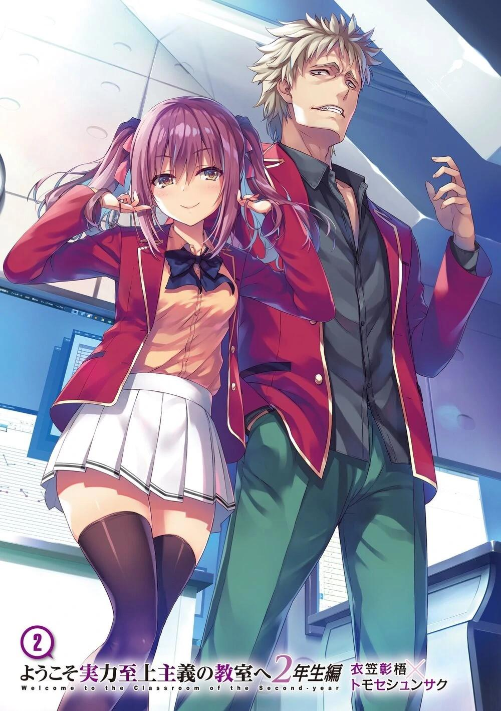
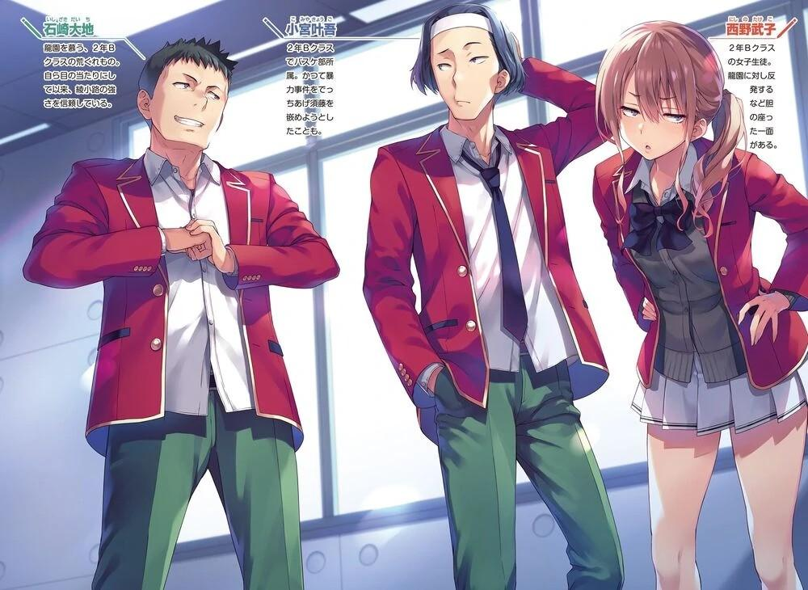
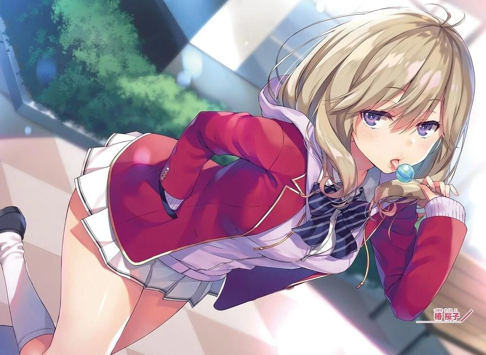
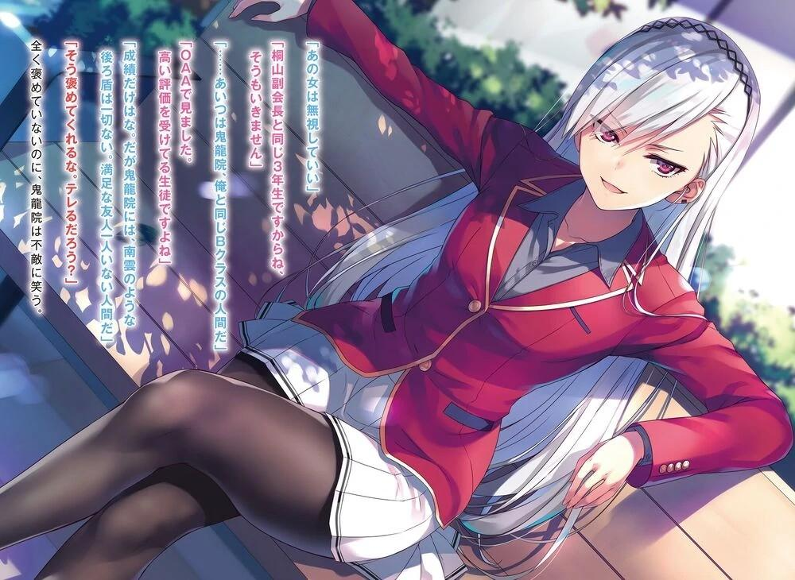
GLADHEIM
TRANSLATIONS
Youkoso Jitsuryoku Shijou Shugi no Kyoushitsu e - Segundo Año Volumen 2
EL MONÓLOGO DEL ESTUDIANTE DE LA HABITACIÓN BLANCA
*Nota del Traductor: generalmente no me gusta poner tantos pronombres (yo, tú él, etc) cuando no son necesarios, pero en esta ocasión vienen bastante enfatizados, en particular el yo, que viene hasta en negritas en este prólogo en la traducción al inglés, así que por esta vez utilizaré tantos “yo’s” como sea posible.
En ese mismo momento, en un aula de 1er año dentro de la Preparatoria de Educación Avanzada.
El maestro estaba enseñando un programa de estudios tosco y de muy bajo nivel.
Los estudiantes de mi edad se rascaban la cabeza cuando se enfrentaban a una pregunta que a mí me aburría hasta las lágrimas.
Entonces yo creé una ilusión con un grupo de estudiantes de kindergarten conmigo como adulto en medio de ellos.
No era la primera vez, pero yo lamenté la inutilidad del aprendizaje de aquí, y la pérdida de un tiempo muy valioso.
De vez en cuando, alguien aparece en mi cabeza.
Porque, de repente, la emoción conocida como "odio" se filtra en mi corazón, recordándome por qué estoy aquí. Y sin querer, aparece poder en mi mano derecha que sostiene el bolígrafo de la tableta.
Ayanokouji Kiyotaka.
¿Cuándo me di cuenta de ese nombre por primera vez?
Aunque yo intentara recordarlo, era difícil recordar la fecha exacta.
Pero yo estoy bastante seguro, sin embargo, de que el nombre se grabó en mi memoria desde que puedo recordar.
Nadie de los que estudiaban en la Habitación Blanca desconocía ese nombre.
Por eso.
La razón de esto es simple. Porque es mejor que cualquier otro estudiante, en cualquier grado o edad.
Nadie podía superar a Ayanokouji Kiyotaka de la cuarta generación.
Como resultado, Ayanokouji Kiyotaka fue creado para ser el modelo perfecto.
Sólo un niño pequeño, pero tuvo un gran impacto en toda la Habitación Blanca.
No sería exagerado decir que los de la 5ª generación, un año por debajo de él, fuimos los más influenciados por él.
Se decía que no importaba lo extremo que fuera un programa de entrenamiento, era capaz de dejar un legado de excelencia.
Sin embargo, en cuanto a eso, yo era igual. Siempre había sido yo quien tenía notas excepcionales entre la 5ª generación.
Siempre demostré que era más un genio que todos los demás.
Pero... aunque yo soy un genio, nunca he sido reconocido ni una sola vez.
En cuanto a la razón, yo no creo que tenga que decirlo.
Siempre fueron las mismas frías palabras que salían de la boca del instructor.
—Ayanokouji Kiyotaka era mucho mejor que tú hace un año.
Por mucho que yo lo intentara, por excelentes que fueran mis resultados, no me reconocían.
Todo lo que yo recibía eran órdenes, diciéndome que alcanzara al inalcanzable, al ser divino.
Algunos de los que estudiaban en la misma habitación que yo empezaron a
"adorar" a Ayanokouji Kiyotaka que había sido convertido en un Dios.
Qué lástima.
Originalmente aceptaron la educación para convertirse en el número 1, pero renunciaron a convertirse en el número 1 ellos mismos.
Ese tipo de personas, ¿cómo podrían sobrevivir en la Habitación Blanca hasta el final?
Por último, yo no necesitaba reírme de cómo el grupo fue eliminado uno a uno.
Sin embargo, yo tuve períodos de debilidad. Aunque es cierto que yo no lo adoraba, yo sospechaba que la figura conocida como Ayanokouji Kiyotaka no existía en realidad, y en cambio era sólo un personaje utilizado para motivarnos.
Los instructores deben haber percibido mis sentimientos.
Un día, yo recibí órdenes del instructor de que me llevaran a una de las salas de visita utilizadas por los de fuera.
Fue a través de una capa, pero allí, por primera vez, yo pude confirmar la existencia de Ayanokouji Kiyotaka con mis propios ojos.
Él no podía saber que yo lo estaba mirando, pero él minimizó sus sorprendentes calificaciones.
Hasta el día de hoy, yo todavía recuerdo su figura, y yo tiemblo sin darme cuenta.
Sin embargo, pregúntenme si yo siento que estoy mirando a un Dios, y yo lo negaré rotundamente.
No es así como funciona. Esa existencia es nuestro enemigo.
"Adorar" no es bueno. Sólo "el odio" es un sentimiento que puede hacernos crecer.
Sí, es el sentimiento de odio lo que hace que mi cuerpo tiemble. Fue debido a mi odio incesante por él lo que me permitió permanecer con éxito en la Habitación Blanca hasta el final.
Pero en el fondo, la veneración, el odio y demás son sentimientos o pensamientos particulares de un individuo.
Para la gente de la organización, lo que los estudiantes piensan no es importante.
El objetivo final de la Habitación Blanca no es crear personas que puedan convertirse en el número 1.
En su lugar, es establecer la investigación que permita la producción en masa de personas excepcionales.
Esa es la verdadera razón de la existencia de la Habitación Blanca.
No importa si soy yo o Ayanokouji Kiyotaka. Mientras sea un ejemplo de éxito, no importa quién sea.
Y por eso los fracasos no tienen ningún valor.
En otras palabras, si Ayanokouji Kiyotaka es elegido como la historia de un éxito, entonces, ¿qué pasaría con el significado de mi existencia, que estaba estudiando tanto?
Sólo se consideraría como uno de los muchos fracasos, acabar con una vida sin valor.
Qué trágico final del camino.
Yo terminaría en el mismo lugar que los estudiantes que fueron eliminados.
¿Cómo podría estar yo de acuerdo con una cosa así?
Yo necesito probar que "Ayanokouji Kiyotaka" no es el número uno por todos los medios necesarios.
Yo tengo que ser reconocido por esa organización como la verdadera historia de éxito.
Y entonces se me presentó una oportunidad única en la vida.
Ayanokouji Kiyotaka incumplió sus órdenes, negándose a volver a la recién reanudada Habitación Blanca.
Gracias a esto, el yo que nunca había interactuado con él antes, tuvo la oportunidad de contactar con Ayanokouji Kiyotaka.
-Así es.
La oportunidad única de enterrarlo llegó por fin.
Y por esa razón, es mejor desechar este sentido común inventado.
Según todos los indicios, matarlo... también es una forma de resolver este problema.
LA VIDA ESCOLAR ESTÁ CAMBIANDO
Ese día, la clase 2-D se enfrentó a una situación extraña que nunca antes había experimentado.
La pierna derecha de Teruhiko Yukimura temblaba, mientras miraba hacia la entrada del aula una y otra vez.
—¿Puedes calmarte un poco? No han pasado ni 5 minutos desde que Kiyopon se fue. Fue llamado por la profesora, ¿verdad? Va a pasar un tiempo.
Hasebe Haruka, una compañera de clase y amiga cercana, habló con Yukimura.
Sakura Airi y Miyake Akito se sentaron a su alrededor.
—Estoy tranquilo... no se preocupen —respondió Yukimura.
Aunque dejó de mover la pierna temporalmente, no tardó mucho en volver a ponerse tenso. Silenciosamente sacudió su pierna de arriba a abajo, y le crujieron los pantalones...
Yukimura planeaba hablar con Ayanokouji después de clases, pero se rindió temporalmente debido a la aparición de Horikita. Entonces se enteró por ella de que Chabashira-sensei lo llamó y que se fue a algún lugar, así que decidió esperar en el aula a que regresara. Hasebe suspiró, algo desamparada, y miró por la ventana.
Sabiendo muy bien que Yukimura no solía sacudir su pierna, se dio cuenta rápidamente de que no tenía sentido seguir intentando calmarlo. La atmósfera en el aula de 2º año de la clase D era pesada.
El cielo de mayo que marcaba el comienzo de la primavera es muy azul y claro, tan hermoso, pensó Hasebe.
Luego, pensó en ello una y otra vez. ¿Cómo se llegó a esta situación?
El primer y segundo año se juntaron para el examen especial de abril.
En la quinta prueba de ese examen, su amigo Ayanokouji Kiyotaka obtuvo una puntuación perfecta en matemáticas.
Si fuera un examen normal, no sería sorprendente ver a los estudiantes obtener una puntuación perfecta.
Con el académicamente fuerte Yukimura a la cabeza, los estudiantes que obtuvieron una puntuación perfecta aparecían de vez en cuando. Por supuesto, ocasionalmente un estudiante inesperado y oculto obtenía una calificación perfecta. Estas personas o bien estudiaban muy duro antes de los exámenes, o tenían suerte con lo que el examen cubría.
—Ayanokouji obtuvo una calificación perfecta, lo cual debería ser imposible.
Yo... ¡es como si estuviera presenciando un truco de magia!
El hecho de que usara específicamente su apellido para llamarlo mostró el resentimiento de Yukimura.
—¡Así que resolvió esa pregunta, Kiyotaka-kun es realmente asombroso!
Para intentar cambiar un poco la lúgubre atmósfera actual, Sakura dijo esto con una sensata sonrisa en su cara.
Pero esto tuvo el efecto contrario, y la cara de Yukimura se tensó aún más.
—He trabajado para entender las habilidades académicas de todos durante nuestro primer año, al menos a un cierto nivel. Por eso me sorprende tanto este resultado, porque basándome en eso juzgué que nadie podía responder la pregunta.
—Cuéntame más.
Al escuchar la conversación del grupo Ayanokouji, Shinohara se unió.
Antes de que se diera cuenta, muchos de sus compañeros de clase estaban escuchando lo que Yukimura estaba diciendo.
—Todos han comprobado la tableta, ¿verdad? ¿Hay alguien en la clase que haya obtenido una calificación perfecta en alguna de las asignaturas? No, miren las otras clases también, y estará claro. Miren la totalidad del segundo año.
Ni un solo estudiante, ni siquiera Ichinose o Sakayanagi, obtuvo una calificación perfecta.
Los hechos hablan más fuerte que las palabras. Yukimura trajo la realidad de lo que pasó y la puso sobre la mesa.
Usando la tableta, podías ver los resultados de los exámenes fuera de la clase 2D.
—Ni siquiera me di cuenta. Hasta puedes ver los resultados de las otras clases. ¿Por qué?
La sorprendida Shinohara tomó la tableta que le dieron, y la pasó incrédula.
—Quién sabe. Tal vez sea por la introducción de la OAA, o tal vez sea por alguna otra razón. No importa cuál sea el motivo, tendremos que esperar hasta el anuncio de los detalles del próximo examen para saber la respuesta.
—Waaah, ¡odio esto! ¿No significa que mucha gente sabrá mis notas?
¡Esto es lo peor!
Karuizawa Kei, la líder de las chicas de la clase dijo esto mientras se lamentaba.
Luego continuó diciendo esto:
—¡Quizás Ayanokouji-kun es sólo un genio de las matemáticas! ¿Sabes?
A veces en esos dramas de televisión y esas cosas, ¿no hay un protagonista que sólo usa las matemáticas o algo así para resolver el caso de asesinato?
Tengo ese tipo de sentimiento.
Escuchando las palabras de Karuizawa, que aunque era una persona distinta era igual de torpe, Yukimura lo rechazó con una expresión de estupor.
—Entonces dime, ¿por qué no obtuvo una puntuación perfecta en sus anteriores exámenes de matemáticas? Si puede resolver preguntas como las que se hicieron esta vez, no tiene sentido que no haya obtenido una puntuación perfecta o algo parecido todo el tiempo.
Yukimura respondió con fuerza, como si sintiera que la otra persona no había entendido nada.
—¿Qué sentido tiene preguntarme eso? Bueno, quizás es algo como,
¿estudió muy duro durante las vacaciones de primavera o algo así?
La respuesta de Karuizawa hizo que Yukimura se irritara cada vez más.
—Esto no es algo que se pueda hacer en poco tiempo. ¡Aunque hubiera estudiado a un nivel más alto de lo que podría imaginar, no explica cómo fue capaz de resolver preguntas que están más allá del conocimiento de un estudiante de preparatoria! Si ni siquiera puedes entender eso, entonces mantén tu boca cerrada.
Su respuesta contundente irritó a Karuizawa también, y todo se acercó gradualmente al punto de ebullición.
—No sé nada de eso. Entonces, ¿puedes dejar de enfadarte tan fácilmente?
Me estás haciendo enojar.
—¡Sí, sí! ¿No es raro que estés descargando tu ira en Karuizawa-san?
Maezono inmediatamente respondió a Yukimura, ayudando a Karuizawa.
Karuizawa, que había conseguido un aliado, se dio la vuelta inmediatamente y empezó a indagar en lo que Yukimura había dicho.
—Tienes una gran boca, pero ¿no podría ser que no entendieras la pregunta? Tal vez sólo tú no pudiste resolver la pregunta, pero la pregunta en sí misma no era tan difícil, ¿verdad?
Karuizawa sabía en el fondo que sus palabras eran muy inverosímiles.
Pero no cambió su actitud, porque sentía que tenía que hacer el papel de tonta aquí.
Sin embargo, a medida que la atmósfera se calentaba en la escena, las dudas que rodeaban a Ayanokouji inevitablemente se hicieron más profundas.
—¿Ya lo olvidaste? La pregunta era tan grande que ni siquiera Sakayanagi e Ichinose pudieron sacar una nota perfecta.
—Entonces, ¿tal vez él sólo sabía esa pregunta por casualidad?
—Acabo de decir...
Yukimura ya había superado el reino de la ira y había llegado al punto de la impotencia.
Y entonces, para organizar sus emociones, comenzó a explicar.
—Yo... bueno, básicamente, ese tipo... probablemente podría ser bueno en matemáticas en un grado increíble, creo.
—Entonces, ¿cuál es el problema? Eso es lo que dije, que era un genio de las matemáticas, ¿verdad?
—Ese no es el punto principal. Si ese es el caso, entonces ese tipo...
—Ah, perdón por interrumpir. Tuve un pensamiento...
Justo cuando la conversación estaba tomando un giro inesperado, Minami Setsuya se lanzó a la pelea.
—El hecho de que Ayanokouji consiga una puntuación perfecta es realmente confuso, y no creo que haya nada extraño en lo que dijo Yukimura. Es sólo que, ¿no está sucediendo esto demasiado de repente? Después de todo, nunca antes había conseguido una puntuación asombrosa.
Esta vez la declaración fue como si se añadiera a lo que Yukimura había dicho, pero lanzando dudas desde una dirección diferente al mismo tiempo.
—Por eso me preguntaba, ¿este Ayanokouji hizo algo sospechoso?
Lo que comenzó a surgir en la mente de Yukimura y de muchos otros estudiantes fue la idea de que "Ayanokouji es un genio de las matemáticas". Sin embargo, también surgió otra opinión que rechazaba esa idea directamente.
La duda de "¿Y si no lo hizo con su propia fuerza?"
—Definitivamente es posible. Como ver el papel de preguntas previamente o algo así. Recuerden, ¿eso no ocurrió también en el primer año? ¡Fue un examen que preguntó exactamente lo mismo que en los años anteriores!
Recordando esto, Kanji Ike dijo eso en voz alta.
Hace un año, en la primavera, su compañero de clase recibió las preguntas de un estudiante de tercer año. Era un examen extremadamente difícil, pero si podías recordar las respuestas, cualquiera podía obtener una alta puntuación.
—Pero asumiendo que las preguntas eran exactamente las mismas que las del pasado, ¿no es raro que no nos diera esa información? Y también es raro que nadie en las otras clases lo haya notado.
Al escuchar la declaración de Ike, Miyamoto señaló con calma las partes que no podía aceptar.
—Entonces... es el método que no debe ser nombrado, sabiendo de antemano la respuesta a la pregunta... Hacer trampa.
—¿Trampa? ¿Cómo podría siquiera hacer trampa?
Shinohara, que estaba a su lado, le preguntó eso en respuesta a su vaga declaración.
—¡Hackear las computadoras de la escuela y robar las respuestas o algo así! ¿No es posible?
—Es tan estúpido como lo que dijo Karuizawa...
Yukimura tenía dolor de cabeza, ante el ya inmanejable desorden de la clase.
Sin embargo, milagrosamente, fue a través de este tema especulativo que el tiempo comenzó a fluir con fuerza.
El calor de la discusión se centró en la posibilidad de que Ayanokouji no hubiera resuelto el problema con sus propias fuerzas, sino que obtuviera la respuesta de alguna otra manera.
Teniendo en cuenta que nunca antes había obtenido una calificación alta, este era el curso natural de la discusión.
Pero el que invirtió la dirección fue Sudou Ken, que había estado escuchando en silencio hasta entonces.
Se puso de pie, y su imponente cuerpo de 186 cm de altura atrajo instantáneamente la atención de toda la clase.
—Parece que se están emocionando bastante, pero no hay ni una pizca de evidencia de que Ayanokouji haya hecho trampa, ¿verdad? No saquen conclusiones precipitadas cuando la persona en cuestión no está aquí.
Las palabras en sí mismas eran perfectamente razonables, pero el hecho de que esas palabras salieran de Sudou sorprendió a todos.
En particular, Ike, que había sido un buen amigo de Sudou durante mucho tiempo, no parecía contento.
—¿Qué quieres decir, Ken? No me digas que te pones de parte de Ayanokouji.
—Eso no es lo que quiero decir. Sólo pensé que era más probable que obtuviera esa puntuación perfecta con sus propias habilidades.
La segunda mitad de lo que dijo no fue tan clara, pero sin embargo expresó su opinión.
—Si hablamos de habilidad, su puntuación académica en OAA el mes pasado fue menor que la mía, ¿verdad? ¡Hubiera sido imposible si no estuviera haciendo trampa!
Miyamoto, que había mirado los datos recién actualizados de la OAA después de clases, lo dijo como si ya hubiera decidido que Ayanokouji hizo trampa.
—Eso solo significa que es diferente del año pasado. Cualquiera puede crecer.
—¿No es justo como dice Sudou-kun? Después de todo, la capacidad académica de Sudou-kun también superó la de Miyamoto-kun.
Las agudas críticas de Kei avergonzaron a Miyamoto por un momento.
Hace un año, llamar a Sudou el peor de todo el año no era una exageración.
Pero ahora, después de que se actualizara la OAA, su capacidad académica había subido de repente a 54. Solo era un punto más que los 53 de Miyamoto, pero seguía siendo más alto.
—Bueno, eso es porque Sudou estudió mucho, reconozco su crecimiento, pero... ¡pero Ayanokouji está creciendo demasiado, y muy rápido!
—¡Así que por eso hay una posibilidad de que se esté conteniendo, como Koenji!
Ahora, el punto anterior de Karuizawa de ser un genio de las matemáticas comenzó de nuevo.
Parecía que la conversación había dado un giro completo, y se dirigía hacia una dirección aún peor.
—Bueno, ¿no es eso un problema todavía mayor? ¿No significa que no contribuyó a la clase?
Puntos que podrían haber sido obtenidos, pero no los consiguió.
Si realmente estaba ocultando su fuerza, entonces no habría nada malo en lo que Ike acaba de decir.
Sudou y los demás, que siempre tuvieron una buena relación en su círculo de amigos, estaban a punto de verse sumergidos en una lucha interna.
Juzgando que no podían dejar que esto se prolongara más tiempo, uno de los estudiantes actuó como árbitro.
—Calmémonos todos un poco. No podemos resolver el problema sólo acalorándonos, ¿verdad?
En un momento en que la atmósfera de la clase estaba empeorando, Hirata Yousuke intervino y presionó el botón de pausa. Hirata, que normalmente tomaba la delantera en la unificación de la clase, se mantuvo en silencio hasta el final esta vez. Decidió esperar hasta que estuviera seguro de lo que la clase estaba considerando, lo que estaban pensando, antes de actuar para romper el estancamiento.
Hirata habló primero con Sudou con delicadeza.
—Sudou-kun, ¿no es casi la hora de tus actividades en el club?
—¿Eh? Ahhhh, ahora que lo dices...
La realidad despertó a Sudou de repente.
—Sé que te preocupa este tema, pero hay muchas cosas que son desconocidas en este momento. No creo que sea bueno dejar que las actividades de tu club se vean afectadas por la mera especulación. Ya sabes que la excusa de "llegaré tarde sólo esta vez" no funcionará, ¿verdad?
Hirata juzgó que el objetivo principal por ahora era reducir el número de estudiantes en el aula.
Calmó a Sudou y a los demás, que se habían puesto tan nerviosos que se habían olvidado de sus actividades en los clubs. La introducción de la OAA había hecho que el número de estudiantes preocupados por sus calificaciones se disparara, incluyendo a Sudou.
Sudou recogió su mochila en silencio, después de echar una breve mirada a la espalda de Suzune, que no había dicho una palabra en todo el alboroto, y salió del aula. Los otros estudiantes que pertenecían a clubes siguieron su ejemplo.
—Yo también tengo que ir. Lo siento, te dejaré a Keisei a ti.
—Sí. Miyacchi, hasta luego.
Miyake, que era miembro del grupo Ayanokouji, recogió sus cosas del club de tiro con arco y dejó la turbulenta atmósfera del aula, con Sakura y Hasebe despidiéndole.
Aunque hubo algunos estudiantes más que se fueron, más de la mitad de la clase todavía permanecía en el aula.
PARTE 1
Nuestra clase D acaba de terminar su primer examen especial después de llegar a 2º año.
Aunque me herí la mano izquierda en el conflicto contra Housen, me las arreglé para eliminar el riesgo de ser expulsado. La herida, que fue el precio que pagué por ella, tardaría un tiempo en sanar, pero no se pudo evitar.
Bajo la vigilancia de Tsukishiro, salí de la sala de recepción, y tan pronto como la puerta se cerró dejé salir un breve respiro.
Y ahora, mi rutina diaria de una despreocupada vida estudiantil finalmente regresaría...
Como si la situación actual permitiera estos pensamientos ingenuos.
Además, el entorno actual ya había empezado a alejarse de la vida cotidiana.
A los ojos de muchos estudiantes, ser llamado para hablar con el director interino era algo sorprendente. Mientras pensaba en ello, tuve que aceptar la realidad delante de mis ojos, la realidad sobre la que no podía hacer nada.
Sólo podía concluir así: Me escapé a esta escuela, pero ahora había una cadena que me seguiría para siempre. Después de todo, la única forma de librarse de ella era ser expulsado.
—¿Terminaste de hablar?
—Bueno, sí.
Chabashira-sensei, que estaba esperando no lejos de la sala de recepción, se unió a mí casualmente.
Estaba un poco abatido, mirando la figura de Chabashira-sensei, pero no dejé que se me notara en la cara.
Por ahora, Tsukishiro no sabía que estaba trabajando con Chabashira-sensei, que es la profesora de la clase 2-D, y Mashima-sensei de la clase 2-A. En esa situación, Chabashira-sensei me estaba esperando aquí después de que me convocara Tsukishiro. ¿Qué era eso si no algo poco natural?
Si pensaste que era el deber de Chabashira-sensei como profesora de la clase convocarme, supongo que no era un problema; pero este es Tsukishiro, así que no puedo descartar la posibilidad de que esta sea una de sus trampas. Por eso, mi intención era que ella se marchara sin volver a verme.
Para una pareja de profesor y estudiante ordinaria, sería anormal que el profesor esperara al estudiante.
Si estuviera más tranquila, Chabashira-sensei podría haber llegado a esa conclusión por sí misma.
Debió estar influenciada por el hecho de que obtuve una calificación perfecta en matemáticas, y que hice pública parte de mi fuerza. No es que no pudiera entender su inquietud, pero esto fue un descuido de su parte.
En su defensa, ella y yo tenemos ideas muy diferentes de ese hombre.
Para Chabashira-sensei, lo más importante es que está conectado con el padre de uno de sus estudiantes.
Después de todo, ella no sabe nada sobre los antecedentes de la Habitación Blanca, así que es excusable.
Es natural que nuestro sentido de la precaución y simpatía hacia él difiriera.
Y por eso, no haré ningún comentario al respecto...
Lo único que podía hacer ahora era salir de la escena lo más rápido posible, así que seguí caminando hacia adelante.
—Serás un poco famoso de ahora en adelante.
Me preguntaba qué diría, y resultó ser sobre eso.
—No estoy muy contento con ello, pero era una medida necesaria. Sólo puedo asumir que esto está dentro de los límites de lo permitido.
—Ignorando a los estudiantes de las otras clases por un momento, ¿cómo vas a explicarlo a tu clase? Siempre has hecho todo lo posible por intentar parecer discreto, pero de repente obtienes una calificación perfecta en ese difícil examen de matemáticas. Por supuesto que ahora no te dejarán en paz. ¿Te has preparado para este escenario con anticipación?
Ignoré sus palabras mientras pensaba en qué hacer el resto del día.
Dejé mi mochila en el aula, así que tengo que volver.
—No sirve de nada actuar por anticipado. Empezaré desde este escenario.
Decirle a mis compañeros por adelantado que iba a obtener una puntuación perfecta en matemáticas en el examen especial habría sido algo cuestionable.
—Esto va a ser difícil para ti. Prepárate para ser bombardeado con preguntas.
—Ya lo sé.
Si ya tienes alguna idea de lo que va a pasar, ¿no podrías dejarme ir ahora?
—¿Podemos parar aquí? Si de ahora en adelante camino solo con una profesora, atraerá mucha atención innecesaria.
Lo sé, lo sé. Chabashira-sensei murmuró mientras se dirigía a la oficina.
Lucía como si estuviera haciendo todo lo posible para suprimir sus emociones, pero pude ver fácilmente que estaba desbordante de alegría.
Comparada con el resto de los profesores, era la que más distancia mantenía de sus alumnos, pero en realidad, podría ser la más cercana. Fue precisamente por los arrepentimientos que tiene desde que era estudiante que sus sentimientos difíciles de reprimir salen a la luz.
Frente a un estudiante promedio, su cara de póquer sería suficiente... pero para mí, era simplemente cómica. Ser fácil de manipular es una ventaja, pero ahora sólo se estaba interponiendo.
No tiene sentido desperdiciar mi energía en Chabashira-sensei, así que la lancé al fondo de mi mente por el momento.
Después de eso, traté de llamar a Horikita, y aunque se comunicó, ella no contestó.
Entonces traté de enviarle un mensaje de texto, pero no lo leyó.
—No se puede evitar, eh.
En este momento, Horikita será la persona más útil para resolver la situación, debido al año pasado, su participación en el duelo de matemáticas y los asuntos relacionados con el consejo estudiantil.
Explicar un poco la situación permitiría algo más de flexibilidad. Si fuera posible, me hubiera gustado prepararme un poco primero, pero resulta que tendremos que hacerlo de improviso.
Ya podía ver mi aula.
Me pregunto cómo estará el aula justo después de que saliera mi calificación perfecta en matemáticas.
Lo ideal sería que casi todos los estudiantes hubieran vuelto a sus dormitorios como de costumbre.
Tan pronto como volví al aula, pude ver que la escena frente a mí difería de lo que esperé.
Habían pasado unos treinta minutos desde que fui convocado por Tsukishiro.
Normalmente, la gran mayoría de los estudiantes ya habrían dejado la escuela.
Sin embargo, aunque los únicos estudiantes en el aula son los que no tienen actividades del club, todavía quedan bastantes.
Su objetivo era evidente. Tenía que ser yo.
Para aquellos que experimentaran la atmósfera de la escena y la forma en que me miraban, estaba claro como el día.
Horikita, que no había respondido a mi llamada antes, también estaba aquí.
Horikita evaluó la situación mejor de lo que yo esperaba.
No tuve tiempo de expresar mi gratitud, porque tan pronto como entré, una horda de estudiantes se me echó encima.
El que lideraba la carga era un miembro del grupo Ayanokouji, Keisei. En marcado contraste con la alegría de Chabashira-sensei, su expresión era algo resentida.
—Siento no haber podido hablar contigo cuando me llamaste antes.
Keisei quería hablar conmigo justo después de clases, pero la aparición de Horikita lo interrumpió, así que primero me disculpé por eso.
—Está bien. Supongo que ahora tienes tiempo. Tengo algunas preguntas que quiero hacer.
Haruka y Airi, que también eran del grupo Ayanokouji, se reunieron a su alrededor.
Akito no estaba allí, debido a las actividades del club que había mencionado antes.
Y una gran parte de los otros espectadores también levantaron las orejas y observaron la situación.
—Tú... ¿qué pasa con los 100 puntos en matemáticas? Revisé las calificaciones de todos los de segundo año con la OAA, e incluso Ichinose y Sakayanagi no obtuvieron calificaciones perfectas. Eres el único en todo el año.
Normalmente, sólo obtener una buena puntuación en un examen no crearía este tipo de ambiente.
Pero este examen era una bestia completamente diferente.
En particular, cuanto más capacidad académica tenía un estudiante, más podía captar la anormalidad de obtener una puntuación perfecta en este examen.
Daba la impresión de que incluso aquellos que eran demasiado débiles académicamente para entenderlo ellos mismos también habían comprendido esa anormalidad después de que los estudiantes a su alrededor les hablaran de ello.
—Sobre eso...
Mis ojos se dirigieron a Horikita, cuyo asiento estaba en la primera fila, para pedir ayuda.
—Bueno, déjame explicarte esto.
Normalmente a esta hora, Horikita habría regresado al dormitorio, pero debe haber visto la situación con los estudiantes restantes en el aula y decidió quedarse. Un juicio acertado. Debido al hecho de que su atención estuvo sobre
mí todo este tiempo, no necesité confirmar con ella que se había quedado para tratar de ayudarme a suavizar las cosas.
Para ayudar a captar la atención dispersa, se puso de pie y se acercó a mi lado.
—Estoy... preguntando a Kiyotaka.
Keisei expresó su intenso disgusto con Horikita, que había intervenido como un extraño innecesario.
—Sí. Pero, Yukimura-kun, soy la única que tiene las respuestas que buscas.
—... ¿Qué quieres decir?
Debido a que utilizó una expresión deliberadamente misteriosa, Horikita se las arregló para llamar la atención de Keisei y de todos los demás estudiantes con una sola frase.
—Yukimura-kun y yo... no, todo el 2º año fue incapaz obtener esta puntuación perfecta, así que ¿cómo pudo Ayanokouji-kun lograrlo? ¿No creen que eso sea inconcebible?
Horikita dirigió la pregunta a Keisei, pero todo el mundo en el lugar definitivamente lo pensaba también.
—Así es... Para ser honesto, mi cabeza es un desastre. Ya lo dije antes,
¿verdad? Las preguntas al final del documento eran imposibles de resolver.
Pero Kiyotaka las hizo todas como si no fuera asunto suyo, y no puedo entenderlo.
De hecho, cuando el examen concluyó, recuerdo que parte de la clase se quedó muy sorprendida con el contenido del examen. Empezando por Keisei y Yousuke, los estudiantes con las mejores notas discutían las preguntas más difíciles. El tema se había extendido incluso al grupo de Ayanokouji, y recuerdo que en lugar de dar una respuesta clara sobre si lo había resuelto o no, esquivé vagamente la pregunta.
—Kiyotaka debe saber muy bien que nadie en la clase puede resolver esos problemas. Sin embargo, ni siquiera lo vimos presumir de cómo los resolvió. ¿No
es extraño? Hasta parece que tiene algo que no puede revelar... ...tal vez hizo algo malo, y sabía las respuestas desde el principio, o algo así.
—Hizo trampa... Por supuesto, no es sorprendente que quieras pensar eso.
Horikita tomó las palabras eufemísticas de Keisei y las dijo sin rodeos.
Keisei miró hacia otro lado avergonzado, pero Horikita continuó con el tema.
—En esta situación, es difícil no sospechar. Si yo fuera un estudiante que no supiera nada, definitivamente me sentiría de la misma manera, y creería que Ayanokouji-kun estuvo haciendo trampa en secreto. Sin embargo, ese no es el caso.
Horikita tomó un respiro, y miró a los estudiantes que la estaban observando.
—Planeo explicar lo mismo a las personas que no están aquí ahora. Para resolver el misterio de la calificación perfecta de Ayanokouji-kun, tendremos que volver a la primavera del año pasado.
La primavera del año pasado. En otras palabras, la época en la que llegamos por primera vez a esta escuela.
—Desde ese entonces ya cambiamos de asiento, pero debe estar fresco en tu memoria que hasta hace poco, éramos compañeros de asiento, ¿no? No mucho después de que empezara la escuela, cuando hablaba con Ayanokouji-kun, descubrí que es extremadamente bueno en lo académico... incluso mejor que yo.
—¿Mejor que tú en lo académico? Espera un momento. Recuerdo que los resultados de Kiyotaka son casi normales desde que empezó la escuela. Lo siento, pero no veo que sea digno de una atención especial. ¿No es su nota en la OAA una C, en promedio general?
Incluso la aguda pregunta de Keisei, que provenía de su clara memoria del pasado, no perturbó a Horikita.
—Por supuesto. Eso es porque mi estrategia ya estaba en marcha antes de que se completara el primer examen.
Cuando Horikita dijo eso, se alejó de mí, hacia el atril. Esto pretendía cambiar la atención de todos los estudiantes. Ella debe haber hecho esto para alejar la atención de mí.
Pensé que me ayudaría, pero la forma en que lo hizo fue mejor de lo que esperaba.
—Desde el principio tuvo el conocimiento para obtener puntuaciones perfectas en matemáticas. Como lo supe antes que nadie, pensé en una pequeña estrategia.
—... ¿Una pequeña estrategia?
Keisei, no tendría sólo una o dos preguntas.
Tenía que preguntarse cómo había obtenido ese conocimiento.
Pero por ahora, Horikita se alejó de eso, y continuó con el tema.
No sobre cómo había obtenido ese conocimiento, sino sobre por qué era necesario ocultar mi excelencia académica.
Horikita simplemente lo trató como un punto focal para atraer la atención de los demás sobre este punto.
—En abril pasado, los de la clase D nos alegramos de haber recibido una suma de dinero tan grande. Me avergüenza decir que yo también fui una de ellos.
Pero a su vez tuve la sensación de que algo inesperado iba a suceder. Durante ese momento, le pregunté a Ayanokouji-kun, que se sentaba a mi lado, si podía contenerse en el examen. Podrías llamar a esto una táctica de reserva o una carta de triunfo. Por supuesto, le dije que lo mantuviera a un nivel que no retrasara la clase. Y así es como su habilidad académica fue calificada con una C por la escuela.
Horikita hizo girar la capacidad académica totalmente poco notable que había mantenido hasta ahora como parte de una estrategia elaborada. Por supuesto, si la gente mirara cuidadosamente lo que pasó hace un año, algunos definitivamente lo encontrarían raro. El hecho de que Horikita en ese entonces no era alguien que pudiera llevarse bien con los demás, cuál fue el momento
exacto en que Horikita se dio cuenta de que yo era bueno en lo académico, etcétera. Había agujeros por todas partes.
Sin embargo, para la mayoría de la gente, los recuerdos de hace un año son de un pasado lejano. A diferencia de los intensos eventos que están grabados en el propio hipocampo, esa escena no causó una profunda impresión, por lo que se puede olvidar aún más.
Sólo un puñado de personas sería capaz de recordar esos eventos como si fuera ayer.
La mayoría diría, "así fue, ¿eh?" y usaría su imaginación para llenar los vacíos de la memoria.
Por supuesto, no pasaría para personas como Keisei que tenían un fuerte sentido de desconfianza.
No dejó de lado a Horikita, y fue tras las partes que serían difíciles de explicar.
—... Tus palabras son apenas convincentes. Si tenías dudas sobre las reglas de la escuela, sería beneficioso para la clase en su conjunto que él obtuviera una mayor puntuación desde el principio. Ya que obtuvo un puntaje perfecto en el examen, obtener una A o A+ en habilidad académica no es imposible. Podrías decir que sólo son las notas de una persona, pero incluso eso podría haber aumentado lentamente el número de puntos de nuestra clase.
Keisei expresó que era completamente incapaz de comprender las ventajas de esta estrategia de reserva.
—Eso, ¿eh? Si sólo miráramos los puntos de clase delante de nosotros, eso estaría bien. Pero si hubiera hecho todo lo posible desde el principio, ¿qué crees que le habría pasado a Ayanokouji a estas alturas? No, para ser más exactos, ¿cómo crees que sería su futuro?
Ante la desconfianza de Keisei, Horikita improvisó y se puso manos a la obra sin huir.
Ella era tan elocuente que fue como si hubiera planeado todo esto desde el principio.
—¿Cómo creo que hubiera sido su futuro...?
Como no lo entendía, Keisei repitió la pregunta, así que Horikita comenzó a explicarlo.
—Sigamos con lo que dijo Yukimura-kun, y asumamos que Ayanokouji-kun hubiera hecho todo lo posible desde abril del año pasado. Si ese fuera el caso, entonces para mayo, Sakayanagi-san, Ichinose-san, y Ryuuen-kun definitivamente se habrían enterado de su nombre. Si ignoraban a la persona que era la mejor en matemáticas en todo el año escolar, se convertiría en un obstáculo para ellos tarde o temprano. No sería sorprendente que alguien se moviera para intentar que lo expulsaran.
—Entonces, ¿estás diciendo que la gente podría haberlo elegido como objetivo?
—Correcto. Cualquier cosa puede pasar en esta escuela. Después de todo, incluso hubo un examen que expulsó a la gente por la fuerza a través de una votación dentro de la clase. Y de hecho, en ese momento, Ayanokouji-kun estuvo en riesgo de caer debido a la estrategia de Sakayanagi-san. Aunque eso fue cuando él era completamente promedio y fue casualmente elegido como un chivo expiatorio, es posible que realmente estuviera dirigido a él.
Horikita estaba diciendo que de acuerdo a la situación, el que sería expulsado podría haber sido yo en lugar de Yamauchi.
—No, eso está mal. Si Kiyotaka hubiera sido serio desde el principio, incluso si hubiéramos puesto a Yamauchi y a él en diferentes extremos de un equilibrio, el resultado habría sido claro como el día.
—No sé... Para evitar ser expulsado, Yamauchi habría sido más cuidadoso al hacer sus movimientos, y la estrategia de Sakayanagi habría sido más compleja y difícil de comprender. Además, Yamauchi-kun tenía al menos más gente cerca de él que Ayanokouji-kun. Como las cosas puestas en ambos extremos de la balanza serían diferentes, las opiniones seguirían ese cambio.
Si continuaba así, terminaría siendo nada más que una discusión por discutir, por lo que Keisei no pudo investigar este punto en profundidad.
Incluso si sacaba a relucir alguno de los otros exámenes, la lógica sería la misma.
—...Entonces, ¿por qué está revelando esto ahora? Si revelan descuidadamente su fuerza, los resultados serán los mismos. Él ha estado llamando la atención ahora que de repente mostraste su fuerza a todo el mundo, y pronto podría convertirse en un objetivo.
Keisei pensó que no había diferencia en los riesgos de ir con todo desde el principio y de ir con todo ahora.
Pero Horikita esperaba que dijera eso, y no mostró signos de pánico.
—No, hay una gran diferencia entre mostrar su fuerza hace un año y revelar su fuerza ahora. En el último año, la unidad de nuestra clase D ha crecido a pasos agigantados, y cada uno de nosotros ha crecido en fuerza individual. Nos hemos vuelto capaces de tomar las decisiones correctas.
Estoy seguro de que si se hubiera mirado a sí mismo hace un año, Keisei lo habría visto de la misma manera.
—No es sólo Ayanokouji-kun. Digamos que sí... No está aquí, pero sería más fácil de entender con el ejemplo del Sudou-kun. El año pasado por estas fechas, era difícil de mirar, y sin duda la mayor carga para nuestra clase. ¿Pero qué pasa ahora? Aunque todavía quedan restos de su naturaleza salvaje, ha mejorado dramáticamente. En términos de habilidad académica, ha mostrado un crecimiento sobresaliente. Y con sus ya excelentes habilidades físicas combinadas, su evaluación de OAA a partir de mayo es incluso más alta que la tuya, Yukimura-kun.
Keisei todavía estaba por encima de él en abril, pero con este examen, Sudou cambió las tornas.
Ella golpeó a Keisei con el hecho irrefutable de la puntuación de la evaluación general de la OAA.
—Cuando entramos en esta escuela, ¿alguno de nosotros tenía la fuerza o la voluntad de proteger a Sudou-kun?
Para aquellos estudiantes que habían discutido si debían abandonar a Sudou, y que ni siquiera se molestaron en pensar en formas de salvarlo, ¿habrían sido capaces de intentar seriamente proteger a un compañero de clase? Eso es lo que Horikita quiso decir. Sin embargo, si Sudou estaba en problemas ahora, Keisei definitivamente se devanaría los sesos junto con los demás para pensar en una estrategia para protegerlo.
—Pero ahora, si alguien tiene su atención en Ayanokouji-kun, podemos trabajar juntos para protegerlo. Así es como lo he juzgado. Y por eso he hecho pública la verdadera fuerza de Ayanokouji-kun, y he comenzado a elevar la fuerza general de nuestra clase.
Ya había algunos estudiantes que habían aceptado lo que decía.
Sin embargo, más de la mitad de los estudiantes todavía tenían dudas.
Por otra parte, Horikita no tenía el material para poder convencer a todos.
Ya que toda la historia estaba barnizada con mentiras, era inevitable que quedara mal en algunos puntos.
Por supuesto, no era como si fuera imposible hacer una tregua por ahora.
Sin embargo, las cosas serían diferentes si tuviéramos un respaldo mucho más fuerte.
Después de confirmar que la mayor parte de la atención estaba en Horikita, miré a Yousuke.
El chico que disfrutaba de la confianza absoluta de la clase.
Aunque Yousuke estaba frente a Horikita, ocasionalmente fingía mirar a su alrededor mientras me observaba. Luego, cuando juzgaba que no se notaría, me miraba a los ojos.
Al igual que con los otros estudiantes, había muchas cosas que no le dije a Yousuke. Si hubiera sido cualquier otro estudiante, probablemente sospecharían o dudarían de mí tanto como Keisei y los otros, y se unirían a ellos para lanzarme fuertes preguntas; pero no tenía nada de qué preocuparme sólo de Yousuke.
Él le daría la más alta prioridad a lo que fuera mejor para la clase en su conjunto.
En la situación actual, incluso sin que se le dijera, entendía claramente cuál era su papel.
—Entiendo, aunque sea un poco, esta estrategia de reserva tuya, Horikita.
Sobre esa base, tengo otra pregunta. ¿Es Ayanokouji sobresaliente sólo en matemáticas?
—No puedo comentarlo en este momento —Horikita respondió con calma a la pregunta de Keisei—. El estudiante conocido como Ayanokouji Kiyotaka,
¿ha mostrado todo el alcance de sus habilidades, o todavía se está conteniendo?
No importa cuál sea la "verdad real", podemos ocultarla para asegurarnos de que Ayanokouji siga siendo una espina clavada para las demás clases.
—Eso...
—Ya veo. Entiendo claramente lo que Horikita-san está tratando de decir.
Justo cuando Keisei estaba a punto de presionar a Horikita, fue alcanzado por el fuego de cobertura de Yousuke, que había estado observando desde el principio.
Y entonces Yousuke lentamente se abrió camino hacia el lado de Horikita.
—No lo entendí al principio, pero he estado escuchando la discusión, y ahora lo entiendo. Es cierto que un enemigo cuyas habilidades son desconocidas puede ser peligroso. Entonces querrán saber más e intentarán reunir información. Pero si ni siquiera nuestros propios compañeros de clase saben la verdad, será inútil que sigan investigando.
Al transmitirlo lúcidamente a todos a su alrededor, apoyó a Horikita y llenó los huecos en sus argumentos.
Juzgando que Yousuke era su aliado, Horikita se unió a él y estuvo de acuerdo.
—Sí. De todas formas, él está destinado a atraer la atención en el futuro, así que usémoslo por completo. Dejar que nuestros oponentes lo vean como un factor desconocido es el mejor curso de acción. Puede que incluso haya estudiantes afuera escuchándonos ahora mismo. Este es ese tipo de escuela.
Todos miraron hacia el pasillo. ¿Era el estudiante conocido como Ayanokouji sólo bueno en matemáticas, o su excelencia se extendía a las otras asignaturas?
Engañaremos a las otras clases y les haremos preguntarse sobre la amenaza que debería ser considerada. Al mezclarse con las de Yousuke, las palabras de Horikita se hicieron inmediatamente más pesadas.
—Horikita-san es realmente buena, ¿no? Estoy un poco conmovida.
En ese momento, Kei golpeó con una declaración casual.
—¿No lo crees también, Shinohara-san?
Entonces buscó la aprobación de su amiga, Shinohara.
Creo que ella estaba tratando de dividir la atención de los otros alejándola de mis habilidades y elevando a Horikita también. Aunque no le había dado a Kei una señal o instrucciones como lo hice con Yousuke, ella instantáneamente entendió lo que tenía que hacer y lo hizo.
—¡Eso es! Siento que he estado viendo a Horikita-san y Ayanokouji-kun hablando en secreto durante mucho tiempo, ¡pero resulta que en realidad sólo lo hacen por la clase!
Cuando llegó por primera vez a la escuela, Horikita no hablaba con nadie más que conmigo.
Este hecho, al final, resultó ser un material útil.
Y ahora, parece que nos dio un sentido de credibilidad.
La brillante forma en que Yousuke y Kei nos cubrieron subrepticiamente tuvo un efecto sobresaliente. La mentalidad de grupo de "Si Yousuke y los otros piensan que es verdad, entonces debe ser verdad" también estaba funcionando poderosamente.
—Una estrategia para ocultar nuestra fuerza.... Eso es cierto, las otras clases también deben estar bastante sorprendidas ahora.
Incluso Keisei, que había sido suspicaz hasta ahora no era una excepción
—Aunque no entendía completamente la situación de la escuela, pensé que mantener un plan de respaldo sería bueno. No sé si esto es afortunado o desafortunado, pero Ayanokouji-kun es malo para comunicarse, y no le gusta destacar. Por esas razones también, quise que lo ocultara.
Horikita expresó que la estrategia era posible porque nuestros dos planes se alineaban.
Luego apartó la mirada de Keisei y se dirigió a la clase.
—Ese es el secreto de cómo Ayanokouji-kun obtuvo una puntuación máxima en matemáticas. Perdón por sorprenderlos a todos.
Horikita sólo tenía una oportunidad, y sobrevivió maravillosamente y prevaleció.
Pero si los dejamos quedarse por aquí demasiado tiempo, las preguntas podrían empezar a brotar de nuevo.
—Creo que sería mejor si lo dejamos así por ahora. Como dijo Horikita-san, las paredes tienen oídos.
Yousuke cerró el tema limpiamente, y explicó a los demás por qué sería malo seguir hablando así. Cuanto más inteligente fuera el estudiante, más dudas tenía, pero al mismo tiempo, cuanto más inteligente fuera, más probable era que se diera cuenta de que esta no era una conversación que debíamos tener aquí. La prueba de esto fue que incluso el interminable ataque verbal de Keisei se detuvo.
En cierto modo, se podría decir que este encuentro desvió sus dudas hasta cierto punto.
Y gracias a los logros de Horikita que superaron mi imaginación, sería más fácil para mí actuar en el futuro.
Aunque mostrara mi fuerza fuera de las matemáticas, podría explicarse por el hecho de que la había estado ocultando. La preparación que ella hizo aquí fue crucial.
Le agradezco sinceramente que se ocupara de esto sin prepararse conmigo previamente.
PARTE 2
La clase después de terminar.
Los estudiantes se dispersaron, dando la bienvenida al final del día escolar.
Agradeceré a Horikita y Yousuke otro día. Podrían haber entendido lo que pretendía, ya que Horikita fue la primera en irse. Mientras tanto, Yousuke se reía con las chicas, con Kei en el centro cuando empezaron a salir del aula, como de costumbre. Recogí mi mochila, me mezclé con todos y salí al pasillo.
Mi día habría sido considerado como terminado... Pero la situación ahora no era tan simple.
Aunque es suficiente para que todos entiendan los puntos principales, los problemas personales son diferentes.
Unas cuantas personas me persiguieron de inmediato. Lo supe sin pensarlo que eran miembros del grupo Ayanokouji. Entre las personas que se acercaban por detrás, había alguien en la parte delantera cuyos pasos sonaban intensos. No había necesidad de mirar atrás para saber cuánta frustración había acumulado Keisei
Fingí no darme cuenta y continué caminando hacia adelante. Después de un rato, me habló.
—Kiyotaka.
Me detuve un poco después de que me llamaran.
Mirando hacia atrás, los tres todavía tenían expresiones rígidas.
—Volver sin siquiera decir hola, ¿no es un poco cruel?
Haruka, la más franca del grupo, habló con fuerza.
Representando tanto al severo Keisei en el frente como a la preocupada Airi en la parte de atrás, expresó lo que ambos querían decir.
Esto pareció tener un efecto, ya que el emocional Keisei, que estaba a punto de estallar, mantuvo su boca cerrada por el momento.
Después de tomar un respiro, dijo esto una vez más.
—¿Por qué no nos lo dijiste antes?... Si es para ocultar información como dijo Horikita, ¿significa que no confías en nosotros en absoluto?
Aunque reconoció las declaraciones de Horikita hasta cierto punto, todavía parecía insatisfecho.
Eso es lo normal.
Es como si yo aplastara los sentimientos de Keisei mientras él me enseñaba amable y seriamente.
Como tenían claro este punto, Haruka y Airi también lo seguían.
La manera fácil de terminar con esto era echarle toda la culpa a Horikita.
Pero no podía soportar hacerle eso, ya que ella me ayudó de forma crucial justo antes.
No, este sentimiento es innecesario. Es necesario pensar en el futuro.
Keisei es un excelente estudiante, y no es uno de los lentos de la clase para juzgar con precisión las situaciones. Pero si no lo acepto positivamente, sólo lo haré llevar una fuerte carga psicológica de ahora en adelante. Y si no puede funcionar correctamente, será perjudicial para la clase. Tampoco sería bueno para Horikita, que llevaba las riendas del poder.
—Siempre he confiado en ustedes. Pero juzgué que no revelarlo a nadie era mejor para el plan futuro. Es porque he estado tan cerca de ustedes que he tenido que reprimir mi deseo de contarles y mantenerme callado.
En lugar de culpar a alguien más, le dije a Keisei que era mi decisión. A pesar de que se acercó agresivamente, viendo que dudaba en decir lo que quería después de escuchar a Haruka, hacer esto le haría no tener más remedio que mover sus emociones a un lado.
—Entiendo completamente su enojo por este incidente. Después de todo, esto está relacionado con el grupo con el que eres más cercano, e incluso me has dado clases particulares. Lo siento mucho.
Cualquiera se sentiría incómodo si la persona a la que enseñas escondiera que es mejor que tú.
Y supongo que Haruka y Airi a su lado sentían lo mismo.
Haruka escuchó mi disculpa desde el costado, y no dijo nada más.
Quizás juzgó que tenía que dejar que Keisei pensara, y lo digiriera por sí mismo, así que guardó silencio.
—Para ser honesto, todavía estoy enojado. Podrías haberme dicho desde el principio que no necesitabas que te enseñaran, que podrías haber pasado el examen sin problemas, y que podrías haberlo manejado por tu cuenta.
—Tienes razón.
Para Keisei, mi situación y antecedentes no importaban.
Es natural que quisiera que se lo dijera desde el principio.
—Y basado en lo que Horikita dijo, seguirás conteniéndote después de esto, ¿verdad? Si no me dices en qué tema te vas a contener, no puedo confiar completamente en ti.
De ahora en adelante, Keisei siempre tendrá sus dudas. Cosas como, "en qué es bueno este tipo, y en qué no es bueno".
Como alguien que enseña a otros, tenía que pensar mal en tener a alguien igual de extraño a él cerca.
—Quiero salir de este grupo... Bueno, mentiría si dijera que no tengo ese pensamiento.
—Yukimuu, ¿hablas en serio?
Haruka, que había permanecido en silencio, habló.
Después de todo, es imposible permanecer en silencio después de escuchar eso.
—Sí, hablo en serio. Hasta que escuché la explicación de Horikita, estaba decidido a irme porque no creía que se pudiera confiar en Kiyotaka en absoluto.
Pero... a pesar de ello, después de estar en el mismo grupo durante tanto tiempo,
todavía puedo entender algunas cosas. Sé que Kiyotaka no es una mala persona. Como escondía algo por el bien de toda la clase, es comprensible que no quisiera decírselo a nadie. Kiyotaka podría haberme dicho que no necesitaba tutoría, es cierto, pero es malo con las palabras, así que no podía decirlo.
También puedo entender eso.
Keisei apretó los puños y lo dijo sin tratar de ocultarlo.
—Es que... sí, es que... necesito algo de tiempo para ordenar mis pensamientos.
Al decir eso, Keisei suspiró fuertemente a propósito.
—No hay ninguna ventaja en llevar esto más allá... Al final, lo que quería decir, lo que quería expresar es... no importa incluso si escondes tu fuerza en otras áreas. No es como si estuvieras reteniendo a la clase como Koenji, así que nadie tiene derecho a quejarse. Si continúo criticándote con fuerza, el ambiente se volverá aún peor.
Podría decirse que la persona más insatisfecha y poco convencida, Keisei, eligió suprimir esos sentimientos por el bien del grupo Ayanokouji, así como de sus compañeros de clase.
—Aunque mi lado racional lo tenga claro, no puedo reprimirlo emocionalmente, así que tendré que reflexionar sobre ello. A continuación, reconoceré la parte de tu fuerza que has revelado como algo real. En cuanto a las otras materias, seguiré usando mi suposición anterior de que eres aceptable, y seguiré dándote clases particulares. ¿Está bien así?
En una situación en la que nuestra amistad podría colapsar, esta fue definitivamente una propuesta valiosa.
No tenía razón para rechazarla, así que asentí con la cabeza y acepté directamente.
—Gracias, Keisei.
Elegí expresar mi gratitud con palabras.
Airi, que había sido testigo de todo, finalmente encontró el coraje para hablar.
—¿Qué tal si ustedes dos se dan un... apretón de manos de reconciliación?
—¿Un apretón de manos de reconciliación? ¡Eso está bien!
Al escuchar la propuesta de Airi, Haruka expresó su aprobación.
Sintiendo que la pesada y deprimida atmósfera se disipaba gradualmente, Keisei inmediatamente sacudió la cabeza.
—No, es vergonzoso.
Haruka agarró rápidamente la mano derecha de Keisei que quería negarse.
También me agarró la mano derecha básicamente al mismo tiempo.
—¡Muy bien, reconcíliense!
Diciendo eso, nos juntó las manos, obligándonos a estrecharlas.
No preparamos nuestras manos para estrecharlas, así que sólo se tocaron.
—Si no estrechan las manos, no las soltaré, ¿de acuerdo?
—¡Ya sé, ya sé...!
Tal vez el hecho de que su mano tocara la mía en este apretón de manos a medias fue aún más humillante, ya que Keisei cedió al final.
Con eso, los dos nos dimos la mano, un símbolo de nuestra reconciliación oficial.
—Me parece bien, pero Akito todavía no sabe nada.
—Miyacchi seguramente no será un problema. Creo que aceptará a Kiyopon como algo normal, ¿verdad?
—...Eso es verdad.
Keisei pensó un poco. Llegó rápidamente a la misma conclusión después de pensar en su imagen de Akito.
—Bueno, todo ha vuelto a la normalidad. Se siente que nos hemos quitado un gran peso de encima, ¿verdad?
¿Verdad? Haruka y Airi se miraron, ambas estaban de acuerdo.
—En cualquier caso, te has convertido en una celebridad tan rápidamente, Kiyopon... que...
Haruka me miró como si recordara algo, y se puso tiesa.
Los tres esperamos a que continuara, pero no parecía que fuera a hacerlo.
—¿Qué pasa, Haruka-chan?
Airi, preocupada por la Haruka que dejó de moverse, le dijo algo.
En ese momento, continuó, como si la magia se hubiera deshecho.
—Oh, ahh. Bueno, no es nada. De todos modos, ¡va a ser difícil para ti ya que ahora eres una celebridad!
—¿No es un poco excesivo sacar una nota máxima? Sakayanagi, que fue segunda en el año, obtuvo 91 puntos.
Después de que Keisei me reconociera, sus preocupaciones cambiaron a otra cosa.
—Hablando de Sakayanagi-san, ella obtuvo puntuaciones similares en todas sus asignaturas, ¿verdad?
Airi trató de recordar.
Obtuvo 91 puntos en matemáticas, y sorprendentemente, tuvo puntajes similares en las otras materias. Considerando la dificultad de los exámenes, era una estudiante que sin duda era muy buena en lo académico. En todo el año, ella era definitivamente la segunda, sólo por detrás de mí. Lo que era más impresionante era que no había estudiado en un ambiente extraordinario como la Habitación Blanca. En ese caso, no era una exageración que se llamara a sí misma una genio.
—Sé que ella es inteligente, pero desde la introducción de la OAA, su fuerza se ha hecho más evidente.
Aunque había arrepentimiento en su voz, Keisei reconoció honestamente la fuerza de Sakayanagi.
No había necesidad de dudar de sus altas calificaciones en el pasado, pero su fuerza ahora había alcanzado otro nivel.
¿Se había contenido a propósito, o había empezado a estudiar después de clases?
No importaba qué, no hay duda de que se había convertido en un problema más grande que antes, e incluso más, en un oponente al que teníamos que vencer.
—Como conmemoración de nuestra conciliación, ¿por qué no nos reunimos en el centro comercial Keyaki una vez que las actividades del club de Miyacchi terminen?
No hubo ni una sola persona que rechazara la sugerencia de Haruka.
PARTE 3
A las 7 de la mañana, frente al centro comercial Keyaki.
Llegué aquí antes que ellos y los esperé en silencio.
Como el que causó el caos, pensé que sería mejor no hacer esperar a nadie, especialmente hoy.
—Llegué demasiado pronto...
El reloj ahora mismo marcaba las 6:30.
Sin embargo, no me pareció que la espera fuera dolorosa. Más bien, no sería muy exagerado llamarlo una de mis habilidades especiales.
Fue agradable tener algo de tiempo para vaciar mi mente.
Sin embargo, aunque no era un precio pequeño, las cosas se convirtieron en algo problemático.
En otras palabras, el hecho de que estuviera solo atraería la atención. Aparte de los de tercer año, mis notas podían ser vistas por todos, así que la atención de todo el año pronto estará sobre mí. Me temo que los ojos inquisitivos de mis senpais y kouhais estarán sobre mí por un tiempo.
No tenía nada que hacer por el momento, así que me quedé ahí parado. De repente, mi teléfono vibró, y lo saqué, notando un mensaje del grupo Ayanokouji.
Airi dijo que estaba saliendo del dormitorio ahora. Los otros 4 habían leído el mensaje.
No les dije que ya estaba aquí, así que me limité a mirar sus respectivos estados.
—Ayanokouji-kun, ¿estás esperando a alguien?
Como estaba inmerso en mi teléfono, no presté atención. Fue Ichinose quien me llamó, así que levanté la cabeza.
Estaba acompañada por su compañero de clase Kanzaki. Aunque la escuela se enorgullecía de su gran área escolar, los lugares a los que iban los estudiantes eran limitados. Como resultado, si esperabas en la entrada del centro comercial Keyaki, un lugar que muchos estudiantes frecuentaban, toparse con gente que conocías era normal.
—Estoy esperando a mis amigos para ir a comer. ¿Qué tal ustedes?
No había nada que esconder, así que respondí honestamente.
Ichinose y Kanzaki respondieron juntos al mismo tiempo, sin siquiera intercambiar miradas.
—Estamos haciendo algo parecido, ¿no?
—Sí.
Kanzaki contestó bruscamente. Pero su mirada estaba más enfocada en Ichinose que en mí.
Algo parecido, ¿eh? Pero incluso si algo era similar, también es diferente.
—Oye, vi los resultados de tu examen. En realidad obtuviste una calificación perfecta en matemáticas, ¡es increíble!
—A juzgar por la OAA del año pasado, no deberías tener la fuerza para obtener una puntuación perfecta.
Ichinose no planteó ninguna pregunta sobre que yo oculte mi fuerza. Kanzaki, por otro lado, se opuso a ello, no escondiendo su disgusto en sus palabras en lo más mínimo.
—Hay muchas razones para esto. Sólo después de discutir con mis camaradas decidí ocultar el hecho de que soy bueno en matemáticas.
Lo expliqué así. Si se tratara de Ichinose y Kanzaki, entenderían la situación hasta cierto punto.
Deberían ser capaces de usar su imaginación para reforzar lo que dije para hacerlo más completo.
Normalmente, explicarlo así sería suficiente. Pero esta vez, la aguda mirada de Kanzaki no se desvaneció.
—Así que estás diciendo que lo has estado ocultando todo este tiempo.
Parece que eres más problemático de lo que pensaba.
—Kanzaki-kun, no lo digas así. No importa de qué clase sea, tendrán sus propias ideas, y por supuesto, sus propias estrategias.
Kanzaki aceptó la crítica de Ichinose como algo natural.
—Eso es cierto. No usó trucos sucios como lo hizo Ryuuen. No obstante, hay algunas cosas que no me gustan de él. Ichinose, debes ser muy consciente del hecho de que no es nada fácil ser capaz de resolver esa cuestión extremadamente difícil para obtener la máxima puntuación. Dice que sigue las instrucciones de su camarada, pero...
Kanzaki estaba a punto de continuar, pero Ichinose lo detuvo con un raro tono contundente.
—Ayanokouji-kun no es nuestro enemigo.
Ichinose estaba muy insatisfecha con la actitud agresiva y espinosa de Kanzaki.
Es cierto que ese tipo de actitud es rara para Kanzaki, pero si tuviera que elegir quién tenía la actitud correcta, definitivamente elegiría a Kanzaki, que estaba en guardia.
—Nuestra alianza se ha disuelto. No hay duda de que la clase 2-D es nuestra enemiga.
—Eso es... ¡pero no tiene sentido que nos involucremos en una disputa sin sentido!
—Esto no es una disputa. Sólo es necesario que conozcamos la verdadera fuerza de nuestro oponente.
—Ayanokouji-kun ocultó el hecho de que es bueno en matemáticas; este es un hecho que fue ocultado.
Kanzaki dio un paso adelante; ahora la distancia entre nosotros era menor que la distancia entre él e Ichinose.
—Entonces, ¿qué más? ¿Sólo son matemáticas? No, no puede ser sólo matemáticas. ¿Qué otras habilidades estás ocultando? ¿Escondiste esas piernas de las que estás tan orgulloso durante el festival deportivo del año pasado por órdenes de tus camaradas? A la clase B... No, a la clase C, lo peor es que aún tienes otras fortalezas escondidas.
—Sin embargo, hay un límite para los resultados de los exámenes. No importa lo bueno que seas estudiando, lo máximo que puedes conseguir en una asignatura es 100 puntos, y la nota más alta es A+. Aunque obtenga calificaciones máximas en todas ellas, no hay mucha diferencia entre él y Sakayanagi-san, la segunda del año.
En realidad, sólo había una diferencia de 9 puntos entre Sakayanagi y yo.
Aunque tuviéramos la misma diferencia en las cinco asignaturas, sólo sumaría 45 puntos. Ichinose no pensaba que eso fuera una gran amenaza.
—Nuestras calificaciones generales en la clase C son mucho más altas que eso. La diferencia de puntos de Ayanokouji-kun después de mostrar su verdadera fuerza, sólo tenemos que compensar eso con toda nuestra clase.
—Eso podría ser cierto si es sólo un examen escrito... pero...
—Deberíamos parar aquí, Kanzaki-kun. También sabes que esto no es algo sobre lo que debamos discutir acaloradamente aquí, ¿verdad?
Ichinose, que siempre había sido pacifista, estaba preocupada de que si seguíamos discutiendo intensamente frente al centro comercial Keyaki, que es un lugar muy concurrido, tarde o temprano caeríamos en el caos.
—Perdí la calma.
Kanzaki, quizás pensando que continuar la discusión aquí no resolvería el problema, cerró la boca y desvió su mirada impotente.
—Me iré primero.
Con eso, Kanzaki dejó a Ichinose aquí, y rápidamente desapareció en el centro comercial Keyaki.
Lo miramos tranquilamente cuando se iba.
—Lo siento, pero dada la situación actual, Kanzaki-kun definitivamente no tiene mucha paciencia.
La clase B, que siempre había mantenido su posición, ahora cayó a la clase C.
Dado el fracaso del estilo de lucha que había funcionado hasta ahora, toda la clase no tuvo más remedio que cambiar de dirección. En esta situación, es comprensible que sea así.
O más bien, la Ichinose que aún podía ser agradable conmigo en esta situación es la que es diferente.
Kanzaki empezaba a pensar que debían abandonar su ingenuidad en el futuro, y tenía razón.
—¿Soy yo la que está equivocada...?
Ichinose no era completamente ignorante de lo que Kanzaki estaba pensando.
Pero aunque lo supiera, decidió mantenerse fiel a sí misma.
Había un mundo de diferencia entre eso y no saber nada más que aferrarse obstinadamente a su propio rumbo.
—¿Recuerdas lo que te dije antes?
—Sí, me dijiste que me aferrara a mis compañeros y siguiera adelante,
¿verdad?
—Puede que aparezcan estudiantes que quieran cambiar a su clase a partir de ahora, como Kanzaki. O puede que haya algunos que estén descontentos contigo y quieran detenerte. Tal vez incluso algunos que traicionarán a la clase. No será sorprendente pensar que algunos harán lo que sea sólo para hacer un cambio. La clase 1-B, la clase que tú sola protegiste, esa clase ya no existe.
De todos los estudiantes de la clase 2-C, esas palabras eran las que más resonarían con Ichinose.
—No importa lo que pase desde aquí, quiero que confíes en tus compañeros, pongan su seguridad primero y continúen la lucha.
—Está bien. Definitivamente voy a protegerlos. Si llega el momento en que alguien de mi clase tenga que irse, creo que seré la primera.
No estaba siendo audaz, Ichinose seguramente lo hará.
Tomaría la responsabilidad de la recesión de la clase y elegiría dejar la escuela primero.
—Me siento aliviado de escuchar eso, pero hay una cosa con la que estoy insatisfecho.
—¿Insatisfecho...?
De alguna manera no entendió la indirecta al inclinar ligeramente la cabeza.
—Nunca dejaré que te expulsen.
Había una necesidad de hacerla recordar lo más importante.
Para este año, es de suma importancia que siga corriendo hacia adelante sin parar.
La miré a los ojos, encendiendo un fuego ardiente en el fondo de sus pupilas.
Lo que recibió no fue oscuridad.
Era una luz que nunca se desvanecería.
Si existía la posibilidad de que la luz se extendiera en la dirección equivocada, la tomaría yo mismo.
—E-eso... sí... definitivamente... me... quedaré —Me miró y murmuró, avergonzada—. T-tu.... Eres realmente increíble, Ayanokouji-kun... Pensar que has conseguido una puntuación perfecta en un examen tan difícil.
Dijo mientras miraba hacia otro lado como si tratara de cambiar de tema.
—Aunque puede ser mi única característica rescatable en la escuela.
—A pesar de eso, sigue siendo asombroso. Sólo significa que tienes un arma que no perderá ante nadie más.
—Tú también eres igual. Sin duda, tú también tienes un arma así.
—Eso estaría bien, pero...
Pero faltaba gente a su alrededor que pudiera usarla de manera competente.
No era que no estuviera bendecida con buenos compañeros de clase.
Era debido a las desventajas de esta arma.
La habilidad de Ichinose para incluir a la gente era lo suficientemente fuerte como para matar las individualidades de sus compañeros.
Dependían de los demás. Por lo tanto, el círculo vicioso les hizo perder todavía más su individualismo.
—...Necesito irme pronto. Ya estuvimos demasiado tiempo aquí, y me siento mal dejando que Kanzaki me espere.
Asentí con la cabeza y la despedí, observando su figura alejarse.
Pensando que era casi la hora de encontrarnos, saqué mi teléfono de nuevo para confirmarlo.
—¿De qué hablabas con Ichinose-san hace un momento?
De repente, la voz de Haruka vino desde un poco más lejos.
Miré, y Akito, Keisei y Airi habían llegado, mirándome de manera similar.
Lucía como si los otros miembros del grupo ya se hubieran reunido mientras hablaba con Ichinose.
—Mi calificación perfecta en matemáticas.
—No es de extrañar. Después de todo, cuanto mejor seas en lo académico, más conscientes serán de ello.
Tan pronto como lo expliqué con una razón sensata, Keisei inmediatamente pareció entenderlo.
Pero había algo raro en Haruka.
No preguntó más, y rápidamente volvió a su expresión habitual.
Mañana, a partir del 2 de mayo, daríamos la bienvenida a la llegada de la Semana Dorada.
Los estudiantes aprobaron sus exámenes especiales sin problemas, así que estoy seguro de que todos disfrutaremos de las vacaciones sin preocupaciones.
PARTE 4
Esa Semana Dorada terminó en un instante, y volvimos a nuestra vida escolar.
El escenario seguía siendo el mismo, pero la vida cotidiana empezó a cambiar lentamente.
—... Hey.
Por la mañana, justo después del descanso, Sudou fue la primera persona con la que me encontré, cerca del casillero de zapatos de la escuela.
Fue sólo un encuentro con un compañero de clase, pero también era parte de esa vida cotidiana cambiante.
—No ha sido fácil para ti durante un tiempo. ¿Estás bien ahora?
—No hay problema. Es igual que antes. Pasé la Semana Dorada sin problemas.
—Ya veo. ¿Sabes? Estas vacaciones pasaron muy rápido.
Caminé codo a codo con Sudou hacia el aula, quien ajustó su ritmo de caminata al mío.
Como tenía que salir del aula para sus actividades en el club, Sudou debió oír los detalles de Ike u Hondou después.
No necesitaba decir lo que pasó en ese salón, ya que él debía haber entendido todo.
—Así que ocultabas el hecho de que eres bueno estudiando por la estrategia de Suzune, ¿verdad?
Asentí con la cabeza un poco en señal de conformidad, y Sudou hizo un poco de pucheros. Miró hacia otro lado y se giró hacia adelante.
—Bueno, ustedes dos han sido muy unidos desde que empezó la escuela.
Un poco tarde, pero lo entiendo.
—No nos llevábamos bien. En todo caso, al principio era más bien como si quisiéramos mantener nuestra distancia.
—¿Fue así? Lo siento, no me pareció de esa manera.
Eso fue porque Sudou veía a Horikita como una persona del sexo opuesto.
No tenía sentido que lo señalara, así que descarté sus palabras.
—Me enteré de ello por Yousuke después. Le hablaste bien de mí,
¿verdad?
—No puedo decir que te estaba encubriendo; sólo estaba exponiendo los hechos.
—Los llamas hechos, pero tampoco sabías la verdad en ese momento.
—¡Claro que sé eso! —Sudou se enfadó un poco y volvió a hacer pucheros, y habló de nuevo—. Era un secreto que eres un genio de las matemáticas,
¿pero el hecho de que seas bueno en las peleas es también un secreto?
Para Sudou, este aspecto es más importante que la parte de las matemáticas.
—No sé lo que quieres decir.
Fingí no entender de qué estaba hablando.
Sin embargo, Sudou ya no es el tipo de persona que se echa atrás al oír eso.
—No te hagas el tonto conmigo. Me peleé con Housen, así que lo tengo claro. Su fuerza sobrehumana es lo más importante. Y es más rápido que cualquiera con el que haya peleado hasta ahora. Honestamente, es un monstruo.
Sudou dijo que fue precisamente porque se enfrentó a él que pudo experimentarlo de primera mano.
—Esa fue la primera vez que me sentí asustado en una pelea. Todavía ahora su cara sonriente está grabada en mi cerebro.
Al detenerse, se golpeó la sien con el dedo índice izquierdo dos o tres veces.
—Estabas asustado, ¿eh? Sin embargo, luchaste valientemente por Horikita.
—Bueno, no había otra opción. Ese tipo tiene más que unos pocos tornillos sueltos.
No podía negar eso. Por lo que he visto de cerca, la obsesión de Housen por la violencia es realmente extraordinaria.
—Pero tú también tenías una oportunidad de ganar, ¿no?
Unos días antes, Sudou fue noqueado por Housen sólo porque cayó en una trampa.
En una situación que requería mantener a su oponente en la mira, Housen usó a Horikita como cebo para hacer que Sudou mostrara su lado indefenso.
Resultó ser fatal para Sudou, y terminó la pelea con su derrota.
—Quién sabe... En una pelea real y seria, no creo que pueda ganar contra él.
Sudou definitivamente no es débil. Si Sudou, que tiene una excelente habilidad física y coordinación, habla así de Housen, entonces no es alguien con quien se pueda jugar.
Incluso personas cuidadosamente seleccionadas como el hermano mayor de Horikita, Horikita Manabu, que había estudiado artes marciales, o Albert, que nació con un cuerpo extraordinario, no podrían vencer a Housen en una pelea.
—¡Hey, no es eso de lo que quería hablar! Mis asuntos no importan.
En ese momento, Sudou me miró a la cara.
—Tú... superaste la fuerza de ese monstruo de Housen y lo detuviste. No me equivoco, ¿verdad?
Algo como "usé más poder de lo que normalmente puedo" sin duda ya no funcionaría con Sudou.
Es natural para él asociar eso con, "este tipo también obtuvo una calificación perfecta en matemáticas, así que no es sorprendente".
Y había cosas que él podía ver sólo por su afecto a Horikita.
—¿Y estás seguro de que no fue sólo un malentendido, Sudou?
—Sí, así es.
Sudou agarró mis bíceps con su mano derecha.
Para confirmar lo poderosos que eran mis músculos, Sudou los agarró ligeramente varias veces y dijo:
—Tengo esta sensación desde el año pasado, cuando te vi en la piscina.
Ni siquiera participabas en ninguna actividad de club, pero tenías un cuerpo súper musculoso. Es difícil de decir con la ropa puesta, pero estos músculos firmes... no los tendrías sin un entrenamiento considerable.
Sudou se ha centrado en su cuerpo y ha entrenado con regularidad. No tiene sentido tratar de engañarlo más.
Decir algo como que hago ejercicio por mi cuenta después de salir de la cama no tiene ninguna posibilidad de convencerlo.
No estaba simplemente mirando. Cuando me tocaba así, mi propio cuerpo le decía la verdad.
—Hablando de eso, tu fuerza de agarre cuando lo medimos antes del festival deportivo era de unos 60 kg, ¿verdad?
Sudou gradualmente pensó en el año pasado.
—Esa vez, ya pensaba que era increíble... pero te estabas conteniendo.
¿Cuánto puedes agarrar exactamente?
—Quién sabe. Honestamente no lo sé.
—¿No lo sabes?
—No recuerdo haber medido nunca mi fuerza de agarre adecuadamente.
—¿Cómo es posible? ¡Tenemos evaluaciones físicas tantas veces en la primaria y secundaria!
Honestamente no lo recuerdo.
Por supuesto, había exámenes físicos periódicos en la Habitación Blanca.
Recolectaron muchos más datos que los que miden los exámenes físicos de una escuela normal.
Sin embargo, sólo el instructor sabía esas cosas.
El instructor no se molestaba en decirle a cada estudiante los detalles de sus valoraciones.
Y los mismos estudiantes no tenían interés en números que cambiaban cada día.
Era porque sólo los veían como números que subían o bajaban.
Sin embargo, si bien me entrenaba todos los días para mantener mi cuerpo, mi capacidad física disminuía lentamente ahora en comparación a cuando estaba en la habitación blanca.
—¿Realmente no lo sabes? —dijo Sudou. Me miraba directamente a los ojos, así que debe haber entendido que no estaba mintiendo.
—En ese entonces, escuché que una fuerza de agarre de 60kg era el promedio para alguien de primer año en la preparatoria, así que ajusté mi fuerza a eso. Traté de no sobresalir.
Más tarde, me enteré de que era más alta que la media, y recuerdo que me sorprendió un poco.
—Estoy hablando de ti, ¿qué tan fuerte es el verdadero tú?
Un corazón inquieto lleno de envidia y celos.
—Qué tan fuerte... ¿eh?
Dependiendo de cuál fuera el punto de referencia, la respuesta y la percepción cambiarían con él.
Mientras pensaba...
—Olvídalo. No tienes que responder.
Sudou retiró su pregunta como si estuviera rechazando mi respuesta.
Aunque le cuente todo sobre mi situación, no es algo que cualquiera pueda entender.
Al final, no es algo que pueda expresarse claramente con sólo unas pocas palabras.
—Poderoso o no, no tiene sentido si no lo veo con mis propios ojos.
Soltó mi bíceps que había agarrado antes.
Sudou, al igual que Keisei, comenzó a digerir las cosas por sí mismo.
—Pero ahora entiendo que eres un tipo bastante increíble. Eres muy poderoso, Ayanokouji.
—¿No te molesta que siempre haya estado ocultando mi fuerza?
—Bueno, al principio pensé, '¿qué pasa con eso?', y entiendo cómo se siente Yukimura. Si me siento como si ya fuera súper poderoso, seguro que no se sentiría bien saber que alguien a mi lado está escondiendo sus poderes y que en realidad es más poderoso que yo. Pero no es que no pueda entender lo que estás pensando, no te gusta destacar, ¿verdad? De alguna manera, he llegado a entender tu postura, supongo.
De Sudou llegó una respuesta que no esperaba en absoluto.
—Definitivamente sería una mentira si dijera que no me importa, pero hago lo mejor que puedo a mi manera para crecer. Eso no tiene nada que ver con cómo son los demás, eso es lo que pienso.
Ocúpate de ti mismo, no de otras personas.
Lo dijo como si se instruyera para convertirse en alguien que fuera lo mejor para él.
—Además, no importa lo increíble que seas, en el baloncesto, definitivamente soy mejor.
Por primera vez hoy, Sudou se rió con valentía. Fue una declaración llena de confianza, sobre algo que ni siquiera necesitaba confirmar. Por supuesto, es indiscutible. Aunque jugara una o dos veces, el resultado era extremadamente claro. No tenía ninguna posibilidad de ganar.
—¡Si es baloncesto, podemos tener un partido en cualquier momento!
—Ahórratelo. No quiero convertirme en tu saco de boxeo.
—¡Ja, ja, ja! ¡Veo que lo entiendes!
Mientras la gente tenga algo en lo que sea mejor que los demás, su humor se relajará fácilmente.
—Así que no hablaré de la situación con Housen con nadie. Siento que esto ha sido muy tosco, pero eso era lo que quería decir hoy.
—Está bien.
Lo aprecié desde el fondo de mi corazón, por su consideración hacia mí.
—Ah sí, no hablemos de Housen otra vez, pero ¿puedo preguntar una última cosa?
—Si es algo que pueda responder.
—¿No pensaste que le diría a alguien más sobre la pelea con Housen?
Una pregunta repentina, tal vez una que estaba destinada a ser hecha durante la conversación.
Si Sudou hubiera sido testigo, había muchas posibilidades de que tuviera que obligarle a guardar silencio sobre ello.
Por supuesto, por si acaso, pensé en pedirle a Horikita que lo obligara a callar, pero después de esa noche, y la calificación máxima en matemáticas después, podía adivinar lo que estaba pensando por los ojos de Sudou.
—Si fuera el viejo Sudou, probablemente habría organizado algo. Incluso me atrevería a pedirle a Horikita que te diga que te calles.
—¿Si fuera el viejo yo?
—Según la evaluación de la OAA, el que más crece en la clase D eres tú.
A diferencia de la época en la que eras impulsivo, ahora eres capaz de evaluar la situación con calma. Por eso no tomé ninguna medida.
Esta decisión se basó en mi propio análisis de Sudou Ken.
Pero si se tratara de otro estudiante como Ike u Hondou en esa situación, podría haber evolucionado de manera diferente.
—Siento que... me están convenciendo.
Sudou tenía una expresión de sorpresa y suspiraba de admiración.
—Estoy totalmente convencido. No se siente mal saber que tienes una alta opinión de mí.
Diciendo eso, Sudou acercó su cara a la mía.
—Hay una pregunta más que me gustaría hacer. Suzune y tú...
—No estamos saliendo.
Como me alejé de la cara que estaba demasiado cerca, usé una actitud de "es la verdad" para responderle.
—Oh...
La respuesta instantánea hizo que Sudou se evadiera un poco.
—Por eso, bueno, no es como si te dijera que no salgas con ella. Suzune es libre de salir conmigo, o contigo, o con cualquiera si quiere. Pero, bueno, si lo escondes a propósito, entonces no tendré piedad de ti.
—Bien, bien... Si, por casualidad, eso sucede, te lo diré enseguida, ¿de acuerdo?
—Bien. Espera, no, ¡eso no está bi...en! ..., pero, no, está bien.
Ahora que preguntó todo lo que quería preguntar, Sudou exhaló un suspiro de alivio.
—Puede que sea frío viniendo de un amigo de Haruki, pero me alegro de que no te hayan expulsado durante la votación de la clase. No hay duda de que eres alguien que necesitamos para ascender a la Clase A. Hasta luego, Ayanokouji.
Diciendo eso, Sudou aceleró un poco su ritmo, y se dirigió hacia la clase. ¿Era para ocultar a los transeúntes que estábamos hablando?
—Alguien que necesitamos para ascender a la clase A... ¿eh?
Nunca pensé que obtendría semejante evaluación de Sudou. Sin embargo, yo no soy el tipo de persona que la clase necesita en este momento.
No hay duda de que el propio Sudou es indispensable para la clase.
EL PASO CONTINUO DEL TIEMPO
Abril, donde ocurrieron todo tipo de cosas sorprendentes, llegó también a su fin, y ya han pasado casi dos semanas desde el comienzo de mayo.
El estudiante enviado por la Habitación Blanca todavía no parece tener ningún plan para mí. Era como si estuviera fuera del control de Tsukishiro, ¿pero en qué estaban pensando exactamente? Mientras pueda vivir en paz, no me quejaré.
A mediados de mayo por la mañana, Horikita y yo acordamos reunirnos en el vestíbulo.
La llamativa situación que se produjo debido a los resultados de la prueba se desvaneció lentamente. Los estudiantes que pasaban cerca de mí ya no me miraban de forma especial.
Por supuesto, todavía hay estudiantes que tienen sus pensamientos privados sobre ello, pero en este momento la situación puede considerarse temporalmente terminada.
Mientras esperaba a Horikita, una vez más abrí la OAA que acababa de actualizar sus valores.
La OAA es un sistema que refleja las calificaciones de los estudiantes cada mes, y a partir de ahí, se puede adquirir la nueva actualización para el 2 º año.
Obtuve una calificación perfecta en matemáticas, pero mi resultado total en las cinco asignaturas fue de 386. Como resultado, mi evaluación académica fue cambiada a un A-. Mi evaluación general fue más alta de lo esperado. Las otras evaluaciones no cambiaron mucho con respecto al año pasado.
2-D Ayanokouji Kiyotaka
Evaluación del segundo año
Académico: A- (81)
Habilidad física: B- (61)
Adaptabilidad: D+ (40)
Contribución social: B (68)
En general: B- (62)
Los estudiantes que obtuvieron una A en lo académico el año pasado, como Horikita y Mii-chan, mantuvieron su A. Tal vez aquellos que habían obtenido más de 400 puntos en los exámenes recibirían una A o más en lo académico.
La aplicación OAA mostró claramente cómo las calificaciones habían mejorado para todos, pero como se dijo antes, el que más aumentó fue Sudou.
2-D Sudou Ken
Evaluación del segundo año
Académico: C (54)
Habilidad física: A+ (96)
Adaptabilidad: C- (42)
Contribución social: C+ (60)
En general: B- (63)
Considerando el hecho de que en su primer año, su evaluación general fue sólo una C con 47 puntos, fue un crecimiento asombroso, por decir lo menos.
Sus sobresalientes habilidades físicas también impulsaron su evaluación.
Era sólo una puntuación que la OAA daba, pero su capacidad general era más alta que la de Keisei y Akito.
Si pudiera mejorar su rendimiento académico y su contribución social en el futuro, podría hasta ser capaz de estar hombro con hombro con Yousuke y Kushida. Este era el punto bueno de ser uno de los estudiantes sobresalientes.
Sin embargo, aunque las evaluaciones de los estudiantes fueron reajustadas, en relación con la adaptabilidad y la contribución social de este año... Básicamente, debo asumir que partes del año pasado fueron usadas como datos para que la escuela decidiera esas evaluaciones. Después de todo, la relación con amigos y las habilidades de comunicación no cambian instantáneamente al avanzar un año. Dicho esto, un mes después, si Sudou viviera una vida en serio durante los últimos seis meses, su número de contribución social aumentaría cuando menos.
Dejando a un lado a Sudou, la fuerza general de los otros estudiantes también mejoró desde el primer año. Eran en su mayoría estudiantes que tenían una evaluación comparativamente más baja en cuanto a adaptabilidad o contribución social, o ambas. En otras palabras, todos han mejorado a pasos agigantados en esa área.
—Lamento haberte hecho esperar.
Horikita bajó un poco más temprano de la hora acordada.
—No esperé mucho tiempo.
Como no había necesidad de quedarse en el vestíbulo para hablar, caminamos directamente a la escuela.
Es más fácil hablar fuera.
—Gracias de nuevo. Gracias a tu rápido e ingenioso discurso para que esto terminara, no necesité ser sacrificado bajo la atenta mirada de mis compañeros. También dejó una impresión similar en las otras clases.
No hubo casi ningún efecto directo en las otras clases, aparte de hacerlas un poco más atentas.
Sakayanagi de la clase A sabía de mí desde antes, y Ryuuen tuvo la experiencia de ser golpeado por mí, así que naturalmente sabría que no sólo era bueno en matemáticas. Las palabras de Ichinose también mostraron que ella sentía que yo no era ordinario.
—No es nada; sólo pensé que sería bueno para la clase en el futuro. Si dijera que fuiste tú quien se tomó la libertad de contenerte, te disgustarías, ¿no?
Por cierto, ¿qué habrías hecho si no hubiera estado allí en ese momento?
—Quién sabe lo que habría hecho.
Fingí ignorancia, pero el resultado tenía que ser similar.
Diciendo que no era más que otra de las estrategias de Horikita para ganar tiempo, y luego esperando otro día para sacar a relucir un tema similar. De esa manera, incluso sin usar explícitamente palabras para explicarlo, Horikita debería ser capaz de notarlo.
—Te lo regalo como un favor.
—Entonces, lo tomaré obedientemente.
Horikita miró mi mano izquierda.
—¿Está bien tu mano izquierda ahora?
—Se está recuperando lentamente. Va a tomar un tiempo, pero no es gran cosa ya que no es mi mano dominante.
—Eso es bueno... Por cierto, ¿has estado en contacto con Housen después de eso?
—No, en absoluto. Pasé por delante de Housen y Nanase una vez, pero no dije nada.
Aunque nos miramos, ninguno de los dos me saludó.
—No han venido a ofrecer una disculpa, pero al menos son conscientes de que hicieron algo malo.
—Quién sabe, no se siente como si lo supieran.
—¿Ambos?
—Sí.
Al tener el coraje de hacer un movimiento descomunal, sin vacilar en lo más mínimo. Los de primer año esta vez fueron muy valientes.
—Eso, si alguien consigue que te expulsen, consiguen 20 millones de puntos, ¿es eso cierto?
—No tengo ninguna prueba por el momento. Pero, si no hubiera una recompensa por ello, nadie haría algo así.
—Eso es cierto...
Es inconcebible que alguien se arriesgue a ser herido y expulsado por hacer algo sin sentido.
El único que lo haría sería el estudiante de la Habitación Blanca.
—Pronto quedará claro si es verdad o no.
—Pero eso... eso no es un buen acontecimiento. Aunque el examen no era razonable, si es un examen especial, las cuatro clases deberían saberlo, ¿no?
—Nanase también lo dijo. Para alertarnos de todas las demás clases.
En ese caso, habría al menos tres personas en tres de las clases restantes que lo sabrían.
—De la clase A es Amasawa-san... Aunque estamos en deuda con ella porque se unió a Sudou, definitivamente se unió a Housen-kun, ¿cierto?
Asentí ligeramente. Amasawa Ichika de la Clase A es casi seguro alguien que sabía sobre el examen especial de 20 millones de puntos. Faltaban los estudiantes de las clases 1-B y 1-C, y no tenía ni idea de quién de ellos sabía del examen.
—¿Así que sólo hay tres personas que quieren expulsarte que han tomado acciones hasta ahora?
—Eso es lo que he notado.
—Eso es un poco raro... Aunque trate de ser educada, Housen-kun no debería ser tan popular en el primer año. ¿Podrían realmente ignorarlo mientras que él confiadamente arrebata esos puntos?
Esa era la parte que me interesaba. Sin embargo, fue extremadamente difícil delimitarla.
¿Fue porque no pensaron que Housen y Nanase eran suficientes para que me expulsaran...?
¿O fue que no planeaban unirse al examen especial desde el principio?
O tal vez, simplemente no creían que el examen fuera auténtico.
Horikita, que estaba caminando a mi lado, no podía responder tampoco.
Así que traté de cambiar un poco el enfoque de mi pensamiento.
—¿Cuál crees que es la razón por la que los nuevos estudiantes no comparten información entre ellos?
Ya que el tema iba a surgir de todos modos, pensé en pedir la opinión de Horikita.
—Sí... Si le dijeron a todo el grado sobre el examen especial para que te expulsen, hay una alta probabilidad de que el 2º y 3º año se enteren en cuestión de tiempo, no sólo el 1º año. Escuchando sobre este irrazonable examen especial, nuestra clase seguramente haría todo lo posible para defenderse. Así que lo hicieron de tal manera que no nos enteráramos, ¿verdad?
No había duda de que Horikita tenía la respuesta correcta. Pero había algo más profundo en esa respuesta que era más preocupante.
—¿Realmente la escuela aprobó un examen especial tan poco razonable...?
—Sí. Aunque traté de confirmarlo con el Chabashira-sensei con tacto, ella no mostró señales saberlo.
Aunque no estaba totalmente confirmado, era seguro que Chabashira-sensei no estaba informada de ello.
—Cuando lo piensas así, sólo hay dos posibilidades. Una de ellas es que lo que Housen y Nanase dijeron sea una estafa, y que no hay un examen especial para que me expulsen. Sin embargo, como dije antes, es inconcebible hacer algo así sin ningún tipo de recompensa. Por lo tanto, elimine esta posibilidad debido a ese punto.
—Mhm.
—La otra posibilidad es que no haya sido realmente un examen especial.
En otras palabras, alguien se ofreció a pagar 20 millones de puntos privados para que me expulsaran, y así incitar a los de primer año para que lo hicieran.
—Ya veo. Tendría sentido que un individuo te fijara una recompensa.
Aunque lo que se hizo estaba en una zona gris, es cierto que no violó ninguna regla de la escuela. Y así, mientras solucionaba la situación, Horikita puso a trabajar su mente y gradualmente se acercó a la verdad.
—En otras palabras, ¿hay alguien en el mismo grado o en uno más alto que haya preparado tantos puntos?
Horikita no sabía acerca de las acciones individuales que Tsukishiro podría tomar, así que sus opciones estarían limitadas.
—Aunque no podemos descartar la posibilidad de que se trate de un juego creado por alguien de primer año, no creo que tengan la confianza o el capital para hacer un trato en esas condiciones porque acaban de entrar en la escuela, por lo que la probabilidad de que eso ocurra es baja.
—Alguien que puede pagar 20 millones de puntos, y que también es de confianza para los de primero.
Bajo su línea de razonamiento, cierta persona vino a la mente de Horikita.
—El presidente del consejo estudiantil —Las palabras que se le escaparon como un susurro la conmocionaron—. ¿Podría ser que el Presidente Nagumo pudiera tener algo que ver con esto?
—¿Cómo funcionaría eso? Es cierto que no le agrado, pero ¿usar una cantidad tan grande de puntos como 20 millones para que me expulsen? Tengo muchas dudas sobre eso. Y usar estudiantes de 1er año de habilidad desconocida es muy extraño.
Si realmente quiere que me expulsen con la ayuda de otra persona, sería más razonable usar a un estudiante de 3er año, que está bajo su control.
—Pero, podría haber una posibilidad de que no tenga nada que ver con él.
Ninguna evidencia podría negar la conexión que existía.
Teniendo el título de presidente del consejo estudiantil, eso eliminaría cualquier duda de los de Primer año.
—Sin darse cuenta, tal vez despertaste los celos de Nagumo. El presidente Nagumo siempre se interesó por los asuntos de mi hermano, porque él siempre se interesó sólo por los suyos. Aunque tenga sentimientos complicados como yo, no es extraño.
Si fuera todo, sería a lo largo de esas líneas.
—Aunque es un poco tarde, este es el tema de la conversación de hoy contigo. Me preparo después de la escuela para ir al consejo estudiantil, y preguntarle al Presidente Nagumo acerca de unirme a él.
—Ya veo.
Han sido unos cuantos giros y vueltas, pero es una excelente manera de avanzar en el tema de Nagumo que preocupaba a Manabu.
—Pero si no puedo conseguir la aprobación de Nagumo, no es mi responsabilidad.
—Como te dije antes, el presidente no rechazará a nadie que vaya a él.
—... Dijiste eso.
En el momento en que Manabu-senpai se graduó, Horikita estaba bastante emocional, pero todavía se acordaba de lo que se dijo. Aunque Nagumo dijo que todos los recién llegados eran bienvenidos, por supuesto no sería sólo eso. La hermana de Horikita Manabu, que le seguía a donde quiera que fuera. No ignoraría una existencia tan valiosa.
—La razón por la que quieres que me una al consejo estudiantil... ...es para que pueda espiar al presidente Nagumo, pero en realidad, esa no es la única razón, ¿verdad?
Horikita me preguntó qué debería hacer después de unirse.
—Creo que ya te diste cuenta. Lo que tu hermano piensa es completamente diferente de lo que Nagumo piensa. Es porque valora la tradición que piensa que las reformas de Nagumo están equivocadas. Me lo dijo justo antes de irse. La clase es una comunidad que debería compartir el mismo destino. Él no quería que se cambiara la estructura.
—Lo que el consejo estudiantil está haciendo ahora, es sin duda todo lo contrario.
—Pero no voy a juzgar quién tiene razón y quién no. Ahora, sólo quiero ver las reformas de Nagumo.
Así es; no había nada malo en la forma de pensar de Horikita-senpai o Nagumo.
—¿Así que por eso no me das instrucciones específicas?
—Mhm.
—¿Entonces por qué necesitas que me una, si lo único que quieres es ver las reformas de Nagumo? ¡Entonces no hay necesidad de que yo vigile el consejo estudiantil para nada!
—Si Nagumo va en la dirección equivocada, es necesario detenerlo.
Y entonces, no debería ser yo quien lo hiciera, sino la hermana de Horikita Manabu, Horikita Suzune.
Por supuesto, para que lo hiciera voluntariamente, ya que es una tarea irracional que le impuse, le propuse un examen para ver quién ganaba.
—Todavía hay algunas cosas con las que no estoy satisfecha, pero lo plantearé como conveniente.
Esto debería estar relacionado con la parte de la recompensa que Horikita mencionó.
Al entrar en el consejo de estudiantes, la posibilidad de obtener información sobre eso debería aumentar.
—No creo que sea bueno para mí pedirte nada ya que perdí la competencia, ¿pero podrías venir conmigo?
—¿Ir contigo?
—Bueno, me gustaría mostrarte usando la reunión con Nagumo como prueba.
Para prevenir la situación en caso de que el consejo estudiantil la rechazara y así demostrar que no mintió.
—Si el Presidente Nagumo tiene algo que ver con esa recompensa, también podríamos ver algún tipo de reacción.
De hecho, podríamos obtener una ventaja respecto a la recompensa de 20
millones de puntos.
—Ya veo. Entonces, ¿después de clases?
Tras concertar la cita con Horikita, nuestro día comenzó.
PARTE 1
—¿De qué quieren hablar conmigo? No vinieron sólo para hablar, ¿verdad?
Aunque el gesto de Nagumo fue darnos la bienvenida, también permitió a Horikita ir directamente al grano.
—Sé que tu tiempo es valioso, presidente, así que iré directamente al tema.
Quiero unirme al consejo estudiantil.
La clara voz de Horikita resonó en la oficina del consejo estudiantil.
Al escuchar eso, los dos miembros del consejo estudiantil reaccionaron de manera similar.
Ni aceptando ni rechazando, ambos se sorprendieron.
—¿Quieres unirte al consejo estudiantil? —Escuchando lo que Horikita dijo, la expresión de Nagumo cambió ligeramente de la sorpresa a la anticipación—.
¡Bueno, qué giro de acontecimientos! Realmente no quiero decir abiertamente que sí.
—¿Así que no soy bienvenida a unirme a ustedes?
—En realidad no, soy básicamente una de esas personas que no pueden negarse. Mientras haya espacio en el consejo estudiantil, permitiré que la gente se una. Ni siquiera me interesa la razón por la que te unes al consejo. No importa si es por la OAA, o querer asumir un puesto en el futuro, o tal vez sólo tienes un sentido de la rectitud. En realidad no me importa.
A diferencia de Manabu, abrir la puerta a cualquiera es la forma de operar de Nagumo.
—Pero, de nuevo, eres especial, Horikita Suzune. Permíteme al menos mencionar una condición para tu afiliación.
—¿Qué condición?
—¿Por qué eliges unirte al consejo estudiantil en este momento? ¿Podrías decirme eso, por favor?
¿Se sintió amenazado por mí, que acompañaba a Horikita?
No, en el buen sentido, Nagumo no es la clase de persona que se preocupa por cosas menores.
Simplemente quiere saber por qué la hermana de Manabu desea unirse al consejo estudiantil.
Por supuesto, Horikita no dirá que se une a él porque perdió contra mí.
Aunque entrar en el consejo estudiantil todavía es posible, eso sería el final de todo.
Horikita nunca sería capaz de ganarse la confianza de Nagumo.
—Tuve una discusión con mi hermano en el pasado, y por eso elegí entrar en esta escuela para arreglarlo. Pero mi relación con mi hermano no cambió desde que entré en esta escuela.
Aunque hablaba despacio, Nagumo escuchó claramente lo que Horikita decía.
—Mi hermano no podía aprobar que yo no hubiera madurado en lo más mínimo. Como resultado, no le hablé adecuadamente este año, al menos hasta su graduación.
Ahora, Horikita estaba expresando selectivamente esas verdades del pasado.
—¿Y entonces? ¿Se reconciliaron?
—Sí. En el último momento, me reconcilié con él. Y entonces, por primera vez, me interesé en el consejo estudiantil al que mi hermano dedicó su vida escolar. Aunque he dado un largo rodeo, también quiero andar por el mismo camino que mi hermano.
Desde el principio, Horikita no quería unirse al consejo estudiantil En otras palabras, si le preguntaras si su respuesta fue de corazón, parte de la respuesta sería "no".
Pero cubrirlo con varias verdades podría nublar los ojos de Nagumo que eran capaces de diferenciar entre la verdad y las mentiras.
—El camino que tomó mi hermano, es realmente una bonita historia.
Parece que la visión borrosa de Nagumo lo puso en alerta
—En otras palabras, ¿puedo asumir que tienes la intención de convertirte en la Presidenta del Consejo Estudiantil?
No importaba que tipo de respuesta diera en este lugar, no había manera de que pudiera convencer a Nagumo.
En este caso, una simple mentira daría una mala impresión.
—Es cierto. Al igual que el camino que mi hermano recorrió, yo también quiero ser Presidenta del Consejo Estudiantil.
Pero la misma Horikita eligió tercamente desafiar ese alto muro.
No había ningún indicio de mentira en sus palabras.
Ya que había elegido unirse al consejo estudiantil, era como si tuviera la conciencia de perseguir a Manabu.
—Ya veo. Pero Honami ha trabajado duro en secreto durante un año como miembro del consejo estudiantil. Ya tienes un año de retraso respecto a ella en tu búsqueda para ser la presidenta del consejo estudiantil. Puedes entenderlo,
¿verdad?
—No creo que sea una distancia que no pueda ser rescatada.
Esa fue una respuesta más fuerte que antes.
—¡No se parece tanto a él, pero realmente es la hermana menor de Horikita-senpai!
El Vicepresidente Kiriyama, que había permanecido en silencio hasta ahora, habló con Nagumo.
—Me siento cómodo llamándote Horikita. Puede que ya me haya referido a ti así, pero te llamaré Suzune a partir de ahora, ¿de acuerdo?
—Haz lo que quieras.
—Estaba preocupado ya que el único miembro del consejo estudiantil de 2º año era Honami.
A través de sus preguntas directas, Nagumo llegó a entender los verdaderos pensamientos de Horikita, y aceptó dejarla unirse al consejo estudiantil.
Entonces Nagumo dejó su asiento y caminó hacia la Horikita, extendiendo su mano izquierda.
Horikita agarró la mano de Nagumo de frente.
—Bienvenida al consejo estudiantil. A partir de hoy, quiero que trabajes para mí como miembro del consejo sin preocupaciones, Suzune.
—Por supuesto.
—Como felicitación por unirte, te diré algo interesante. Los ex presidentes del consejo estudiantil siempre se han graduado de la Clase A. Recuérdalo y trabaja hacia un objetivo más alto.
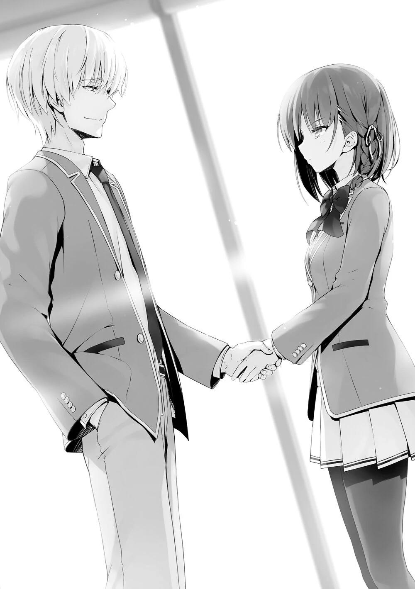
Nagumo le dijo eso a Horikita, que ahora está en la clase D, como para motivarla.
—No te preocupes. No planeo graduarme fuera de la clase A.
—Entonces demuéstrame que no se trata sólo de hablar.
El apretón de manos que se había mantenido durante mucho tiempo finalmente terminó al igual que la conversación.
—Soy Kiriyama, el vicepresidente.
—Es un placer.
Después de estrechar la mano de Kiriyama, Horikita se convirtió en un miembro oficial del consejo estudiantil.
De ahora en adelante, Horikita usaría sus ojos para observar las acciones de Nagumo.
Un sistema escolar meritocrático.
Este sistema se desvió completamente de lo que Manabu defendió una vez, así que, ¿cómo se lo tomaría?
Supongo que el espacio donde podía interrumpirlos ya pasó. Especialmente porque no puedo obtener información sobre la recompensa, intentaré encontrar un hueco para salir...
Mientras pensaba en cómo podría escapar.
—Por cierto, ¿te vas a unir al consejo estudiantil? Ayanokouji.
—¿Qué estás pensando, Nagumo? ¿Acaso lo invitarás a entrar en el consejo?
Fue porque la propuesta de Nagumo era tan rara que Kiriyama al otro lado dijo eso sorprendido.
—No es nada extraño. Después de todo, tenía la atención de Horikita-senpai. No tengo ninguna razón para rechazarlo. Y en la prueba especial del otro día fue el único que obtuvo una calificación perfecta en una asignatura.
Diciendo eso, fue como si Nagumo se hubiera fijado en mí.
Parece que ya conoce toda la información que se hizo pública en el primer y segundo año.
—Paso, mi personalidad no es adecuada para estar en el consejo.
—Sabía que dirías eso.
Rápidamente me eliminó de la consideración como si su oferta fuera sólo por cortesía.
No sabía lo que estaba pensando, pero volvió a prestarme atención una vez más.
—Ayanokouji.
Después de decir mi nombre, Nagumo y yo nos miramos en silencio.
—Hay mucho más trabajo en el consejo estudiantil de lo que pensaba, pero todo ha empezado a calmarse ahora, así que cuando empiece el verano, pasaré mi tiempo con mis kouhais.
¿Qué significado tiene eso?
Antes de que pudiera preguntárselo, volvió a hablar.
—Jugaré contigo, así que espéralo con ansias.
Esto no llega al nivel de una declaración de guerra.
Fue una orden del fuerte al débil.
—Sakayanagi, Ichinose, Ryuuen. Esa gente probablemente llorará de alegría.
Después de eso, Nagumo me ignoró completamente.
—Por cierto, Kiriyama, ¿por qué te involucraste en esto hoy?
—...¿Qué quieres decir?
—Cuando los de 1er y 2º año solicitaron entrar en el consejo estudiantil no tenías intención de asistir. Pero esta vez, cuando Horikita Suzune dijo que quería reunirse conmigo, apareciste. Es raro, ¿no?
Nagumo dijo esas palabras hacia el final de la conversación.
Era como si esas palabras fueran para que yo las escuchara, cuando me estaba preparando para volver. En el último segundo, la inesperada declaración de repente rompió el ritmo. Por supuesto, no sabía por qué Kiriyama estaba aquí, pero parecía estar agitado.
—Sólo estaba interesado en la hermana menor de Horikita-senpai, ¿hay algo malo en ello?
Aunque Kiriyama respondió con calma a la pregunta de Nagumo, su voz fue un poco aguda por su nerviosismo.
Nagumo se rió alegremente en voz alta, al parecer eso era interesante.
—No es nada, nada. No te preocupes.
Después de ver esa reacción, como si fuera suficiente, Nagumo no siguió con el asunto.
—Entonces, Suzune, quiero presentarte a los miembros del consejo estudiantil aparte de Kiriyama. Quédate aquí.
—Entiendo.
No había razón para que me quede aquí, ya que me negué a unirme al consejo estudiantil.
Dejé atrás a Horikita y Nagumo, abandonando la escena.
PARTE 2
Dejé el consejo estudiantil y me dirigí a la entrada de la escuela.
Kiriyama es alguien que luchó por derrocar a Nagumo. Apoyaba a Manabu y estuvo tramando maneras hasta el punto de que incluso me contactó cuando
estaba en el primer año. Justo cuando estaba tirando la toalla, descubrió que la hermana de Manabu, Horikita, se iba a unir al consejo estudiantil, así que podría haber querido tomar algún tipo de acción.
Sin embargo, a juzgar por su aspecto actual, la batalla entre Kiriyama y Nagumo ya había sido resuelta.
Uno podía sentir que se había creado una brecha insuperable.
Bueno... Si Kiriyama no se ha rendido todavía, eventualmente podría actuar.
—Bueno, entonces.
No quiero usar más mi cerebro hoy.
Iré directo a casa y pasaré lentamente el resto del día.
Saqué mi teléfono y comprobé la hora.
[Bueno, si no tienes planes especiales... ¿Puedo ir a tu habitación a pasar el rato?]
Estaba prestando atención a la conversación en la reunión del consejo estudiantil, así que no me di cuenta de que Kei envió un mensaje.
Aunque ya habían pasado 30 minutos, ya que no se retractó ni ofreció continuar, Kei podría estar esperando mi respuesta.
Decidí responderle ahora, aunque fuera tarde, porque no tenía nada especial preparado después de esto.
Aunque estábamos saliendo, no lo hemos hecho público todavía.
Hay muy pocos lugares donde sólo nosotros dos podemos pasar tiempo juntos sin que se note.
Y ni siquiera el dormitorio es muy seguro. Más bien, aunque nos vieran una vez, podría convertirse fácilmente en el golpe decisivo.
Pero si llegara a eso, sólo tendríamos que tomar una solución definitiva.
[¿Quieres venir a mi habitación] Le respondí, y en un segundo, se mostró que ya había sido leído.
¿Fue sólo una coincidencia que estuviera jugando con su teléfono, o estuvo esperando mi respuesta todo el tiempo?
[¡Iré!] Una breve respuesta de Kei.
[¿Está bien si voy ahora?]
Los mensajes llegaron uno tras otro. Le respondí que volvería ahora, y que ella podría venir cuando quisiera después de 20 minutos. Y entonces podría llegar siguiendo las pautas habituales.
Aunque alguien más estuviera en el mismo piso, Kei sería capaz de manejarlo hasta cierto punto.
Me llevó unos 10 minutos volver al dormitorio. Mantuve la puerta abierta y usé el tiempo para limpiar mi habitación un poco. Entonces escuché tres feroces golpes en la puerta.
Kei y yo establecimos algunos códigos para las reuniones secretas. Aunque la mayoría de las veces consistía en tocar el timbre, le pedí a Kei que llamara tres veces en situaciones urgentes. Eso es porque en un dormitorio que tiene mucho tráfico de estudiantes, a veces hay situaciones en las que no puedes abrir y cerrar la puerta en el momento oportuno.
Y en una situación extremadamente urgente y peligrosa, también se permitía entrar sin señal.
—¡Voy a entrar!
Kei replicó mientras ingresaba aterrorizada a través de la puerta.
Luego usó su fuerza para empujar la puerta y dejar salir un suspiro para calmarse.
—¡Realmente entré en pánico cuando vi que el ascensor se detenía en el cuarto piso!
Tal vez porque su corazón latía más rápido, Kei presionó su mano sobre su pecho.
Como atravesar el pasillo era bastante difícil, no era de extrañar que Kei se asustara.
—Es imposible esconderlo para siempre, ¿sabes?
—Sé eso...
Puse los zapatos de Kei en el armario de los zapatos.
Entonces, por si acaso, cerré la puerta y coloqué la cadena en forma de U.
De esta manera, aunque alguien viniera a visitarme, podría hacerla retroceder sin dejarla entrar por la puerta.
Sin embargo, usar una cerradura en U tan pronto era algo poco natural.
No planeé hacer esto, pero lo hice por el precedente establecido por Amasawa.
Era mejor que dejar entrar a alguien accidentalmente en la habitación y dejarle ver que sólo estábamos Kei y yo dentro.
Incluso si una situación urgente ocurriera, estaría bien siempre y cuando estuviera preparado para salir.
Si le digo a la persona que mi habitación es un desastre, le pido que se quede fuera un rato, y salgo rápidamente, estaría bien.
Y luego, después de que me fuera con esa persona, Kei sería capaz de escabullirse silenciosamente de la habitación.
—Uf... me siento aliviada.
Kei, que estaba sentada en la cama, se dio una palmadita en el pecho para relajarse.
—Eso es bueno.
Después de todo, el dormitorio está lleno de gente que vuelve a casa de la escuela por la tarde.
Pero, el riesgo de invitar a alguien durante la noche es aún mayor. Porque aunque haya menos gente entrando y saliendo, sería un gran problema si alguien se enterara de que tengo una chica en mi habitación a mitad de la noche.
Por eso el día libre o la noche entre semana, donde podíamos inventar una excusa, son mejores.
Incluso si la relación fuera expuesta, sería uno de los comportamientos aceptables.
—¿Quieres algo de beber?
Le dije a Kei después de que se calmara. Aturdida, corrió de la sala de estar a la cocina.
—Yo lo haré.
—Es una sorpresa, ¿qué te hizo querer hacerlo? Normalmente no harías esto.
—Es difícil cuando tu mano izquierda está herida, ¿verdad? Mira, ¡hasta yo sé cómo hervir el agua!
Parece que estaba preocupada por mi lesión.
—Entonces te lo dejo a ti...
—Bien. Tomaré té negro, ¿qué te gustaría, Kiyotaka?
—Entonces... tomaré lo mismo, Kei.
Planeaba coincidir con ella porque quería aligerar un poco la carga de trabajo de Kei, pero supongo que me salió el tiro por la culata. Parecía disgustada.
—No tienes ninguna fe en mí, ¿verdad?
—... Ya veo, entonces tomaré una taza de café.
—¡Déjamelo a mí! ¿No está en ese armario de ahí?
Diciendo eso, Kei abrió el gabinete de la cocina.
Entonces notó mi mirada, así que me ordenó que esperara en la sala de estar.
Sería problemático si hiciera enojar a Kei, así que decidí esperarla obedientemente mientras veía la televisión.
—Por cierto, pensaba decírtelo cuando nos encontráramos, pero Kiyotaka, tienes una gran responsabilidad.
Tan pronto como agarré el control remoto de la TV, esas palabras volaron desde la cocina.
—¿Qué es esto tan de repente?
—Como sacaste una puntuación máxima en matemáticas, se me ha hecho más difícil salir con lo de las citas.
Me preguntaba qué era, y esto es lo que resultó ser.
De hecho, si Kei se abriera sobre nuestras citas en esta etapa, probablemente causaría alguna controversia...
—Quién sabe qué pasaría si anunciamos que estamos saliendo ahora...
—Entonces, ¿esta situación va a continuar así por un tiempo?
—No se puede evitar... Es molesto, hacer sentir que estoy saliendo contigo por tu estatus.
—¿Es malo salir con alguien por su estatus?
—No, tampoco digo que sea malo...
—Como si salir con una chica guapa fuera un símbolo de estatus para los chicos, ¿no? ¿No sería demasiado duro pedir que la gente no quiera eso?
Por supuesto, las preferencias de cada uno por la apariencia son diferentes, y nada es absoluto.
Pero aun así, he aprendido aproximadamente que este estándar extenso pero ordinario existe.
De alguna manera refutaba su punto sobre las citas por estatus, pero no obtuve respuesta. Pensé que estaba pensando en cómo contrarrestar eso, pero se movió lentamente así que sólo se le veía la cara desde la cocina.
—¿Soy linda?
No parecía que estuviera pensando en cómo contrarrestarme.
Parecía estar concentrándose en la parte de salir con una chica más linda de lo esperado.
—¿Querrías salir con alguien que no sea linda?
Kei con su labio levantado hizo lo mejor para escapar, sin querer mirarme directamente, como si tratara de escapar de mi mirada.
La tetera comenzó a hacer sus sonidos de ebullición.
Lo que le hacía pensar a uno que la otra persona es linda no se limitaba sólo a la apariencia. La personalidad y el tipo de cuerpo, la voz y los modales, los antecedentes familiares y la educación. Todo tipo de factores se superponen para hacerte sentir que la persona es linda.
—Ahhh... yo también, también creo que eres súper guapo, Kiyotaka.
Aunque no le pregunté qué sentía por mí, Kei lo dijo y volvió a la cocina.
Después de que el agua estuviera completamente hervida, escuché el sonido de la misma vertiéndose en la taza, mientras escudriñaba inútilmente de un lado a otro a través de los canales de televisión.
No pasó mucho tiempo para que Kei, que había terminado su trabajo, volviera, colocando orgullosamente la taza con el café sobre la mesa. Aunque el té negro que Kei dijo que quería se había convertido de alguna manera en café au lait.
—Gracias.
—De nada.
Extendimos los libros de texto del primer año sobre la mesa.
Y preparamos los cuadernos y los bolígrafos, creando una escena que parecía que estábamos estudiando.
De esa manera, si algo inesperado sucede, podemos fanfarronear usando la excusa de que estamos estudiando.
Si es posible, no quería que ocurriera ese tipo de situación.
Desde el momento en que entramos en la habitación hasta ahora, todo fue una estrategia de defensa llevada a cabo basada en Amasawa.
Después de eso, pasamos nuestro tiempo en temas triviales.
Empezando por las cosas que me encontré hoy en la escuela, y retrocediendo unos días a lo que pasó entonces.
Con quién nos reunimos en la Semana Dorada, y qué tipo de televisión vimos.
Miré las fotos que Kei tomó, perdiendo el tiempo juntos.
Discutimos todo tipo de temas, largos y cortos, a veces cambiando repentinamente.
Los dos perdimos mucho tiempo hablando de cosas inútiles. Pero esto no era algo malo.
Inconscientemente, estaba empezando a entender lo que es el amor, poco a poco.
Una cita en el interior, con Kei a veces riendo, a veces enfadada, mostrándome todo tipo de expresiones diferentes.
A medida que avanzábamos en los temas, la conversación entre nosotros disminuía gradualmente. La charla casual comenzó a desaparecer, y la cantidad de silencio aumentó paulatinamente. Estaba claro que el ambiente en la habitación había cambiado de lo que había sido anteriormente.
Hacia el otro, cada uno de nosotros comenzó a sentir algo.
Empezamos a ser conscientes de algo.
No, no es sólo algo.
Yo ya sabía lo que era.
Hacia el otro, los sentimientos de querer tocar a la otra persona, de anhelar una respuesta, se expandieron gradualmente.
Pero, esto es algo que no necesitaba ser dicho.
Sólo nuestros ojos que se miraban entre sí podían comunicarlo.
Pero nunca es fácil dar ese paso.
No importa cuán profundamente veas a través de la otra persona, debes considerar el riesgo de 1 en 10.000.
Aunque se supone que ambas partes tienen las mismas intenciones, debes considerar la posibilidad de que no sea así.
Si fueras rechazado, los sentimientos negativos saldrían a borbotones como un géiser.
Incluso así...
Todavía captaba la mirada de Kei mientras intentaba apartar los ojos.
¿Está bien? Pero, pero... semejantes sentimientos chocando entre sí.
Pronto, como si se hubiera resignado, Kei se rindió a escapar.
Cuanto más tiempo parecía congelarse, más lo sentía a través de mi cuerpo...
La distancia entre nuestros cuerpos, nuestros rostros, se acortó gradualmente.
Finalmente alcanzamos la distancia en la que podíamos respirar sobre la piel del otro y casi tocarnos.
De la boca de Kei salió el aroma del café y la leche mezclados.
En 2, no, sólo 1 segundo, nuestros labios se tocarían.
--Ding dong
Nuestro tiempo a solas quedó interrumpido sin piedad por el timbre de la puerta.
Sólo un pequeño espacio de distancia separaba nuestros labios intactos.
Mi conciencia, que se alejaba y se disipaba, volvió a la realidad de repente.
—Ah, eh, la puerta...
Kei se alejó presa del pánico, con las mejillas teñidas de rubor, pero no tuve tiempo de mirar más de cerca. En efecto. El timbre no venía del pasillo, venía de la entrada.
El teléfono interno mostraba claramente que era una notificación de llamada que venía de la entrada. A diferencia del vestíbulo, no hay cámaras instaladas aquí, así que es imposible saber con certeza quién es. Aunque podría mentir que no estaba en casa, si alguien viera que Kei había entrado en mi habitación, eso sería malo.
Es mejor saber de antemano quién viene a mí y con qué propósito.
—Dame un minuto.
—Uh, mhm.
Kei asintió, ligeramente nerviosa. Debido a la última conversación con Amasawa, los zapatos de Kei ya estaban colocados en el armario, así que a primera vista, parecía que yo era el único que estaba dentro.
Sólo que este método no era perfecto.
La solución óptima sería pararse a charlar en el pasillo.
Pero tan pronto como alguien pidiera entrar en la habitación, se dirigiría en una dirección sospechosa. Llevar a una chica a tu habitación y luego llegar incluso a esconder sus zapatos. Ese tipo de escena sería revelada.
Por si acaso, bloquear la cerradura U de la puerta era lo correcto.
De esta manera, no podrán ver los zapatos aunque miren a través de la abertura, y no seremos expuestos tan fácilmente.
Podría preparar la razón por la que cerré la puerta cuando hable con la otra persona.
Además de eso, posponerlo para más tarde, o ir a la habitación de la otra persona después estaría bien.
¿Pero quién es la persona que viene directamente a mi habitación?
¿Horikita? ¿O es uno de los chicos? Mientras pensaba en esto, confirmé quién era el visitante a través de la mirilla.
Lo primero que se vio fue el pelo rojo.
—Senpai~
Seguido de cerca por su dulce voz.
Es como si supiera que la estoy observando por la mirilla.
—Soy yo...
Por el sonido de su voz al llegar por la puerta, parecía estar convencida de que yo estaba en la habitación.
La chica vestida con ropa informal sonreía.
Ambas manos estaban libres, parecía que no traía nada con ella.
Lentamente desbloqueé la puerta y la abrí.
No había estado en contacto con Amasawa Ichika de la clase A de primer año desde finales de abril.
Debido al hecho de que no se había puesto en contacto con nosotros, esto podría considerarse una aparición sorpresa.
Para ayudar a Housen, tomó el cuchillo de mi habitación, y por eso, como ella sabía que yo sabía que estaba confabulada con Housen, se mantendría a cierta distancia.
Sin embargo, Awasawa, que volvió a aparecer delante de mis ojos, aparentaba no haber hecho nada malo.
¿Creía que el hecho de que fuera cómplice no era conocido por mí?
No, cuando el plan de Housen entró en acción, se reveló esencialmente que Amasawa era una cómplice.
—¿Cómo entrastre en el dormitorio?
—Había otro senpai que regresaba, así que entré con él. Pensé en darte una sorpresa.
Si usaba el teléfono del vestíbulo, no importaba qué, su identidad me sería revelada.
Así que usó a otro estudiante para evitar esa situación.
—¿Y?
—¿Está tu mano bien ahora? Estaba preocupada, así que vine a verte.
La inteligente Amasawa no consideró la situación en la que su papel en el plan había sido descubierto. En su lugar, insinuó que estaba relacionada con él.
Tocó suavemente la cerradura en U con su dedo índice derecho.
—Esto, ¿puedes abrirlo por mí?
Mientras mantenía su sonrisa diabólica, confirmó que había zapatos puestos en la entrada.
¿Predijo que alguien estaba aquí por la cerradura en U? ¿O era...?
—Ya es muy tarde, así que, ¿podemos hablar mañana? Será un problema traer una kouhai a mi habitación sin ninguna razón.
Si vino a visitarme sólo por la razón de mi mano, se habría ido después de oír eso.
Sin embargo, Amasawa no tenía ninguna intención de irse.
Su mano izquierda estaba puesta en su labio, una acción que parecía mostrar que estaba pensando.
—Senpai, parece que estás solo, así que cocina para mí.
Para encontrar la forma de entrar en mi habitación, Amasawa cambió repentinamente de tema.
—Tengo ese derecho, ¿verdad? Lo de hacer equipo con Sudou-senpai, no lo has olvidado, ¿verdad?
Si quiere entrar a la fuerza en la habitación, naturalmente usará ese método, ya lo esperaba.
En ese caso, tendré que colaborar con ella.
—Lo siento, pero me quedé sin ingredientes. No hay nada en el refrigerador.
—Eeeh... ¿Es tan...? Deberías tener reservas~
Awasawa mostró una expresión de preocupación y no de inquietud al mismo tiempo, expresando su insatisfacción.
—Si tiene que ser hoy, ¿qué tal si voy a prepararme ahora y compramos los ingredientes juntos?
Aunque la cita con Kei terminaría, no había necesidad de añadir problemas innecesarios.
Como ya se habían visto una vez, no quería que supiera que a menudo llamaba a Kei a mi habitación.
—Ya veo, no tienes ningún ingrediente... es una lástima...
Amasawa mostró una expresión ligeramente divertida.
—Por favor, no cierres la puerta, ¿ok?
Después de decir eso, Amasawa desapareció de mi visión por una fracción de segundo.
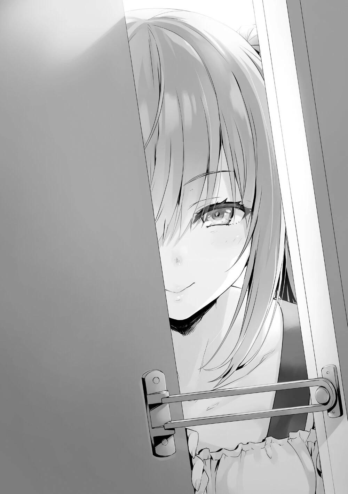
Después de eso... usó su mano izquierda para levantar la bolsa de plástico que colocó en el suelo del pasillo, para que pudiera ver lo que sostenía a través del hueco de la puerta. Confirmé que no estaba sosteniendo nada con ella usando la mirilla antes, pero sería difícil ver algo que había sido colocado a sus pies desde el principio.
Es como si hubiera preparado una bolsa de plástico llena de ingredientes fuera de mi vista.
Ella pudo ver directamente mi ruta de escape.
La razón por la que le negué la entrada fue por la falta de ingredientes.
Sabía que Amasawa tenía una mente aguda, pero esto era mucho más de lo que imaginé.
Después de esto, ¿debería admitir que estaba mintiendo, y luego buscar otra salida?
Decir que hoy estaba de mal humor, y que mentí porque quería rechazarla debería estar bien.
Después de lo que pasó con Amasawa la última vez, hice muchos planes, pero al final, la primera persona que puso a prueba esos planes fue también Amasawa.
Sin embargo, que Amasawa lo aceptara o no era otra cosa.
Tenía más confianza con respecto a los otros estudiantes, pero Amasawa también sabía lo mío con Kei.
—¿Me mentiste porque no querías que entrara en la habitación?
Le llevó menos de un segundo de silencio a Amasawa arrinconarme contra la pared.
Así que no fue una coincidencia que Amasawa eligiera este momento para visitarme hoy.
—Senpai no está solo, ¿verdad?
—¿Por qué piensas eso?
Como era de esperar, entró en acción después de estar segura de que Kei entró en mi habitación.
Kei debe estar siendo vigilada en algún lugar.
—Porque... la vi... He estado vigilando a Karuizawa-senpai todo el tiempo desde que volvió a los dormitorios...
Como prueba de este punto, Amasawa dijo la verdad. Después de confirmar en secreto que Kei entró en mi habitación, compró los ingredientes. Desafiando el riesgo de que la cerradura automática del vestíbulo la dejara fuera dos veces, planeó esta estrategia.
—Por el hecho de haber escondido los zapatos de tu novia, ¿estaban haciendo cosas lascivas?
—Era sólo una precaución porque no le hemos dicho todavía a nadie que estamos saliendo.
—Ah, ¿finalmente lo admites? Bueno, no es que no entienda tus sentimientos de querer ocultarlo, pero ya lo sé, así que no hay necesidad de mentirme, ¿OK?
Como si expresara su disgusto por ocultarle el asunto, Amasawa mostró una expresión desagradable.
—Lo mantuve en secreto por ahora por buena voluntad... pero, me pregunto si lo revelaré.
Hasta el hecho de que no salimos públicamente fue investigado por Amasawa.
Si no, no lo habría usado como material de negociación.
En otras palabras, esta conversación es sólo una formalidad.
Si la rechazo ahora, hay una posibilidad real de que pueda hablar.
Si Amasawa divulga que Kei y yo estamos saliendo, no será bueno para Kei en el futuro.
Al final, lo más sensato es revelar nuestra relación nosotros mismos. Con lo que acaba de pasar, tendré que dejarlo al destino. Admití mi derrota bajo estas condiciones defensivas desfavorables.
—Espera, voy a abrir la puerta.
—Está bien...
Amasawa respondió honestamente. Entonces cerré la puerta y utilicé mis ojos para transmitir un mensaje a la inquieta Kei de que todo está bien. Amasawa ya había dado los pasos para llegar aquí descaradamente. Tendremos que enfrentarnos a ella directamente. Abriendo el cerrojo en U, dejé entrar a Amasawa en la habitación.
Después de fijar su mirada en Kei, a quien conoció antes, Amasawa sonrió ampliamente.
Por otro lado, Kei estaba de pie allí con una expresión amarga, como si hubiera comido algo agrio.
—Esto no es bueno, una joven pareja sola con la puerta cerrada...
Amasawa, que estaba llena de energía, dijo eso mientras se quitaba los zapatos.
—No es que no podamos. Hay muchas parejas por ahí.
—Bueno... eso es cierto. Pero cuando los miro a ustedes dos, siento algo lascivo entre ustedes.
Aunque quería discutir con ella, no podía regañarla por la acusación que hizo, cuando recordé el ambiente durante el momento del beso.
En cuanto entró en la sala de estar, puso los ojos en la cama.
—Tu ropa no está desordenada, y la cama está ordenada, así que no parece que estuvieran haciendo algo.
—¡Bueno, eso no es normal! De todos modos, ¿por qué viniste aquí de repente?
Debido a la apariencia de Amasawa, Kei, que había sido dócil hasta ahora, se enfadó.
La ira también contenía un poco de ansiedad.
Probablemente debería saber que si hacía infeliz a Amasawa, haría pública nuestra relación.
—Pensé con seguridad que tendrían una relación sexual ilícita... me refiero a tener sexo.
Aunque era una conversación lasciva, Amasawa fue un paso más allá, continuando con el tema.
Y no era a mí a quien apuntaba, sino a Kei.
Kei se quedó sin palabras, y su cara no podía ser descrita simplemente como roja, sino mucho más que eso.
Era una expresión retorcida que decía, "¿de qué habla esta persona?"
Es como si Amasawa hubiera investigado nuestra situación todo el tiempo, y siempre que lo comprobaba, miraba la cara de Kei.
Después de entender que no podía obtener ninguna información útil de mí, empezó a obtenerla de Kei.
No podía agobiar más a Kei, así que la interrumpí y le dije.
—Eso es algo prohibido por las reglas de la escuela.
Respondí con calma a Amasawa, para que el inquieto corazón de Kei se calmara.
Pero incluso después de escuchar mis palabras, Amasawa no mostró señales de retroceder.
—¿Violar las reglas de la escuela no es sólo algo decorativo? Hay muchas parejas que hacen cosas amorosas abiertamente en la escuela. Si vas a la tienda hay anticonceptivos. De hecho, traté de comprarlos una vez, y el
empleado fingió no verlos. Bueno, si todo está prohibido y un joven se vuelve loco... y resulta en un embarazo, ese sería el verdadero problema, ¿no?
Después de decir eso, Amasawa usó su mano izquierda para sacar el dispositivo anticonceptivo de la bolsa de plástico y lo colocó en la mesa.
Como para probar que realmente lo compró.
De hecho, sin la existencia de estos productos, el resultado de una relación impura sería el embarazo.
La prohibición de la escuela era, para decirlo sin rodeos, una norma tácita de que si se iba a hacer, no debía salir a la luz, y había que usar anticonceptivos.
Kei se quedó sin palabras, mientras su mirada iba y venía del anticonceptivo, a Amasawa y a mí.
—Toma esto como un regalo de mi parte... No, tómalo como una disculpa.
—No recuerdo que tengas nada por lo que disculparte.
—Deja de hacerte el tonto, la herida en tu mano, yo tuve parte en eso,
¿verdad? Porque hice equipo con Housen-kun.
Amasawa no se avergonzaba de decir la verdad.
No dejó que la obligara a admitirlo, sino que lo confesó primero ella misma.
—…¿Es... así?
Al escuchar esas palabras, Kei se sorprendió.
Espero que no diga nada innecesario en un momento como éste, por su propio bien.
Una declaración sorprendente era lo mismo que dar información a la otra persona.
Amasawa pudo saber por esto cuánto le he dicho a Kei, y si Kei era o no alguien con quien valía la pena hablar.
—Ayanokouji-senpai, creo que me estás malinterpretando un poco...
—¿Malinterpretando?
—No soy enemiga de Ayanokouji-senpai.
—Aunque ya te habrás dado cuenta de mi hostilidad hacia ti, pero déjame ser claro. No puedo creerlo.
—¿Es así? ¿Sólo porque compartí mis conocimientos con Housen-kun desde una posición marginal?
Si Amasawa no se hubiera puesto en contacto conmigo, este incidente habría sido completamente diferente.
La herida auto infligida de Housen no podría haberse convertido en mi responsabilidad, y probablemente habría terminado en su autodestrucción.
No, si fuera Housen, debería ser capaz de pensar en otros métodos; pero en cualquier caso, debido a la intervención de Amasawa, no había duda de que ella elevó el plan a una estrategia establecida.
—Déjame adivinar en qué está pensando ahora Senpai. Participé en el plan de Housen-kun para que te expulsaran, lo que planteó la posibilidad de tu expulsión. Por eso crees que es ridículo que alguien así diga que no es un enemigo. ¿Es eso cierto? He sido subestimada por senpai.
—No recuerdo haberte subestimado. He hecho una evaluación completa de ti.
—¿En serio? No lo creo.
La aturdida Kei se fue calmando poco a poco después de escuchar las palabras de Amasawa.
—Es-espera un minuto. Dijiste que ibas a hacer que expulsaran a Kiyotaka... ¿Qué significa eso?
Aunque le dije a Kei sobre la lesión en mi mano izquierda, no le dije los detalles.
—Hee~
Viendo la reacción con pánico de Kei, Amasawa sonrió significativamente, revelando su interés.
—Ayanokouji-senpai, ¿no le dijiste a tu novia sobre eso? ¿Y qué hay de la recompensa de 20 millones de puntos?
—¿Qu-qué? ¿Has dicho 20 millones?
Amasawa empezó la conversación conscientemente, sin duda usándola como una oportunidad para explorar mi relación con Kei.
—Deja que tu novio te cuente los detalles más tarde, ¿de acuerdo, senpai?
Después de que ella dijera eso, tenía que explicarle esto a Kei después.
—Housen-kun y yo queríamos usar ese cuchillo para que expulsaran a senpai... Y la razón por la que senpai se dio cuenta de esto fue porque fuiste de compras conmigo, ¿verdad?
Escuchando a Amasawa hasta ahora, empecé a cambiar mis pensamientos.
—Fue la primera vez que vi los utensilios de cocina en la escuela, pero no hubo ni un poco de vacilación cuando elegí el cuchillo. Más tarde, lo comprobaste con el dependiente y te enteraste de que alguien quería comprar el mismo cuchillo. Por eso inmediatamente juzgaste que podías defenderte de las acciones autodestructivas de Housen-kun... ¿cierto?
La razón por la que pude saber esa respuesta fue porque Amasawa dejó un rastro.
Pero era un rastro que no fue borrado a propósito.
Entendí cuál era la respuesta correcta, para poder defenderme del plan de Housen con anticipación.
Es cierto que si Amasawa hubiera actuado perfectamente, la situación podría cambiar.
—Qué considerada eres.
—Porque de repente Senpai tenía una recompensa por su cabeza, y pensé que era una lástima que te expulsaran sin siquiera conocer la situación.
¿Podría un estudiante promedio de primer año de preparatoria tener semejante sistema cerebral? Tenía mis dudas.
Amasawa Ichika.
Con su forma de pensar, podría aceptarlo si fuera la estudiante de la Habitación Blanca.
Pero si ese fuera el caso, el que dijera todo esto era casi como si quisiera revelarme su verdadera identidad.
Pero, ¿cuál es el beneficio de revelarme su verdadera identidad ahora?
O tal vez ella es igual que Sakayanagi, perfeccionando sus habilidades en un lugar que no tenía nada que ver con la Habitación Blanca.
A pesar de todo, mi nivel de vigilancia contra Amasawa aumentó en mi mente.
—Ahh... Mi boca está un poco seca... Me gustaría tomar un café o algo así.
Como si deseara algo, Amasawa pidió una bebida con una voz que sonaba como la de un gato cuando lo acarician.
Kei, que escuchaba su voz y prestaba atención a su actitud, mostró un disgusto indisimulado.
—Ve a preparar una taza de café para Amasawa.
—¿Eh? ¿Yo?
—Si no quieres, lo haré yo, y podrás hablar con Amasawa.
—... Lo haré.
Hacerle el café o hablar con ella. Kei parecía haber sopesado las opciones y elegir la mejor decisión.
Kei se levantó y se dirigió a la cocina, mientras que detrás de ella, Amasawa añadió una petición a su pedido.
—Azúcar y leche también, por favor...
—¡Argh! ¡Entendí, entendí!
Amasawa añadió a Kei, que estaba inflando sus mejillas violentamente.
—No pongas basura o aguas residuales en mi café porque no te guste.
—¡No haría nada de eso!
Amasawa, que no tenía reparos en decir cosas que enfurecerían a los demás, se reía alegremente.
Sin duda un pequeño demonio... No, tal vez el demonio ya no era tan pequeño.
Después de que Kei salió de nuestra vista, quedamos solos en la sala de estar por un tiempo.
Amasawa miró hacia los libros de texto y los cuadernos de la mesa.
—Estos materiales de estudio parecen tan fuera de lugar.
—Porque ya tienes prejuicios, puedes ver eso.
Como ella tenía dudas sobre lo que hacíamos desde el principio, no tenía sentido ocultarlo.
—Veamos, ¿hmm? ¿Cuál fue la resolución adoptada en la Conferencia General de la Organización de las Naciones Unidas para la Educación, la Ciencia y la Cultura en 1972?
Después de leer la pregunta, Amasawa, sosteniendo un lápiz mecánico en su mano izquierda, escribió las palabras "Convención del Patrimonio Mundial" en un cuaderno en blanco con una muy bonita letra.
—Correcto, correcto～
Amasawa se aplaudió a sí misma por la respuesta que escribió.
—¡Eh! ¡No escribas en mis cuadernos sin permiso!
Kei, que estaba interesada en la situación, mostró su cara, advirtiendo a Amasawa por escribir en su cuaderno sin permiso.
—¿No está bien? Sólo un poco.
—¡Para nada!
La enojada Kei retiró su cara.
—La novia de Senpai... parece tener el hábito de estar enfadada.
Amasawa me susurró al oído. Sería un gran problema si Kei nos viera así.
Afortunadamente, al final Kei no nos vio. Mostrando su inconfundible desagrado, Kei trajo de vuelta la taza de café con la leche y el azúcar añadidos.
—¡Aquí. Tienes!
—Gracias, Karuizawa-senpai~
Amasawa sonrió ligeramente.
Sin embargo, en lugar de beber el café, se puso de pie.
—Bueno, ya te he dado mi regalo de disculpa, así que es hora de que vuelva. Por favor, siéntete libre de usar los ingredientes.
Amasawa, que terminó de decir lo que quería, nos dio la espalda y se preparó para irse.
—¿Eh? ¿Qué quieres decir? ¿No vas a beber? ¡¿Me dijiste que lo preparara?!
—No me importa relajarme aquí, ¿pero qué hay de ti?
—Eso... está bien... vete a casa.
—Eso es lo que pensé... Entonces me iré ahora...
Parece que hizo que Kei hiciera el café a propósito para burlarse de ella.
¿Esto es lo que supone no saber lo que es el verdadero terror?
Parándose de un solo golpe, se fue como el viento.
Después de que Amasawa se fuera, la habitación volvió a su silencio original.
Sin embargo, la dulce atmósfera de justo antes, no tenía ni idea de a dónde se fue. Ahora mismo, la atmósfera era muy pesada.
—¡Kiyotaka! ¿Qué le pasa a esa niña?
—Me gustaría saber eso también.
—... ¡Me hizo enojar tanto!
Aunque Kei se sentía muy irritada, sabía que seguir hablando de Amasawa no servía de nada.
Así que quiso cambiar el tema ella misma. Cambió el tema y habló.
—Explica, ¿qué es exactamente la recompensa de 20 millones de puntos, y tiene algo que ver con tu lesión?
Guardar silencio no fue porque quisiera mantener esto en secreto.
Fue porque no quería que Kei se preocupara por eso para nada.
Pero ahora se convirtió en una situación en la que tenía que hablar de ello.
Así que decidí contarle a Kei sobre la situación actual.
EL VERANO SE ACERCA, PREMONICIÓN DE UNA BATALLA FEROZ
La mitad de junio se acercaba poco a poco.
No hubo nuevos exámenes especiales después del de abril, por lo que podíamos seguir con nuestra vida escolar normal durante un tiempo. El estudiante de la Habitación Blanca que supuestamente me tenía como objetivo, tampoco había hecho ningún movimiento todavía.
Hasta ahora, lo único que me afectó fue el momento en que Amasawa vino a mi habitación. No se produjo ninguna crisis importante en relación con mi expulsión.
Sin embargo, aquel accidente parecía haber dejado una huella demasiado profunda en nosotros, tanto que todavía no habíamos encontrado el momento adecuado para volver a besarnos. Por más que creáramos una atmósfera propicia, siempre había algo parecido a un muro invisible entre nosotros. Aunque me gustaría derribar ese muro para seguir avanzando en nuestra relación, no había necesidad de precipitarse. Con el tiempo, Kei sería capaz de eliminar ese muro por sí misma, pasando de manera natural a la siguiente etapa. Esto la ayudaría a crecer.
Como estudiante de preparatoria, vivía una vida escolar satisfactoria. Al mismo tiempo, la estación cambiaba hacia el verano día tras día.
Como todos los años, la temperatura exterior empezaba a subir lentamente.
En un día soleado, la temperatura podía alcanzar los 30 grados. Pronto, la temperatura empezó a subir, poco a poco, anunciando la llegada del verano sobre el ala de la primavera.
Al llevar ya mucho tiempo viviendo una vida escolar ordinaria, había temas de los que oía hablar a menudo. Uno de ellos era el repetitivo tema de "qué estación del año te gusta más". Sin embargo, esa pregunta era sorprendentemente interesante si se reflexionaba en profundidad.
Las personas que nacieron y se criaron en el mismo lugar tienen diferentes estaciones favoritas.
Después de experimentar el cambio de las cuatro estaciones en esta escuela, volví a esperar la estación "cálida". Si lo pensaba, mi estación favorita es, probablemente, el verano.
Tal vez por eso el cielo azul se veía tan hermoso y deslumbrante.
—Buenos días, Ayanokouji-senpai.
Mientras caminaba mirando al cielo, me saludó alguien delante de mí.
Siguiendo el rastro de esa voz, me pareció que era Nanase Tsubasa, una estudiante de la clase 1-D.
Según parece, va sola a la escuela, ya que las personas que caminaban a su alrededor no se veían como sus amigos.
—Oh, eres tú. Buenos días.
Ya que estaba caminando delante de mí, ¿se giró por casualidad y me vio, o esperó aquí a propósito porque tiene algo que decirme?
—¿Hay algo en el cielo?
No me di cuenta de la presencia de Nanase porque mi atención estaba puesta en el cielo azul profundo. Sin embargo, como ella se dio cuenta de ese hecho, seguramente había estado mirándome durante un rato.
—No, sólo miraba el cielo azul.
—Mirando el cielo azul, ¿eh?
Nanase, que caminaba a mi lado, siguió mi ejemplo y miró hacia arriba.
El cielo de hoy estaba despejado y reflejaba un inmenso mar azul.
—Qué día más bonito.
—Sí. Por cierto, hacía tiempo que no te veía.
Aunque nos hemos cruzado desde entonces, hacía mucho tiempo que no le hablaba así.
—Sí, hace un mes y medio que no nos vemos.
Nanase y Housen planearon juntos que me expulsaran en el examen anterior. A pesar de eso, su comportamiento hacia mí siguió siendo tan despreocupado como siempre, similar al de Amasawa en ese sentido.
—Siempre he sentido pena por lo que te hice, Ayanokouji-senpai.
Mirando al cielo, Nanase dijo eso.
Por lo visto, su pensamiento es más profundo de lo que había creído en un principio.
—Senpai, ¿me odias?
—No tengo ninguna razón para odiarte. Fue por el examen especial,
¿verdad? No había forma de evitarlo. Además, vi cómo intentaste protegerme, Nanase.
Nanase, a pesar de haber unido fuerzas con Housen, se adelantó y detuvo a Housen en un momento crítico, a pesar del peligro que corría.
Todavía recuerdo con firmeza el hecho de que ella se enfrentó a Housen, que era sumamente hostil hacia mí.
—¿Terminó el examen especial? No te he oído mencionar nada sobre un plazo.
—No, el examen sigue en marcha. La fecha límite es el comienzo del segundo semestre.
En otras palabras, ¿el examen especial aún continuaría durante un tiempo?
Sabiendo eso, el silencio de Housen y Nanase sobre el asunto parecía extraño.
—¿Te preguntas por qué no te he visitado desde entonces?
—Sería una mentira si dijera que no he pensado en ello. Todavía me pregunto si estás tramando algo a mis espaldas.
—Por lo que pasó la última vez, estoy convencida de que, incluso con un plan bien pensado, podría no funcionar tan fácilmente. Además, una vez que perdimos el elemento sorpresa fue considerablemente más difícil presionarte en tu vida cotidiana.
—Entonces, ¿estás esperando a que los demás cursos tengan sus exámenes especiales? Sin embargo, ¿qué pasa con el resto de tu grado?
—No sé cómo, pero creo que ya saben que Housen-kun hizo su jugada.
—Como vieron fracasar a alguien del calibre de Housen, seguramente han juzgado inútiles sus esfuerzos sin una buena preparación... En ese caso, estar tan malherido no fue tan malo.
—No sé si vale la pena tu mano izquierda, senpai.
Entre los de 1er año, Housen Kazuomi, para bien o para mal, es uno de los alumnos que más llaman la atención.
Fue quizás una suerte que Housen fuera el primero en ir contra mí.
Sin embargo, la cuestión es quién está exactamente detrás de este examen especial. Aunque sería fácil simplemente preguntarle a Nanase aquí...
Sin embargo, las pocas veces que la miré, ella desvió la mirada, así que no tuve más remedio que renunciar a preguntarle por el momento, y miré hacia adelante.
Aunque le hiciera la pregunta ahora, Nanase podría no responderla. Dentro de las tres clases restantes se escondían personas internas no identificadas. Para ser justos, es imposible que ella los traicione. Al final, Nanase sólo admitió la existencia del examen especial para evitar que su Clase D estuviera en desventaja en la recompensa especial.
—Gracias por entenderme.
Como me quedé en silencio, Nanase dijo eso, como si entendiera lo que estaba pensando.
Como de todos modos íbamos a ir juntos a la escuela, decidí hablar de temas completamente irrelevantes.
—Parece que estás bien con la vida en esta escuela.
Por la forma en que se comporta, se veía como si se hubiera despojado de la ingenuidad de la primera vez que llegó, y se estaba adaptando bien.
—Sí. Creo que los alumnos de mi curso, incluido yo misma, nos hemos acostumbrado a las situaciones especiales que siguen ocurriendo aquí. Aunque no sé cuánto saben los de los cursos superiores, los de 1º hemos hecho nuestro 2º examen especial a finales de mayo.
Al igual que los de 2º año tuvimos nuestra batalla particular, los de 1º también la tuvieron.
—Aunque no me he enterado de nadie directamente, he oído rumores de que ya expulsaron a alguien.
Los de 2º año también escuchamos que hubo un estudiante expulsado durante el examen especial.
—Ah, ¿así que lo sabes? Un chico abandonó la clase C de primer año.
Después de todo, ese estudiante desapareció de la lista de la OAA. Sin embargo, el que se retiró era un estudiante con un sobresaliente en Habilidad Académica, así que supongo que tuvo algún tipo de penalización especial.
—Siempre habrá rumores sobre un evento tan grande.
—En esta escuela, los amigos de ayer con los que te reías, podrían ser expulsados sin piedad hoy. Por eso me he dado cuenta de que cada día en esta escuela debe ser experimentado sin remordimientos.
Aunque ahora mismo era cuestión de solo mirar y dejar que los demás se pelearan entre ellos, habrá un momento en el que la clase 1-D tenga que enfrentarse a una situación similar. Durante lo cual, el sentido de crisis de Nanase será invaluable.
Aun así, no tenía forma de confirmar los Puntos de Clase de otros años.
Por eso no sabía qué clase ganó y qué clase perdió en el examen.
—¿Cómo quedó tu clase D en los resultados del examen?
—La vez anterior, quedamos últimos, también esta vez, solo obtuvimos el tercer lugar. Aunque, la Clase A y B lucharon ferozmente, por lo que la diferencia de puntos creada entre las clases es muy pequeña.
A pesar de tener como rivales a la clase A y B, su clase no quedó muy atrás. Por otro lado, la razón principal por la que la clase C quedó última fue sin duda porque tuvieron a alguien expulsado.
—¿Se ha comportado mejor Housen últimamente? ¿O...?
—Sería una mentira si dijera que no ha hecho nada. Pero es cierto que no tiene nada que ver con la expulsión de esta vez. Ahora sólo se fija en ti, Ayanokouji-senpai.
Nanase, que había estado mirando al cielo, finalmente miró hacia mí por primera vez, con una sonrisa amarga.
—Aunque sea especulativo por mi parte, creo que es gracias a ti que se ha portado un poco mejor. Podría decirse que está tomando parte de la energía que había concentrado en los estudiantes de primer año, y la ha colocado en los de segundo. Últimamente, no para de decir cosas como: "Déjame pelear con los de segundo año". Eso sería genial".
Esto realmente es algo bueno para un estudiante de primer año. Pero ahora que decía eso, el hecho de que Housen me mirara a los ojos cuando pasaba por delante de su enorme figura era realmente una señal de provocación.
—Debería haber una oportunidad de pelear con ustedes, los de primer año, tarde o temprano.
Aunque hasta ahora sólo hemos tenido una oportunidad de trabajar con ellos, mientras Nagumo siga con su política, definitivamente competiremos tarde o temprano.
—Espero poder pasar mi vida escolar aquí sin ningún remordimiento.
—Eso sería bueno.
Como dijo Nanase, los amigos con los que te reías ayer podrían no estar contigo hoy.
Eso es lo que puede pasar en esta escuela.
Por eso no podemos dar por sentado cada día que vivimos aquí, sino que tenemos que aprovecharlos al máximo.
Porque cada día que pase es un día que no volverá.
—No debes dejar ningún remordimiento, Ayanokouji-senpai.
Sus palabras parecían sugerir que no me quedaba mucho tiempo en la escuela.
Sus ojos ardían de determinación.
—Por supuesto, haré todo lo posible para no tener que lamentar nada.
Después de escuchar mi respuesta, Nanase asintió con fuerza, aparentemente satisfecha.
—Entonces me iré.
Tras llegar casi al edificio de la escuela, Nanase inclinó la cabeza y se marchó.
PARTE 1
Teniendo en cuenta que los de 1er año hicieron su 2º examen especial a finales de mayo, como 2º año, no hubiera sido de extrañar que nuestro examen especial se anunciara en cualquier momento. Ya era hora de que estuviéramos preparados para ello.
Como para comprobar esa disposición, la clase comenzó de forma diferente a la habitual.
—Parece que todos están aquí, eso es bueno.
Después de pasar lista, Chabashira-sensei hizo funcionar la tableta en su mano para mostrar las imágenes en el monitor.
No tardó mucho en prepararse. Cambió a una pantalla blanca y luego se volteó hacia nosotros.
—Llevo un tiempo con ustedes, así que seguro que ya habrán adivinado de qué se trata.
Un nuevo examen especial está a punto de comenzar.
Aunque todos tenían esa frase en la garganta, seguían esperando las siguientes palabras de Chabashira-sensei.
Aparte de algunos alumnos, la mayoría de los estudiantes tenían sus ojos puestos en Chabashira-sensei, y después de una pausa, ella se rio ligeramente.
—Es cierto que después de esto discutiremos el tema del examen especial, pero para mantener el suspenso un poco más, lo retomaré más tarde. Primero, hablemos de las vacaciones de verano.
Después de decir eso, Chabashira-sensei miró su tableta, y entonces apareció una imagen en el monitor.
Lo primero que se mostró fue una imagen de un crucero de lujo.
Nuestra clase D tenía recuerdos de un barco similar.
—Ahora les explicaré lo que ocurrirá en las vacaciones de verano antes de que comiencen.
Por un momento, los alumnos se miraron, como si intentaran expresar su alegría interior con dulces palabras.
Sin embargo, la combinación de un barco y unas vacaciones también hizo surgir un recuerdo diferente en el interior de cada uno.
Esta escuela no se contenta con darnos cosas bonitas. Mientras pensábamos en esto, el monitor cambió de imágenes del exterior del barco al interior. También se mostró el horario.
—Del 4 al 11 de agosto, podrán disfrutar al máximo de sus vacaciones de verano en este crucero de lujo durante un total de ocho días y siete noches.
Pueden ver obras de teatro o complacer su paladar. Y no habrá nada parecido a un examen especial en el crucero.
En otras palabras, nos estaban prometiendo unas verdaderas y auténticas vacaciones de una semana.
Los estudiantes, muy escépticos, se tranquilizaron un poco.
Sin embargo, en cuanto se disiparon esas imágenes, esa tranquilidad desapareció.
Era como decir que era una tentación.
—Pero para poder disfrutar plenamente de este viaje en crucero, deben aprobar el siguiente examen especial.
Justo después de que los alumnos se dejaran llevar por la fantasía durante un rato, fueron rápidamente arrastrados de vuelta a la realidad.
Este enfoque de elevarnos y luego derribarnos suele ser muy frustrante para los estudiantes.
Sin embargo, los alumnos cambiaron instantáneamente su mentalidad a una de alerta ante la próxima batalla.
—Parece que sí están aprendiendo.
Una sonrisa de admiración apareció en el rostro de Chabashira-sensei.
No era como si ella hubiera sacado el tema de las vacaciones ante todo para ser mala.
Aunque todavía estuviéramos en la clase D, ella quería que demostráramos que somos diferentes de la clase D de hace un año.
A través de una prueba tras otra, aprendimos a prepararnos.
—¿Cuándo comenzará el examen especial? —preguntó Horikita, que estaba sentada en el asiento central de la primera fila.
—Normalmente, el curso de los acontecimientos sería tal que el examen comenzaría el mismo día o al día siguiente, pero desgraciadamente, este examen aún está lejos. El próximo examen especial se celebrará durante las vacaciones de verano.
Entonces, ¿la escuela aprovechará las vacaciones de verano para llevar a cabo el examen especial una vez finalizado el primer semestre?
Lo que me llamó la atención es que todavía es demasiado pronto para explicarlo.
Lo anunciaban ahora a pesar de que aún queda más de un mes, ¿qué significado tiene?
En cualquier caso, por el calendario anunciado hasta ahora, les gustara o no, había un examen especial que aparecería en la mente de los estudiantes. En el momento en que todos pensaban lo mismo, las palabras de Chabashira-sensei transformaron nuestros pensamientos en realidad.
—Tendrán que participar en el examen especial de "Supervivencia en una isla deshabitada" y competir entre ustedes.
Examen especial, supervivencia en una isla deshabitada. Todavía estaba fresca en nuestras mentes la batalla entre clases que tuvo lugar durante las vacaciones de verano del primer año. Cada clase tuvo que competir usando una cantidad limitada de puntos de clase, y hubo reglas para el examen especial como adivinar quién era el líder de las otras clases, y ocupar puntos estratégicos para obtener puntos.
—Tenemos que hacer eso de nuevo este año, ¿eh?
Keisei, que normalmente escuchaba en silencio las instrucciones de los exámenes especiales, murmuró como si recordara aquello.
En aquel entonces, los chicos y chicas de la clase D tuvieron una acalorada disputa interna y soportaron una serie de penalidades.
—Probablemente todos recuerden el examen de supervivencia en la isla deshabitada del año pasado, pero el examen de este año es muy diferente al anterior. Será más duro e implacable que cualquier otro examen especial anterior. Por supuesto, a su vez, el número de puntos de clase y de puntos privados que se pueden obtener se ha incrementado drásticamente.
En la isla deshabitada del año pasado, eras libre de elegir cómo luchar. Si querías ganar, tenías que economizar, pero si renunciabas a ganar, se te
permitía vivir más libremente. Además, no te enfrentarías a duros castigos, como ser expulsado, mientras no violaras las reglas importantes.
Aunque se dijo que el examen sería más duro e implacable, ¿cuáles serían los cambios en comparación con el año pasado?
No hay que apresurarse a pensar en la respuesta, ya que Chabashira-sensei seguramente nos lo dirá pronto.
—Primero, empezaré explicando el programa en detalle. No hace falta que tomen notas ahora porque pueden descargarlas y consultarlas después en su smartphone o tableta.
Chabashira-sensei dio estas instrucciones, y puso el cronograma del examen especial en el monitor.
19 de julio: Reunirse en el campo deportivo, tomar el autobús hasta el puerto y embarcar.
20 de julio: Comienza el examen especial; se explicará el examen y se entregarán los materiales.
3 de agosto: Finaliza el Examen Especial; se anunciarán las clasificaciones en el barco y se pagarán las recompensas correspondientes.
*Los puntos privados de agosto se otorgarán después del examen de la isla deshabitada.
4 de agosto: En el crucero, libre para hacer cualquier cosa durante todo el día.
11 de agosto: Llegada al puerto, regreso a la escuela y finalización de las actividades.
La ceremonia de clausura en la que se declara el final del primer semestre es el viernes 16, y el calendario decía que debíamos ir al examen especial tres días después. Además, la duración del examen especial es el doble que el anterior, con una duración de dos semanas.
—Sensei, según este horario, ¿no serán muy cortas nuestras vacaciones de verano?
Nishimura lanzó una pregunta como una flecha de un arco. Las vacaciones de verano eran normalmente de unos 40 días, pero incluso si contamos el viaje en el barco como vacaciones de verano, sólo habría unos 24 días de vacaciones.
Es comprensible que los estudiantes expresen su descontento.
—Desgraciadamente, no se podrá recuperar ese tiempo. El recorte de las vacaciones de verano es definitivo.
La escuela tomó de frente la flecha que lanzaron los estudiantes.
Por supuesto, era inevitable recibir algunas voces de desaprobación.
Porque para la mayoría de los estudiantes, un día libre es más valioso que un día de estudio en la escuela.
—Sin embargo, como compensación, habrá una semana de viaje en el crucero de lujo. Según lo que pienses, esta semana debería valer más que las dos semanas que perderás. Como acabo de decir, ese periodo de tiempo durante el viaje será tiempo libre puramente para su diversión.
Chabashira-sensei parecía querer animarnos con eso.
El año pasado también fuimos a bordo de un crucero de lujo, pero entonces tuvimos muy poco tiempo para disfrutar plenamente. Recordé el momento en que se añadió el examen del zodiaco después del examen de supervivencia en una isla deshabitada.
Para nosotros, que vivimos en el campus de la escuela, el mundo exterior es nuevo y emocionante. Aunque estemos en un barco, el hecho de poder vivir una vida diferente a la habitual podía hacer que fueran las mejores vacaciones de verano. Los estudiantes que expresaban su descontento parecían estar más o menos convencidos de ello. Si no podías aceptarlo, no podías avanzar.
Y este año, a diferencia del anterior, como los estudiantes estaban hasta cierto punto provistos de puntos privados, no tendrían que enfrentarse a ningún
inconveniente en el barco. Esa era también una razón importante por la que resultó menos estresante para los estudiantes.
—Bien, ahora volvamos al tema que nos ocupa. Aunque el examen de supervivencia en la isla deshabitada también se realizó el año pasado, la mayor diferencia entre ellos puede decirse que es la "escala". La duración del examen es de dos semanas, y el área de la isla deshabitada utilizada para este examen será mayor que antes.
Se mostró una isla deshabitada flotando en el mar, filmada desde arriba por un dron.
—Además, no sólo los alumnos del mismo año, sino todos los alumnos de todos los años escolares competirán entre sí.
En otras palabras, la escala de este examen será mucho mayor que la del anterior en muchos aspectos.
—El número de personas con las que tendrán que luchar también será mayor que antes.
Que desarrollo tan inesperado; Todos los años estarán involucrados en este examen de supervivencia.
Y la lucha no será sólo contra los estudiantes del mismo año. Esa fue la parte particularmente sorprendente.
—¿No será eso... extremadamente desventajoso para los estudiantes de primer año, y ventajoso para los de tercero?
Hirata, que odia la desigualdad, planteó sus dudas. Si la prueba implicaba participar con los otros años escolares, entonces todos deberían estar en igualdad de condiciones. Pero esta vez no era el caso. Así, basándose en la diferencia de edad, capacidad física y experiencia, surge una brecha considerable.
—Sé lo que dices, pero voy a decir de antemano que ningún examen puede ser 100% justo. Incluso tomando como ejemplo a ustedes, los de segundo año, hay casi un año de diferencia entre los estudiantes que nacieron a
finales y a principios del mismo año, pero aun así están luchando en el mismo escenario, ¿verdad?
Pero en otras palabras, aunque hubiera un año de diferencia en cuanto al curso escolar, si nos fijamos en la edad, podría haber incluso una desventaja de casi 2
años que tendrían que soportar los nacidos después.
—Si un alumno de primer año pide consejo, como senpai, es propio de un superior al menos responderle, pero cuánto se le dice depende de él. Lo mismo ocurre cuando se pide consejo a los de tercer año.
No había problema en consultar si era necesario, pero sería como ayudar al enemigo.
—Aunque hay más o menos algunas diferencias entre los años escolares, todos luchan básicamente bajo el mismo escenario. Por lo tanto, para llenar las brechas entre los años escolares, los estudiantes más jóvenes recibirán recompensas más altas, y sus correspondientes sanciones serán más ligeras.
O sea, que cuanto más alto sea tu curso escolar, menos te pagarán y más duros serán tus castigos. Esto parece sacado del examen especial de abril, en el que los alumnos tuvieron que buscar pareja. En ese examen, aunque era la misma prueba, la sanción para los de 2º año era la expulsión, mientras que a los de primero se les castigaba quitándoles los puntos privados. Había una gran diferencia entre ambos castigos.
—En base a esto, continuaré. Ahora, pasaré a explicar "parte" de las nuevas reglas para el examen de supervivencia en la isla deshabitada.
La palabra "parte" hizo que los alumnos se miraran.
—En otras palabras, no todas las reglas se harán públicas hoy.
Chabashira-sensei nos indicó primero que escucháramos obedientemente, y luego cambió la pantalla del monitor.
En la pantalla destacaba la palabra "grupo".
—Para entender las reglas del examen de supervivencia en la isla deshabitada, hay que entender los grupos.
Parecía que la introducción a este examen en particular era mucho más larga que antes.
Esto insinuaba la dificultad del examen de supervivencia en la isla deshabitada que nos esperaba.
—El próximo examen especial, el examen de supervivencia en la isla deshabitada, tendrá una regla que permite que un máximo de 6 personas formen un grupo grande para trabajar entre ellos. Recuerden esto primero; si las personas con las que se agrupan están en el mismo año, se les permitirá formar el grupo sin importar los límites de la clase.
—Lo que significa que... los estudiantes de 2º año, son nuestros aliados...
Horikita, que solía creer que todos los que no eran de su misma clase eran enemigos, hablaba para sí misma, con su voz resonando dentro del aula.
Chabashira-sensei debió escuchar las palabras de Horikita, pero continuó hablando sin responder.
—En el período que va desde hoy hasta el viernes 16 de julio inclusive, aproximadamente cuatro semanas, tienen derecho a seleccionar hasta dos estudiantes de segundo año de su elección para formar un grupo pequeño de un máximo de 3 personas. Los grupos pequeños constituyen la base de los grupos grandes. Sin embargo, aunque he dicho que pueden formar el grupo con quien quieran, siguen existiendo reglas. En primer lugar, como ya he dicho, sólo pueden formarse grupos con alumnos del mismo curso. No pueden formar un grupo con los de primer o tercer año.
En otras palabras, no pasa nada si te agrupas con un alumno de 2º A o de 2º C.
Un máximo de cuatro puede estar en un grupo creado por los de 1º, y los de 3º
podrían tener hasta tres personas en un grupo, igual que los de 2º. Esta es una de las desventajas preparadas para cada año escolar. Esta regla se mostraba claramente en la pantalla. También podía darse una situación en la que todas las clases trabajasen juntas para formar el grupo más fuerte para la competición.
Si se pudiera formar libremente un grupo ideal, seguramente aparecería la posibilidad de ganar. O mejor dicho, los otros años seguramente escogerían a
los mejores candidatos para formar los grupos, así que para contrarrestar eso, tenemos que reunir todo nuestro poder.
—Y entonces, para la proporción de chicos y chicas en el siguiente examen, cuando chicos y chicas formen un grupo mixto, la proporción de chicas y chicos debe ser al menos de 2 a 3.
Esto significa que las combinaciones de 2 chicos y 1 chica, o de 1 chico y 1
chica no estaría permitido.
Las posibles combinaciones de los grupos pequeños se mostraron en el monitor.
[1 chico] [2 chicos] [3 chicos]
[1 chica] [2 chicas] [3 chicas]
[1 chico, 2 chicas]
Había siete combinaciones en total. Por el contrario, los grupos de [2 chicos, 1
chica] y [1 chico, 1 chica] no pueden formarse y serán rechazados.
—¿Qué ocurre si no se forma un grupo... o si no se puede formar un grupo?
—Como se muestra en la lista de combinaciones posibles, se puede establecer un grupo de 1 persona. Aunque los beneficios se reducen, no surgirán problemas especiales. Esto se debe a que el siguiente examen especial puede realizarse independientemente del tamaño del grupo. Si alguien, ya sea hombre o mujer, quiere afrontar el reto solo, está permitido.
Aunque no hay nada mejor que tener el mayor número de personas posible, una sola persona puede hacer el examen especial sin ningún problema.
—Aunque también habrá estudiantes que piensen que será más fácil con una sola persona, no habrá nada mejor que contar con el mayor número de personas posible. Aparte de las ventajas de tener más gente, se conceden privilegios especiales a los grupos con más personas. Por lo tanto, no recomendaría optar por luchar solo, salvo como último recurso.
Si pudieras afrontar fácilmente el examen, formar un grupo de una sola persona no sería una mala opción, pero los estudiantes que no puedan formar un grupo se verán obligados a hacer el examen en condiciones desfavorables. En este caso, para un estudiante normal, formar un grupo de tres sería el menor requisito para estar en la misma línea de salida que los demás.
—Formar un grupo sólo tiene ventajas, pero también hay un punto digno de atención. Es decir, una vez que se ha establecido un grupo, no se puede cambiar a otro, sea cual sea el motivo.
Después de formar un grupo, los miembros tendrán que estar juntos como aliados hasta el final del examen especial.
—No podemos cambiar de grupo, pero podríamos formar un grupo de hasta 6 personas para el examen especial, ¿no? Pero hasta ahora, sólo podemos formar grupos pequeños de hasta tres personas. ¿Qué pasa con eso?
Hirata planteó su pregunta a Chabashira-sensei.
—Sí, ese es el punto clave. Después de que comience el examen especial, los grupos pequeños podrán reunirse. 2 grupos de 3 personas o 3 grupos de 2
personas o incluso 6 lobos solitarios podrán formar un grupo grande. Sin embargo, las condiciones para formar un grupo siguen existiendo. En un grupo grande de 4 o más personas, el porcentaje de chicas en el grupo debe ser al menos del 50%.
Las reglas para la proporción de chicas en un grupo se cambiarán de 2:3 a 1:2.
Si las restricciones van a cambiar, ceñirse a grupos pequeños de 1 o 2 personas para empezar puede ser una estrategia.
—A partir de esto, algunos estudiantes podrían pensar que pueden formar sus grupos después de que comience el examen especial, pero eso no será algo fácil de hacer. Aunque se les permite agruparse con cualquiera libremente, será extremadamente difícil formar su grupo grande ideal en el examen. Las situaciones en las que uno quiere formar un grupo grande con el máximo de 6
personas pero no puede, pueden ser muy comunes.
Aunque tener un número reducido de personas en un grupo no está exento de ventajas, teniendo en cuenta los riesgos de pasar el examen de supervivencia en una isla deshabitada desde el principio hasta el final completamente solo, formar un grupo de tres personas con antelación sería más seguro.
Sin considerar los expulsados, en todo el año, cada clase tiene 40 personas. Es decir, 160 estudiantes en cada año con cuatro clases. Como está claramente establecido que sólo se pueden formar grupos con un máximo de 6 personas, habrá al menos 81 grupos en toda la escuela cuando comience el examen. Y
como no hay garantía de que cada grupo pueda tener 6 personas, el número de grupos grandes compitiendo podría llegar a los tres dígitos.
—De acuerdo, también sé que pedirles que formen grupos a su antojo podría dejarlos confundidos. Después de todo, si no conocen el contenido del examen, no podrán seleccionar a las personas que necesitan.
Es de suponer que todos pensaban así. Chabashira-sensei continuó.
—No puedo decirles el contenido del próximo examen. Sin embargo, permítanme mencionar qué tipo de habilidades se necesitarán.
Después de decir eso, Chabashira-sensei miró a los estudiantes que tenían expresiones rígidas.
—En el examen de supervivencia en la isla deshabitada del año pasado, hubo muchos estudiantes que se preocuparon porque no tuvieron la oportunidad de mostrar su potencial. Pero se puede considerar que el examen de este año requiere "todo tipo de habilidades". Capacidad académica, capacidad física, capacidad mental, capacidad de comunicación. Además de las habilidades que acabo de enumerar, es muy probable que tengan que utilizar las habilidades en las que son buenos.
No basta con ser bueno sólo en los estudios o sólo en los deportes.
Supongo que significa que cuantas más cosas se te den bien, más ventaja tienes.
A primera vista, es difícil ver la conexión entre una isla deshabitada y los estudios, pero en realidad hay muchas formas de comprobarlo.
Por ejemplo, si las reglas estuvieran diseñadas de forma que, si no pudieras responder correctamente a una pregunta, no pudieras conseguir comida.
Es posible que un grupo formado íntegramente por personas orgullosas de su capacidad física sea eliminado inmediatamente.
—Aunque formar un grupo con estudiantes con los que tienen una buena relación es importante, es muy probable que la capacidad general del grupo esté directamente relacionada con los resultados que obtendrán en el examen especial, así que aconsejo a todos que tengan en cuenta los talentos adecuados a la hora de formar sus grupos.
Los estudiantes con una capacidad global elevada que formen un grupo serán simplemente más beneficiosos.
Sin embargo, como dijo Chabashira-sensei, elegir a los estudiantes con los que se tiene una buena relación es un punto que no se puede pasar por alto.
No conocemos el contenido del examen, y es posible que un trabajo en equipo eficaz marque la diferencia.
—Aunque dije que cuantas más personas tengan, mayor será la ventaja, la mayor razón para ello no es que tengan seis cuerpos o seis cerebros. Más bien se debe a la regla relativa a la exclusión de los miembros del grupo del examen.
Comparemos la situación en la que Hirata hace el examen oficial él solo hasta el final, con la situación en la que el trío de Hirata, Sudou y Hondou desafían el examen hasta el final.
Cuando Chabashira-sensei terminó de teclear algo en la tableta, la imagen de la pantalla cambió. Mostrando el nombre de Hirata en un grupo de un solo hombre y los nombres en un grupo de tres hombres incluyendo a Hirata. Los bordes de cada nombre estaban coloreados en azul.
—Supongamos que, durante el examen especial, Hirata sufre algún tipo de accidente y no puede continuarlo. Por supuesto, si participara solo, su grupo será descalificado inmediatamente y pagará las penalizaciones.
El nombre de Hirata en el grupo de un solo hombre se puso en rojo, indicando su descalificación.
—Por otro lado, ¿qué pasaría si Hirata abandonara en el grupo de tres hombres...?
Aunque el nombre de Hirata se puso rojo, los nombres de los otros dos miembros del grupo siguieron en azul.
—Mientras que Hirata será descalificado y enviado de vuelta al barco, los otros dos miembros pueden continuar el examen sin problemas. Y si ese grupo se mantiene hasta el final y consigue el primer puesto, se considerará que Hirata, como uno de los miembros del grupo, también acaba en primer lugar.
En otras palabras, aunque los individuos fueran eliminados, estaba bien mientras el grupo sobreviviera...
Básicamente, tener menos personas en un grupo sólo suponía desventajas.
—No importa cuántas personas abandonen en medio del examen, el grupo puede seguir funcionando sin problemas hasta que la última persona se retire.
En pocas palabras, cuantas más personas haya en un grupo, más posibilidades tendrán de sobrevivir.
Así que ese es el caso. Se confirma que los grupos son tremendamente importantes.
Por muy capaz que sea un estudiante, puede sufrir un accidente y lesionarse o enfermar.
Para disipar ese riesgo, formar un grupo de 6 miembros es una condición esencial para la victoria.
—Ahora que conocen la importancia de los grupos, les explicaré las recompensas.
En este punto, se hará público por primera vez el impacto sobre la clase del examen de supervivencia en la isla deshabitada.
#Recompensas
Grupo clasificado en primer lugar: 300 puntos de clase, 1 millón de puntos privados, 1 punto de protección.
Grupo clasificado en segundo lugar:
200 puntos de clase, 500.000 puntos privados.
Grupo clasificado en tercer lugar:
100 puntos de clase, 250.000 puntos privados.
Grupos situados en el 50% superior (incluyendo los grupos situados del 1º al 3º): 50.000 puntos privados.
Grupos ubicados en el 70% superior (incluyendo los grupos ubicados del 1º al 3º):
10.000 puntos privados.
*Las recompensas de Puntos de Clase para los tres primeros grupos se tomarán de los años cuya clase es de los tres últimos grupos clasificados.
Los Puntos de Clase no están relacionados con el número de personas, sino que se dividen en partes iguales por el número de clases (redondeado.) Por lo que se ve en la pantalla, las recompensas tanto en Puntos de Clase como en Puntos Privados son bastante altas. Habrá grandes cambios si los 3 primeros puestos son ocupados por la misma clase, pero hay algo raro que hay que tener en cuenta.
—Esta es la lista de recompensas para este periodo. Tengan en cuenta que como esta vez no pueden agruparse con nadie fuera de su grado, inevitablemente se convertirá en una competencia entre los grados. Sin embargo, tanto las recompensas como las penalizaciones se repartirán según el grupo y la clase. En otras palabras, si un grupo formado únicamente por alumnos de la clase D obtiene el primer puesto, las recompensas por el primer puesto se entregarán íntegramente a la clase D. Por otro lado, si un grupo formado por alumnos de las cuatro clases obtiene el primer puesto, las recompensas se dividirán a partes iguales entre las cuatro clases. Aunque un grupo formado por los mejores alumnos de cada clase podría tener más posibilidades de ganar, no cambiará en lo más mínimo la clasificación por puntos de clase.
Como la diferencia en el número de personas de cada clase en el grupo no influirá, los 300 puntos de clase se dividirán a partes iguales entre las cuatro clases.
De este modo, ni siquiera conseguir el primer puesto reduciría la diferencia de puntos de clase. No, en cualquier caso, en esta etapa actual en la que sólo podemos formar grupos pequeños con un máximo de 3 personas, una clase no podrá unirse. Esto hará imposible una negociación ideal.
Y- - la colosal recompensa total de 600 puntos de clase para los tres primeros grupos, será recolectada uniformemente de los años de los tres últimos grupos clasificados. Si el grupo clasificado en primer lugar es un grupo de segundo año y el último grupo clasificado es un grupo de primer año, la recompensa se tomará por igual de los puntos de clase de cada clase de primer año. El grupo clasificado en segundo lugar corresponde al penúltimo grupo, y el grupo clasificado en tercer lugar corresponde al antepenúltimo grupo.
En otras palabras, es probable que se convierta en una situación en la que los años se roben los puntos de clase de los demás.
—A continuación, a modo de comparación, explicaré lo que ocurrirá en caso de que los grupos superior e inferior sean del mismo año. En esa situación, habrá un acuerdo especial. Las clases del último grupo clasificado tendrán que pagar 100 puntos cada una a las clases del primer grupo, mientras que las clases del penúltimo grupo tendrán que pagar 66 puntos cada una, y las del
antepenúltimo con 33 puntos cada una. Si una clase gana sola el primer puesto, recibirá 300 puntos, pero si esa clase también tiene un alumno en un grupo en último lugar, se le restarán 100 puntos y sólo obtendrá 200.
Los puntos de clase que recibirá un grupo mixto de 4 clases si gana son 75
puntos por clase. Aunque su clase tenga un grupo en el primer puesto, si un grupo con alumnos de su clase queda en último lugar, su clase tendrá pérdidas.
—Además, si los puntos de la clase recaudados no alcanzan la cantidad de la recompensa, la escuela completará el resto. Esta regla se aplica también a la recaudación de otro año.
Aunque los puntos de clase recaudados no sean suficientes, las recompensas están garantizadas.
—Además, si un grupo con una mezcla de 4 clases termina último, el número de puntos de clase a tomar se reducirá ligeramente. El 1er, 2do y 3er puesto se reducirán a 75, 50 y 25 puntos de clase respectivamente, de nuevo, una cantidad igual.
¿Se trata de una bonificación porque es difícil trabajar juntos en este examen?
—Hay, por supuesto, penalizaciones para los grupos situados en la parte baja de la clasificación. Sólo a los 3 últimos grupos se les quitarán los puntos de clase, pero eso no es todo. Los alumnos de los 5 últimos grupos serán expulsados.
Los alumnos contuvieron la respiración.
5 grupos, hasta 30 personas podrían ser expulsadas.
—Si sólo la clase 2-D se convierte en el objetivo de la expulsión...
—En el peor de los casos, la Clase D se reduciría a 9 personas. Pero eso sería extremadamente raro. En el caso de que se enfrenten a la sanción por el examen, pueden pagar 6 millones de puntos privados para quedar exentos. La división de esta cantidad se basa en el número de personas del grupo. Para un grupo de seis, bastaría con un millón de puntos privados por persona.
Aunque te penalicen, parece que todavía hay una forma de salvarse.
—Una vez que empiece el examen, no se pueden pedir prestados o prestar puntos a los demás. Por lo tanto, es necesario guardar en el teléfono suficientes puntos para salvarse de la penalización antes de subir al crucero.
La opción de ayudarse después no existe, por lo que se antoja necesario reunir puntos por adelantado antes de que comience el examen especial.
—Dentro del grupo que se penaliza, puede haber algunos alumnos que puedan pagar y otros que no. Si hay aunque sea una persona que no tenga suficientes puntos, ¿qué pasará?
—No te preocupes por eso; aunque 5 de los 6 estudiantes no tengan los puntos suficientes, el otro estudiante que tenga los suficientes puede salir de apuros pagando 1 millón de puntos privados.
Por lo que se ve, mientras tengas el número adecuado de personas, no hay que preocuparse de que los demás te hundan con ellos.
—¿Hay alguna pregunta?
La que levantó la mano ahora fue Horikita, que estaba sentada justo delante de Chabashira-sensei.
—Si se forma un grupo con las otras clases, la recompensa se dividirá a partes iguales entre las clases. ¿No resultaría esa regla en elegir sólo a gente de tu clase para formar los grupos?
Horikita pensó que no tendría sentido esforzarse por sobrevivir y conseguir la victoria sólo para que los puntos de clase se dividan por igual entre las clases.
—Si decides que no hay ningún beneficio en eso, entonces puedes simplemente formar grupos con estudiantes de tu clase. Eso es todo.
Chabashira-sensei replicó diciéndonos que descubriéramos por nosotros mismos qué hacer.
No hay una solución objetivamente correcta para este problema. Pero lo que sí es cierto es que, si uno quiere monopolizar las recompensas y crea grupos sólo con sus compañeros de clase, los grupos sobrantes se verán obligados a librar difíciles batallas y se podrán formar algunos grupos que probablemente serán
expulsados. Por otro lado, aumentar el número de clases en un grupo disminuiría la recompensa en sí, pero también facilitaría la formación de un grupo más amplio y controlaría el riesgo de la sanción. Por supuesto, eso también podría crear otros riesgos.
Formar grupos para sobrevivir en la isla deshabitada.
Este es un resumen de la información que Chabashira-sensei nos ha dado hasta ahora.
Sobrevivir hasta dos semanas en la isla deshabitada.
Debido a la variedad de habilidades necesarias, los grupos con mayor fuerza general tienen ventaja, pero no hay que ignorar la unidad del equipo.
Los mejores grupos recibirán recompensas especiales, como puntos de clase, puntos privados y puntos de protección. (Pero los puntos de clase se dividirán en partes iguales por el número de clases en los grupos).
Los grupos deben formarse con un mínimo de 1 a un máximo de 6 personas, y cuantas más personas, más ventajas. (La clasificación del grupo dependerá de la última persona del grupo que sea eliminada).
Los grupos que queden en los últimos puestos recibirán penalizaciones, incluyendo la expulsión.
Sujeto a las reglas, se pueden formar libremente grupos pequeños dentro del propio grado escolar (hasta 3 personas).
Formar grupos grandes durante el examen no será fácil.
Eso es lo esencial, pero esa explicación por sí sola no da una imagen completa del examen.
—Hasta ahora les he dado una explicación tediosa, pero hay más cosas que explicar aparte de eso —Chabashira-sensei tomó aire y continuó con lo que había que explicar—. Miren esto.
El monitor cambió de pantalla, mostrando 8 elementos.
Resumen de las Tarjetas Básicas 1. Inicio: Al comienzo del examen, los puntos que puedes utilizar se multiplican por 1,5.
2. Bonificación: El propietario de esta tarjeta obtiene el doble de puntos privados de recompensa.
3. Reducción a la mitad: En caso de sanción, se reduce a la mitad el número de puntos privados a pagar. Sólo es válido para el titular de la tarjeta.
4. Viaje gratis: Designa un grupo al inicio del examen. Recibe como bonificación la mitad de los puntos privados ganados por el grupo designado. Unirse al grupo designado anula el efecto de la tarjeta.
5. Seguro: En caso de que el propietario de esta tarjeta vaya a ser eliminado por motivos de salud, da a esa persona un día de gracia para recuperarse.
No es válido si la eliminación se debe a una trampa.
Resumen de las Tarjetas Especiales
1. Más gente: El propietario de esta tarjeta puede unirse a un grupo como séptima persona. Esta tarjeta se puede utilizar una vez que el examen comience, y la proporción requerida de chicos y chicas no se aplicará.
2. Anular: En caso de sanción, reduce el número de puntos privados a pagar a 0. Sólo es válido para el titular de la tarjeta.
3. Prueba: Recibe el derecho de obtener 1,5 veces más puntos de clase de las recompensas del examen especial. Sin embargo, el grupo será penalizado si no entra en el 30% superior. La escuela proporcionará los puntos de clase adicionales para las recompensas.
—¿Qué, qué son esos?
—Son como elementos que pueden afectar al examen de supervivencia de la isla deshabitada, y todos recibirán una de ellas. A excepción de una de ellas, no hay ningún daño por tener una de estas. Pueden entenderlo más o menos leyendo las instrucciones.
Se trataba de una alineación de un total de 8 tipos de tarjetas, que iban desde tarjetas que te permitirían obtener una ventaja en el examen especial hasta tarjetas diseñadas para protegerte. Estas últimas serían útiles para protegerte, pero si las consideras como protección contra el fracaso, entonces la evaluación será diferente. La más complicada es quizás la carta "Prueba", que contiene el único inconveniente. Si se utiliza bien, tiene el potencial de pagar más que cualquier otra recompensa, pero situarse en el 30% superior no será fácil.
—Cada estudiante recibirá una de estas ocho tarjetas al azar. Las tarjetas se distribuirán mañana por la mañana y, hasta que comience el examen especial, podrán transferir o intercambiar la tarjeta que obtengan, siempre que sea dentro de su grado escolar. Cualquiera puede consultar quién tiene qué tarjeta en la OAA. Se pueden vender a los estudiantes que quieran comprarlas, o se pueden coleccionar varias tarjetas comprándolas. Pero los efectos de las mismas tarjetas no se acumulan, así que no tiene sentido conseguir dos tarjetas idénticas.
Resumen de las cartas y reglas
1. Tanto las cartas básicas como las especiales pueden intercambiarse dentro del mismo grado escolar.
2. No puedes intercambiar dentro de tu clase, y una vez que una carta ha cambiado de propietario, no se puede seguir intercambiando.
3. Los efectos no se acumulan cuando se utiliza la misma carta.
En otras palabras, un estudiante puede tener y utilizar hasta 7 cartas.
Sin embargo, como algunas de ellas sólo pueden utilizarse en casos positivos o negativos, no se pueden utilizar todos los efectos de las cartas. Al final, sólo se obtienen opciones efectivas para utilizar en cualquiera de los dos casos.
—Además, las tres tarjetas especiales, se distribuirán al azar, y cada año escolar recibirá sólo una de cada tipo. Por lo tanto, es posible que una clase acabe casualmente con las tres tarjetas especiales. Eso es todo.
Explicaciones sobre las instrucciones para el examen de supervivencia en la isla deshabitada, y sobre las recompensas y sanciones.
Y a continuación, explicaciones sobre la distribución de los elementos conocidos como Tarjetas.
En este punto, finalmente terminamos de escuchar el largo resumen del examen de supervivencia en la isla deshabitada.
—Es posible que algunos de ustedes no sean capaces de entender por completo las explicaciones esta vez, pero antes del receso para el almuerzo, se enviará automáticamente un manual a la tableta de cada uno, para que puedan revisarlo desde allí.
Justo cuando Chabashira-sensei terminó sus explicaciones, sonó la campana y la primera clase terminó.
—Hay tiempo de sobra para que piensen con calma qué estrategia de grupos utilizar.
Dejando ese consejo, Chabashira-sensei salió del aula. Los alumnos se reunieron después.
En estas circunstancias, Kouenji, que estaba sentado a mi izquierda en un asiento vacío, se levantó y se dirigió hacia el pasillo. Aunque parecía su habitual comportamiento egoísta con el que nos habíamos familiarizado, caminaba más rápido que de costumbre.
Me pareció que el comportamiento de Kouenji era un poco extraño y decidí seguirlo.
Para no llamar la atención, traté de eliminar el sonido de mis pasos y otros rastros relacionados. Dicho esto, como este lugar no era como la isla deshabitada, donde había mucha cobertura, no había mucho que pudiera hacer.
Pero la gente normal no suele pasarse la vida cuidándose de que la sigan.
Supongamos que un aficionado estuviera siguiendo a otro aficionado, aunque lo hiciera de manera mediocre, probablemente no se daría cuenta.
Poco después, pude oír a Chabashira-sensei y a Kouenji desde la esquina.
Contuve la respiración y escuché la conversación entre ambos.
—¿De qué quieres hablar, Kouenji?
—Creo que la profesora no explicó un punto crucial.
Chabashira-sensei, presumiblemente de pie frente a Kouenji, esperó su pregunta.
—¿Un punto crucial?
—Si una persona que se presenta sola al examen especial cae enferma ese día, ¿qué ocurre entonces?
—Y aquí estaba yo imaginando lo que ibas a preguntar. Qué aburrido.
Aunque no podía verla, Chabashira-sensei se rió con cierta alegría.
—El año pasado te retiraste del examen tomando una licencia por enfermedad, ¿verdad? Por desgracia, eso no funcionará este año. Se te penalizará sin ningún tratamiento especial. En otras palabras, tendrás que pagar 6 millones de puntos privados. Con lo que tienes disponible, es imposible.
—Fufu, es cierto. Soy una persona avara e insaciable, así que esto es bastante preocupante.
Incluso para el examen de supervivencia en la isla deshabitada de esta vez, Kouenji parecía haber planeado retirarse como siempre.
Pero no hay forma de que un participante que sobreviva solo en la isla deshabitada pueda escapar.
—Entonces, ¿qué vas a hacer? ¿Seguir con tu libertad y luego ser expulsado?
—Realmente, me pregunto qué debo hacer. Ya puede irse, maestra.
Kouenji parecía estar satisfecho con la respuesta de Chabashira-sensei, así que le pidió que se fuera. En un momento, el sonido de sus pasos desapareció.
Probablemente, Kouenji también partirá pronto, por lo que quedarse aquí no tendría sentido.
Así que decidí abandonar el lugar sin hacer ruido.
Pero-
—Por cierto, ¿quién es el que se esconde y me espía, y desde dónde?
Kouenji se fijó en mí, quién se escondía. Sólo por la dirección de su voz pude saber que se había dado la vuelta.
—Que salgas o no depende de ti.
No lo había dicho por capricho. Es tan agudo como un animal...
Aunque podría haber regresado al aula sin mostrar mi rostro, decidí revelarme honestamente.
—¿Es Ayanokouji-boy? ¿Quieres algo de mí?
Sin un ápice de sorpresa, aceptó con indiferencia mi presencia.
Más que predecirlo, era como si no le importara quién fuera.
—Horikita me dijo que vigilara tus acciones. No sabemos cómo actuará Kouenji, dijo.
—Hmm.
Kouenji se acercó lentamente a mí, sus ojos me evaluaron.
—Parece que se te da bien esconderte. Pero no puedo distinguir tus verdades y mentiras, Ayanokouji-boy. No voy a confiar en las palabras de alguien así.
—No pensé que fueras de los que confían en alguien.
—Fufufu, es cierto. No confío en nadie más que en mí mismo. Más bien, es como si no tuviera interés en nadie más.
Kouenji, que llegó a mi lado, dejó de caminar por un momento.
—Eso también se aplica a ti, Ayanokouji-boy.
Después de que obtuviera la puntuación perfecta en matemáticas, Kouenji salió del aula sin ninguna expresión en su rostro.
Tampoco mostró signos de haber preguntado más tarde a nadie más sobre los detalles.
No pude detectar ni una sola mentira en las palabras de Kouenji.
—¿Qué vas a hacer en este examen especial?
—Sí... Hablando de eso, ¿puedo unirme a tu grupo?
Me preguntaba cómo iba a responder. Ya veo cómo es.
Mientras Kouenji se agrupe con alguien, puede retirarse fácilmente después de que comience el examen especial.
—Lo siento, pero tendré que rechazarte. No tengo tiempo para aceptar a alguien que seguro renunciará desde el principio.
—Fufufu, es así, es inevitable entonces.
—¿Pero esa forma de pensar es realmente buena? Aunque encuentres un grupo al que puedas unirte, terminarás confiando a otros tu destino de ser expulsado.
—Eso es cierto, si renuncio sin hacer nada.
Kouenji volvió a dar un paso, caminando hacia adelante.
—¿Qué debo hacer? Lo pensaré cuidadosamente hasta que empiece oficialmente.
Dejando atrás esas palabras, Kouenji volvió al aula.
PARTE 2
—Un examen especial en una isla deshabitada por segundo año consecutivo. Aunque no es que no haya pensado en esto...
—Creía que iba a llegar, y realmente llegó.
Tras volver al aula, comenzó nuestra conversación rutinaria sobre el tema del examen especial.
Todos, junto con Yousuke, se reunieron alrededor del asiento de primera fila de Horikita, organizando la situación actual.
Koenji también regresó a su asiento, mirando su espejo como siempre, deleitándose en él.
—Lo más importante de este examen es que, aunque hay ciertas condiciones, podemos formar grupos con cualquier persona del mismo año a voluntad.
Esta era una nueva regla que hasta ahora no había existido en los exámenes especiales.
Y al final, la aparición de una norma así iba más allá de lo que se esperaba de la escuela.
—Pero, ¿qué pasa con la distribución de los puntos de clase cuando se gana? Aunque era un galimatías y no lo entendí muy bien, no hay casi ningún beneficio en agruparse con otras clases, ¿no?
Exactamente. Los pensamientos de Sudou eran sólo algo natural, mientras profundizaba en el punto en cuestión. Este examen especial no era sólo una competición entre grupos de un mismo año, sino también una batalla entre
clases del mismo año. Formar grupos compuestos sólo por miembros de tu clase era la única manera de completar eficazmente este examen.
Aun así, la escuela había preparado algunas reglas interesantes.
Agruparse con estudiantes fuertes dentro del año escolar facilitaría el acceso a las clasificaciones superiores; bajo riesgo y baja recompensa. Por otro lado, agruparse sólo con miembros de la misma clase presentaría una oportunidad de alto riesgo pero de alta recompensa.
La situación ideal sería formar grupos de 2 o 3 dentro de la clase, y luego combinarlos en grupos más grandes.
Sin embargo, no era fácil formar grupos grandes una vez iniciado el examen especial. Si no hubiera una garantía de poder formar libremente un grupo grande antes, entonces el peligro de reprobar sería exponencialmente mayor. A pesar de ello, también era cierto que este examen especial era más destructivo que los anteriores. Si una clase conseguía los tres primeros puestos, recibiría 600
puntos de clase. Si la clase 2-D lograba este objetivo, sería un billete exprés para la clase 2-B.
—Pero si confiamos sólo en nuestra clase, nos perderemos los talentos disponibles en las otras clases. Además, si es sólo nuestra clase la que forma grupos dentro de la propia clase... ¿Y si las otras clases unen sus fuerzas? El peor escenario sería que sólo la clase D se quedara atrás al aumentar la diferencia.
Sería ideal ganar sólo con la clase D, pero a fin de cuentas, eso es sólo un pensamiento ingenuo.
Si cualquier clase eligiera desafiar el examen especial en solitario, esa clase correría el riesgo de ser el objetivo de las otras tres clases que trabajen juntas.
Si esa clase perdiera, no le esperaría ningún tipo de recompensa.
—Si es sólo que no podemos ganar, entonces es una historia diferente, pero si nos retiramos demasiado pronto, correremos el riesgo de ser expulsados.
En otras palabras, si no estamos seguros... No, si no podemos estar seguros de
la victoria, entonces simplemente tendremos que formar grupos de 6 con las otras clases.
Un examen especial como éste, en el que las otras clases eran tanto camaradas como enemigos, sería todavía más difícil que todo lo anterior.
Visto así, ¿no sería también una buena estrategia formar grupos con los estudiantes de las otras clases desde el principio? Sin embargo, no hay garantía de que su pensamiento esté alineado con el de los demás. Incluso sabiendo que no hay ninguna ventaja en contar sólo con tu clase para formar un grupo, mientras los puntos de la clase no cambien demasiado, en general pensarías:
"Si es posible, no quiero pensar en las otras clases". Sobre todo, en las clases inferiores.
Y así, bajo la premisa de tener que formar grupos, ¿en qué dirección deberíamos empezar a girar el timón? Responder a eso nos permitirá situarnos en la línea de salida.
—¿Cómo actuarán Sakayanagi, Ryuuen e Ichinose?
Para decidir los equipos, Horikita se basó en las palabras de Yousuke para hablar con todos.
—La clase A, que ocupa la primera posición, probablemente no se verá afectada por la alianza de las otras clases. No importa qué grupo gane, siempre que la diferencia entre los puntos de clase no se reduzca mucho. Por el contrario, las tres clases restantes que están por debajo de ellos, entre las que nos incluimos, querrán reducir esa diferencia.
—Entonces, ¿qué tal una alianza entre las tres clases? Establezcamos primero una alianza entre las clases B a D, para evitar que se amplíe la brecha entre la clase A y nosotros. También poder reducir esa diferencia con la clase A no estaría mal.
A Sudou, que estaba escuchando la conversación, se le ocurrió una buena idea.
Unir fuerzas contra un enemigo común, para asediar juntos a la Clase A.
—El enemigo de mi enemigo es mi amigo, es lo que quieres decir. No es mala idea aislar a la Clase A. Ichinose seguramente aceptará esta propuesta.
—Pero si proponemos aislar a la Clase A, tenemos que estar preparados para las represalias. Conociendo a Sakayanagi, es justo decir que ella usará sin piedad sus recursos para tratar hasta con nosotros, la clase más baja.
Normalmente, la energía de la clase A se centraría en el segundo puesto, la clase B, que estaba tratando de alcanzarla.
Pero, como dijo Yousuke, Sakayanagi tiende a no dejar escapar a su presa, una vez que la tiene como objetivo.
—Todavía tenemos que acercarnos silenciosamente a las clases superiores tan pronto como sea posible.
—Aunque las tres clases lucharan juntas, es mejor que no seamos nosotros los que hagamos esa propuesta.
Esto permitirá a los otros que propongan enfrentarse a la ira de Sakayanagi.
Es más fácil decirlo que hacerlo.
Lo más problemático de este examen especial es que negociar sólo dentro de tu clase no puede solucionar todos los problemas.
Por muy acalorada que fuera la discusión aquí, no se conseguirá nada. Si no podemos captar lo que la Clase B y la Clase C están pensando realmente, si no hay directrices unificadas que se implementen, entonces terminará siendo nada más que una charla sin sentido.
Dicho esto, no es tan fácil conseguir que las tres clases hablen juntas y sin problemas.
Dejando a un lado a Ichinose, es difícil imaginar a Ryuuen aceptando fácilmente.
Si Sakayanagi se entera de esta información, naturalmente también hará su jugada.
—Parece difícil hacer un análisis...
Aunque hay más de un mes para formar los grupos, si se va despacio, las clases actuarán poco a poco, con el fin de formar grupos. Si ese fuera el caso, no podríamos hacer nuestro trabajo de forma constante.
—Sería de gran ayuda que otra clase planteara una propuesta similar...
Los alumnos de la clase D lo estaban pasando mal.
—El mero hecho de intentar averiguar cómo formar un grupo ya es un gran dolor de cabeza.
Además de la crucial formación de un grupo, había otras cosas importantes.
Ese es la existencia de las tarjetas con varios efectos. Mañana por la mañana, la escuela daría a cada estudiante una tarjeta única que no podría ser transferida entre compañeros de clase. Además, como las tarjetas que se transfirieran una vez quedarán bloqueadas, no podrán ser devueltas a las manos de sus propietarios originales. En otras palabras, sólo se podrán intercambiar, o comprar, o vender con estudiantes ajenos a la clase.
—Si es así, la mayoría de la gente hará su movimiento mañana.
—Sí. Reunir las cartas efectivas en los grupos también es un punto clave a tener en cuenta.
Llegó el día en el que se iban a levantar las prohibiciones de formar un grupo para el próximo examen especial.
Por supuesto, se produciría un cambio significativo en la situación de las clases, incluida la clase D.
PARTE 3
Después de clase, los teléfonos de los alumnos que tenían excelentes habilidades académicas o físicas, sonaron al mismo tiempo. Horikita se acercó a mí mientras veía cómo se desarrollaba esta situación.
—Parece que todo el mundo está haciendo rápidamente su jugada. Al fin y al cabo, es natural querer atraer a los alumnos más destacados a tu grupo.
Independientemente de las estrategias de la clase a la que se pertenecía, el primero en hacer su movimiento no perdería nada.
—¿No te ha llamado nadie, Horikita?
—No, no lo hicieron.
—Ya veo. Después de todo, sólo hay muy pocas personas que tengan tu información de contacto.
—Eso ya lo sabías, y sin embargo lo mencionaste a propósito. Eres un tipo desagradable. Entonces, ¿alguien se puso en contacto contigo? ¿Ayanokouji-kun, que sacó una nota perfecta en matemáticas? Tu teléfono está sorprendentemente silencioso.
Me preguntó Horikita, así que decidí mirar mi teléfono, que todavía no había emitido ningún sonido.
—Por desgracia, me he quedado sin batería. Llevo dos o tres días sin cargarlo.
—Si no usas el teléfono con frecuencia, menos lo cargarás.
Por mucho que quisiera negar que no era así, no se equivocaba. Si no usaba mucho el teléfono, simplemente me olvidaba de cargarlo.
—¿No tienes que prestar más atención a nuestros compañeros de clase?
Será realmente problemático más tarde si se apresuran a formar grupos ahora.
—Ya les he instruido sobre lo que deben hacer. Lo resumí de una manera fácil de entender y lo envié a todos. Pero seguramente no te diste cuenta, ya que te quedaste sin batería.
Mientras Horikita decía eso, giró la pantalla de su teléfono hacia mí.
-Por favor, no formen un grupo antes de que la Clase D llegue a un acuerdo.
-Sin embargo, si quieren decidir su grupo lo antes posible, por favor, pónganse en contacto con Horikita.
Pareciera que Horikita se hubiera anticipado a esta situación, y estableció algunas regulaciones mínimas.
—Esto no es obligatorio de ninguna manera, porque este asunto depende en última instancia del juicio personal de cada uno.
Con quién agruparse o no, es de hecho una cuestión de elección personal. No puedes formar un grupo con gente que no encaja con tu personalidad, lo que afectaría directamente a tus posibilidades de ser expulsado. Aunque las cuatro clases trabajaran juntas, no había una combinación ideal de grupos en la que nadie fuera expulsado.
Por eso, sólo pudo hacer algunas sugerencias.
Siempre llevo conmigo el cargador de mi teléfono, así que lo conecté y me levanté de mi asiento, ya que podría haber algún alumno en el aula espiando nuestra conversación.
—¿Ha habido alguna comunicación de Ichinose? No sería extraño que propusiera un plan para todo el año para ayudarnos entre nosotros.
—No parece haber ningún contacto de ella todavía. Ni la clase A ni la clase B han hecho ninguna propuesta. Si todos los de 2º año tuvieran el deseo de unirse, debería haber alguna comunicación a estas alturas.
Si la gente se unía sin permiso basándose en sus propias preferencias, la cooperación sería cada vez más difícil. Si desde el principio no había planes para una discusión pacífica, acabaría con todos los de 2º año luchando entre sí.
Si Horikita quería establecer una relación de cooperación entre las clases, tendría que tomar medidas preventivas desde el principio.
Horikita no mostró desagrado al verme abandonar mi asiento, sino que me siguió.
Daba la impresión de que aún tenía algo que decir.
Después de entrar en el pasillo, y confirmar que no había nadie, me habló de nuevo.
—Esta vez el examen de la isla deshabitada... ¿Puedes conseguir el primer puesto tú solo?
—Eso es demasiado imprudente. Lo único que sabemos por ahora es que es un examen especial de isla deshabitada.
—Me preguntaba si tú, que obtuviste una puntuación perfecta en matemáticas, necesitabas siquiera un grupo.
¿Qué tipo de razonamiento es ese? Sonó como si se aferrara a un clavo ardiendo con sólo mencionarlo.
—Si quedamos en primer lugar, nuestra clase D ganará puntos con seguridad. Podemos dejar que los de primer y tercer año luchen por el segundo y tercer puesto. Es mejor que dejar que los otros de 2º año lo consigan.
Es más fácil decirlo que hacerlo.
—Si ese es el caso, podemos formar los grupos con el objetivo principal de evitar cualquier expulsión, y sería más fácil.
Si cambiamos nuestra orientación para formar grupos fuertes para ganar, inevitablemente se crearían grupos débiles.
—No todo el mundo puede permitirse pagar los puntos privados necesarios para la salvación.
—Sí. Para los estudiantes que están un poco preocupados, me gustaría reunir tantos puntos privados como sea posible, pero si el estudiante que me presta puntos recibe la pena de expulsión, eso sería terrible.
No hay nada más inútil que ayudar a alguien a aprobar mientras uno mismo reprueba.
—Si no quieres eso, entonces sólo puedes pedir a los estudiantes con excedentes de puntos.
Eso funcionaría, pero hay un número limitado de esos estudiantes.
—Aunque existe un método que permite que no haya expulsados, no creo que alguien quiera hacerlo.
—¿El plan de retirarse a propósito desde el principio?
Horikita ya había notado una laguna en este examen. Según las reglas, sólo los 5 primeros grupos en retirarse serán expulsados. En ese caso, si preparamos intencionadamente 5 grupos de sacrificio y dejamos que se retiren, el resto de los estudiantes no tendrían que preocuparse por ser expulsados. Sin embargo, para hacer esto, habría que preparar un total de 30 millones de puntos privados, sin mencionar el hecho de que los años de los tres primeros grupos tomarían puntos de clase de los años de los tres últimos grupos. Aunque los grupos estuvieran en el mismo grado, las recompensas disminuirían un poco. No tenía ningún beneficio en absoluto. El hecho de que los tres primeros y los tres últimos grupos estuvieran unidos podría considerarse como la forma en que la escuela intentaba evitar esos métodos inadecuados.
—Supongo que depende de nosotros hacer todo lo posible para ganar en el examen.
—Así es. ¿Puedo consultar contigo de nuevo?
Horikita, que había dejado de caminar, dijo eso.
—Siempre que esté dentro de mis posibilidades hacerlo.
—Es suficiente, gracias.
Por lo visto, Horikita tenía algo que hablar con alguien, ya que regresó al aula.
Observé la espalda de Horikita mientras se iba, y decidí dirigirme a la salida.
PARTE 4
Me encaminé desde el pasillo hacia la salida.
—¡Qué tal!
La persona que me saludó mientras miraba la pantalla negra antes de que se encendiera el teléfono, es un alumno de la clase 2-B, Ishizaki Daichi, que tiene una sonrisa dibujada en la cara. ¿Acaso se encontró con una buena noticia?
—Intenté ponerme en contacto contigo a través de tu teléfono, pero no hubo respuesta, así que acudí directamente a ti.
—Lo siento, resulta que mi teléfono se quedó sin batería.
—¡Eso pasa nada! Necesito algo de tu tiempo ahora mismo, ¿de acuerdo?
—¿Me van a amenazar?
—¿Qué?, es una broma interesante. ¿Realmente existe un tipo que pueda intimidarte en esta escuela?
Ishizaki respondió a mi broma con la suya.
—¿No me digas que estás ocupado después de esto?
—No, estoy a punto de volver.
—¿De verdad? Entonces no hay problema. Ven conmigo.
Con una sonrisa que no me dio la oportunidad de hablar, Ishizaki me hizo una señal con la mano y se adelantó.
Si lo miraba ir así, lo perdería de vista en un abrir y cerrar de ojos.
Causar una conmoción aquí sólo atraería la atención de todos.
Como estaba libre, decidí seguir a Ishizaki.
Pero al doblar la esquina, un muro imposiblemente grande apareció de repente ante mis ojos.
No, no es un muro. Es el compañero de clase de Ishizaki, Yamada Albert.
Tiene puestas unas gafas de sol y puso su mano derecha, que tenía un aire de intimidación, sobre mi hombro.
—Hola.
—... Hola.
No estaba muy seguro de lo que estaba pasando, así que le respondí tímidamente con la misma palabra. ¿De qué diablos se trata todo esto?
La amenaza que pensé que era una broma, en realidad tenía un toque de realidad.
—Hola, Ayanokouji-kun.
Al lado de Albert, del tamaño de una pared, apareció la figura de Hiyori.
—Qué combinación más rara.
—Puede que sí.
Pensé que Ryuuen también estaría aquí, pero no parecía ser el caso.
—No es buena idea hablar aquí, vamos a otro sitio.
—¿Ir? ¿Ir a dónde?
—Bueno... sí, aún no he pensado en eso.
Ishizaki se frotó el dedo índice izquierdo bajo la nariz, riendo tímidamente.
—Tengo un mal presentimiento sobre esto, ¿podrían dejarme ir?
Lo mirara como lo mirara, tenía una sensación de malestar, así que les pedí que se marcharan.
—Qué pasa, estás libre, ¿verdad? No te dejaré volver.
—No me dejas volver... ¿qué estás haciendo?
Albert, que estaba detrás de mí, me agarró con su inmensa fuerza, y me retorció fuertemente. Luego, Hiyori también tiró de mi brazo hacia su pecho. Juntos, los dos me capturaron.
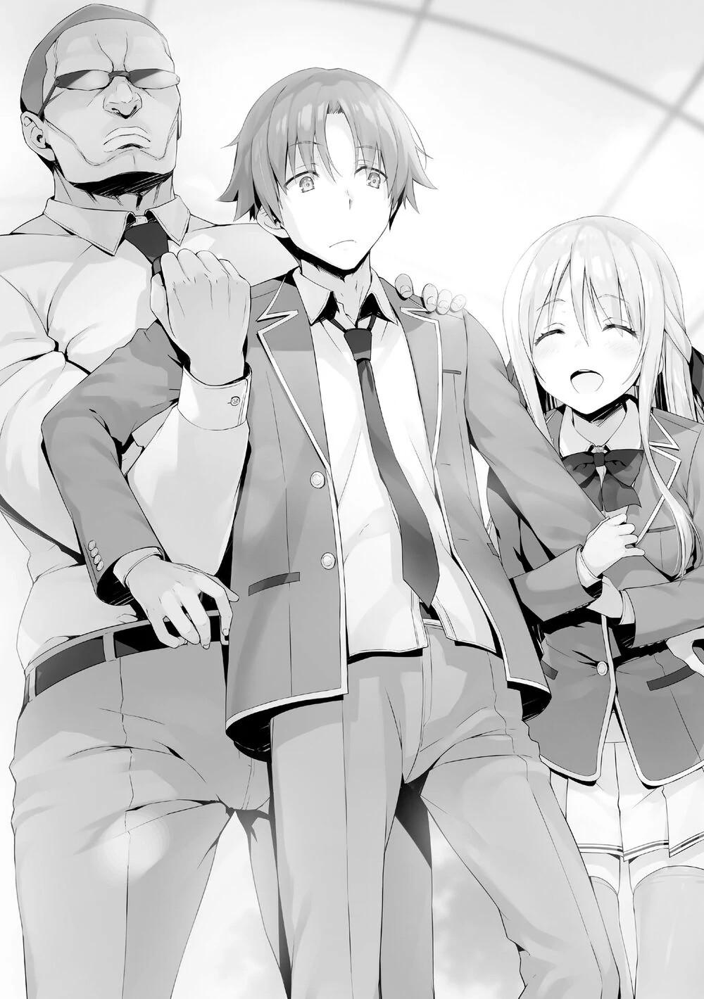
—Lo siento, Ayanokouji-kun, pero no te vamos a dejar escapar.
—¿Eh...?
A fin de cuentas, esto era intimidación, simple y llanamente.
...Esta broma ya ha ido demasiado lejos.
De todos modos, parece que estos tres van a llevarme lejos de aquí.
—Nos quedamos aquí fuera mucho tiempo. Deberíamos movernos, Ishizaki-kun.
—Sí. Entonces, ¿a dónde?
—Hmm, entonces... ¿qué tal la habitación de Ishizaki-kun?
Hiyori sugirió casualmente.
—¿Eh? ¿Mi... mi... habitación? No, no, ¡eso es un poco...! ¡Nunca, nunca!
Cuando Ishizaki se enteró de que se había propuesto su habitación, se negó, nervioso.
—¿Qué pasa? ¿Hay algún inconveniente?
—Eso, eso es... porque, hay varias razones. Aunque me lo hayas pedido, lo has dicho completamente de improviso...
—No nos importará que tu habitación esté un poco desordenada, ¿verdad?
Albert, al que le pidieron su opinión, asintió lentamente.
...Puedo suponer que entiende el japonés, ¿verdad?
Seguramente tiene que usarlo en los exámenes y en las clases, pero yo quería escucharlo hablar en japonés.
—Sí, sí. ¡No sólo un poco, está extremadamente desordenado! ¡No hay donde poner el pie! Aiya, ¡qué pena más grande!
—No te preocupes. Si lo necesitas, te ayudaré a limpiar.
—¡Nonono! Pañuelos y demás, ¡no puedo dejar que una chica los limpie!
No pudo evitar soltar lo que tenía esparcido por todo el suelo.
—¿Pañuelos...? ¿Qué significa eso?
Hiyori ladeó la cabeza, confundida. ¿A qué venía eso?
—¡De todos modos mi habitación está un poco...! Sí, eso es, ¡vamos a la habitación de Albert!
Ishizaki cambió el tema con pánico.
—Bien, ¿no es la habitación de Albert genial? ¿Verdad? ¿Verdad?
Sugirió Ishizaki, como si huyera de algo.
—OK.
Así que, después de todo, entiende el japonés. Albert dio su aprobación con una breve respuesta.
Después de eso, comenzó a moverse mientras me arrastraba.
—Pero... ¿me van a llevar así sin más?
—Está bien. Yamada-kun es muy fuerte.
No, ese no era el problema.
Sólo que parecía que nos habíamos vuelto inusualmente llamativos.
—No hay problema. En cierto modo, es una especie de difusión para los que miran.
Tras decir eso, Hiyori, sonriendo dulcemente como de costumbre, se adelantó, liderando el camino.
—¡Ya veo, como se esperaba de Shiina! Gran idea, gran idea.
¿Qué quería hacer llevándome?
Con esa pregunta en mente, me llevaron al dormitorio.
PARTE 5
Era la primera vez que visitaba la habitación de Albert.
Aunque era de mayor físico y tamaño, la disposición de su habitación seguía siendo la misma
Sin embargo, cada habitación tenía su propia disposición, y ésta era un poco única.
Una gran bandera estadounidense y otra japonesa adornaban el centro de la habitación. No sólo eso, banderas de innumerables países, como las de China, Italia y algunos países africanos, aunque de tamaño reducido, decoraban una de las paredes. No eran sólo de papel impreso, sino de tela, lo que nos dio una idea de su pasión.
—Albert es un fanático de las banderas. Te sorprende, ¿no?
Probablemente Ishizaki ya había estado en su habitación, por lo que pudo explicarnos todo esto con tanta tranquilidad
—Parece que es así.
Después de soltarme, Albert me instó casualmente a sentarme.
Una vez que confirmé que todos estábamos sentados, me dispuse a preguntarles qué querían.
—Entonces, ¿qué quieren los tres?
Los tres se miraron entre sí.
Por alguna razón, todos tenían grandes sonrisas en sus rostros.
Y entonces, Ishizaki, como su representante, me dijo.
—Vayamos al grano, esta es mi propuesta.... Formemos un grupo para el próximo examen especial.
Como era de esperar, se trataba del examen especial.
—¿Formar... un grupo? ¿Puedes darme más detalles?
—¿Más detalles? Eso es todo lo que hay.
—No me parece eso en absoluto. Ni siquiera puedo identificar con quién se supone que me estoy agrupando.
Los presentes eran cuatro, uno más de los que permitían las normas. Además, dado que Hiyori es una chica, no se puede considerar una compañera de equipo debido a la regla de la proporción de sexos, así que seguramente me tocaría agruparme con Ishizaki y Albert. Pero si no lo explicaba claramente, no tendría ni idea de ello.
—Con quien quieras. Puedo ser yo, Albert, Shiina, cualquiera en realidad.
La cuestión es que formes equipo con alguien de nuestra clase.
Qué propuesta tan altiva y descarada.
En cierto sentido, era el tipo de propuesta que sólo podía hacerse porque Ishizaki era quien la ofrecía.
—En otras palabras, ¿quieres que entre en un grupo con dos personas de tu clase?
—Sí. Y luego, cuando comience el examen, combinarás tu grupo con otro de tres personas de la clase B, de modo que será un grupo perfecto de seis personas. Con cinco personas de nuestra clase, y siendo tú la sexta, Ayanokouji,
¡Aspiremos al primer puesto!
Aunque una propuesta así podría hacer llorar a alguien, era urgente pensarlo bien antes.
—Hiyori, ¿le explicaste cuidadosamente las reglas del examen a Ishizaki?
—No.
Hiyori dio una respuesta directa.
—Si hubiera interrumpido y tratado de explicar, sentí que habría tenido que corregir algo en 5 segundos. Así que pensé que sería mejor dejarlo seguir con su dinámica.
¿Mejor? Definitivamente no.
De hecho, a los 5 segundos de la conversación ya parecía que Ishizaki no había entendido las reglas del examen....
—Aunque tengo muchas preguntas, las reduciré a dos... No, tres preguntas. En primer lugar, después de que comience el examen especial, no hay garantía de que puedas formar fácilmente tu grupo grande ideal.
De hecho, nuestra profesora ya nos había dicho que no sería algo fácil.
Si pudiéramos formar grupos grandes con sólo pensar o decir "agrupémonos", o
"hagámoslo", entonces no tendría sentido obligar a los alumnos a formar grupos de tres ahora mismo. No tendría mucha ventaja.
Precisamente porque es difícil formar un grupo grande durante el examen oficial, se nos dio libertad de elección para formar equipos más pequeños ahora.
—¿De verdad?
Ishizaki parecía completamente desconcertado, con expresión incrédula, ladeó la cabeza hacia Hiyori como si necesitara que le explicara.
—Si organizas la descripción del examen, eso es lo que significa.
Básicamente, dependiendo de la situación, puede que tengamos que trabajar con un grupo que no esperábamos ni queríamos.
—¿Qué? No tengo ni idea de lo que quieres decir.
—Durante el examen puede que haya ciertas condiciones que debamos cumplir para combinar nuestros grupos. A eso me refiero.
—¿Cuáles son?
Si lo hubiéramos sabido, no habría sido tan problemático.
—No conocemos los detalles. A juzgar por la explicación de la escuela, no hay duda de que no serán fáciles de cumplir.
—Pero... aunque haya condiciones, tenemos que prepararnos bajo la premisa de que podremos formar nuestros grupos ¿no?
—Bueno, si lo pones así, es cierto.
—Entonces estamos bien. Para el examen, sólo sigue mi propuesta y prepárate en consecuencia.
Es bastante respetable que haya sido capaz de pensar con sencillez a estas alturas.
Hiyori también escuchó la propuesta de Ishizaki con gran interés.
—No tiene sentido preocuparse por cosas que no entiendo.
¿Es éste el singular encanto de Ishizaki Daichi?
—Bueno, entonces... mi segundo punto.
Como parece que no pude hacerle entender el primer punto, seguí con el siguiente.
—Aparte de mí, ¿con quién más han hablado? ¿O con quién más piensan hablar?
—No hemos hablado con nadie y no tenemos intención de hacerlo.
¿Verdad?
Los dos asintieron a la afirmación de Ishizaki.
—Entonces eso significa que sólo soy yo. ¿Por qué?
—Bueno, por supuesto que eres sólo tú. Creo que eres tan poderoso como Ryuuen... No, si tuviera que decirlo, es porque ahora creo que eres incluso mejor que él. Eres muy fuerte en las peleas, y tu agilidad mental es incluso reconocida por él. Además, en el examen de primavera, obtuviste una puntuación perfecta en matemáticas. Eso fue realmente increíble. El grupo que tenga a Ayanokouji tiene el examen en la bolsa. Así que no veo ninguna razón para que no te invitemos, ¿eh?
—Eso fue un gran elogio, Ayanokouji-kun, pero mi opinión también es la misma.
Albert asintió sin dudarlo.
Al principio dije que quería hacer tres preguntas, pero ahora tengo una cuarta.
Esa es, cuánto japonés entiende Albert, y cuánto puede hablar. Aunque no lo he visto en clase, creo que utiliza el japonés para aprender...
No dudaron en mencionar que necesitaban conseguirme.
—Entonces, la tercera... esta propuesta, ¿en qué me beneficia? Si asumo que los primeros lugares son tomados por la clase B, entonces sólo ustedes se benefician.
Incluso si los puntos de la clase se dividen por igual, habría una gran diferencia en la cantidad de puntos privados que obtengo frente a aquella clase con la mayoría de los miembros.
—¡Diablos, por supuesto que no puedes ser el único que no reciba ningún beneficio! Si ascendemos a la clase A, te daremos 20 millones de puntos para que vengas a nuestra clase, Ayanokouji. ¿Qué dices?
Tras responder con seguridad, Ishizaki continuó.
—En otras palabras, puedes conseguir que tu clase entre en la Clase A, o que nuestra clase entre en la Clase A. De esta manera, tienes un 50% de posibilidades de graduarte en la Clase A.
¿Qué te parece? Planteó esta propuesta con una sonrisa orgullosa en su rostro.
Ese razonamiento habría sido cierto si las cuatro clases tuvieran las mismas posibilidades de ascender a la Clase A. Sin embargo, como cada clase difiere en varios factores, como las habilidades y los puntos, es imposible calcular la probabilidad exacta de que una clase ascienda a la Clase A.
Por supuesto, no cabe duda de que tener otra clase a la que poder pasar cuando quisiera era una gran ventaja.
—¿Hiyori y Albert son de la misma opinión?
—Sí. Nos encantaría tenerte.
—YES.
Ambos secundaron la propuesta de Ishizaki, a sabiendas de que era absurda.
¿Era eso lo que estaba pasando? Sin embargo, antes de aceptar esta absurda propuesta, tenía que llegar al fondo del asunto. Así que hice mi última pregunta.
—¿Fue Ryuuen quien decidió invitarme? ¿O es una decisión arbitraria de Ishizaki?
Ishizaki, que hasta ahora había respondido con facilidad, tuvo de repente una expresión tensa por primera vez.
—Es mi decisión. Ryuuen no sabe nada al respecto.
Así que Ishizaki pensó y decidió este plan él mismo.
Aunque especulé que sería así, esto realmente es una locura.
Ahora, podía entender por qué Ibuki, que normalmente estaba cerca de Ishizaki, no estaba presente aquí.
¿Así que los partidarios de Ishizaki son Albert y Hiyori?
—¿Has pensado en lo que pasará si Ryuuen se entera de esto?
—¡Nunca lo he pensado! ¡No hay necesidad de pensar en eso! Aun así...
estoy preparado para ello.
Aunque Ishizaki estaba ligeramente asustado, se esforzó por poner una cara valiente.
—Las reglas nos permiten formar grupos con estudiantes del mismo año,
¿verdad? Así que pensé que Ayanokouji era absolutamente necesario para formar el mejor equipo. ¿Qué hay de malo en eso?
Eso es cierto. Mientras formar un grupo dentro de su clase no fuera su política, Ryuuen no tenía derecho a estar insatisfecho con las acciones de Ishizaki.
—El punto clave de este examen especial es evitar que los puntos de clase de los estudiantes de segundo año sean arrebatados por los demás. Por supuesto, también es necesario aspirar a los primeros puestos de la clasificación general. Para lo cual, Ayanokouji es indispensable.
—Así es.
—De todos modos, aunque todavía hay muchos aspectos de este plan que me preocupan... entiendo lo que quieres decir.
—Entonces, ¿te unirás a nuestro grupo?
—Aunque no creo que haya nada malo en invitarme, ahora mismo no puedo decir que sí.
—¿Por qué?
—Es porque él tiene su clase de la que ocuparse, ¿verdad?
Aunque Hiyori apoyaba el plan de Ishizaki, entendía por qué me había negado sin siquiera tener que preguntarme.
—Además, creo que las condiciones que le ofrecimos también son débiles.
—¿Débiles...? ¿Dices que 20 millones de puntos no son suficientes?
—No estoy diciendo nada de eso. Creo que es sin duda una cantidad excepcional, es decir, en términos de cantidad. Pero en efecto, lo único que realmente le estaríamos dando es el derecho a transferirse a nuestra clase, ¿no?
—Pero no podemos simplemente desembolsar 20 millones y dejar que se transfiera a la de Sakayanagi.
Si se me permitiera usar libremente los puntos que me darían, es natural que los usara para asegurar mi lugar en la Clase A al final. La clase B no podría reforzar sus fuerzas mientras se me añade a esa clase.
—Además, Ishizaki-kun dijo que estaría bien siempre y cuando Ayanokouji-kun se uniera a alguien de la Clase B, pero también hay un problema con eso.
Sobrevivir en la isla deshabitada no será un esfuerzo de un solo hombre. Si de verdad quieres llegar a lo más alto, será mejor que cuentes con un equipo fuerte que te respalde.
Hiyori, que antes de esto se había limitado a escuchar en silencio el desarrollo de la discusión, sacó a relucir los defectos uno tras otro.
Y, con cada corrección, Ishizaki empezó a entrar en pánico, con la frente visiblemente humedecida por el sudor.
—¡Entonces cualquiera estaría bien!
—Si dependiera de mí para elegir el grupo pequeño. Hmm. Ryuuen-kun, Kaneda-kun, y Ayanokouji-kun, esos tres. Está bien si Kaneda-kun es reemplazado por Yamada-kun, pero Ryuuen-kun es indispensable.
Sólo había unas pocas personas en el segundo año que tenían su autoridad, y eran lo suficientemente audaces como para crear tácticas que rompieran las reglas sin dudarlo. El hecho de que fuera el único de su clase que se quedara atrás en el examen de la isla del año pasado, y que pasara desapercibido hasta el último minuto, era una prueba de su capacidad y valor. Las otras opciones serían Kaneda, que poseía una gran capacidad académica, o Albert, que se enorgullecía de su mano de hierro.
De hecho, para maximizar las probabilidades, sería necesario contar con dos de esos tres.
—¡No seas ridícula! ¿Crees que Ryuuen-kun aprobará alguna vez nuestro plan?
—No creo que lo haga.
—¡Exactamente!
—Kaneda-kun es igual, no ignorará las órdenes de Ryuuen-kun y participará en una estrategia de la que no está seguro.
—Entonces, ¿qué debemos hacer?
—A estas alturas, supongo que no se puede evitar.
—Bueno... Eso es preocupante...
Ishizaki se cruzó de brazos mientras se devanaba los sesos, pero no se le ocurrió nada en el acto.
—Pudimos transmitirte nuestros pensamientos y los de Ishizaki, así que deberíamos estar satisfechos con eso por ahora.
Parece que ese era el objetivo de Hiyori desde el principio.
Ella sabía perfectamente desde el principio que formar un grupo conmigo no sería fácil, por lo que juzgó que sería mejor sólo mostrarme su intención de formar uno, por ahora.
Tal vez Albert también comprendió que se trataba de un intento imprudente, y palmeó suavemente el hombro de Ishizaki.
—... Lo entiendo. Bueno, si ese es el caso, no hay nada que hacer... —
Aunque a regañadientes, Ishizaki aceptó tras escuchar a ambos.
—No sé si puedo hacer lo que quieren, déjenme pensarlo por ahora.
En esta situación, juzgué que ésta era la mejor respuesta.
Dicho esto, no pensaba formar un grupo con nadie por el momento.
Esto se debía a Tsukishiro y al estudiante de la Habitación Blanca que acecha en el primer año.
El primer semestre estaba casi terminado.
Es imposible que lo sigan aplazando y me dejen pasar mi vida en el campus de esta manera.
Me temo que el próximo examen especial será el enfrentamiento final entre Tsukishiro y yo.
En otras palabras, puede que ataque sin importar otra cosa.
Si formara un grupo, seguramente otros se involucrarán.
Si eso ocurre de verdad, tengo que asegurarme de que soy el único que cae para que haya el mínimo de bajas.
Los dejé, mientras confirmaba esto en mi corazón una vez más.
PARTE 6
A la mañana siguiente, después de prepararme para ir a la escuela, encendí mi teléfono.
La escuela me envió un aviso a través de mi correo electrónico personal, informándome de que me habían dado la tarjeta "Prueba".
—Nunca pensé que me darían una tarjeta especial...
Justo cuando pensaba que por fin había superado todas las miradas extrañas que recibía debido a mi calificación perfecta en el examen de matemáticas, terminé recibiendo esta tarjeta. Dicho esto, es un arma de doble filo, ya que el fuerte efecto de esta tarjeta "Prueba" supone la posibilidad de que vuelva a llamar la atención. Aunque sería seguro, y deseable, intercambiar la tarjeta con un estudiante que la necesite, la fuerza incierta que proporciona significa que habrá consecuencias por hacerlo si no tengo cuidado de a quién se la cambio.
Probablemente sería yo el responsable si el grupo al que se la cambiara acabara ocupando el primer puesto.
Es posible que Tsukishiro me haya dado la carta para ayudar a forzar mi expulsión, pero dado que la tarjeta puede ser transferida, esa es una estrategia demasiado débil para presionarme. Sería más natural interpretarlo como nada más que la suerte del sorteo. Las dos tarjetas especiales restantes, "Más gente"
y "Anular", fueron para Asakura Mako, de la clase C, y Yano Koharu, de la clase A, respectivamente. Probablemente fue una suerte que estuvieran separadas así, al menos hasta cierto punto.
Salí del dormitorio antes de lo habitual, pensando en lo que debía hacer a partir de ahora.
Entonces, me topé con Shinohara en el ascensor.
—Buenos días.
—Buenos días.
A pesar de estar en la misma clase, no nos conocíamos muy bien, así que ninguno de los dos dijo nada más; sólo un simple saludo mientras tomábamos el ascensor hacia el vestíbulo.
El viaje en el ascensor no duró mucho. Cuando llegamos al primer piso, pulsé el botón de la puerta para que Shinohara bajara primero del ascensor.
Ike, que normalmente llegaba a la escuela relativamente tarde, estaba esperando en el vestíbulo cuando llegamos. Miró hacia nosotros con nerviosismo.
Pensé que simplemente estaba esperando a Sudou, pero no parecía ser el caso.
Al principio, se limitó a saludar a Shinohara y a observarla mientras salía del vestíbulo, pero después de un momento, la siguió inmediatamente.
Disminuí intencionalmente el paso, manteniendo la distancia justa para asegurarme de no estorbarles.
—Oye, Shinohara.
—¿Qué?
Una vez fuera del vestíbulo, pude escuchar su conversación por detrás, aunque sólo débilmente.
—Uh, tiene que ver con eso. Ya sabes, los grupos para este nuevo examen de la isla deshabitada... ¿Has hablado ya con alguien para agruparte?
—No, todavía no... ¿Por qué lo preguntas?
—Por nada. Sólo pregunto, eso es todo.
—¿Ah, sí? ¿Y tú? Vas a estar con Sudou-kun y Hondo-kun de cualquier manera, ¿verdad?
—Lo siento. Probablemente sería una explosión estar con ellos.
—Probablemente, eh~.
Shinohara se rio, casi como si se estuviera burlando de él, pero a Ike no pareció importarle.
Ike quería decir algo, pero le costaba encontrar las palabras adecuadas.
—Pero, bueno, esos chicos pueden arreglárselas solos, ya sabes...
además, Ken es bastante fuerte, así que creo que tienen personal más que suficiente sólo con él en el grupo.
—Supongo.
Aunque la reacción de Shinohara fue un poco indiferente, no parecía odiar hablar con Ike.
—¿Cómo puedo decir esto? Debería ser capaz de ayudarte en lo que necesites... Así que, si te sientes preocupada... eh, puedo formar un grupo contigo, ¿sí?
—¿Qué diablos? Mírate actuando como si fueras un gran fanfarrón.
—Lo viste el año pasado, ¿verdad? Soy un boy scout, así que me gustaría pensar que soy bastante útil en un examen como este.
Intentaba por todos los medios venderle a Shinohara la idea de que ella podría sacar provecho de sus habilidades de supervivencia.
Esencialmente, parecía que sólo quería una razón para agruparse con ella.
—Bueno, supongo que puedo considerarlo, pero... ¿Seguro que quieres estar en el mismo grupo que yo?
—Ah, oye, no me malinterpretes. Verás, eres una de esas personas que corren el riesgo de ser expulsadas, ¿verdad? Por eso estoy siendo amable y me ofrezco a hacer algunos sacrificios para protegerte.
Incapaz de hablar con sinceridad, Ike soltó unas palabras que seguramente se arrepentiría de haber dicho más tarde.
—¿Eh? ¿Sacrificar qué? ¡Yo no pedí eso!
Por supuesto, después de que le dijeran algo así, no había forma de que Shinohara pidiera de buena gana unirse al grupo.
El ambiente entre ellos estaba empezando a cambiar.
—Ah, buenos días, Ike-kun, ¿estás libre ahora mismo?
Justo cuando el ambiente estaba más pesado, Kushida se acercó por detrás y llamó a Ike.
Al hacerlo, Ike apartó la mirada de Shinohara y agitó la mano con entusiasmo.
—¿Qué, qué pasa? ¡Estoy súper libre ahora mismo!
Con eso, Ike dejó a Shinohara y corrió al lado de Kushida.
Shinohara se limitó a observarlo con una mirada algo fría.
—En realidad, Kobashi-san, de la clase C, dijo que quería invitarte a su grupo, Ike-kun. Parece que ya está en la escuela. ¿Podrías ir a hablar con ella?"
—¿En serio? ¡Vamos, vamos! ¡Iré ahora mismo!
Al saber que le invitaba una chica, Ike se emocionó muchísimo.
—Ah, pero hace un momento parecías estar hablando con Shinohara-san sobre eso... ¿Está bien?
Kushida miró a Shinohara para confirmar que le parecía bien.
—No, está bien, me ha estado molestando desde que me llamó antes.
Llévatelo.
—¡Tú eres la que me ha estado molestando!
Estaban enzarzados. A pesar del hecho de que él era el principal culpable aquí, Ike se fue junto con Kushida muy animado.
Shinohara dejó de caminar, con una mirada algo solitaria al verlos partir.
Antes de que pasara mucho tiempo, llegué hasta donde estaba Shinohara y pasé de largo.
Después de todo, Ike es el tipo de persona que se deja llevar con demasiada facilidad.
Parece que estaba tan emocionado por recibir una invitación de una chica que acabó pasando por alto algo importante.
—Satsuki.
De repente, oí que un estudiante pronunciaba el nombre de Shinohara por detrás. No pude evitar mirar hacia atrás, preguntándome quién sería.
—Ah, Komiya-kun... Buenos días.
El estudiante no era otro que Komiya Kyogo de la clase 2-B.
—¿Qué pasa? ¿Estás llorando?
—¿Eh? ¿Por qué lo preguntas?
—Bueno, porque tienes los ojos rojos.
—Ah, me atrapaste, ¿eh? Algo se me metió en los ojos ahora mismo... Ow.
Estaba ocultando algo, no sólo para engañar a Komiya, sino también a sí misma.
—Por cierto, me enteré por Sudou-kun que vas a ser un titular en el equipo de baloncesto.
—Sí, ha pasado mucho tiempo.
—Sí, siempre practicas hasta altas horas de la noche, así que mentiría si dijera que no te lo mereces.
Como Shinohara había dejado de caminar, poco a poco me alejé más y más de los dos, hasta que finalmente, no pude oírlos más.
PARTE 7
—Estás teniendo una racha de mala suerte, ¿eh?, sacando la tarjeta Prueba y todo eso. Seguro que vuelves a llamar la atención.
Nada más entrar en la clase esa mañana, Horikita se acercó a mí mientras decía eso.
—Yo también me he angustiado por lo mismo esta mañana.
—Estaría bien que pudiéramos intercambiar tarjetas libremente dentro de la clase. Ningún alumno que no esté seguro de ganar querría la tarjeta Prueba, y sin embargo no podemos dársela a un alumno que esté seguro de ganar.
Horikita sacó la tarjeta "Reducción a la mitad". Aunque la tarjeta era útil cuando se recibía una penalización, era prácticamente inútil para los estudiantes que aspiraban a lo más alto.
—Siendo así, no te queda más remedio que estar entre el 30% de los mejores, y tal vez incluso conseguir un podio, ¿no?
—Lo dices como si no tuviera nada que ver contigo. Como compañera de clase, ¿podrías preocuparte un poco más por mí?
—Si realmente quieres confiar en mí, sin duda te ayudaré.
Horikita se estaba volviendo paulatinamente descarada, o más bien más difícil de tratar que antes.
Esa mirada mordaz que parecía decir "¿Qué quieres?" hacía que no quisiera apoyarme en ella.
—Lo siento, pero si encuentro a alguien que quiera comprármela, puede que se la deje.
—Lo que decidas hacer es cosa tuya. Aunque sería bueno que pudieras encontrar fácilmente un comprador. La tarjeta Prueba no sólo afecta a la persona que la tiene, sino a todo su grupo. Es un riesgo peligroso.
Fue amable y educada mientras explicaba eso, pero sentí que estaba siendo sarcástica.
—Que conste que estoy siendo sarcástica.
—Por supuesto.
—Esto es una venganza por todas las veces que te has burlado de mí hasta ahora.
—No recuerdo haberme burlado de ti, sin embargo...
La tarjeta Prueba era algo molesto, pero también podía servir como una especie de amuleto protector. Espero que haya menos estudiantes que pidan sin pensar agruparse conmigo. En el peor de los casos, podría tener que hacer el examen de supervivencia en la isla deshabitada yo solo con esta tarjeta.
—Ya que eres tú, ¿puedo tomarlo ya que puedes manejarte solo?
Podía confiar en Horikita, pero como es la líder de la clase, seguro que hay otros alumnos que no pueden prescindir de su apoyo. Será mejor que pueda aliviar su carga en la medida de lo posible.
—Bueno, haré lo que pueda.
Después de decirle que saldría adelante yo solo, tomé asiento. Mientras buscaba quién había sacado qué carta, oí a Ike, que había llegado tarde a clase, levantar la voz.
—¿Eh? ¿Has... encontrado a alguien con quien agruparte?
—Sí, ¿hay algún problema con eso?
Por lo visto, Shinohara ya había elegido un grupo mientras Ike estaba fuera.
Su compañero debe ser...
—¡Pero si hace un rato te invité a ti! De todos modos, ¡está prohibido formar un grupo sin el permiso de Horikita!
—Prohibido qué, aún no lo he confirmado oficialmente. Sin embargo, voy a confirmar hoy.
—Qué...
—¿Y de qué estás hablando? Diciendo que me invitaste. ¿Quién es el que se puso tan caliente y me ignoró?
—¡Ah, eso no fue así! Hasta los he rechazado por ti, ¿sabes?
—¿Rechazar a alguien? Ah, me estás haciendo enojar. Realmente eres una persona horrible.
—Grupo... ¿Con quién decidiste agruparte?
—¿Qué tiene que ver contigo?
—Nada, pero tengo curiosidad, ¿de acuerdo?
—Komiya-san de la clase B. Me invitó justo después de que el examen especial comenzara ayer.
Así que fue Komiya. Uno de ellos debe haber sacado el tema mientras venían juntos a la escuela.
—¿Ah? ¿Komiya? Komiya, es ese chico llamativo del equipo de baloncesto, ¿verdad? ¡Increíble!
En algún lugar dentro de él, Ike debe haber asumido arrogantemente que Shinohara se agruparía con él.
—Él no es llamativo, y le prometí que nos encontraríamos en el café después de clases para discutirlo.
Después de decir eso, Shinohara se alejó de Ike. Para los estudiantes del aula que estaban escuchando la conversación, no podía tomarse como algo más que una extensión de sus discusiones habituales.
Después de las clases, Shinohara abandonó el aula pronto, como había mencionado antes.
Ike observó en silencio la salida de Shinohara, pero luego salió del aula rápidamente con un gesto en los ojos, como si hubiera tomado una decisión sobre algo.
—¿Es un buen momento?
Yousuke vio toda la escena, y después de que Ike se fuera se acercó a mí.
Tal vez para evitar ser escuchado, quiso hablar en el pasillo, y yo obedecí sus deseos.
—Sobre Ike, no creo que sea demasiado bueno dejarlo solo de esta manera.
—Sí. Puede que sea un poco arrogante, pero los conocimientos y la experiencia de Ike serán útiles en el examen de supervivencia en la isla deshabitada. Es posible que este incidente con Shinohara le impida desarrollar su potencial.
—Sí. Viendo eso, también me preocupa lo que pasará si observa la discusión entre Shinohara y Komiya mientras está así.
Yousuke era aprensivo, y yo entendía su preocupación.
No era una buena idea entrar en disputa con la clase B ahora mismo.
—Me gustaría ir a ver qué pasa. Si te parece bien, ¿puedes acompañarme?
No creo que le agrade mucho a Ike-kun.
Si tuviéramos que hablar de eso, bueno, yo tampoco le agradaba a Ike.
Dicho esto, era normal que Yousuke se sintiera incómodo.
—Shinohara dijo que iba a encontrarse con Komiya en el café, ¿verdad?
—Sí. ¿Vamos a ver qué pasa, por si acaso?
—Claro.
Decidí comprobar la situación en el café del centro comercial Keyaki con Yousuke.
Mientras íbamos de camino, también hablamos un poco sobre la composición de los grupos pequeños.
—Quería recomendar un plan en el que todos los de 2º año se ayudaran entre sí y lucharan contra los de 1º y 3º, pero parece que ninguna de las otras clases quiere unirse. Es como si cada clase tratara de formar su grupo ideal. No es imposible que nos unamos para hacer lo posible para que no se expulse a nadie de 2º año, pero no faltaría sufrimiento con eso.
Ya lo comenté ayer con Horikita, que retirarse a propósito de los exámenes evitaría cualquier expulsión. Pero los grados que pongan en práctica ese plan tendrían que soportar grandes pérdidas pase lo que pase. Y para ser sinceros, es poco realista esperar que todo el grado comparta esa carga.
Por eso, aún después de todo un día, no había ningún alumno que hiciera una sugerencia tan idealista.
—Parece que sólo podemos formar grupos que nos dejen sin remordimientos.
—Sí...
—¿Debes haber sido invitado por mucha gente, Yousuke?
Yousuke es muy popular entre los chicos y las chicas, y es excelente en todos los aspectos, así que es imposible que nadie lo haya invitado todavía.
—Por mi parte, me gustaría seleccionar a 2 personas de la clase D para formar un grupo. En lugar de aspirar a los primeros puestos, prefiero luchar para no ser penalizado.
Es a los estudiantes de la clase D a los que debe proteger, no a las otras clases.
Esa era la forma lógica de pensar. Si el estudiante era fuerte y popular, no sería un problema para la otra persona cuando formaran un grupo, pero para los estudiantes menos poderosos, sería difícil que pidieran ayuda a alguien más.
—¿Sakura-san está bien?
Yousuke estaba preocupado por Airi, que formaba parte de mi grupo y era la última en cuanto a habilidad.
—Por ahora, ella va a formar un grupo con Akito y Haruka.
—Miyake-kun tiene buenas habilidades motrices, así que creo que el grupo está bien equilibrado.
Aunque Keisei se quedó fuera, gracias a su mente, las otras clases estaban tratando de buscarlo. Sería un grupo formidable si pudiera elegir estudiantes que pudieran cubrir su falta de habilidad física.
Sin embargo, mientras perseguíamos a Ike, surgió un problema.
Había una persona siguiéndonos. Antes intentaron por todos los medios no ser vistos mientras me seguían, pero esta vez parecían estar preparados para ser vistos por mí. Ike caminaba directamente hacia el centro comercial Keyaki.
Luego estábamos Yousuke y yo, y después la persona que nos seguía. Este ambiente de doble vigilancia continuó así. Aunque ignorarlos no era difícil, si esto continuaba en el futuro, sería un poco problemático.
Cuando nos acercábamos al centro comercial Keyaki, me detuve en seco.
—Lo siento, Yousuke, pero ¿puedes seguir tú primero?
—¿Qué pasa?
—Me acordé de algo de lo que tengo que ocuparme. Creo que volveré en unos 10 minutos.
—De acuerdo, te llamaré si pasa algo.
Sin hacer ninguna pregunta, Yousuke desapareció en el centro comercial Keyaki.
Un rato después, la estudiante que nos seguía tomó eso como su señal y se acercó.
Era una compañera de clase, Chiaki Matsushita.
—No pareces muy sorprendido. ¿Te has dado cuenta desde el principio?
—Es que no muestro ninguna sorpresa en mi expresión.
¿Era la primera vez desde las vacaciones de primavera que hablaba así a solas con Matsushita? No, quita la condición de que estemos solos, y seguirá siendo la primera vez que hablo con ella desde entonces.
—¿De qué hablaban Hirata-kun y tú? ¿Sobre Ike-kun? ¿O sobre el examen de supervivencia en la isla deshabitada?
Matsushita, que estaba a mi lado, levantó la cabeza mientras juzgaba la situación.
—¿Es eso de tu incumbencia, Matsushita?
—No es tanto de mi incumbencia como de la nuestra. Ayanokouji-kun, eres una existencia importante para que lleguemos a la clase A.
Parece que me tiene en alta estima, pero ¿cuál es su objetivo?
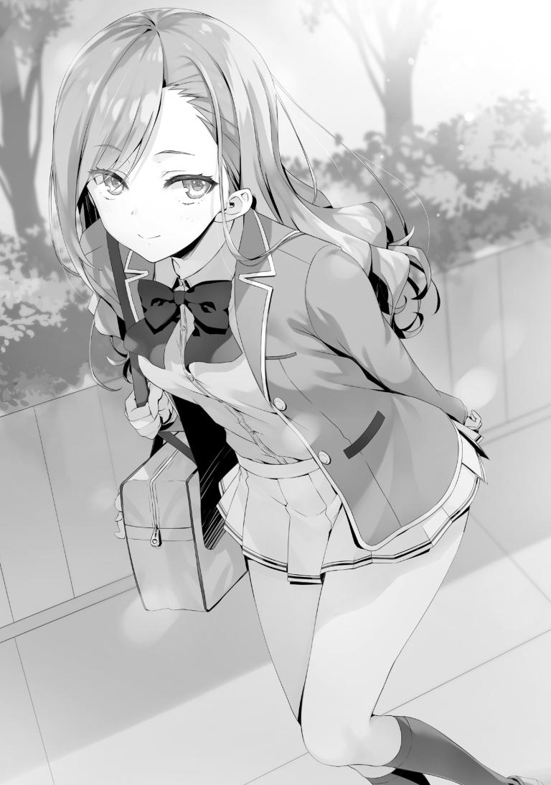
Para lo inteligente que es, debería saber que tratar de halagarme no surtirá efecto.
Pero no creo que se haya acercado ahora a mí sin razón.
—No seas tan cauteloso, me acerqué a ti porque tenía algo que decirte hoy cuanto antes.
—¿Algo que tienes que decirme?
—La tarjeta Prueba es un objeto con un efecto muy poderoso. Pero es difícil utilizarla. Si tienes algún problema, me gustaría ayudarte, Ayanokouji-kun.
¿Qué te parece?
Dejando de lado mis pensamientos y opiniones al respecto, expresó que está dispuesta a ayudarme en cualquier momento porque está de mi lado. Cuando no respondí, pareció un poco avergonzada.
—Supongo que no responderás a menos que lo diga directamente.
No es que intentara ser mezquino con ella, pero no quería que me obligaran a mantener una conversación mientras hay mucha gente. Era después de las clases, y podíamos ver un buen número de estudiantes apareciendo en la zona que nos rodeaba. Matsushita también debió darse cuenta de ello, así que, sin esperar una respuesta, empezó a hablar.
—Tienes que mantenerte en lo más alto de la clasificación para evitar la penalización, así que es difícil que encuentres gente que se agrupe contigo,
¿verdad? Así que sólo quería que confiaras en mí si tienes problemas.
Después de responder, como si hubiera olvidado decir algo importante, añadió:
—Por supuesto, durante el examen, seguiré completamente tus instrucciones.
Eso parecía ser lo que quería que le dijera.
—Aunque me alegro de que estés dispuesta a ayudarme, si no llegamos al 30% de los mejores, serás penalizada. Conoces los riesgos, ¿verdad?
—Los conozco. Por eso creo que es importante que coopere contigo para ayudarte.
Creo que su intención no era buena, pero la esencia del asunto estaba en otra parte.
Mientras reprimía mi deseo de apresurarme a ir con Yousuke, me volteé hacia Matsushita, quien caminaba a mi lado.
—¿Consideras que tus probabilidades de sobrevivir son mayores si te agrupas conmigo?
Normalmente, un grupo que tuviera la tarjeta prueba tendría más probabilidades de ser expulsado. Sin embargo, Matsushita se ofreció a ayudarme, a pesar del peligro. La pura buena voluntad no podía explicarlo.
—...¿Así que me han descubierto?
Matsushita entrecerró los ojos y sonrió, levantando la bandera blanca a tiempo.
—No creo que sea difícil mantenerse en los primeros puestos si se trata de ti. Aunque no acabemos en el podio, seguro que llegaremos al 30% más alto.
Sería más peligroso si pusiera a mis amigos en primer lugar e hiciera un grupo cualquiera con ellos.
Así que esto es lo que realmente quiere decir Matsushita. Me sopesó frente a sus otras opciones para formar un grupo y me eligió a mí.
—Pensé que te iban a fichar rápidamente, Ayanokouji-kun.
Me llamó cuanto antes. También hizo más fácil la evaluación de las intenciones de la otra persona.
Aunque es algo que hay que agradecer, desde el principio no tenía intención de llegar a una conclusión.
No había nada malo en Matsushita, pero el resultado habría sido el mismo fuera quien fuera.
—No voy a decidir sobre mi grupo, al menos por este mes.
—¿Quieres decir que prefieres esperar y ver cómo van las cosas?
—Después de todo, me gustaría ver cómo se mueven las otras clases.
Le dije el factor más importante.
Pero la parte que a mí me interesa es diferente a la que les interesa a los estudiantes comunes.
El examen especial en la isla deshabitada requiere mucha preparación.
No se puede concebir que Tsukishiro no tenga algo que ver con ello.
Ha pasado un mes y medio desde el último examen especial, pero no ha hecho ningún movimiento notable.
Día a día nos vamos alejando de abril, que es cuando él había planeado expulsarme de esta escuela.
Debido a las acciones arbitrarias del Estudiante de la Habitación Blanca, los engranajes son un caos.
Seguramente han hecho algo en esta etapa de formación del grupo, que puede llamarse el preludio de la batalla.
Matsushita no entendía el elemento de peligro que implicaba. Si se veía arrastrada a esto, no terminaría en forma fácil para ella.
—Parece que ahora no obtendré una respuesta satisfactoria. Ya veo, piénsalo un poco.
Tal vez nunca tuvo la intención de presionarme. Pronto, ella agitó su mano para decir adiós.
—Ah, claro. Aquí está mi información de contacto.
Preparada de antemano, me entregó un papel con su ID escrito en él.
—Ya está, he dicho lo que quería decir.
Tras concluir la conversación sin perder tiempo, Matsushita se dio la vuelta y comenzó a caminar hacia el dormitorio.
—Bueno, desde luego no está mal tener la información de contacto de otra chica.
No está claro si podré cumplir las expectativas de Matsushita en el futuro.
Después de eso, me encontré con Yousuke en el centro comercial Keyaki.
—¿Cuál es la situación?
—No creo que sea tan mala como puede ser, pero...
Siguiendo la mirada de Yousuke, vi a Shinohara y Komiya, que estaban hablando y riendo en la cafetería.
Un poco más lejos, también divisé a Ike, que estaba de espaldas a nosotros mientras los observaba en silencio, deprimido.
—¿Qué debemos hacer?
—En primer lugar, si Ike no da muestras de cargar y enloquecer, veamos cómo se desarrolla la escena. Llamar a Ike por descuido podría no llevarnos a una solución.
Yousuke asintió con la cabeza.
—De todos modos, quería preguntar primero por Komiya. ¿Por qué Komiya invitó a Shinohara a su grupo? Si no estamos seguros de eso, no podemos tomar cartas en el asunto.
—Pensaré en quién sería la mejor persona para que Ike se agrupe si no puede agruparse con Shinohara.
—Por favor, hazlo.
Entonces acordamos reunir información por separado.
PARTE 8
Después de dejar a Yousuke, llamé a Ishizaki, de la clase de Komiya, y lo invité a salir.
Como pensé que todavía estaba en la escuela, me dispuse a encontrarme con él.
—¡Oye! ¿Por fin estás pensando en agruparte con nosotros?
Lo dijo entusiasmado con una brillante sonrisa en su rostro.
—Lo siento, eso aún está en deliberación. Hoy estoy aquí para otra cosa.
Ishizaki pareció ligeramente compungido al escuchar estas palabras, pero se recuperó rápidamente.
—Entonces, ¿de qué quieres hablar conmigo?
Quería discutir mi problema con él de inmediato, pero una chica se acercaba a Ishizaki. Es Nishino Takeko de la clase 2-B.
—¿Qué, dijiste "algo", te referías a una reunión con Ayanokouji-kun?
—Oye, ¿no te dije que no me siguieras, Nishino? Lo siento por esto, Ayanokouji.
Después de disculparse conmigo, Ishizaki instó a Nishino a ir primero al centro comercial Keyaki.
Sin embargo, Nishino no escuchó a Ishizaki y se acercó a mí.
—Eres bastante cercano a Ishizaki. Es una sorpresa.
Nishino me observó mientras se dirigía directamente a Ishizaki sin un honorífico.
—¡Oye, no me escuchaste para nada! Por eso estás condenada al ostracismo.
—¿Ostracismo?
—Ah no, sólo que esta chica está aislada en nuestra clase ahora mismo.
Eso se ha convertido en un pequeño problema.
—¿Aislada? Eso no me preocupa.
Hablando de aislamiento, Ibuki también era un lobo solitario, y Nishino parecía pertenecer a la misma categoría.
—De todos modos, ¿puedes irte, sí?
—No.
—¿No? ¿Dices que no? Esta chica... Lo siento, Ayanokouji, espera un momento. Me desharé de ella ahora mismo.
—Pero tengo curiosidad por saber por qué tú y Ayanokouji-kun se reúnen en secreto, Ishizaki.
Aunque nunca había hablado con Nishino, ella parecía ser del tipo que decía lo que pensaba sin dudar.
La gente como ella se crea enemigos con facilidad. Sin embargo, es natural que se muestre incrédula al vernos reunidos en secreto. Ahuyentarla sin dar una explicación sólo nos resultaría contraproducente, así que decidí contarle a Nishino lo que Ishizaki y yo íbamos a discutir.
—Nuestra relación mejoró después de estar en el mismo grupo en el Campo de Entrenamiento Mixto del año pasado.
Primero le conté cómo había llegado hasta aquí nuestra relación actual, y luego pasé al tema en cuestión.
—Me puse en contacto con Ishizaki porque quiero hacerle algunas preguntas sobre Komiya, de tu clase. Decidí reunirme aquí porque esta conversación no debe ser escuchada por otros.
—¿Por Komiya-kun? ¿Qué pasa?
Ella dejó caer el sufijo mientras hablaba de Komiya. Le expliqué mis razones mientras mantenía esa impresión.
—Escuché que él y Shinohara de mi clase decidieron formar un grupo.
¿Sabes de esto?
—No, es la primera vez que lo escucho. Pero no es tan extraño, ¿verdad?
Querer formar un equipo con alguien de otra clase no era nada fuera de lo común.
Así que no era descabellado que Ishizaki encontrara un poco extraña mi pregunta al respecto.
—¿Qué hay de malo en eso?
—Porque incluso en los términos más amables, Shinohara no es el tipo de persona que sea muy activa en este examen de la isla deshabitada. Así que nuestra clase está preocupada por si su agrupación con Komiya es una buena idea o no. Queremos saber de antemano qué tipo de persona es.
—Es un buen tipo en general, ¿no? También tiene buenas habilidades motrices, y como está en el club de baloncesto, también tiene buena fuerza física. ¿Verdad? —Ishizaki lo confirmó con Nishino, que asintió con la cabeza.
—Parece que uno de ellos invitó al otro a formar un grupo, ¿están saliendo?
—¿Eh? E-eso es difícil de decir...
—Incluso si le preguntas a Ishizaki estas cosas, no lo entendería. No sabe nada sobre el amor, ¿verdad?
—¡Cállate! ¿Entonces tú lo entiendes?
—Al menos más que tú. Aunque no están saliendo, a Komiya-kun ciertamente le gusta Shinohara-san, ¿verdad?
—¿Eh? A Komiya le gusta Shinohara, ¿de verdad? Oh, pero dijo que le gustaba una chica de otra clase... aunque sólo lo recuerdo vagamente...
Ishizaki se acordó de un recuerdo pasado, y nos dijo esto.
Si algún alumno llega a formar un grupo, es natural que uno busque algo del otro.
Elementos como la habilidad, la amistad, o incluso, los sentimientos románticos.
Como dijo Nishino, si Komiya está enamorado de Shinohara, entonces es razonable que quiera formar un grupo con ella.
—¿Pero por qué te importa eso?
—Los vi a los dos juntos esta mañana. Como Komiya llamó a Shinohara por su nombre de pila, sentí que son cercanos, por lo que pensé que podría ser el caso.
—Ahh... Eh, ¿qué? No me digas, Ayanokouji, que.... te gusta Shinohara?
—No.
Aunque lo negué inmediatamente, Ishizaki tenía una sonrisa encantada, como si ya se hubiera convencido de ese hecho
—¿Qué? Sin embargo, es el tipo de chica de la que se enamoraría un cabeza hueca como tú. ¿Estoy en lo cierto?
—Acabo de decir que no.
—No me lo ocultes, somos amigos íntimos, ¿no?
No, no creo que fuéramos tan amigos hasta el Campo de Entrenamiento Mixto...
De hecho, recientemente llegué a conocer su carácter incluso mejor que el de mis propios compañeros no tan conocidos.
—Pero ya que eres tú, estoy bastante seguro de que puedes pretender a una chica más linda.
Si esto sigue así, existe la posibilidad de que empiecen a correr falsos rumores.
Si eso sucede, la relación entre Ike y Shinohara podría volverse aún más frágil de lo que es ahora.
—Es Ike. A Ike de mi clase le gusta Shinohara.
—¿Eh? Demonios, ¿no eres tú, Ayanokouji?
—Por eso estaba tratando de entender su situación.
—Ahora lo entiendo, pero, el amor no es algo en lo que los demás puedan interferir.
—También estoy de acuerdo con eso, entrometerse en los asuntos de otros está fuera de lugar.
—Normalmente, eso sería cierto. Sin embargo, para nuestra clase, es una situación que no podemos ignorar. Que Ike participe en el examen especial es indispensable para la clase D.
Cuanto más tensa fuera su relación, más posibilidades tendría Ike de ir en una dirección extraña.
Se acercaba el examen de la isla deshabitada, en el que por fin podrían ser útiles sus habilidades. Sin embargo, este desarrollo no era favorable. Dicho esto, ayudar en esta situación no haría ningún bien a la Clase B. Más bien, daría una ventaja a su enemigo. Probablemente era algo en lo que no querrían ayudar.
Aunque eso es lo que estaba pensando...
—De acuerdo, puedo ayudar si lo necesitas. ¿Qué puedo hacer?
Ishizaki se ofreció a ayudarme, ya que dijo que no le importaba ayudar.
—Espera, Ishizaki, ¿hablas en serio? Eres amigo de Komiya, ¿verdad?
—¿Así que debería ignorar a Ayanokouji, que actualmente está en una situación desesperada?
—No, tienes que dejarlo en paz. Entiendo que son amigos, pero también se supone que son enemigos.
—¿No hay un dicho que dice que los enemigos de ayer son los amigos de mañana?
Técnicamente hablando, debería ser "los amigos de hoy", pero estaba bien, así que lo ignoré.
—Aunque es muy generoso de tu parte, me molestaría que quisieras algo a cambio.
—¿Algo a cambio? No voy a pedir nada. Es normal querer ayudar a un amigo que tiene problemas.
Ishizaki no era un buen mentiroso, así que sabía que hablaba en serio cuando decía que me ayudaría incondicionalmente.
Aunque eso es muy generoso por su parte, no puedo hacerle una petición tan poco razonable teniendo en cuenta que es amigo de Komiya.
Y si separábamos a la fuerza a Komiya y a Shinohara, provocaría la ira de Nishino.
—En ese caso, hmmm... ¿Podrías preguntar primero por los sentimientos de Komiya, Ishizaki?
—¿Así que sólo quieres saber si realmente le gusta Shinohara, Ayanokouji?
—Sí, pero por favor, mantén en secreto el hecho de que alguien lo pregunta específicamente.
—Por supuesto, pero ¿cómo puedo confirmarlo? ¿Alguna idea?
Nishino echó una mano a Ishizaki, que no se le ocurría una forma de abordar a Komiya en este asunto.
—Ayanokouji-kun, viste a los dos disfrutando de la compañía del otro,
¿verdad? Entonces hagamos de cuenta que Ishizaki fue el que presenció esto en lugar de ti y usémoslo para averiguar si están saliendo. Como un chico que no es popular entre las chicas, simplemente parecería que le importa que su amigo haya conseguido una novia antes que él, ¿verdad?
Ishizaki, que tenía poco material para usar como motivo para preguntar, aceptó inmediatamente la sugerencia de Nishino.
—Se siente algo vacío como motivo, pero supongo que funcionará... De acuerdo, entonces lo intentaré. Dame un momento. Las actividades del club aún no han empezado...
Ishizaki supuso que podría funcionar, y llamó a Komiya después de decir eso.
—... ¿Ah, Komiya? Siento llamarte justo antes de que empiecen las actividades del club. Ah no, tengo algo que quería preguntarte. ¿Hablaste con Shinohara de la clase D esta mañana? ... Tal y como pensaba. No, formamos un pacto de no conseguir novia antes de decirnos, pero creo que podrías dejarme atrás en ese aspecto.
Ishizaki preguntó sin rodeos a Komiya sobre Shinohara.
—¿Me estás diciendo que no están saliendo? ¿De verdad? Si estás mintiendo, entonces tendrás problemas después, ¿eh?
Después de confirmar que Komiya y Shinohara no estaban saliendo, Ishizaki hizo un gesto de OK con su mano derecha.
Sin embargo, inmediatamente después de eso, su expresión cambió ligeramente.
—Eh... ¿En serio? Oh, oh, ya veo, ahh...
Ishizaki, estaba haciendo las preguntas de una manera fácil de entender para mí, pero la cantidad de información que obtuve de él disminuyó de repente.
Él estaba escuchando atentamente lo que Komiya estaba diciendo al otro lado del teléfono.
—... ¿Es así? Ah, ya veo, nah, lo entiendo. Por fin ha llegado el momento de que te conviertas en un hombre, y por supuesto, te apoyo. Hazme saber cómo va.
Por la dirección de la conversación, pude entender a grandes rasgos lo que Komiya le dijo a Ishizaki.
Tras finalizar la llamada, Ishizaki me miró con cierta incomodidad.
—Ese tal Komiya, está planeando confesarse con Shinohara en la isla deshabitada.
—Ya veo...
Si forman un grupo, tendrían que trabajar juntos todo el día. Se presentaría un momento perfecto para que confesara.
—¿Qué hacemos? Al final, no hay manera de que podamos detenerlo.
Eso es cierto. Komiya tiene derecho a confesar sus sentimientos.
Después de todo, aunque Ike y Shinohara se gustan, ninguno está dispuesto a dar un paso adelante. Así que, si alguien se interpone entre ellos, entonces será el destino. O tal vez Ike podría recuperarla en el último momento.
—De todos modos, gracias por la gran ayuda. Creo que hablaré con Horikita sobre esto. Si Nishino tiene problemas para formar un grupo, puede hablar conmigo. Quizá pueda ayudar de alguna manera.
—He dicho que no necesito nada a cambio.
—Debemos ayudarnos cuando las cosas son difíciles. Te ayudaré todo lo que pueda.
—Gracias, aunque tampoco es fácil para ti, haz lo que puedas.
Después de escuchar las palabras de simpatía de Ishizaki, decidí contárselo a Horikita.
PARTE 9
Esa tarde, llamé a Horikita a la cafetería.
Como la cafetería es un lugar muy concurrido, aunque hubiera estudiantes a nuestro alrededor intentando espiar nuestra conversación, lo tendrían difícil para tratar de entender lo que se estaba diciendo.
Le expresé a Horikita mi preocupación por la situación actual entre Ike, Shinohara y Komiya y por el hecho de que pudiera afectar al próximo examen de la isla deshabitada. A Ike le gusta Shinohara, pero todavía no ha hecho ningún movimiento. Komiya, sin embargo, planeaba confesarse pronto.
La reacción de Horikita al escuchar mis preocupaciones fue...
—¿No está bien dejarlos en paz?
Como en parte esperaba, su reacción fue de indiferencia.
—Pensaba que teníamos un problema grave entre manos, ya que eres tú quien viene a consultarme... pero no es un problema que tengamos que solucionar. Además, he evaluado que la capacidad de Ike-kun como boy scout es alta, así que deberíamos agruparlo en función de su capacidad, no de sus sentimientos.
—No sé nada de eso. Ike parece estar demasiado preocupado por los asuntos de Shinohara. Dependiendo de la situación, podría no ser tan eficaz como el año pasado. Sólo eso sería aceptable, pero ahora existe la posibilidad de que se convierta en un lastre para su grupo debido a su preocupación por Shinohara.
—¿Así que podría ser expulsado debido a que sus sentimientos por Shinohara le guían?
—No puedo decir que definitivamente no será así.
—... Eso sería problemático. Esto es tan estúpido.
Molesta, Horikita dejó escapar un pesado suspiro.
—Parece que Komiya y Shinohara ya han acordado formar un grupo, pero debido a tus órdenes, todavía no lo han confirmado. Sin embargo, si les das permiso, 9 de cada 10 veces, formarán un grupo. Ahora eres la líder de la clase D, así que si le dices a Shinohara que agruparse con Komiya es estratégicamente desventajoso, no puede desobedecer contundentemente.
—¿Así que estás diciendo que es necesario prevenir eso? Pero si impedimos que formen un grupo, ¿no cambiará Komiya-kun el momento de su confesión? Dependiendo de la situación, podría confesarse ese mismo día.
—No podemos descartar esa posibilidad.
—Esto es mucho más complicado de lo que parece. No podemos ocuparnos de ellos hasta que empiecen a salir.
—¿Entonces qué debemos hacer?
—¿Por qué no hacemos que Ike-kun se confiese? Si Shinohara-san acepta, Ike-kun luchará duro para quedarse en la escuela sin importar el grupo en el que esté, ¿verdad? Por otro lado, si es rechazado, puede olvidarse de todo este asunto y concentrarse en el examen.
Aunque creo que lo primero es cierto, es difícil decir qué pasará si lo rechazan.
Existe el riesgo de que se rinda y deje de esforzarse en este examen.
Sin embargo, esto no es algo que podamos resolver sólo hablando.
Tal vez hacer que Ike se confiese pronto sea la salida más rápida.
—Aunque eres bueno en muchas cosas, no pareces ser bueno en el amor.
—Estoy estudiando mucho ahora mismo.
—¿De verdad?... Bueno, déjame ver qué puedo hacer. Por ahora, empezaré pidiendo a Ike-kun y a Shinohara-san que formen un grupo, ¿de acuerdo?
Aunque no habíamos terminado de comer, Horikita sacó su teléfono y abrió la aplicación OAA.
Sólo para descubrir algo completamente inesperado.
—Por desgracia, parece que llegamos demasiado tarde.
Horikita puso su teléfono sobre la mesa y lo deslizó hacia mí para que pudiera ver la pantalla. En la OAA, se podían ver los grupos que se habían formado, y mostraba que Shinohara y Komiya ya habían formado un grupo. La tercera persona en su grupo era Kinoshita Minori de la clase B.
—Como ya llegamos a este punto, debemos tomar medidas para evitar la pérdida de motivación de Ike-kun.
—Vamos a discutir esto con Yousuke también. Él está pensando en el mejor grupo para Ike en este momento.
La perspectiva de formar grupos para el examen de la isla deshabitada sería difícil.
PARTE 10
Al anochecer comenzó mi habitual cita con Kei en mi habitación.
La conversación de hoy se centró en las agrupaciones para el examen, empezando por la pelea entre Ike y Shinohara.
—Oye... Kiyotaka, ¿con quién piensas agruparte para este examen de la isla deshabitada?
Con una expresión algo tímida, Kei me miró y planteó esta pregunta.
—Por el momento, no tengo planes de agruparme con nadie.
—¿Eh? ¿Por qué?
Podía sentir que Kei quería agruparse conmigo, pero me temía que no sería beneficioso para mí, aunque nos agrupáramos. No por falta de habilidad por parte de Kei, sino que no era conveniente teniendo en cuenta mi batalla con Tsukishiro.
—Formar un grupo tiene sin duda sus ventajas. Sin embargo, alguien solo puede ganar sin duda alguna. Más bien, tiene la ventaja de permitir al estudiante moverse libremente sin ser influenciado por los demás. Además, dependiendo de la situación, ese estudiante puede ayudar a otros grupos e incluso unirse a ellos si están a punto de retirarse.
—Básicamente, puedes ser más adaptable cuando vas solo...
Independientemente de si eres un chico o una chica, hacer el examen en solitario está dentro de las reglas. En otras palabras, también es una oportunidad para que los estudiantes que se crean polifacéticos ganen ellos solos.
—Si un alumno quedase en primer lugar solo, eso mismo daría a la clase 300 puntos de clase.
—Kiyotaka, si eres tú, ¿eres capaz de conseguir el primer puesto?
—¿Qué te parece?
Nuestras miradas se cruzaron mientras le devolvía la pregunta a Kei. Mientras nos mirábamos, ella estaba rígida mientras pensaba.
—Me parece que... te llevarías el primer puesto sin contemplaciones. Eh, pero espera un momento. En ese caso, ¿no sería más difícil decir que estamos saliendo?
Kei no pudo evitar sentir pánico al pensar en el futuro.
—Si quedas en primer lugar tú solo, Kiyotaka, estaría tan extasiada que podría desmayarme y pensar que eres tan genial. Pero, pero... ¡Ya no sé qué sería lo ideal!
—Te estás emocionando demasiado. No te preocupes, asegurar el primer puesto no es una tarea fácil ni mucho menos.
—Entonces... ¿ni siquiera tú crees que puedas ganar, Kiyotaka?
—Digamos que hay un 50% de posibilidades.
—Sólo responder que hay un 50% de posibilidades ya es súper impresionante...
—De todos modos, lo que debería preocuparte no es con quién deberías agruparte, Kei.
—¿Eh? ¿No es eso importante? Ya que podrían expulsarme si no tengo cuidado con ello.
—Cierto, este examen especial sí implica la expulsión. Si estás en los 5
últimos grupos, tendrás que afrontar esa penalización. Por eso no puedes elegir aleatoriamente con quién te agrupas.
—Sí. Por eso, quería agruparme contigo, Kiyotaka... esperaba que pudieras protegerme.
Kei, que antes me había invitado de forma indirecta, finalmente salió y lo dijo sin rodeos.
—Aunque no te proteja, todavía hay una forma de salvarte, ¿verdad? Es decir, mantener un depósito de la cantidad de puntos privados necesarios para anular la expulsión.
—Eso es cierto, pero...
Aunque se requiere una gran cantidad de puntos privados, mientras los tengas, definitivamente no serás expulsado.
—Eso es cierto, pero aunque formes un grupo de 6 estudiantes en el examen, seguirás necesitando 1 millón de puntos para evitar la expulsión,
¿verdad? No tengo tanto.
—¿Cuánto te queda ahora?
—Um... 240,000 puntos.... Aun así, ¡se me considera alguien que ha ahorrado mucho últimamente!
No es que estuviera haciendo una acusación contra eso.
Ya que yo estaba en una situación similar, no era nadie para atribuir la culpa.
—¿Así que te faltan 760.000 puntos?
Tenía unos 250.000 en mis manos. Aunque se lo diera todo a Kei, no tendría ni la mitad de la cantidad necesaria.
—Kei, tienes la tarjeta Viaje Gratis, ¿verdad?
—Sí. ¿Cuánto vale esa tarjeta?
—Sinceramente, no puedo decir que sea una buena tarjeta. Ya sea en el buen o en el mal sentido, el impacto sobre ti misma será el menor de todas las tarjetas, ya que no es una tarjeta que te premie por el esfuerzo, ni una que te ayude si cometes un error durante el examen.
Dado que sólo podrías utilizarla para apostar por un grupo que crees que es probable que gane, se puede decir que está al final de la lista en términos de valor.
—... Seguro que es cierto.
Kei lo entendió más o menos desde el principio, y suspiró con decepción.
—Kiyotaka, tu tarjeta es Prueba, ¿verdad? Es una carta que tiene un fuerte efecto si ganas, pero por el contrario si pierdes sería trágico... Ah, por supuesto, sé que no tendrás ningún problema. Sin embargo, yo quería la tarjeta Reducción a la mitad o la de Anulación.
Para una estudiante como Kei, es natural que las tarjetas de auxilio se sintieran más valiosas que las tarjetas como Prueba.
—No es que no haya esperanzas para la tarjeta Viaje Gratis. Seguramente también hay muchos estudiantes que piensan que la tarjeta Reducción a la Mitad o la tarjeta Anulación no tienen ningún valor. A sus ojos, la tarjeta Viaje Gratis también tiene cierto valor.
A diferencia de la tarjeta de Inicio y Bonificación, no afectaría a los estudiantes que estuvieran seguros de sus habilidades; más bien, se dirigía a los estudiantes situados en medio de la manada que consideraban que no podían ganar.
Además, como la mayoría de los estudiantes se encuentran en medio, sería fácil encontrar a alguien con quien intercambiar. Sin embargo, las tarjetas como la de reducción a la mitad serían codiciadas por algunos estudiantes de la parte media y por estudiantes de la parte baja. Dependiendo del poseedor de la tarjeta, incluso una tarjeta sin valor podría deslumbrar como una de oro.
—Prepararé los puntos.
—¿Eh? Dices que prepararás... ¿Cómo?
—Hay muchas maneras, pero vender la tarjeta Prueba es una forma de conseguir los puntos necesarios.
—Pero entonces, tendrás que renunciar a la tarjeta Prueba... ¿Está realmente bien?
—Es más importante evitar que te expulsen.
—Sí... sí... gracias.
Después de decir eso, Kei se sonrojó.
Poco después, nuestra conversación cambió a las próximas vacaciones de verano, y el ambiente de la habitación se volvió más animado, pero, no hubo más progreso en nuestra relación.
PARTE 11
Había una norma por la que se podían formar grupos de hasta tres personas antes de que empezara el examen especial de verano.
Pero también había una conversación que iba más allá, una que miraba al futuro.
—Ah, estás aquí, Ichinose-san.
—Siento haberle hecho esperar, Sakayanagi-san.
Era el viernes del primer fin de semana después de que las formaciones de grupos comenzaran.
Sakayanagi contactó con Ichinose y le pidió que fuera a la cafetería.
—¿Es un buen momento? Como lo pedí tan de repente, también estaba preparada para que me rechazaras y no vinieras.
—No hay ningún problema, aunque no pensé que te pondrías en contacto conmigo, así que me sorprendió un poco.
Ese día, una hora antes de reunirse en el café, Sakayanagi hizo una repentina invitación a Ichinose.
No sería extraño que Ichinose rechazara la invitación si ya tenía cosas programadas.
—Es porque, pase lo que pase, quería reunirme contigo hoy, Ichinose-san.
Sakayanagi estaba mintiendo.
Invitar a Ichinose con tan poca antelación era una estrategia para no darle tiempo a pensar.
Si le hubieran dicho con unos días de anticipación, Ichinose habría especulado sobre el tema de la reunión.
Dependiendo de la ocasión, podría incluso pedir ayuda a un compañero de clase como Kanzaki.
Esto era sólo una medida de precaución.
—Por cierto, ¿por qué aceptaste mi repentina petición?
—¿Por qué? Porque no tenía nada especial planeado para hoy.
—No me refería a eso. Ya te he hecho cosas terribles antes, Ichinose-san.
No sería sorprendente que me odiaras.
Para suprimir a Ichinose, Sakayanagi descubrió en secreto el pasado de Ichinose.
Expuso el pasado de Ichinose, que no quería que fuera conocido por todos, algo doloroso para Ichinose.
Si eras traicionado por alguien en quien confiabas, llegabas a odiar a esa persona. Incluso si no la odiabas, ciertamente tendrías un fuerte sentimiento de desconfianza hacia ella y mantendrías las distancias.
Sin embargo, Ichinose no sólo aceptó inmediatamente la repentina invitación de Sakayanagi, sino que además no parecía estar resentida en absoluto.
—No creo que hayas hecho nada excesivo, Sakayanagi-san. De hecho, tengo que reflexionar sobre lo que ocurrió durante la secundaria, ya que también creo que fue un acto vergonzoso. Además, no es que te pidiera que lo mantuvieras en secreto, así que no creo que sea correcto culparte por exponerlo.
Lo que Ichinose quería decir era que, al final, fue su culpa el haber revelado su pasado.
—Definitivamente eres una buena persona, Ichinose-san.
—¿Lo soy? No estoy muy segura de eso.
Ichinose parecía un poco avergonzada, rascándose ligeramente las mejillas y desviando la mirada, como si no pudiera soportar la visión de Sakayanagi mirándola gentilmente.
—Entonces... ¿De qué quieres hablarme?
Tal vez Ichinose pensó que se sentiría incómoda si continuaban con este tema, así que instó a Sakayanagi a ir al grano.
—Como quieras, iré al punto, pero es posible que tampoco te sientas muy cómoda con eso.
Ichinose murmuró para sí misma:
—Por favor, ten piedad —ya que Sakayanagi dijo esto como una advertencia.
—Hablando claro, si esto continúa, la Clase A naturalmente sentirá el peligro de que la Clase B se acerque de nuevo a ellos. ¿Te importa decirme lo que piensas sobre este asunto?
Sakayanagi señaló sin piedad la situación actual en la que Ichinose y su clase estaban siendo dejados de lado.
—Jajaja... Verdaderamente contundente.
Por un momento, la mente de Ichinose se quedó en blanco, y luego comenzó a abanicarse con una sonrisa amarga en su rostro.
Con una sonrisa deliberada, Sakayanagi esperó su respuesta.
—Es cierto que nuestro estado de abandono no puede calificarse de bueno.
El 1 de mayo, la diferencia de puntos entre la clase de Ichinose y la clase B
liderada por Ryuuen, a quien perseguía, era de sólo 26 puntos. Ichinose pensó que era posible alcanzarlos incluso sin un examen especial, ya que los puntos pueden verse afectados por cosas como las ausencias o los retrasos. De hecho, durante el último año, las pequeñas diferencias de puntos creadas por las acciones cotidianas se acumularon y acabaron afectando mucho a los puntos de clase.
Sin embargo, cuando la clase de Ryuuen ascendió a la clase B, no se encontraron huecos derivados de esas acciones cotidianas que hubieran disminuido sus puntos de clase. A medida que se acercaba junio, la brecha se redujo, pero sólo en 2 puntos. Se notaba la fuerte voluntad de Ryuuen y su clase de no ser nunca superados por la clase de Ichinose.
Ichinose no tuvo que decirlo en voz alta para que Sakayanagi, que estaba siendo perseguida por Ryuuen, también lo sintiera.
—También sé lo formidables que son.
—Aunque lo sepas, ¿no hay cosas contra las que no puedes hacer nada?
Últimamente no han causado ningún problema, a diferencia de las anteriores estrategias disruptivas de Ryuuen-kun. Si no puedes recuperarte en la vida diaria, tu única esperanza son los exámenes especiales.
Ichinose asintió ligeramente. Sin embargo, Sakayanagi no respondió con palabras dulces.
—No es una persona corriente. Para ti, que sólo te enfrentas a tus problemas de frente, en cierto sentido, no es exagerado decir que es tu mayor oponente.
Ichinose, que se había enfrentado a Ryuuen en los exámenes de fin de curso, comprendía muy bien este punto.
Al agresivo y poco convencional Ryuuen no le importaba romper las reglas.
Para Ichinose, era un oponente que quería evitar si era posible.
—Pero, para subir la escalera, no hay que evitar ese camino. Además, aunque es cierto que Ryuuen-kun es un oponente duro, tú tampoco eres alguien a quien se pueda derrotar fácilmente, Sakayanagi-san.
Aunque Sakayanagi tuvo una disputa en el pasado por el liderazgo de su clase con Katsuragi, la Clase A tenía casi el doble de puntos que la Clase B de Ryuuen y era el número uno indiscutible. Esa diferencia aseguraba que incluso si la clase A perdía una o dos veces, seguiría siendo cómodamente la primera.
—Aunque la Clase C y D tienen una diferencia de más de 200 puntos, la Clase D está ganando impulso, ¿verdad? ¿Están seguros de que no serán superados por ellos?
—Horikita-san y su clase también están ganando fuerza rápidamente. En términos de fuerza individual, algunos de ellos no perderían ante nadie de las otras clases... Viéndolo así, parece que realmente no me sobra nada.
—Efectivamente, hay algunos individuos con un talento interesante en la clase D. Encabezados por Hirata-kun y Kushida-san, que tienen una gran
capacidad de comunicación, y tienen unas notas muy equilibradas, junto con Sudou-kun, que es el único que ha obtenido una calificación de A+ en habilidad física en todo el 2º año. Mientras tanto, su carta de triunfo oculta, Ayanokouji-kun, obtuvo una puntuación perfecta en un examen de matemáticas extremadamente difícil. También está Kouenji-kun, cuyas fuerzas y límites son todavía un misterio; él también es un adversario peligroso.
Al decirlo intencionalmente, Sakayanagi hizo que Ichinose sintiera la gruesa capa de estudiantes de la Clase 2-D una vez más.
—Y luego, la líder que los reunió y los hizo avanzar, Horikita-san. Tiene excelentes habilidades académicas y físicas, y recientemente se ha unido al consejo estudiantil.
Sakayanagi volvió a hacer que Ichinose se reafirmara en su situación actual de ser abandonada.
—Siento seguir con las palabras duras, pero creo que es sólo cuestión de tiempo que tu clase caiga a la Clase D.
—Ahora mismo, esa evaluación podría ser acertada, pero-
—¿Pero qué? ¿Vas a hablar del valor del esfuerzo y la amistad, ese tipo de conceptos abstractos?
Sakayanagi se limitó a quitarle las palabras de la boca a Ichinose, que sólo pudo tragarse lo que iba a decir.
—Es imposible ganar con ese tipo de vaguedades, por mucho que se intente. Mientras que todas las clases han aumentado claramente su fuerza a lo largo del año, no veo mucho crecimiento en la tuya, Ichinose-san.
—Ese... ese no es el caso. Nosotros también hemos crecido.
—No he dicho que no hayan crecido. Es sólo una cuestión de cuánto.
—Puede que no lo creas, Sakayanagi-san, pero no creo que perdamos.
Sakayanagi sonrió ligeramente y negó lentamente con la cabeza.
—Si miras la OAA, es obvio a primera vista que tu clase es la que menos ha crecido de las cuatro al comparar las habilidades generales de cuando éramos de primer año con las de ahora. Pensé que también habrías hecho un análisis a este nivel... ¿Es que lo sabías, y fingías no darte cuenta, o es porque tenías miedo de enfrentarte a la realidad, que no te atreviste a comprobarlo...?
Ichinose recordó el momento en que había estado a solas con Sakayanagi.
Eran como un niño y un adulto respectivamente.
Era natural que la refutaran, y se sentía como si Sakayanagi la arrinconara.
Frente a Sakayanagi, que precisamente atacaba sus debilidades, una réplica sería bloqueada.
—Eres una estudiante inteligente. Si compitiéramos en igualdad de condiciones, seguro que no serías más débil que yo. Sin embargo, cuando estás en una situación de desventaja, no puedes demostrar tus puntos fuertes. Ya sea la última vez, o esta vez, sólo pudiste permanecer en silencio después de ser atacada a través de tus debilidades. Sin embargo, tanto Ryuuen-kun como yo somos capaces de mostrar nuestros colmillos, aunque estemos en una situación de desventaja, ¿sabes?
—Sí... Sí.
Estas dos personas probablemente no dudarían de que eran fuertes sin importar la situación.
—Puedo decir con seguridad ahora, que no tienes ninguna posibilidad de ganar, Ichinose-san.
—¿Me llamaste sólo para decirme eso?
—Si fuera sólo para encontrar fallos en ti, podría haberlo hecho en cualquier lugar. No desperdiciaría unas preciosas vacaciones.
En ese momento, Sakayanagi decidió decirle a Ichinose la verdadera razón por la que la llamó hoy.
—¿Por qué no trabajas conmigo? Ichinose-san.
—¿Eh...?
La propuesta de Sakayanagi fue tan inesperada que Ichinose no pudo decir una palabra en respuesta.
—Esta es la única manera de que puedas alcanzar a mi clase.
—No, pero eso es...
—Una relación de cooperación entre clases no es algo malo. De hecho,
¿no tenías una relación similar con Horikita-san, de la clase D, cuando estabas en primer año?
No era de extrañar que Sakayanagi supiera que tenían una relación de cooperación.
—Lo que voy a decir es sólo una especulación de mi parte, pero creo que ya han disuelto esa sociedad con Horikita-san. A pesar de haber quedado en último lugar, fueron capaces de acumular más puntos de clase que cualquier otra clase el año pasado, y se están recuperando con un impulso increíble. En comparación con eso, Ichinose-san, ustedes dieron un paso atrás y cayeron a la clase C. Para Horikita-san y su clase, no hay sólo ventajas en seguir trabajando con ustedes.
Era como si hubiera presenciado esa conversación entre Ichinose y Horikita.
Sakayanagi lo señaló perfectamente.
Ichinose no pudo negarlo, y contestó en forma que casi lo admitía.
—Es cierto... las sociedades no pueden durar siempre.
—Sí. Para mantener una relación de cooperación, hay que cumplir una
"cierta condición". Tanto la clase tuya como la de Horikita-san cumplieron este requisito el año pasado, así que pudieron construir una buena relación sin competir inútilmente entre sí.
Ichinose asintió con la cabeza.
—Esa condición era... la diferencia de puntos de clase.
De hecho, la razón por la que la clase de Ichinose y Horikita cesó su hostilidad mutua, fue por la enorme diferencia de puntos de clase.
—Aunque no fue intencional, ahora mismo hay una diferencia suficiente en puntos de clase entre nuestras clases. En otras palabras, no creo que sea imposible que unamos nuestras fuerzas.
—Lo que me entristece es que no es una propuesta feliz. Después de todo, implica que nuestra clase no es digna de tu cautela, una existencia insignificante para ti.
—Hablando crudamente, eso es.
La despiadada realidad de las palabras de Sakayanagi golpeó a Ichinose.
Sin embargo, Ichinose seguía sonriendo. Aunque la negación emocional era fácil, ella no podía ignorar la realidad de que su clase estaba siendo empujada a la desesperación.
—No creo que sea beneficioso para ti cooperar con nosotros, Sakayanagi-san.
—No, eso no es cierto. De hecho, si sólo hablamos de fuerza de combate, tienes muchas carencias. Sin embargo, tienes un arma poderosa que ninguna otra clase posee.
Sakayanagi sonrió y dijo.
—Eso es... "confianza". Ichinose-san, puedo decir con seguridad que mientras unamos nuestras fuerzas, no me traicionarás pase lo que pase. Ese es un factor muy importante a considerar cuando se crea una alianza.
Un socio en el que puedas confiar para que te cubra las espaldas. Sakayanagi dijo que este factor hacía que la alianza mereciera la pena.
—Aunque es agradable recibir esa evaluación de tu parte, estamos en una situación en la que ya no nos importa, ¿verdad?
—Aun así, no creo que sueltes el arma conocida como confianza que has construido hasta ahora. Si hay una traición, entonces sería mi culpa por haberte juzgado mal.
Aunque fuera una trampa, Ichinose no consideraba que ser confiado fuera algo malo.
Sin embargo, ella ya sabía que Sakayanagi era una oponente que no podía ser tomada a la ligera.
—¿Podrías ser un poco más específica?
—¿Puedo entender que quieres seguir adelante con nuestra asociación?
—... Así es.
—Si es así, hablemos de ello.
Sakayanagi se dispuso a traer a la Clase 2-C, liderada por Ichinose, bajo su bandera.
—Hay una regla un poco molesta para el próximo examen de la isla deshabitada. Sólo los estudiantes del mismo año pueden formar un grupo, y las recompensas se dividirán por igual entre las clases. En otras palabras, aunque los mejores miembros de cada clase sean seleccionados para formar un grupo, no creará una diferencia en los puntos de la clase.
—Cierto. Así que supongo que inevitablemente tendremos que formar un grupo ganador de nuestra propia clase.
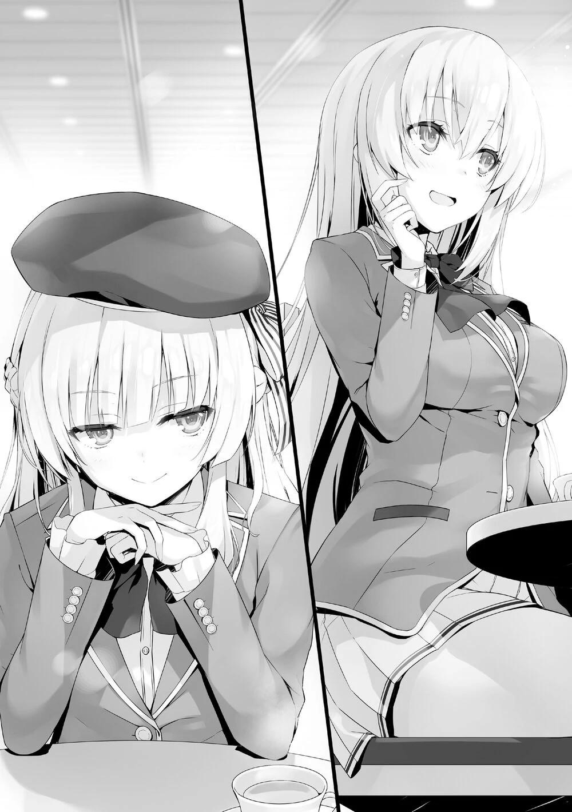
—Si nuestras dos clases trabajan juntas...
—Aunque la brecha con nuestra clase no se reducirá, puedes alcanzar a la clase de Ryuuen-kun, y ampliar la distancia con la clase D.
—Pero... si hacemos eso, perderemos la oportunidad de alcanzar a tu clase.
—¿No debería ser tu primera prioridad volver a una posición estable para prepararte para el segundo y tercer semestre? Si rechazas mi oferta ahora, no es que puedas ganar con seguridad. ¿Me equivoco?
—Eso...
—Por no mencionar que, si vuelves a perder con las otras clases, caerás a la Clase D. También perderás muchos puntos de clase, y caerás en una situación extremadamente difícil. En cuyo caso, tu objetivo de la Clase A será casi imposible.
Una vez más, Ichinose se quedó en silencio, ya que no podía responder a lo que Sakayanagi dijo.
—Creo que sigues sospechando de mí. Sin embargo, no hay muchas oportunidades de trabajar con las otras clases. Ya sea la clase D o la B, para alcanzar a mi clase, no van a unir fuerzas conmigo. Si unieran sus fuerzas, sólo queda la opción de formar una alianza de tres clases para desafiar a la clase A.
Así se pueden crear grupos fuertes.
No importa lo fuerte que sea la clase A, si las clases B, C y D trabajan juntas, será difícil que ganen.
—Sería mentir si dijera que no he pensado en eso antes.
—¿Verdad? Sin embargo, la estrategia para que las tres clases formen una alianza no es realista. Dime Ichinose-san, ¿has recibido alguna invitación para esto desde el día en que se anunciaron las reglas? Ya han pasado algunos días desde entonces.
Ichinose bajó los ojos y negó lentamente con la cabeza.
—Si tres clases formaran un grupo, las recompensas de puntos de clase se dividirían a partes iguales entre ellas. Aunque hagan todo lo posible y consigan el primer puesto, la diferencia de puntos sólo se reducirá en 100. Para el 2º puesto en 67 puntos, y el 3º en sólo 33 puntos.
Aunque las clases B, C y D de 2º año ocuparan todos los primeros puestos, la diferencia de puntos con la clase A sólo disminuiría en 200 puntos.
Aunque no era una cantidad pequeña, este examen especial era, en primer lugar, difícil de acaparar las recompensas.
—Es natural querer ganar solo y reducir la diferencia en 300 o 400 puntos.
—Pero si tú y yo nos agrupamos, Horikita-san y Ryuuen-kun también podrían agruparse... Además, incluyendo mi clase, ya se han formado grupos,
¿no?
—Sí. Más bien, he estado esperando a que se empiecen a formar los grupos. En la situación actual en la que ninguna de las clases quiere unir fuerzas a nivel de clase, propongo que seleccionemos sólo las fuerzas principales de nuestras clases para formar un grupo.
—¿Qué quieres decir con "fuerzas principales"?
—Al igual que el año pasado, no puedo moverme por la isla deshabitada debido a mi discapacidad. Sin embargo, se me permite participar en este examen, sólo que en una posición algo especial.
—¿Especial?
—Los estudiantes que no pueden participar debido a su mala salud son eliminados desde el inicio del examen, ¿verdad? Sin embargo, yo participaré como estudiante "semi-eliminada".
—¿Semi-eliminada?
—Aunque no pueda caminar libremente por la isla a causa de mis piernas, tengo derecho a permanecer en el punto de partida y competir con las mismas reglas que los demás. En otras palabras, si me pides consejo, puedo ayudarte, y
si hay un problema difícil, podemos resolverlo juntas. Aunque, cuando sea la única persona que quede en el grupo, en ese momento el grupo será eliminado.
—Entonces Sakayanagi-san, ¿puedes participar bajo esta posición especial?
Ichinose inmediatamente comprendió que Sakayanagi jugaría un gran factor en el funcionamiento como cerebro, aunque se necesitará un medio para comunicarse con ella..
—De mi clase, son libres de elegir entre 4 estudiantes - Hashimoto-kun, Kitou-kun, Masumi-san y yo. Somos sin duda las fuerzas principales de la clase A. De la clase B, estás tú y Kanzaki-kun, así como Shibata-kun, ¿verdad?
Todos los estudiantes que habían sido listados todavía no formaban un grupo, y estaban observando la situación.
En esta etapa, no había ningún inconveniente para ambas partes.
—Así es. Si consideramos que la fuerza física también será necesaria en la isla deshabitada, es cierto. Sin embargo, no hay garantía de que podamos unirnos como queramos después de que comience el examen especial, ¿verdad?
—Aunque es difícil, no es imposible.
Sakayanagi sonrió. Demostró que confiaba en que podría reunir al grupo grande sin importar las dificultades a las que se enfrentaran.
—Sakayanagi-san, ¿puedo decirte lo que realmente siento?
—Por supuesto.
—Sakayanagi-san, no quieres que las tres clases luchen juntas, más de lo que pensé en un principio. O por decirlo así, tienes miedo de esa situación,
¿verdad?
—¿Qué quieres decir?
—Dijiste que éramos alguien en quien podías confiar, y creo que lo decías en serio. Sin embargo, lo más importante para ti es evitar que la Clase B, la Clase C y la Clase D trabajen juntas para alcanzar a la Clase A. De hecho, la
cantidad de puntos de clase que podemos obtener si ganamos juntos disminuirá, pero no hay garantía de que ese hecho no aparezca en el futuro: que las tres clases sigan ayudándose mutuamente.
Ichinose, que había sido reprimida por las palabras de Sakayanagi hasta ahora, la atacó con sus sentimientos.
—Una alianza entre las tres clases para forzar la salida de la Clase A. Si eso tiene éxito, te verías obligada a una amarga batalla a partir de ahora, Sakayanagi-san... ¿No es así?
Sakayanagi se sorprendió un poco por el contraataque de Ichinose, que había estado a la defensiva hasta entonces.
—Supongo que te he subestimado un poco, Ichinose-san.
A Sakayanagi no le importaba si alguna de las clases inferiores obtenía más de 300 puntos en este examen especial. Como clase A, que está en la posición de liderazgo, lo que Sakayanagi debe evitar más en este examen es que las tres clases inferiores formen una alianza. Esta fue una acción tomada por Sakayanagi que predijo más de estos exámenes por venir. Si hubiera un talento que pudiera unir a las tres clases, probablemente sería Ichinose Honami. Por lo que Sakayanagi estaba tratando de poner a Ichinose de su lado, antes de que este escenario pudiera tener lugar.
—Esta propuesta de trabajar juntas. ¿Vas a aceptarla o no?
Después de reconocer sus palabras, Sakayanagi pidió la cooperación de Ichinose.
—Si trabajas conmigo, puedo darte los depósitos de tres personas. Te prestaré un total de 3 millones de puntos para los estudiantes que están en alto riesgo de expulsión. Si reciben la sanción, puedes usar esto para pagar su rescate. Para ti, que no quieres que nadie abandone la escuela más que cualquier otra clase, esto debería ser una propuesta de gran ayuda.
Temiendo el rechazo, Sakayanagi le tendió la mano a Ichinose.
—Entonces, ¿podrías darme el valor de cinco personas? Así me sentiría completamente tranquila.
—Qué codiciosa. Aunque pensaba gastar una cantidad similar de dinero recientemente, lo financiaré especialmente, sólo por ti.
Durante más de un año, la clase A había recibido sistemáticamente una mayor cantidad de puntos privados que cualquier otra clase. Por lo tanto, la cantidad de puntos que cada alumno ahorró no era comparable a la de las otras clases.
—Con esto nuestro contrato está completo. Aunque no me hubieras ofrecido prestarme los puntos del depósito, habría optado por unirme a ti.
Nuestro objetivo principal es, por supuesto, llegar a la Clase A, pero como has dicho, hemos caído a la Clase C y no podemos permitirnos caer todavía más. Ya que, si caemos a la Clase D, la motivación de nuestra clase seguramente se verá muy reducida, y eso es algo que queremos evitar.
Ichinose trató de estrechar la mano de Sakayanagi.
—La propuesta de una alianza entre la Clase 2-C y la Clase 2-A- la acepto.
Al darse la mano, establecieron una alianza entre sus dos clases.
—Con esto, puedo luchar tranquilamente. Aunque es un poco apresurado, tengo una petición.
—Para maximizar nuestras posibilidades de ganar, es necesario empezar por dar a la fuerza principal de la clase A la carta "Más gente"... ¿verdad?
Como aliada, Ichinose ya había comenzado a formar la mejor estrategia a seguir.
Usando la tarjeta "Más gente", de la que sólo había una en el segundo año, se podía formar un grupo de 7 miembros.
Esa era otra razón por la que Sakayanagi decidió luchar junto a Ichinose.
—Es útil que hayas entendido tan rápido.
—Sin embargo, tanto Ryuuen-kun como Horikita-san son oponentes formidables.
Sakayanagi tampoco estaba subestimando a ninguno de los dos.
Considerando que Horikita tenía a Ayanokouji detrás de ella, la batalla nunca sería fácil.
Sin embargo, eligió luchar con Ichinose bajo la certeza de que definitivamente ganaría.
—El primer puesto será nuestro. No escatimaré los esfuerzos necesarios para ello.
Con sus fuerzas principales consolidadas, iban a desafiar a las clases de Ryuuen y Horikita junto con las de 1º y 3º año.
LA BATALLA DE LOS AÑOS PRIMERO Y TERCERO
Ahora, a casi 3 meses de iniciado el año escolar, los de 1er año han llegado a entender un poco mejor la Preparatoria de Educación Avanzada y sus reglas.
También estaban en el proceso de formar grupos para el próximo examen especial.
Sin embargo, un caso desagradable ocurrió poco después de que la formación de grupos comenzara.
Los estudiantes de la clase 1-D, liderados por Kazuomi Housen, estaban haciendo su jugada, negándose obstinadamente a participar en las agrupaciones y a intercambiar sus tarjetas. Exigían puntos, sin los cuales no estaban dispuestos a formar grupos con el resto del año.
Debido a esto, los de primer año se vieron en una situación en la que no podían formar grupos libremente.
Aunque los representantes de cada uno de los cursos habían esperado que Housen cambiara de opinión durante el mes de junio, aún hoy, 1 de julio, su postura al respecto no había cambiado.
Hubo un coro de voces de los de 1er año para que simplemente se ignorara a la clase D en el proceso de formación de grupos, pero en respuesta, Takuya Yagami de la clase 1-B se levantó y calmó esas voces. Planteó que, si bien hubiera sido fácil simplemente ignorar a la clase de Housen, la parte importante de este examen especial era que debían competir con los "otros años escolares".
En el caso de que se diera la máxima prioridad a este punto, era necesario seleccionar a los estudiantes con talento de todo el año para formar un grupo más fuerte. Al mismo tiempo, algunos estudiantes que tenían la misma idea que él también expresaron su apoyo, por lo que las tres clases acordaron esperar hasta que llegara julio.
Sin embargo, Housen pasó todo el tiempo con una actitud negligente, lo que hizo que sus negociaciones no dieran ningún fruto.
Finalmente, llegó la fecha límite y se decidió que los representantes de las 4
clases se reunieran para discutir una salida a la situación actual.
Para mantener las negociaciones como un asunto abierto para el primer año, Yagami propuso una reunión sencilla. A pesar de que las tres clases se pusieron de acuerdo en que sus líderes de clase o alguien en una posición similar asistiera a la reunión, al final de la jornada escolar todavía no había respuesta de la clase D, que era el punto para esta discusión.
Yagami llegó al pasillo de una de las aulas vacías de 1er año. Como el que había propuesto esto, se sentía obligado a llegar antes que nadie.
No mucho después, apareció Utomiya Riku de la clase C.
—Parece que sólo tú estás aquí ahora, Yagami.
—Hola Utomiya-kun. Estaba pensando que tú serías la persona de la clase C que asistiría a esta reunión.
—Aunque no creo que sea del tipo líder, vine porque los otros estudiantes no quisieron venir. Mientras que los estudiantes de mi clase hablan libremente de sus opiniones en general, no tienen mucho gusto por estos asuntos problemáticos.
—¿No es porque creen que eres un estudiante confiable que te enviaron?
He visto la OAA actualizada de este mes, y tu Contribución Social ha subido a B.
Después de decir eso, Yagami sonrió alegremente.
Utomiya frunció el ceño, a pesar de los elogios recibidos.
Aunque Yagami tenía una C en Habilidad Física, su Habilidad Académica estaba valorada en A. Además, debido a sus repetidas contribuciones a su clase, sus puntuaciones de Adaptabilidad y Contribución Social habían subido a A. La habilidad general de Utomiya ya era superada por Yagami.
Además, la clase C no estaba en situación de alegrarse.
—Recientemente perdimos a un camarada. Honestamente, es una pérdida bastante pesada.
—Tampoco pensé que Hatano-kun sería expulsado. Qué lamentable.
—... Ah.
Hatano había sido uno de los chicos de la clase 1-C, un estudiante valioso con un sobresaliente en Habilidad Académica.
Sin embargo, el golpe decisivo fue que asumió acciones que le acarrearían la pena de ser expulsado.
Esto había hecho que los laxos de 1º año de nuevo se dieran cuenta de la dureza de la escuela. Dicho esto, ya había pasado un mes desde que Hatano fue expulsado. Utomiya, que era su compañero de clase, ni siquiera tuvo tiempo de llorar su pérdida.
Ahora que la clase 1-C había perdido a un excelente estudiante, conseguir un resultado sólido en el siguiente examen se hacía necesario.
—Parece que te llevabas muy bien con Hatano.
—Una vez me dijo que quería que nos uniéramos al consejo estudiantil juntos y que creáramos un ambiente más animado para todos en esta escuela.
Utomiya asintió ligeramente, y luego miró hacia el aula de la clase 1-D.
—¿Crees que Housen vendrá?
Utomiya le preguntó a Yagami sobre la persona que llevó a esta discusión en primer lugar.
—¿Sobre el 50/50 de posibilidades de que venga?
—¿50/50? Parece que confías bastante en Housen. Apuesto a que no vendrá en absoluto.
—Si no se presenta esta vez, entonces sólo formaremos grupos dentro de las clases restantes. Con eso, la clase D, que estaba tratando de extorsionarnos
con precios altos se quedará sola, y sus posibilidades de ganar desaparecerán como resultado.
—Si cree que simplemente puede obligarnos a entregar nuestros puntos privados de esa manera, es demasiado arrogante. Si podemos formar sin problemas los grupos con las cuatro clases esta vez, sería significativo. Ya que nos enfrentamos a los de segundo y tercer año, deberíamos cooperar. Sin embargo, Housen rechazó nuestra oferta.
Aunque todos eran de 1er año, Housen quería luchar en zonas donde no era necesario.
—Puede parecer eso en la superficie, pero no creo que ese sea el objetivo de Housen-kun.
—Entiendo que esa es su estrategia. Sin embargo, no tiene ninguna posibilidad de ganar.
—Si realmente tiene la intención de llevar a cabo esta estrategia, ¿no es una bendición? Eso significa que Housen-kun no es una gran amenaza para nuestras clases.
—...Sí.
Yagami explicó que organizó esta reunión también para calibrar lo que Housen está pensando realmente.
Los dos estaban en plena discusión, cuando apareció una tercera persona-
—¡Oh! Riku, Takuya. Como era de esperar, son ustedes.
Saludándolos con una voz fuerte, Takahashi Osamu de la clase 1-A se acercó ruidosamente a ellos mientras agitaba su mano.
Aunque era una figura discreta con un C+ en Habilidad Académica, se le daba de maravilla llevarse bien con la gente, y como resultado, a menudo pedía ir a las reuniones que se celebraban. Había acumulado muchos amigos en las otras clases y años.
—Osamu-kun, ¿has venido porque te volvieron a dar esta molesta tarea?
—El líder de mi clase es del tipo que no le gusta este tipo de cosas problemáticas. Por eso soy yo quien viene a esta discusión.
—Bueno, la discusión se desarrollará más fácilmente ahora que has venido, Osamu.
Como Utomiya, estaba bien si el estudiante que venía a este foro no era el líder de su clase. De hecho, si un estudiante con buenas habilidades de comunicación viniera, sería algo bueno para las otras clases también.
—¿Así que sólo Kazuomi no está aquí todavía?
Todavía faltaban unos tres minutos para la hora de la reunión. Si él no aparecía, comenzarían la discusión sin dudarlo.
—¿Qué tal si trabajamos juntos ahora? Lo que en realidad quiero es aislar a la Clase D y aplastarla cuanto antes.
—Nos dijeron que este examen de la isla deshabitada también pondría a prueba otras habilidades además de las académicas. Mientras que la Clase D es la última en términos de habilidad académica, sus habilidades físicas son las segundas en nuestro año y sólo por un estrecho margen para ser los primeros.
Por lo tanto, podrían desempeñar un papel importante en la formación de grupos óptimos.
—Entiendo lo que dice Riku. Mi clase también está bastante frustrada con la situación actual. Sin embargo, ¿no es demasiado pronto para dejarlos de lado ahora? No hay garantía de que no haya exámenes en el futuro como éste que requieran cooperar entre sí dentro del año, ¿verdad?
Ante la propuesta de Riku de aislar a la clase D, Yagami se puso de su lado.
Takahashi, por otro lado, mantuvo una posición neutral en este asunto.
—Si hay este tipo de exámenes en el futuro, podemos simplemente cooperar dentro de nuestras tres clases. De hecho, admito que la clase D
también tiene estudiantes que podrían ser recursos valiosos, pero no vale la pena agacharse para satisfacer las demandas de Housen. Es casi la hora de la reunión. ¿Podemos empezar a discutir en la dirección de que sólo nuestras tres clases trabajen juntas?
—No parece que podamos, Riku.
Un hombre entró lentamente, aparentemente, como si hubiera visto cómo iba a resultar esta conversación.
—Parece que has venido después de todo, Housen-kun.
Housen, tras ser saludado por la sonrisa de Yagami, se acercó con su aterradora dentadura blanca de siempre. Tras echarle una rápida mirada, Utomiya desvió la vista hacia el exterior de la ventana.
—Has aparecido en un gran momento, Kazuomi.
Takahashi no rehuyó a Housen, sino que entabló una conversación amistosa.
Lo único que quería era que todos se llevaran bien.
—No digas mi nombre como si fuéramos cercanos, o te mataré.
Habiendo intimidado a Takahashi, Housen se volteó a mirar a Yagami y Utomiya una vez más.
—¿Así que decidieron pagar?
—Eso es una broma de mal gusto. No te voy a dar ni un centavo.
—De todos modos, vamos a calmarnos primero. No hay manera de tener una discusión si eres beligerante desde el principio.
—Entonces, ahora que todos están aquí, comencemos la conversación.
Los grupos...
—No empieces así.
Housen empujó repentinamente el hombro de Takahashi, haciéndole caer de trasero. Utomiya, que estaba disgustado por semejante acto, lanzó una mirada férrea a Housen.
—Housen, no traigas aquí tus tendencias violentas.
—¿Oh? ¿Quieres meterte en mi camino?
—Si es necesario.
—Huh, interesante. Ven y prueba, si puedes.
En cuanto levantó la mano izquierda, Takahashi, que cayó al suelo, gritó asustado.
—Espera un momento, espera un momento, espera. Acabo de resbalar y caer, así que cálmate, Riku.
—Dice que es así, ¿no?
—Desafortunadamente, no soy tan amable como Takahashi.
—Entonces veamos qué tienes.
Utomiya agarró el brazo de Housen antes de que pudiera cerrar el puño.
—¿Oh...?
Housen sonrió felizmente al sentir la fuerza de su agarre. La mirada de Utomiya no era sólo una actuación, sino que también mostraba su determinación de pelear con él aquí si era necesario. Housen pensó que meterse en una pelea en ese momento habría sido divertido, pero lo reconsideró. Aunque su enfoque había sido diferente, Housen era el que más ganas tenía de pelear con los alumnos de los otros años.
—Parece que jugar con ustedes va a ser divertido. Lo dejaré para la próxima vez.
—¿Crees que la violencia es un juego?
—Ah sí, es un juego.
—Qué aburrido, pero, si eso es lo que quieres, no tienes que esperar hasta la próxima vez. Puedo enfrentarme a la pelea ahora. Sin embargo, eso es sólo si prometes no atacar a ningún otro de mis compañeros.
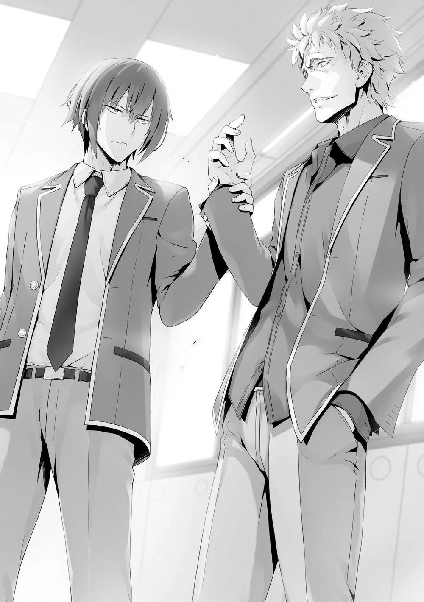
En ese ambiente espeluznante, ambos se miraron de manera inflexible.
—Oye, oye, ¿qué quieres decir con eso?
—Sospecho que fuiste tú quien hizo que expulsaran a Hatano. No es el tipo de estudiante que rompería fácilmente las reglas de la escuela.
—¿No son los insignificantes los que implosionan por miedo a la expulsión?
—Recuerdo claramente la expresión de su cara cuando lo expulsaron. Fue engañado por alguien.
—Y, ¿dices que fui yo?
—¿Quién más podría ser?
Aunque Housen iba a retroceder, la tensión volvió a saltar.
—Cálmense, los dos. Si empiezan una pelea aquí, estarán haciendo exactamente lo que Kazuomi quiere.
—Takahashi-kun tiene razón. Lo más importante ahora es centrarse en el examen de la isla deshabitada.
—Ah, claro, podríamos agruparnos con las otras clases en el próximo examen especial.
Housen dijo eso como si no lo hubiera pensado hasta ahora.
—¿Y qué? Como te has negado a trabajar con las otras clases, esto no tiene nada que ver contigo ¿verdad?
—Si me suplicas sinceramente, también podría trabajar contigo.
—No seas ridículo. No me agruparía contigo ni aunque fueras la última persona que quedara.
—Qué frío.
Utomiya soltó lentamente el brazo de Housen. Yagami, que estaba mirando, aprovechó este momento para hablar.
—Estamos perdiendo el tiempo, ¿empezamos?
—¿Empezar? ¿Quién dijo que me uniría a su pequeña conversación?
—¿Entonces por qué estás aquí? ¿Simplemente para pasar el tiempo?
—¿Y si digo que sí?
—No me lo creo. No eres tan estúpido.
Enfrentándose a Housen, Yagami respondió sin inmutarse con una sonrisa.
—Aunque el examen de supervivencia en la isla deshabitada es algo fuera de lo común, los de 2º y 3º año ya lo han experimentado una vez. Nosotros, los de 1er año, tenemos que desafiar esta prueba contra una probabilidad abrumadora.
—Pero nos han dado una ventaja, ¿verdad?
En comparación con el optimista Takahashi, Yagami continuó de manera apacible.
—Eso no cambia el hecho de que los de segundo y tercer año tienen la ventaja de edad sobre nosotros en términos de capacidad académica y física.
Así que, si no podemos cooperar entre nosotros, podríamos convertirnos en comida para los de arriba, ¿verdad?
Yagami subrayó que, por eso, la cooperación entre las cuatro clases era esencial.
—Tu actitud dócil me está molestando, Yagami. No importa si son de segundo o tercer año, tengo la confianza de aplastarlos a todos.
—Por supuesto, hay algunos estudiantes individualmente sobresalientes.
Sin embargo, no puedes negar el hecho de que somos más débiles en términos de habilidad general. No todo el mundo tiene tanta suerte como tú, Housen-kun.
La actitud amable de Yagami y sus elogios a Housen fue lo que mantuvo la conversación.
—Por eso... creo que es necesario que unamos fuerzas y al menos formemos un fuerte 'grupo de 4' en nuestro año. Tal como dijo Housen-kun, formar un grupo con estudiantes que no pierdan ante los de 2º y 3º año.
—En otras palabras, ¿no vamos a competir entre nosotros por los Puntos de Clase en este examen especial?
—Como las reglas de este examen dificultan la cooperación dentro del mismo año, es difícil que los de 2º y 3º año que no tienen mucho tiempo desaprovechen esta oportunidad para ganar Puntos de Clase. Por otro lado, a nosotros los de 1º año nos quedan más de dos años, por lo que simplemente deberíamos renunciar a los Puntos de Clase.
De la Clase A a la D, la diferencia entre los Puntos de Clase, incluso en su máxima expresión, era sólo de unos 300 puntos. En comparación con Yagami, que pensaba que no había razón para el pánico, Utomiya parecía pensar de forma diferente, y frunció el ceño.
—Los beneficios de cooperar con las otras clases son muy pequeños. No tiene sentido. Sólo estamos renunciando a los Puntos de Clase.
—Perder Puntos de Clase no será nuestra única preocupación si acabamos convirtiéndonos en comida para los de arriba.
—Si vamos con esa estrategia entonces no seremos capaces de marcar ninguna diferencia en nuestra actual clasificación de clase.
Utomiya enfatizó que, si iban a pelear, entonces no había forma de evitarlo.
—Ah, espera un momento. Tengo una pregunta sobre lo que dijo Takuya.
¿Por qué hacer sólo un equipo? Los tres mejores equipos obtendrán Puntos de Clase, ¿verdad? Si además tenemos en cuenta que podríamos fusionarnos en grupos grandes durante el examen oficial, ¿no es mejor formar muchos más equipos fuertes?
Yagami respondió inmediatamente a la pregunta de Takahashi.
—Por supuesto, tienes razón. Sin embargo, si queremos crear muchos grupos fuertes desde el principio, tendremos que tener en cuenta el equilibrio de
cada equipo. Nuestros oponentes son estudiantes mayores, y no serán fáciles de vencer. Por eso debemos centrarnos en formar un equipo de 4 más fuerte que pueda conseguir el primer puesto. Además, parece que será difícil formar grupos grandes libremente durante el examen oficial, e incluso si los estudiantes mayores cooperan entre sí, sólo pueden elegir a 3 personas de 3 clases para trabajar juntos.
Takahashi, tras escuchar la respuesta de Yagami, se dio cuenta de lo que quería decir.
—Así que mientras consigamos el primer puesto, no importa lo que sacrifiquemos para conseguirlo.
—Todavía podemos formar un grupo realmente fuerte si ignoramos a Housen-kun y cooperamos con sólo tres clases, pero si hacemos eso, estaremos en el mismo campo de juego que los otros años. Por eso espero firmemente que las cuatro clases cooperen, no sólo para seleccionar la fuerza de las clases, sino también porque creo que es esencial que nuestra clase tenga un sentido de unidad para luchar juntos en este examen. Sólo a nosotros, los de primer año, se nos permite formar "un grupo pequeño de hasta 4 miembros", así que deberíamos aprovechar esta regla. Sería un desperdicio tirar por la borda la ventaja que nos han dado.
Si la clase D fuese condenada al ostracismo, por supuesto tomará medidas para impedir que las otras clases ganen el primer lugar. En cuyo caso, es obvio que utilizarán cualquier medio para impedir que los demás de 1er año ganen.
Yagami creía que, dado que las reglas permiten la cooperación entre las cuatro clases, debían aspirar a ese ideal. Y entonces, Yagami se dirigió a Housen una vez más.
—Entiendo perfectamente que tú tienes la capacidad de competir solo con los alumnos de las clases superiores, por eso espero que puedas echarnos una mano.
Yagami dijo que la cooperación de las cuatro clases era necesaria, sin importar qué, pero Utomiya aún sospechaba de Housen. No creía que Housen estuviera
de acuerdo, ya que se había negado a toda negociación desde hacía más de dos semanas.
—De acuerdo, te ayudaré.
Sin embargo, después de todo este tiempo, Housen aceptó de buen grado la propuesta de Yagami.
—... ¿Qué intentas hacer? Housen.
—¿Qué estoy tratando de hacer? ¿No querían mi ayuda? ¿No estoy escuchando sus lindos deseos?
—Entonces, dinos tus condiciones.
Al ver lo rápido que Housen cambió de actitud, Yagami no quiso perder más tiempo así que instó a Housen a continuar.
—Las dos plazas restantes del equipo más fuerte deben estar reservadas para la clase D. Eso es imprescindible.
—¿Qué?
Utomiya, naturalmente, mostró su disgusto hacia la propuesta de Housen que sólo beneficiaría a su clase.
—¿Pero qué pasa si no podemos formar grupos grandes a voluntad?
—¿No lo acabo de decir? Mi condición es que dos estudiantes de la clase D deben estar en el grupo.
—Ya veo. Si no podemos agruparnos con los dos estudiantes de la clase D
una vez que comience el examen, entonces lo haríamos con nosotros cuatro.
—Después de todo, si ya has preparado el grupo pequeño más fuerte de cuatro, el hecho de que se fusionen o no en el grupo grande no debería afectar al resultado del examen, ¿verdad?
—Tienes que estar bromeando, Housen.
—No estoy bromeando. Si no te gusta, vete a la mierda.
—Bastardo...
Utomiya estaba a punto de enfrentarse a Housen por sus desmesuradas exigencias. Pero, Yagami se interpuso entre ellos, como si estuviera saltando dentro de una fila.
—Cálmate, Utomiya-kun, me parece bien esta condición.
—¿Vas a dar todos los beneficios a la clase D así como así?
—Lo más importante para nosotros, los de 1er año, es trabajar juntos como un equipo y no perder con los otros años.
—Si dejamos que se aproveche de nosotros ahora, seguro que lo volverá a hacer.
—Entonces, ¿crees que el resultado será diferente si abandonamos a la clase D de Housen-kun aquí?
—Eso...
—Lo más importante en este examen es que ganemos los de 1er año. Si lo hacemos, nada más puede considerarse una pérdida.
—Estoy de acuerdo. Entiendo cómo te sientes, Riku, pero primero, debemos hacer que los de 1er año trabajen juntos.
Aunque Utomiya puso mala cara, finalmente cedió, ante la petición de Yagami y la persuasión de Takahashi.
—Housen, no más exigencias. ¿De acuerdo?
Housen no dio ninguna respuesta a Utomiya. Le dio la espalda como si señalara el fin de su conversación.
—Por último, hay una cosa más que quiero decir. Es necesario que los de primer año trabajemos juntos como un equipo. Para evitar cualquier disputa entre nosotros, quiero redistribuir las tarjetas con efectos gratificantes para aprovecharlas al máximo. También es importante dar a los estudiantes que carecen de habilidades las tarjetas reducción a la mitad y colocarlos en el mismo grupo. ¿Te parece bien, Housen-kun?
—Haz lo que quieras.
Housen se marchó inmediatamente sin rechistar. Mientras los tres lo veían salir, Takahashi le dijo a Yagami.
—Por cierto, Takuya, ¿a quién piensas elegir de la clase B?
—Al menos, creo que todos los que participamos aquí podemos estar en el equipo más fuerte, por supuesto eso incluye a Housen-kun. ¿Verdad?
Yagami miró a Takahashi y a Utomiya, así como a la figura de Housen que se retiraba con una mirada apacible pero aguda.
—Incluso si su fuerza es real, sería un error dejarle unirse al grupo. Ese tipo...
—Bueno, decidamos cuidadosamente eso más tarde. Por ahora, ¿no es suficiente que estemos en la misma página?
—... Entiendo.
—Si trabajamos juntos, definitivamente podemos obtener el primer lugar.
Aspiremos primero a eso.
Aunque Utomiya era reacio, aceptó las palabras de Yagami, tras lo cual todos se separaron.
PARTE 1
Al día siguiente, después de las clases, estaba en la cafetería del centro comercial Keyaki.
—El sonido del tic-tac del segundero dando vueltas, y vueltas, y vueltas es tan molesto. No me gustan este tipo de relojes.
Mientras Amasawa miraba el reloj de Housen en su brazo izquierdo, maldecía a Housen, que estaba sentado frente a ella.
—Cierra la boca. ¿No sabes cuánto vale esto?
—¿Vale? ¿Vale mucho? No tengo tiempo para ocuparme de cosas que odio.
—¿Eh? Esto es exactamente por lo que las chicas son tan aburridas.
Después de decir eso con una risa, Housen tocó su reloj.
—Tú... Bueno, no importa. Entonces, ¿qué quieres de mí?
—Te llamé por el próximo examen de la isla deshabitada. Forma equipo conmigo, Amasawa.
—Quieres que te ayude de nuevo, ¿eh? ¿Y en la isla deshabitada? ¿Estás pensando en hacer algo vulgar?
—¿Eh?
Aunque Housen frunció el ceño y miró fijamente a Amasawa, ésta correspondió sin miedo con una sonrisa diabólica. Amasawa bajó lentamente sus piernas cruzadas y luego las abrió en silencio.
—¿Quieres ver mis panties? Puedes echarles un vistazo por debajo de la mesa, ¿sí?
Si uno se ponía a gatas, podría ver entre esas piernas. Ante esta tentación, Housen apoyó el codo derecho en la mesa y se inclinó hacia delante.
—¿Crees que no pondría mis manos sobre una mujer?
—En absoluto. No te preocupes, creo que eres el tipo de hombre que golpearía a una chica y actuaría como si nada hubiera pasado.
—Entonces deja de soltar tus tonterías. Es una pérdida de tiempo.
—Una pérdida de tiempo, ¿eh? Entonces déjame escucharlo primero. Tu plan. ¿Por qué me invitaste?
—Es porque fuiste audaz. En el asunto de expulsar a Ayanokouji, no dudaste en absoluto.
—Bueno, ¿es eso cierto? Los otros tipos o bien sabían de la recompensa y no hicieron nada, o querían hacer algo, pero se rindieron a la mitad. 20 millones
de puntos es una gran cantidad, ¿no es normal ir con todo? —Amasawa dijo eso sin mostrar ningún signo de culpabilidad—. Entonces, ¿cuál es mi recompensa si me agrupo contigo? No soy barata, ¿Ok?
Justo después de que Amasawa preguntara por lo que podía conseguir, una voz seria llegó desde atrás.
—Deberíamos estar en igualdad de condiciones. ¿No lo he dicho ya antes?
Era Nanase, que llegó un poco tarde.
—¿Igualdad? Tienes una cara bonita, pero tus palabras son muy amargas.
¿Así que este atrevimiento es lo que le gusta a Housen-kun de ti?
Después de que Nanase se sentara en la mesa, los tres habían llegado.
—Ya veo. Así que el grupo que Housen-kun pensaba formar éramos nosotros tres. ¿Y la cuarta persona?
—Eso no es necesario. El ganador de este examen de la isla deshabitada no será un grupo de 2º ni de 3º año. Seremos nosotros tres.
—Qué presumido eres, ¿no? Pero, me parece que hay un montón de formidables estudiantes de alto nivel en comparación con los de primer año...
—¿Y qué? Los aplastaré a todos.
—Bueno, aunque seas el más fuerte, Housen-kun... ¿No acordaron los de primer año trabajar juntos las cuatro clases? Si estamos hablando de la fuerza principal de la clase D, no hay duda de que ustedes dos serán considerados como tal, ¿no?
—Eso lo decido yo, que estoy a cargo de la Clase D. ¿Entendido?
—Así que eso significa que vas a enviar abiertamente a los debiluchos para representar a las fuerzas principales. Todas las otras clases se van a enojar.
—Depende de cuál sea el criterio de la fuerza principal. Mientras enviemos estudiantes con altas capacidades académicas o físicas, no causará demasiada
disputa. Además, los problemas definitivamente aumentarán si Housen-kun se une al grupo más fuerte.
—Bueno, el trabajo en equipo seguramente no será un problema si Housen-kun se une. En ese sentido, excluirlo del grupo es una opción más segura. De todos modos, volvamos al tema. ¿Cuánto me darías?
—No hay puntos para ti. Como dije antes, estás en igualdad de condiciones con nosotros. Por supuesto, repartiremos a partes iguales los puntos privados extra que nuestra clase obtenga de las recompensas.
Era como si Nanase le preguntara a Amasawa "¿No es suficiente para que estés satisfecha?".
—Pero, esa recompensa no se alineará con mi contribución, ¿no lo crees?
Ya sea el examen de la isla deshabitada o cualquier otra cosa, estoy segura de que podré contribuir al máximo. Este examen parece requerir bastante fuerza física. Nanase-chan, tan linda y encantadora como eres, ¿puedes seguir mi ritmo?
—¿Quieres probarlo ahora?
En respuesta a su provocación, Nanase también respondió con una provocación.
Amasawa dirigió su atención a Housen por un momento, luego sin previo aviso extendió su mano repentinamente hacia la cara de Nanase y quiso abofetearla para ponerla nerviosa. Pero Nanase agarró su brazo, que fue rápidamente extendido sin dudarlo.
—Tienes agallas, ¿eh? Intentándolo aquí.
—Woah. Maldita sea, eres muy buena, ¿no? Me encantan las chicas fuertes.
—Tú tampoco estás mal.
—¿Tal vez? ¿Quieres probar de nuevo?
Una se reía, la otra tenía la cara de piedra.
El tiempo pasó mientras probaban la fuerza de la otra.
—Nanase y yo, y tú. Formaremos un grupo de tres. ¿De acuerdo?
—Aunque ahora sé que Nanase-chan tiene una habilidad considerable, todavía no creo que ella y yo estemos en igualdad de condiciones.
—¿Por qué? ¿Porque dos de los tres somos de la clase D?
—Eso no me importa. Parece que los puntos privados se van a repartir por igual, pero.... son ustedes los que pidieron mi ayuda, así que si no consigo un extra es un poco...
Después de decir eso, Amasawa cerró el puño con la mano izquierda y luego hizo el gesto de pedir una propina: pellizcar el pulgar y el índice y luego frotarlos.
—Ya que intentas sobornarme, ¿no es natural que aumente mi precio?
—Qué actitud tan arrogante. Ya sea Nanase o tú, ambas mujeres son más audaces que Yagami y Takahashi.
—¿No lo sabes? Hoy en día, las chicas son las más fuertes.
—Bien, escucharé lo que tienes que decir. ¿Qué más quieres, además de las recompensas del grupo?
—El primer puesto, por supuesto, pero eso no es lo único importante...
Amasawa cambió la posición de su mano izquierda, y levantó sólo el pulgar hacia su cuello.
Luego, lo deslizó lentamente de derecha a izquierda...
—Debo recibir todos los puntos de la recompensa por expulsar a Ayanokouji-senpai. Esa es mi condición para formar un grupo contigo.
—Hah, estás exigiendo mucho, ¿eh? Esa no es una condición a la que pueda acceder fácilmente.
—¿Así que vas a decir que no? Sin embargo, ¿qué harás sin mí? Si no tienes un camarada aparte de Nanase-chan en el que puedas confiar, ¿no lo pasarás mal durante este examen especial?
Al igual que Amasawa había dicho antes, Housen ya había hecho enemigos por todos lados. Además, como las cuatro clases ya habían decidido trabajar juntas, si creaba un grupo separado, ningún otro estudiante le ayudaría, aparte de una persona extraña como Amasawa.
—Además, si me agrupo con Housen-kun, estaré todavía más aislada en la clase A de lo que estoy ahora, así que ¿no es natural que no diga "sí" si no obtengo las recompensas correspondientes que compensen esa pérdida?
Las miradas de Housen y Amasawa chocaron entre sí.
—Es cierto que, si me das la recompensa por conseguir su expulsión, no obtendrás dinero, pero la reputación por conseguir la expulsión de Ayanokouji-senpai te será entregada íntegramente a ti Housen-kun. ¿Es suficiente para que aceptes la condición?
—No hay necesidad de aceptar esta condición. Considera el futuro si la Clase A obtiene 20 millones de puntos extra...
—Cállate, Nanase.
Interrumpiendo el consejo de Nanase, Housen siguió mirando fijamente a Amasawa.
—La recompensa es tuya.
—Gracias. El hecho de que no seas un tacaño es simplemente brillante.
Tras decir eso, Amasawa se levantó enérgicamente de su asiento.
—Por favor, cuida de mí durante el examen oficial.
Ahora que la negociación había terminado, Amasawa juzgó que no había necesidad de quedarse y se fue sin dudarlo.
—¿Estás seguro de esto?
—Sí.
—Está bien, ya que eres tú quien toma la decisión. ¿Pero estás seguro de que está bien confiar en Amasawa-san? Creo que es del tipo que traicionaría a sus compañeros sin pensarlo dos veces.
—¿Confiar? No des por sentado que confío en ella. Eso va para ti también, no confío en ninguna de ustedes.
—¿Entonces por qué decidiste agruparte con ella?
—Porque ella es diferente al resto de la basura. Hay partes de ella que no puedo ver, al igual que tú.
—Ya veo, eso puede ser cierto. Aun así, 20 millones de puntos es demasiado.
—De todas formas, es sólo un acuerdo verbal. Mientras quede claro que yo soy el que consigue expulsar a Ayanokouji, seré el que reciba los puntos. No me importa si luego llora por ello".
Housen expresó que no tenía intención de cumplir su promesa desde el principio.
—Realmente eres una persona terrible.
—Ya sea Ayanokouji, Ryuuen, o los demás, quienquiera que se me acerque con sus colmillos, los aplastaré a todos. Estoy harto de que me atasquen las reglas basura de esta escuela.
Housen estaba tan contento que no pudo evitar reírse a carcajadas.
PARTE 2
Las vacaciones de verano se acercaban pronto, y ya era el 6 de julio. Todo el grupo, aparte de Akito, que se fue a su club, se reunió junto a mi asiento, cerca de la puerta del aula. Esto se debía a que habíamos acordado ir juntos a la habitación de Keisei después.
—Ayanokouji-kun, ¿puedo hablar contigo un segundo?
Mientras salíamos del aula, Kushida me llamó.
—¿Qué pasa?
Dado que el número de veces que Kushida había venido a hablar conmigo había disminuido últimamente, esta repentina llamada fue un poco sorprendente.
Aunque tenía que darle mis puntos mensualmente en base a nuestro contrato, era simplemente un intercambio monetario. Dado que todos los alumnos de la clase reciben la misma cantidad de puntos privados, no era necesario que ella lo comprobara dos veces.
—En realidad, un estudiante de primer año me dijo que quería reunirse contigo, Ayanokouji-kun... ¿Es un mal momento?
Después de una mirada apenada a Haruka y a los demás del grupo, Kushida continuó.
—Me pidieron que organizara una reunión contigo. Creo que probablemente tardará una hora.
—¿Qué, qué? Kiyopon, ¿no me digas que una chica menor se va a confesar?
Airi entró en pánico al escuchar la broma de Haruka.
—¡¿Eh-ehhh!? ¡¿Es eso cierto?!
—Si ese es el caso, no creo que podamos permitir que se encuentren.
Ella es la que sacó el tema arbitrariamente, pero ahora también decide rápidamente que no se me permite ir.
—... ¿Es ese el caso?
Por si acaso, decidí consultar primero con Kushida.
—¿Eh? Ah, eso... En realidad, es un chico que quiere conocerte... Lo siento.
Kushida se disculpó con una expresión preocupada. No, no necesitaba disculparse por eso en absoluto. Aunque no pensaba que fuera algo así para empezar, me sentí aliviado.
—¿No es genial? Es bueno comunicarse con los de primer año, ¿verdad?
—Sí. Después de todo, nuestro grupo no es particularmente bueno en las relaciones interpersonales, así que no sería malo que Kiyotaka pudiera ganar algunos conocidos en el 1er año.
Dejando de lado por ahora el objetivo del estudiante de primer año, ambos consideraron que debía presentarme a la reunión. Airi también se sintió aliviada después de escuchar que no era una confesión, y me despidió felizmente, así que no tenía ninguna razón en particular para negarme.
—De acuerdo. ¿Qué debo hacer?
—¡Gracias! Bueno, déjame decirle que dijiste que sí.
Kushida sacó su teléfono y le hizo una llamada.
—Entonces nos iremos ahora. Hasta luego.
Tras una breve charla, los miembros del grupo Ayanokouji volvieron al dormitorio.
—Lo siento por esto.
Parece que todavía no ha contestado al teléfono, Kushida se disculpó conmigo de nuevo mientras sostenía su teléfono en la oreja.
—No es un gran problema. Nadie del grupo se quejará por ello.
El chico de primer año contestó al teléfono poco después.
—Ah, ¿hola? Ayanokouji-kun dijo que podías reunirte con él ahora. Ajá, ah,
¿es así? Entonces esperaremos aquí.
Kushida colgó en menos de diez segundos.
—Parece que ya se dirige hacia aquí, así que esperemos aquí, para no perdernos, ¿ok?
El estudiante de primer año que quería conocerme parecía estar ya en camino.
—Entonces, ¿parece que ya estás en buenos términos con los de 1er año?
—¿Ehhh? Ya estamos en julio, ha pasado mucho tiempo...
—... Es cierto.
Han pasado más de tres meses desde que los de 1er año se incorporaron a la escuela. Si se mira por la ventana del pasillo, se puede ver el sol muy elevado quemando el suelo. Pronto será la hora de que las cigarras empiecen a cantar sus tonadas. Para mí, que era socialmente torpe, sólo eran tres meses, pero para Kushida, eso era tiempo más que suficiente.
—Ayanokouji-kun, tú también has hecho ya amistad con algunos de los de primer año, ¿verdad?
Desde el punto de vista de Kushida, eso debería ser algo natural, pero no fue así para mí.
—Todavía no hay nadie a quien pueda llamar amigo.
—Ya veo... Bueno... No hay necesidad de apresurarse. Es sólo el comienzo del año.
Kushida contestó con palabras consideradas y cariñosas, pero sonaron huecas.
Aunque sí he hablado con algunos de primer año, mi relación con ellos no ha llegado al punto de contactarnos en privado.
La conversación se detuvo cuando el ambiente se volvió incómodo. Mientras pensaba en qué tema sacar a continuación con Kushida, el de 1er año apareció en el pasillo por el que entraba y salía la gente.
—Kushida-senpai.
Apareciendo desde la esquina estaba Takuya Yagami, que se había graduado en la misma secundaria que Horikita y Kushida. Viendo la aparición de Yagami como una oportunidad para disipar el incómodo ambiente, Kushida dejó escapar una sonrisa.
—Yagami-kun es quien quería conocerte, Ayanokouji-kun.
—Encantado de conocerte, Ayanokouji-senpai. Muchas gracias por tomarte tu tiempo para verme hoy.
Como era un alumno de 1er año que se conectó conmigo a través de Kushida, tenía una idea aproximada de quién era.
—Creo que estás en.… la clase 1-B, ¿verdad?
—Sí. Soy Takuya Yagami de la clase 1-B.
Como uno de los espectadores en el tumulto que ocurrió con los de primero, vi a Yagami entonces, pero nunca hablé con él hasta ahora. Por fin tenemos nuestra primera conversación antes de que llegue el verano.
He oído que poco a poco se ha hecho conocido como el líder de la clase 1-B, pero ¿hasta dónde llegaba exactamente su influencia? Con su buena primera impresión y su aspecto simpático, junto con su alta capacidad académica, parecía ser bastante popular.
—Estar de pie es algo... para el lugar, ¿qué tal si vamos a mi habitación a hablar? Resulta que el raro té negro que pedí ya llegó. Aunque tarda un poco en hacerse, ¡es muy delicioso!
Yagami sugirió que, si me parece bien, lo pruebe. Como no suelo beber té negro, me interesó un poco. Pero entonces puede que no seamos capaces de mantener la reunión durante una hora.
—Ah, lo siento Yagami-kun, pero en realidad, Ayanokouji-kun tiene planes para reunirse con sus amigos después de esto, así que ¿podemos tratar de mantener esto dentro de una hora?
Kushida se dio cuenta de que podría llevar algo de tiempo, así que rápidamente rechazó la propuesta de Yagami por mí.
—Ya veo, está bien. Entonces hablemos en la cafetería del centro comercial Keyaki.
Aunque un poco decepcionado, Yagami aceptó de buena gana después de entender mi situación.
—Entonces, vamos Ayanokouji-kun.
Asentí ligeramente, y decidí ir al centro comercial Keyaki con Kushida y Yagami.
—Por cierto, el examen especial en la isla deshabitada está a punto de comenzar. Escuché que ustedes tuvieron el mismo examen especial el año pasado.
—Sí, fue muy duro.
—¿Podrían hablarme de las reglas y de lo que pasó? Ya que no hemos experimentado el examen como 1º año, queremos al menos reunir algo de información de antemano.
—Está bien... Pero no sé si servirá de algo. Parece que las reglas de este año son completamente diferentes a las del año pasado.
—Lo sé. El examen de la isla deshabitada que hicieron los senpais de 3er año en su momento también parecía ser diferente al examen que hiciste tú, Kushida-senpai.
—Ah sí, ahora que lo mencionas, los de 3er año también hicieron el examen de la isla deshabitada.
—Al igual que ustedes, también lo hicieron en 1er año. En el pasado, parece que el examen de la isla deshabitada sólo se realizaba una vez durante el tiempo que uno estaba en la escuela- ¿Este año es una excepción, o esa regla ha cambiado?
Daba la impresión de que Yagami tenía mucha más información que nosotros.
—¿Te sorprende? Que tenga información sobre los de tercer año.
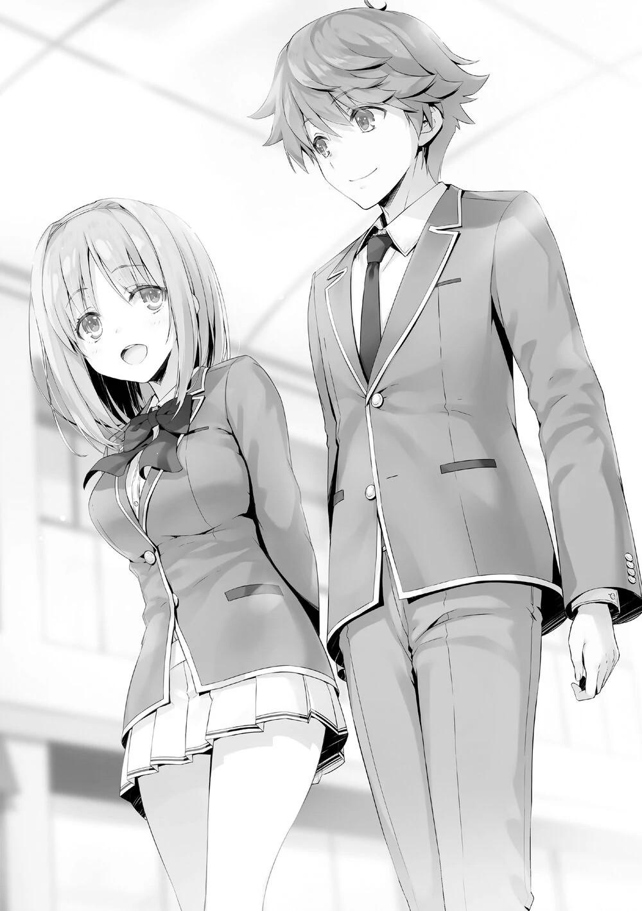
Me preguntó Yagami, ya que yo había estado escuchando en silencio todo este tiempo.
—Es porque me uní al consejo estudiantil. Aproveché para preguntarle al presidente Nagumo sobre el examen de supervivencia en la isla deshabitada que se celebró hace dos años, y me lo contó amablemente. En aquella ocasión, se dividieron en grupos de cuatro dentro de la clase, y compitieron un total de 12
grupos.
Las reglas de su examen especial eran diferentes de las que nos habían dado el año pasado.
Podemos decir que, salvo algunas excepciones, básicamente no habrá exámenes especiales que sean exactamente iguales.
—¿Cómo pasaron los de 2º año su tiempo en la isla deshabitada? Tal vez pueda aprender de eso.
Incluso si Kushida y yo hubiéramos mantenido a Yagami en la oscuridad, alguien más podría decírselo, así que no había necesidad de ocultárselo a propósito.
Además, Kushida se lo diría de todos modos.
Como era de esperar, Kushida empezó a explicarle con detalle el examen de la isla deshabitada del año pasado.
Escuché en silencio mientras los seguía.
PARTE 3
Resultó que llegamos al centro comercial Keyaki justo cuando terminamos la charla sobre el examen de la isla deshabitada anterior.
Teníamos planeado ir a la cafetería, pero ocurrió algo inesperado.
—Hay mucha gente.
La cafetería ya estaba llena, y había todavía más estudiantes en la entrada esperando un asiento.
—¿Qué hacemos? ¿Vamos al segundo piso?
—Un momento.
Yagami sacó su teléfono y empezó a manejarlo.
—Acabo de comprobarlo con un amigo, y la cafetería de la segunda planta está igual de llena. Ya que tenemos que esperar de cualquier manera, ¿por qué no esperar aquí?
Según parece, su amigo ya estaba en la cafetería, así que se puso en contacto con él enseguida. Una decisión rápida para no perder tiempo. Cuando estuvimos de acuerdo con su propuesta, Yagami notó que un estudiante se acercaba por detrás. Si no nos apresurábamos, tendríamos uno más en la cola. Así que, mientras sostenía su teléfono en la mano izquierda y un bolígrafo en la otra, escribió su nombre y el número de personas que había traído con una hermosa caligrafía en la hoja de reservación frente a la cafetería. Era especialmente llamativa cuando se comparaba con la escritura descuidada de otros estudiantes que estaban por encima de él.
—Vaya, tu letra es realmente buena, Yagami-kun~.
Era natural que Kushida hiciera semejante cumplido al verlo. Yagami, al ser elogiado, sonrió felizmente. Y entonces, en consecuencia, los tres nos dirigimos a las sillas de espera que se habían colocado fuera de la tienda.
—Mi abuelo me dijo que, aunque no sea bueno en los estudios, debería ser capaz de escribir bien.
—¿Tu abuelo?
—Sí, porque mi abuelo es profesor de caligrafía.
—Eso es increíble. No tengo mucha confianza en mi escritura.
A pesar de lo que decía, no estaba nada mal, ya que recordaba haberla visto algunas veces. Aunque no era tan elegante como la refinada letra de Yagami, recuerdo que era un estilo redondo comúnmente usado por las chicas, lo cual era bastante agradable.
Se diría que Yagami es un estudiante que no hece gala de sus habilidades en absoluto. A pesar de que su abuelo mencionó algo sobre que era malo en los estudios, obtuvo un sobresaliente en la evaluación de la OAA por su capacidad académica. Es un estudiante de honor que no es odioso, y me da la misma sensación que Yousuke. Al cabo de un rato, quedó disponible una mesa de cuatro, y nos sentamos después de ordenar.
—En realidad- Podrías pensar, por qué estoy hablando contigo después de todo este tiempo, pero hay algo que quiero decirte, Ayanokouji-senpai. Hay un examen especial del que sólo unos pocos estudiantes de primer año han sido informados. Tú ya lo sabes, ¿verdad?
Era evidente que Kushida no había recibido ninguna explicación de antemano, y escuchó a Yagami con una expresión de estupefacción. Este examen especial limitado era, por supuesto, aquel en el que la persona que consiguiera que me expulsaran recibiría una recompensa de 20 millones de puntos. Por su tono, parecía que tenía conocimiento de primera mano de este hecho, en lugar de tener un conocimiento superficial por un rumor. Decidí ser prudente al respecto y me limité a esperar. Ni confirmando ni negando, simplemente esperé a que Yagami continuara, y él asintió con la cabeza, en señal de comprensión.
—En abril, recibí una notificación al respecto. Sin embargo, como no me interesaba que me pagaran por tenderle una trampa a la gente, decidí no participar.
Es cierto, Yagami no me había hecho nada. Aunque no habría sido sorprendente que me hubiera prestado un poco de atención al enterarse de la recompensa, pero daba la impresión de que no había sido consciente de mi existencia hasta hace poco.
—¿Por qué me lo dices ahora?
—Hace poco me enteré de que Housen-kun fracasó en su primer intento.
Sin embargo, la mano izquierda de Ayanokouji-senpai se lesionó en el proceso.
No me habría sorprendido si hubiera hecho algo inhumano, pero esto fue más allá de mis expectativas.
—Bueno, realmente no se puede negar.
La mirada de Kushida se alternaba entre Yagami y yo, escuchando atentamente, tratando desesperadamente de entender lo que estaba pasando. Parecía que Yagami iba a contarme todo.
—Hay otra razón que me ha llevado a decidirme a contarte todo esto.
Después de decir eso, Yagami hizo una pausa por un momento antes de continuar.
—En aras de proteger a los estudiantes de primer año, iba a ser un completo espectador. Sin embargo, si no hago nada al respecto, Ayanokouji-senpai... dependiendo de la situación, existe la posibilidad de que la situación también afecte a tu compañera de clase, Kushida-senpai. Por eso le he pedido a Kushida-senpai que me ayude.
Kushida levantó su mano izquierda avergonzada al escuchar eso, y preguntó.
—Disculpen, no tengo idea de lo que están hablando...
—¿Puedo seguir hablando de esta manera?
—No tengo derecho a detenerte.
Yagami le pidió que viniera con él porque estaba preocupado por ella. Incluso si le hubiera impedido decirlo aquí, Yagami se lo habría dicho más tarde sin que yo estuviera presente, así que no tenía sentido.
—Entonces empezaré desde el principio para que Ayanokouji-senpai conozca toda la historia. Todo comenzó cuando el presidente Nagumo del consejo estudiantil se puso en contacto conmigo. Dio instrucciones de que se enviaran uno o dos representantes de cada clase y se reunieran en secreto en la sala del consejo estudiantil. De hecho, nos convocaron allí poco después de entrar en la escuela.
La palabra clave "consejo estudiantil" salió de la boca de Yagami.
—Los estudiantes de primer año allí eran Takahashi Osamu-kun e Ishigami Kyou-kun de la clase A, yo de la clase B, Utomiya Riku-kun de la clase C, y Housen Kazuomi-kun y Nanase Tsubasa-san de la clase D. Un total de 6
estudiantes.
Si lo que decía era cierto, era una información valiosa. Esas dos personas de la clase 1-C no estaban entablando conversación conmigo por casualidad. Sin embargo, lo más intrigante es que el nombre de Amasawa no aparecía en esa lista.
—El examen especial es para que el estudiante de 2º año Ayanokouji-senpai sea expulsado de la escuela.
—¡¿Eh?! ¿Para que expulsen a Ayanokouji-kun?
Yagami asintió a la sorprendida Kushida y continuó. Por la expresión de Kushida, pude deducir que no tenía ningún conocimiento previo sobre este asunto.
—La fecha límite es el comienzo del segundo semestre, y se puede utilizar cualquier medio. Además, no se nos permitió decir a nadie lo del examen especial. Sin embargo, como Utomiya y yo éramos los únicos participantes de nuestras clases, se nos permitía contárselo a una persona de nuestras clases para que fuera justo, pero yo no se lo conté a nadie. Sin embargo, Utomiya podría habérselo contado a alguien.
En otras palabras, 6 o 7 personas de su grado sabían de este examen especial.
—El presidente del consejo estudiantil, Nagumo-senpai, nos dijo a los seis que le daría 20 millones de puntos al estudiante que hiciera que lo expulsaran.
—E-Eso son muchos puntos... ¿Ese tipo de cosas están permitidas?
El examen fue una sorpresa para Kushida quien se enteró de ello. Hasta ahora, me he estado preguntando cuánto debería confiar en Yagami, pero no parecía estar mintiendo. Sin embargo, si sus mentiras se revelaran, eso llevaría directamente a la ruptura de mi relación con él. Y si los intereses de nuestra Clase 2-D se pusieran en peligro, Kushida también se vería afectada.
—No es de extrañar que te sorprendas, Kushida-senpai. En abril, no teníamos un conocimiento profundo de la escuela, pero ahora está muy claro.
Este es un examen especial inusual. Eso es lo que he juzgado que es, y por eso he concertado una cita aquí.
La explicación ha llegado más o menos a su fin, y Yagami respiró profundamente y cogió su taza de té. Tras conocer la recompensa de 20
millones de puntos por mi cabeza, Kushida le hizo una pregunta a Yagami.
—¿No es un poco extraño que el presidente del consejo estudiantil esté llevando a cabo este examen especial por su cuenta...?
—Sí. Yo también creo que el problema está en cómo lo he expresado. Lo estoy llamando examen especial, pero sería más fácil de entender si lo piensas como un reto que el presidente Nagumo se inventó por su cuenta y se lo dio a los estudiantes de primer año.
Existía la posibilidad de que Nagumo estuviera involucrado en este asunto. Esto también le da a Horikita una dirección clara para proceder. Sin embargo, justo cuando pensaba que no revelaría fácilmente su participación en esto, fue filtrado por alguien inesperado.
—¿Por qué es Ayanokouji-kun? ¿No hay más estudiantes aparte de él?
—Hasta donde yo sé, es sólo Ayanokouji-senpai. En cuanto a por qué es él, no creo que haya una razón específica detrás de eso. El presidente Nagumo dijo que el estudiante fue seleccionado al azar entre los de 2º año. Fue un simple juego de azar, 1 entre 157.
Para Yagami, que no conocía los antecedentes de Nagumo, esto no era algo que pudiera entender. Ni siquiera dudó de que fuera una selección al azar. Por supuesto, las posibilidades de que fuera seleccionado al azar no eran nulas.
Aunque a juzgar por la situación actual, eso era imposible.
Sin embargo, ¿estaría Nagumo dispuesto a gastar 20 millones sólo para que me expulsaran? Por nuestras interacciones hasta ahora, no creía que fuera alguien que hiciera algo que llegara a tal extremo. No, en realidad, él haría cualquier cosa una vez que lo decidiera, pero, su evaluación de mí no debería ser tan alta.
—Aunque sea el presidente del consejo estudiantil el que lleve a cabo este examen especial por su cuenta, ¿cómo fue capaz de preparar 20 millones de puntos?
Le insistí a Yagami para explorar cualquier otra posibilidad que quedara.
—Sí. Aunque no suene bien... ¿Podría ser una mentira, una broma?
Realmente no puedo creer que haya preparado 20 millones de puntos para un examen de una fuente desconocida como ésta.
Incluso Kushida parecía un poco inquieta ante una cantidad tan grande de puntos como son 20 millones. Incluso si fuera un presidente del consejo estudiantil quien ofreciera esa cantidad de dinero, seguiría siendo sospechoso.
—Realmente es mucho dinero. Ahora sé lo difícil que es ahorrar tantos puntos. Sin embargo, cuando entré por primera vez en la escuela, él era el presidente del consejo estudiantil desde el tercer año, y un miembro de la clase A, por lo que parecía más digno de confianza que el promedio de los estudiantes.
Sobre todo, tenía la ingenua percepción de que él podría haber acumulado fácilmente esos puntos.
Aunque la cantidad de puntos había disminuido este año, todos los de primer año seguían recibiendo 80.000 puntos al entrar en la escuela. Los puntos se volvían a dar a los estudiantes cada mes Los dormitorios estaban bien equipados y limpios, y había un centro comercial que era casi exclusivo para los estudiantes. Había tiendas por todas partes. Era como una utopía, y mi sentido del dinero estaba muy distorsionado, algo que ya había experimentado el año pasado.
—De hecho, ya he confirmado con mis propios ojos que tiene 20 millones de puntos.
No era sorprendente que una persona como Nagumo tuviera tantos puntos.
—¿Pero no le resultaría un poco desagradable participar en un examen especial que no fuera reconocido oficialmente por la escuela?
—Aparte del contenido desagradable del examen en sí, no hay nada más desagradable. Creo que, aparte de mí, todos los demás estudiantes lo acogieron con agrado. Se trata de un examen especial legítimo.
—Nunca he oído que el presidente del consejo estudiantil haya emitido un examen especial.
—No, no es porque confiemos en el presidente del consejo estudiantil que estamos participando en el examen.
—¿Eh...?
—Cuando el presidente del consejo estudiantil anunció el examen, el director interino también estaba presente.
La probable participación de Tsukishiro finalmente se reveló. Ahora se confirmaba que Tsukishiro y Nagumo eran los que estaban detrás de los 20
millones de puntos.
—Bajo esa situación, es natural que uno lo acepte como un examen especial sin ningún reparo, ¿verdad?
—Si el director interino estuviera presente... Sí, ese sería el caso.
Un examen especial para conseguir la expulsión de un alumno. Sólo con oírlo se levantarían todo tipo de sospechas. Sin embargo, la presencia del director interino disipaba todas esas sospechas.
—Esa es toda la información que tengo sobre este asunto.
—Aunque te agradezco que me lo hayas contado, podrías ponerte en un peligro innecesario al hacerlo.
Es una información útil para mí, pero no era tan buena para Yagami.
—Yagami-kun, ¿estarás bien? Si esta conversación es expuesta...
—Está bien, Kushida-senpai. No he oído hablar de ningún castigo por hablar de esto con alguien.
Yagami sonrió sin preocupación.
—Además, ya estoy preparado para ser odiado por los de 1er año, porque voy a tener que enfrentarme a las otras clases tarde o temprano.
Parecía que estaba preparado para enfrentarse a ellos. Yagami Takuya, de la clase 1-B, era un luchador de mentalidad más defensiva, pero dependiendo de
la situación, también era de los que golpeaban preventivamente como medida de defensa propia.
Aunque no estaba claro hasta qué punto Yagami entendía su situación actual.
Había muchos estudiantes amontonados en una esquina de la tienda. Uno de ellos, una estudiante, seguía mirando hacia aquí de vez en cuando. Como ella estaba justo detrás de Yagami, probablemente él no se dio cuenta de ella.
Era Sakurako Tsubaki, de la clase C. Tan pronto como nos sentamos, ella apareció, y se las arregló para asegurar una buena posición de vigilancia en la tienda llena de gente. Luego sacó su teléfono, y parecía estar hablando con alguien por él.
Era su objetivo yo... ¿O era Yagami quien estaba charlando amablemente conmigo? De cualquier manera, ahora sabe que he estado en contacto con Yagami. Ya sea por casualidad o por elección, esta no era una situación favorable para Yagami. Sería difícil escapar de los ojos vigilantes en los estrechos confines de la escuela. Por no hablar de que si una persona no era suficiente tenía a toda una clase para respaldar su vigilancia. Esto era una prueba de que se estaba desarrollando una batalla entre los de primer año, y que su competencia era cada vez más intensa.
—Por favor, sé cuidadoso, Ayanokouji-senpai. Es muy posible que haya otros estudiantes que se salten las normas, para contárselo a otros, como estoy haciendo yo ahora mismo.
—Teniendo eso en cuenta, ¿de quién crees que debo cuidarme?
—Sí. En general, Housen-san de la clase 1-D es alguien con quien debes estar alerta. Su completo desprecio por las reglas es muy problemático.
Incluso los de primer año sabían lo peligroso que era Housen.
—Pero aparte de eso, en realidad hay otra persona... —Yagami, mientras decía eso, dudó un poco—. Olvídalo, deberíamos parar aquí.
—¿Eh? ¿Por qué? Me preocupa esto.
Yagami sonrió amargamente y dijo.
—Siento que esto no es algo que deba decirles a ustedes senpais. Si hago una lista con los nombres de quiénes deben tener cuidado, por supuesto que serán marcados por los senpais. Aunque creo que es importante que lo sepan, no creo que sea justo para ellos si se los digo, aunque ya marqué a Housen-kun.
Es cierto, si mencionara quién en qué clase es peligroso, Kushida y yo tomaríamos las debidas precauciones. También advertiríamos a nuestros compañeros para que se prepararan en consecuencia.
—Aunque, todavía no estoy del todo seguro. Es sólo una suposición basada en mis sentimientos.
Aunque también era su oponente, Yagami parecía querer luchar de forma justa.
—Intentaré investigar en el próximo examen especial. Una vez que esté seguro de que es una amenaza, te lo diré, Ayanokouji-senpai.
Tendría que confirmar por sí mismo lo peligroso que era ese individuo antes de decírnoslo.
—Ten cuidado, Yagami-kun.
—Sí. Además... después de que termine el examen en la isla deshabitada,
¿puedo encontrarme contigo a solas un rato? Me gustaría hablar contigo, Kushida-senpai.
—Sí... Claro, ¿sobre qué...?
Kushida lo dijo mientras fingía no entender del todo, pero incluso yo, que era bastante lento para entender esas cosas, me di cuenta más o menos de lo que estaba pasando. La forma en que Yagami miraba a Kushida era diferente de la forma en que uno normalmente miraría a su senpai.
—En cualquier caso, tu información ha sido muy útil, Yagami. Gracias.
—No hay de qué. Me daba pena que fueras el único en desventaja, Ayanokouji-senpai.
—Yo también tengo que darte las gracias, Yagami-kun, muchas gracias.
—Que digas eso, es más que suficiente para mí. Si Ayanokouji-senpai abandona la escuela, va a ser muy duro para tu clase, Kushida-senpai.
Realmente quiero que te gradúes en la clase A.
No hay muchos estudiantes de primer año con los que haya podido hablar durante tanto tiempo. El Yagami que hizo eso no parecía más que un estudiante de honor ordinario.
Normalmente, me ponía en guardia cuando me acercaba a alguien, preguntándome si era el estudiante de la Habitación Blanca o no, pero entre los de primer año que he conocido hasta ahora, él es el más natural de todos.
Nunca me ha pedido nada en particular, al contrario, nunca dudó en proporcionarme información útil.
Por supuesto, eso no lo descarta, pero si fuera de la Habitación Blanca, sería un oponente al que no querría enfrentarme. Sin embargo, dudo mucho que la gente que se instruye en esas instalaciones pueda llegar a ser tan natural en tan poco tiempo. Por ahora, aprovechemos al máximo la información que me dio Yagami.
—Ahora hay incluso más gente. Puesto que terminamos de hablar, yo iré primero.
—¿Tienes planes?
—No, sólo quiero mantenerme fuera de la vista de los otros de 1er año.
Era lo correcto, aunque ya es demasiado tarde. Le agradecí una vez más, y Yagami se fue. Después de eso, me quedé allí con Kushida.
—Tienes un buen kouhai en él, Kushida.
—Bueno, en lo que a mí respecta, es una pena. Este no era el tipo de desarrollo que quería —dijo Kushida, acariciando el borde de su taza con el dedo índice.
No lo decía, pero era obvio lo que estaba pensando. Como se habían graduado en la misma secundaria, él sabía de su pasado.
—Él también lo sabe, Yagami-kun.
Kushida se limitó a decirme lo que quería saber.
—¿Está bien? Decirme algo así.
—No hace ninguna diferencia de cualquier manera.
—En otras palabras...
—Tendré que deshacerme de él lo antes posible. Yagami-kun, eso es.
Había una extraña clase de determinación en sus ojos mientras me miraba y susurraba eso. Yagami parecía admirar a Kushida, pero eso no era suficiente para dejarle libre. Supongo que nunca vería con buenos ojos a alguien que conociera su pasado.
—Será más difícil eliminar a un estudiante menor en comparación con Horikita y yo.
—Eso sólo depende del método.
Por su tono, parecía que ya tenía un plan.
—Cuanto más arrogante eres sobre tu propia excelencia, más simple eres.
Horikita-san y tú mismo no son una excepción.
—¿No acordaron un alto el fuego?
—Sólo por ahora.
Kushida se veía como si no fuera a ceder, pero yo mismo no creía que el alto al fuego fuera suficiente para deshacerse de ella.
—Pero como sigo perdiendo ante ti, me callaré por 'ahora'.
Después de eso, empujó su silla y se preparó para irse.
—Hasta luego, Ayanokouji-kun.
—Sí.
Como no había ninguna razón para animarla a quedarse, me limité a ver cómo se iba.
A través de ese discurso, también me enteré de que Kushida parecía estar tramando algo bajo la superficie.
PARTE 4
Después de que Kushida y Yagami se fueran, me acerqué a la tienda de conveniencia. Quería llevar algo para cuando me reuniera con Keisei y los demás más tarde. También quería dar a la persona que me había estado siguiendo la oportunidad de ponerse en contacto conmigo. Así que decidí comprar algunos aperitivos y bebidas.
—Umm...
Oí una voz larga y prolongada. Cuando estaba a punto de pagar, Tsubaki, de la clase 1-C, que estaba detrás de mí, me llamó. Cogió una paleta, probablemente para toparse conmigo con el pretexto de "comprar algo".
—Hola Tsubaki. ¿Qué puedo hacer por ti?
Pregunté sin mencionar que estaba en la cafetería.
—Me gustaría hablar contigo de algo. ¿Podrías esperarme fuera?
Se veía un poco desinflada y pagó el caramelo que tenía en la mano. Era cierto que no sería fácil hablar con ella delante de la caja registradora, así que esperé fuera de la tienda. Después de esperar un rato, no noté ninguna señal de que saliera, así que me giré y vi que estaba hablando con alguien por teléfono. Hacer esperar a alguien de esa manera, qué descaro de su parte.
—Siento haberte hecho esperar.
Tsubaki despegó el envoltorio con sus delgados dedos, y se dirigió en dirección al dormitorio.
—Entonces, ¿qué querías decir?
—Hay algo que queremos decirte, por eso me acerqué a ti.
¿Qué era lo que quería decirme? Pensé que lo diría enseguida, pero se limitó a lamer su paleta y no dijo nada. En lugar de interesarse por mí, parecía que se centraba en lo que tenía delante.
—¿Es Utomiya?
Cuando dije el nombre del estudiante que se me ocurrió, Tsubaki dejó de lamer su paleta.
—Parece que tenía razón.
—Dijo que vendría enseguida.
Después de todo, la persona con la que hablaba por teléfono en la cafetería era su compañero de clase, Utomiya. En cuanto Tsubaki dijo eso, Utomiya vino hacia aquí. Después de verme, asintió ligeramente y se unió a nosotros.
—Lo siento. Por tener que hablarte así.
—¿Qué querías decir?
¿Era sobre Yagami, o sobre el examen especial?
—Es sobre Housen Kazuomi.
Pero de su boca salió el nombre del estudiante que no esperaba.
—Ayanokouji-senpai. En el examen especial de abril, formaste equipo con Housen.
Tsubaki buscaba un alumno de segundo año para formar pareja. Me lo pidió a mí, pero la rechacé.
—Nunca hubiera pensado que tuvieras un acuerdo previo con Housen.
—¿Qué tiene de sorprendente eso?
—A estas alturas debes saber que conseguir que la clase 1-D coopere con alguien es una tarea difícil. Incluso para este examen de la isla están mostrando una actitud poco cooperativa hasta el final.
Housen debería saber a estas alturas que no había nada que ganar en este examen aislándose de las otras clases. Sin embargo, no parecía inmutarse por este hecho, y había mantenido su actitud inflexible.
—¿Y qué?
—Queremos tomar a Housen por sorpresa en el examen de la isla deshabitada.
Este tono, originalmente cortés, se volvió cortante, mientras apretaba fuertemente los labios.
—Sin embargo, ni el contenido ni las reglas completas de los exámenes nos han sido aclarados.
—Bueno... Es cierto, no hay garantía de que se nos permita atacar o emboscar a los otros grupos. Sin embargo, ya que está confirmado que vamos a competir entre nosotros, entonces deberíamos ser capaces de planear algo por adelantado.
No había ningún problema con esa línea de pensamiento. Es seguro que los grupos lucharán entre sí.
—Housen no tiene muchos puntos privados en este momento. En otras palabras, si se retira del examen. Aunque sea un estudiante de primer año que recibe una sanción más leve, no podrá pagar su exoneración.
En ese caso, Housen Kazuomi tendría que abandonar la clase 1-D.
—¿Intentas obligar a Housen a abandonar la escuela?
—Sí, claro, eso es.
Aunque estaba mezclando su lenguaje honorífico, Utomiya respondió sin dudar.
—¿Puedes decirme la razón de esto?
—En la clase C, un chico llamado Hatano fue expulsado de la escuela.
Creo que Housen tuvo algo que ver.
Si podía dar nombres, debía haber reunido suficientes pruebas.
—¿Así que esto es una venganza?
—Por supuesto, mentiría si dijera que no lo odio. Sin embargo, lo más importante es evitar que otra persona desprevenida sea expulsada.
—Sí. Gracias a él, nuestra clase perdió 100 puntos.
Tsubaki se metió el caramelo en la boca y murmuró eso.
—Supongo que ahora sé la razón, pero ¿qué tiene que ver conmigo?
—Housen no ha formado ninguna alianza con gente de fuera de su clase.
Sin embargo, hizo una alianza contigo, Ayanokouji-senpai.
Así que pensó que había una forma de aprovecharse de la debilidad de Housen y entró en contacto conmigo. Por la actitud de Utomiya, realmente se veía que quería acabar con Housen. Tsubaki no parecía tener esa actitud, pero seguramente ayudaría a Utomiya. Si ese no hubiera sido el caso, ella no habría ayudado a Utomiya a contactar conmigo.
—Por favor, ayúdame.
—No puedo darte una respuesta cuando ni siquiera sabemos qué va a haber en el examen.
—Entonces, ¿podrías tener esto en cuenta? Estamos dispuestos a pagarte una gran suma de puntos si consigues que Housen sea expulsado de esta escuela.
Se ofreció a comprar mi cooperación, pero hay más de un aspecto que dificulta su aceptación.
—¿Alguna vez consideraste que yo podría ser el camarada de Housen?
Dado que trabajamos juntos es natural suponer que tenemos algún tipo de relación. ¿No crees que podría contarle lo que me has dicho ahora mismo?
En cualquier caso, había revelado sin miramientos demasiado de sus planes.
—Eso.
En ese momento, Utomiya dirigió su atención a Tsubaki por primera vez.
La paleta se hacía más pequeña, y Tsubaki tenía una mirada solitaria en su rostro. No dejaba de mirar la paleta. No sé si se dio cuenta de que los dos la estábamos mirando. Después de un rato, dijo.
—¿No te hiciste esa herida en la mano izquierda después de pelearte con Housen?
Ella lamió la paleta con la parte superior de su lengua y dijo eso.
—¿Qué te hace pensar eso?
—Porque también pretendíamos la recompensa de 20 millones de puntos.
Lo admitió sin dudar.
—Ya veo. También son participantes en ese examen especial, ¿eh? Por eso te dirigiste a mí previamente como si estuvieras buscando un compañero.
Aunque Yagami ya me había informado sobre este asunto, fingí no saberlo. Por otro lado, Tsubaki tampoco mencionó mi contacto con Yagami.
—Así es.
—Pero, aunque me hubiera asociado con Tsubaki, no hubieran podido obligarme a salir de la escuela.
Si bien es cierto que me habrían expulsado si Tsubaki renunciaba al examen, pero ella también sería expulsada.
—No podemos responder a eso.
Hasta ahora, he pensado que Utomiya fue quien tuvo la idea. Tal como están las cosas ahora, no parece ser así.
—Me disculpo por ello. Ya hemos renunciado a la recompensa.
—¿Por qué?
—Si conseguimos que te expulsen, la noticia se extenderá por toda la escuela. Seremos enemigos de la clase D de 2º año. Es de esperar que odien a los que hicieron expulsar a su compañero.
Utomiya sólo se dio cuenta de esto después de que su amigo Hatano se viera obligado a abandonar la escuela debido a las acciones de Housen.
—¿Entonces no sería lo mismo si Housen fuera expulsado?
—No. La razón es que todos los estudiantes de la clase 1-D tienen miedo de Housen. Más bien, hay muchos estudiantes que desean que sea expulsado.
Si no te preocupaba ser odiado por los demás, podías hacer lo que quisieras.
—De todos modos, recuerda. Por favor, recuerda esto. Lo único que nos importa es derrotar a Housen.
Después de volver a enfatizar esa parte, Utomiya y Tsubaki se fueron, caminando en dirección al dormitorio. Aunque ya me he encontrado con ellos dos veces, la clase C de 1er año no me dejó comprender nada. Pero su relación con el estudiante de la Habitación Blanca sigue siendo poco clara. Por el momento, me mantendré alerta y tendré en cuenta lo que dijeron de Housen.
PARTE 5
Horikita ya se había unido al consejo estudiantil, pero incluso después de eso, no pudo proporcionarme ninguna información nueva. Dejando de lado las opiniones personales de Nagumo, el consejo estudiantil funcionaba sin problemas. Faltaba una semana para el plazo de formación de los grupos pequeños, y se produjo una situación.
Todo empezó cuando me llamó el vicepresidente, Kiriyama. Kiriyama había intentado frenar los ataques de Nagumo apoyando a Horikita Manabu, el presidente del consejo estudiantil que se graduó el año pasado, pero la situación no había mejorado y el tiempo se agotaba.
Quizá ya se rindió. Aunque eso era lo que pensaba, no esperaba que se ofreciera a reunirse en este momento. Aunque, ¿por qué me llamó a plena luz del día en un día de semana después de clases?
Si quería mantener esto en secreto de Nagumo, podría haber optado por quedar a altas horas de la noche o a primera hora de la mañana.
Si iba a actuar con cautela, lo habría hecho. Sin embargo, acepté su propuesta sin rechistar, ya que no tenía ninguna obligación de hacerlo. Y así, después de las clases, fui al centro comercial Keyaki para encontrarme con Kiriyama.
—Estás aquí.
—¿Qué quiere el vicepresidente conmigo?
—No tengas tanta prisa por acabar con esto, hoy te va a llevar algo de tiempo.
Diciendo eso, Kiriyama me guió lejos.
—El examen de la isla deshabitada a gran escala llegará a finales de mes,
¿estás preparado?
Pensé que quería hablarme del consejo estudiantil, así que me sorprendió cuando empezó a hablar del examen especial.
—Creo que he hecho todo lo posible. ¿Y tú, vicepresidente Kiriyama?
—He formado un grupo de 3 sin nadie de la clase A.
Esto fue para acortar la brecha entre la Clase A y las otras clases, y para hacer el examen menos difícil. Para el tercer año, la diferencia de puntos de clase con la clase A era mucho mayor que en el segundo año. Si quedaba alguna posibilidad de revertir esta situación, era conseguir los rangos más altos en el examen sólo con su clase.
—Sé lo que debes estar pensando, si nuestra Clase 3-B quisiera alcanzar la Clase A, entonces es una obligación ganar el primer lugar con un equipo sólo con nuestra clase. No sólo eso, tendríamos que seguir ganando los siguientes exámenes especiales por un margen enorme. Sin embargo, eso no es realista.
Si milagros como estos ocurrieran de vez en cuando, no estarían en esta posición.
—Quiero luchar personalmente contra Nagumo en este examen especial.
—Luchar personalmente, ¿eh?
—Ha pasado mucho tiempo desde que perdimos la batalla con Nagumo y caímos a la Clase B. Después de eso, Nagumo se convirtió en el presidente del consejo estudiantil, y tomó el control de todo el 3er año, y eventualmente de toda la escuela. Es seguro decir que la batalla de las clases ya está decidida.
—He estado pensando lo mismo.
La razón por la que la mayoría de los de 3er año siguieron a Nagumo fue porque renunciaron a sus planes de llegar a la clase A.
—Pero basándome en mi evaluación de mí mismo, no creo que sea más débil que Nagumo.
El estudiante de la Clase 3-B, Kiriyama, recibió altas evaluaciones en la OAA.
Con una evaluación general por encima de B+, era comprensible que confiara en su capacidad. Sin embargo, la fuerza general de Nagumo era incluso superior a la suya, por lo que se podía decir que la actitud bravucona de Nagumo estaba en consonancia con su fuerza.
Sin embargo, la OAA no era indicativa de la capacidad individual. No sólo había estudiantes que no eran capaces de mostrar toda su fuerza, sino que había elementos mentales que no podían ser expresados numéricamente, y también había estudiantes con ciertos talentos que no podían ser reflejados por la OAA.
Si Kiriyama pensaba que podía enfrentarse a Nagumo en un combate uno a uno, probablemente tenía posibilidades de ganar.
—Puedes formar un grupo grande de hasta 6 personas sin importar la clase. Para ganar, tendrás que tener un buen ojo para el talento y la habilidad de conseguir que la gente se una a ti- En ese aspecto, no creo que pueda perder contra Nagumo.
Aunque este examen especial es una batalla entre años, también contenía elementos que te permitían luchar dentro de tu grado. Este examen era una de las pocas oportunidades que le quedaban a Kiriyama.
—Entiendo a dónde quieres llegar, pero ¿es realmente necesario que me digas esto específicamente?
¿De qué le serviría contármelo?
—No quiero que te metas en mi camino.
—De todos modos, no me interesa tu duelo con el presidente.
—Ya lo sé, pero lo que intento decir es que no quiero que me distraiga ningún extraño.
—¿Extraños?
—Me refiero a Horikita Suzune, que acaba de unirse al consejo estudiantil.
—Ya veo. Parece que te estorba, pero al menos quiero decirte que envié a Horikita Suzune al consejo estudiantil por deseo de su hermano, el antiguo presidente del consejo estudiantil.
Quizá este tipo de cosas ya no le importaban a Kiriyama. Para estar seguro, le pregunté directamente.
—Ya no tiene sentido. Sólo le quedan unos meses como presidente del Consejo Estudiantil. Si pudiéramos hacer algo a partir de ahora, no sería para quitarle la presidencia, sino para resolver una disputa personal con él.
—Si eso es lo que quieres, entonces hazlo, ¿no?
No es de extrañar que quisiera que tuvieran una pelea justa. La pregunta era,
¿qué tenía que ver conmigo?
—Querías que la hermana de Horikita Manabu se uniera al consejo estudiantil para vigilar a Nagumo, ¿verdad?
—Mentiría si dijera que no fue así, pero fue sobre todo por otra razón.
Como dijo Horikita delante del presidente Nagumo, fue para seguir los pasos de su hermano.
—Eso significa que ella no se interpondrá en el camino de Nagumo,
¿verdad?
—A menos que Horikita piense que Nagumo es un obstáculo.
—Eso no funcionará. Olvida todos los pensamientos sobre cómo lidiar con Nagumo. Sólo llevará a peleas innecesarias.
Retiró lo que dijo una vez, y fue como si todo hubiera cerrado el círculo. No significaba nada para mí, pero tenía el deseo de presenciar personalmente a Nagumo en acción. Si Horikita juzgaba que las acciones de Nagumo eran incorrectas, temía que se enfrentara directamente a él. Pero era un poco extraño que Kiriyama me dijera que no hiciera nada sin sentido.
—Recordaré lo que has dicho, vicepresidente.
Escuché su consejo y planeé pasar por alto el asunto con una respuesta desenfadada. Kiriyama mostró una mirada de desagrado, probablemente por mi respuesta a medias.
—Por decirlo de forma educada, no hagas nada.
—Lo sé, ya lo he dejado claro, ¿verdad?
—Entonces, juras que no harás nada. ¿Puedo interpretarlo así?
—Cómo lo interpretes es tu elección, pero no he hecho ninguna promesa.
A medida que la conversación continuaba, la voz normalmente tranquila de Kiriyama se impacientaba.
—Nagumo era más o menos consciente de lo que hacía con Horikita-senpai. Pero como yo estaba siguiendo sus órdenes, mantuvo la calma y se limitó a observar lo que ocurría. Que la hermana de Horikita-senpai se uniera al consejo estudiantil ya es bastante molesto, así que si no dejas de entrometerte en esto...
—¿Estás en problemas, vicepresidente?
—...Sí.
Así que por eso me llamó, para decirme específicamente esto. En la superficie, era como si estuviera preocupado por nosotros. Sin embargo, la verdad es que se estaba protegiendo a sí mismo, anteponiendo su seguridad a todo lo demás.
Por supuesto, era un movimiento normal.
No quería interferir en la relación entre Nagumo y Kiriyama, en la que el ganador y el perdedor ya estaban decididos.
—La idea de Nagumo, en la que cualquiera puede graduarse en la clase A.
Tú quieres esa oportunidad.
—Bueno...
La política del ex presidente del consejo estudiantil, Horikita Manabu, era continuar con la premisa de la escuela de ganar por clase. No, debería decir que esa era la política de la escuela, hasta el año pasado. Pero basándose sólo en eso, no había ninguna posibilidad de derrotar a la clase 3-A liderada por Nagumo.
De hecho, Kiriyama parece haberse resignado al hecho de que se graduaría en la clase B. Sin embargo, si siguiera la política de "fuerza individual" de Nagumo, sin duda su posición cambiaría. Si Kiriyama fuera lo suficientemente fuerte a nivel individual, podría ascender a la clase A.
Aunque dijo que quería competir con Nagumo en el examen de la isla deshabitada, al final, sólo está intentando ganar puntos privados, y ocupar los primeros puestos. Sólo era una bonita excusa para mantenernos a Horikita y a mí fuera de su camino. Realmente no iba a desafiar a Nagumo.
—Es realmente tan extraño... querer graduarse en la clase A.
Realmente no era nada extraño, pero Kiriyama no quería hablar. Estaba tratando de proteger su dignidad.
—¿Qué sentido tiene graduarse en otra clase que no sea la A, si estás en esta escuela? No seguiré el mismo camino que los que tienen talento, pero han dejado de luchar. Nunca me hundiré con la clase B, que está llena de gente extraña e incompetente.
Si Manabu-senpai hubiera escuchado esas palabras, se sentiría decepcionado.
Aun así, Kiriyama era consciente de esta debilidad, así que ¿realmente hablaría de esto con tanta calma?
—De todos modos, ya deberías haber entendido lo que quiero decir.
—Lo entiendo. Cuando Horikita se unió al consejo estudiantil, se suponía que iba a ser presentada a los otros miembros más tarde, pero tú llegaste antes, vicepresidente. Sé la razón de eso.
Le preocupaba que Horikita y yo dijéramos algo innecesario.
—Di lo que quieras...
—Kiriyama.
Mientras hablábamos, una voz vino de cerca. Aunque el nombre de Kiriyama fue mencionado, él no reaccionó inmediatamente.
—Kiriyama. ¿No puedes oírme?
Una vez más, pero esta vez la voz se hizo más fuerte.
—Hablando del rey de Roma...
Después de decir eso para sí mismo, se volteó de mala gana hacia la dirección de la voz, con una sutil expresión de disgusto. La chica que estaba sentada en la banca era una estudiante de tercer año. Con las piernas cruzadas y las manos abiertas sobre el respaldo de la banca, de forma relajada. Comparando esto con la cara, el nombre y las diversas habilidades mostradas en el OAA...
Clase 3-B, Kiryuuin- ¿no?
—¿Qué quieres de mí?
Frente a su compañera de clase, la expresión de disgusto de Kiriyama no cambió. Parecía que los dos no se llevaban bien.
—Fufu. Estás con un compañero de clase interesante, así que te saludé.
Kiryuuin dijo eso, y luego dirigió su atención hacia mí.
—Ayanokouji Kiyotaka, ¿verdad? Escuché que te hiciste famoso después de una puntuación perfecta en un difícil examen de matemáticas.
—No es asunto tuyo, Kiryuuin.
Antes de que pudiera hablar, Kiriyama levantó un poco la voz y dijo eso.
Kiriyama se distanció de Kiryuuin y trató de salir de allí a la fuerza.
—¿Qué estás haciendo, Ayanokouji? Vamos.
Me dijo Kiriyama. Sin embargo, no tenía intención de hacerlo.
—No conseguirás nada estando con un tipo así, ¿sabes?
Yo estaba atrapado entre dos años de tercero. ¿Qué lado era el correcto para escucharlo? Para ser honesto, no quería escuchar a ninguno de los dos.
—Quedarse contigo no tiene sentido.
—Ayanokouji es quien debe decidir eso, ¿verdad? Kiriyama, ¿no puedes irte más rápido?
Kiryuuin se burló de él mientras mantenía su postura en el asiento.
—¿Te gustaría unirte a mí en una conversación significativa?
—¡¡¡…!!
Parece que en lugar de tomárselo a la ligera, lo que no le gustó a Kiriyama fue su intromisión en el último momento.
—Puedes ignorar a esa mujer.
Intensificó su tono, y me advirtió.
—Ella es de tercer año igual que tú, vicepresidente. Así que no será demasiado buena.
—...Esta chica es Kiryuuin, una estudiante de la clase B y mi compañera de clase.
—Lo he visto en la OAA. Es una estudiante muy valorada, ¿no?
—Es una buena estudiante, pero Kiryuuin no tiene a nadie que la apoye, a diferencia de Nagumo. Ni siquiera tiene un solo amigo.
Así que por eso Kiriyama dijo que ignorarla no causaría ningún problema.
—¡No me elogies así, me estoy avergonzando!
No pretendía ser un cumplido en absoluto, pero Kiryuuin se rio con descaro.
—Se parece mucho a Koenji de tu año. Todas sus palabras y acciones, si la tomas en serio, sólo estarás perdiendo el tiempo.
No esperaba que su nombre apareciera aquí. En cierto modo, Koenji Rokusuke es alguien que tiene una personalidad única, y si te pareces a él, también serás bastante extraño. Aunque me interesaba, también pensé que era mejor no involucrarse con ella.
Sin embargo, las habilidades académicas y físicas de Kiryuuin tenían una calificación de A+. Era la única estudiante que tenía dos evaluaciones A+ en esas dos categorías en la escuela, de entre todos. Su contribución social era C+, que no era tan baja, y su único defecto era la adaptabilidad, en la que obtuvo una D. Si nos fijamos simplemente en las calificaciones, se podría decir que es la mejor de la escuela.
—¿Qué pasa? ¿No vienes?
—¿Me estás llamando?
—Si no vienes, iré yo misma. ¿Pero le parece bien a Kiriyama?
—... Es por gente como esta, que no quiero depender de la Clase B.
Kiriyama dijo en voz baja.
—¿No podrías oponerte a Nagumo, ya que tienes este tipo de compañeros de clase destacados?
—Te dije que es igual que Koenji, ¿no? Ella ya no tiene esperanza como ser humano. En estos 3 años, no ha contribuido en absoluto a la clase, excepto por sus calificaciones. Siempre actúa sola. Aunque viva entre nosotros, es una extraña en la clase.
Es cierto que, aunque ella mantenía su excelencia en la OAA, nunca había escuchado su nombre en boca de otras personas. Si hubiera sido alguien a quien Nagumo o Manabu-senpai prestaran atención, no habría sido extraño oír hablar de ella.
—Gracias por los cumplidos, Kiriyama.
—¿Eh?
Kiryuuin, que se levantó de la banca, susurró al oído de Kiriyama.
Ella era sorprendentemente alta. ¿Más de 170 centímetros? Se podía decir con sólo mirarla que estaba bien constituida, lo que reflejaba su capacidad física.
¿Había realmente una estudiante así en el tercer año? Recordé la conversación que acababa de tener con Kiriyama.
No había manera de que se hundiera con la clase B, que estaba llena de este tipo de personas "extrañas" e "incompetentes".
Probablemente esta Kiryuuin era la persona extraña a la que se refería.
—Si quieres decir algo, dilo rápido.
—Por supuesto, lo haré. Pero estás en el camino, Kiriyama.
—...Haz lo que quieras. Me voy.
Parecía que no quería estar con Kiryuuin, así que Kiriyama emprendió la retirada.
—No olvides lo que acabo de decir, Ayanokouji. Dependiendo de la situación, me convertiré en tu enemigo también.
Recibí una advertencia del vicepresidente. En este momento, habría regresado, pero esta vez, tuve que lidiar con Kiryuuin de la Clase 3-B.
—¿Qué estamos haciendo de pie? ¿Por qué no nos sentamos?
—Claro...
Kiryuuin me invitó a sentarme en la banca. Espero que me liberen pronto.
—Entonces, ¿qué quieres decirme?
—Cualquier cosa está bien. Es suficiente mientras pueda averiguar qué clase de persona eres.
—¿Averiguar? El vicepresidente Kiriyama dijo que no contribuyes a la clase, Kiryuuin-senpai. Eso significa que no te interesa lo que les pasa a tus compañeros, ¿verdad?
—Estar interesada y colaborar son 2 cosas completamente diferentes, ¿no es así? Hay algunas personas interesantes en mi clase, y a veces quiero tener una conversación amistosa con ellos, como lo que estoy haciendo contigo ahora.
Ya veo. Fue exactamente como ella dijo.
—No me interesa el sistema de aspirar a la clase A de esta escuela.
Aunque el mayor argumento que vende la escuela es que puedes ir a la universidad que quieras y encontrar empleo donde quieras, creo que puedo lograr lo que quiera con mis propias habilidades. Simplemente elegí venir a esta escuela por capricho.
Por sus palabras, efectivamente es muy similar a Kouenji. Tiene una confianza absoluta en sus propias habilidades. Además, eso puede ser justificado por el hecho de que obtuvo A+ en Habilidades Académicas y Físicas.
—¿Habrías elegido este lugar si supieras antes de venir que la estructura de esta escuela se centra en la cooperación?
—Ese no es el caso. Me gusta esta escuela. De hecho, no he tenido ni una sola queja sobre la vida aquí desde que llegué. El sistema de puntos también es muy agradable.
A Koenji también le gusta esta escuela, y disfruta al máximo de todas sus ventajas. No hay necesidad de aferrarse a la meta de la clase A si puedes lograr lo que quieras con tus propias habilidades después de la graduación.
—Parece que estás bien con ser odiada por los demás.
—Las evaluaciones de otras personas no me importan.
Kiryuuin dio una respuesta directa acompañada de una extraña risa
—Quería preguntarte algo, pero en cambio eres tú quien hace las preguntas.
Como si cambiara de defensa a ataque, Kiryuuin me hizo una pregunta.
—Ya es hora de que me hables de ti.
—¿Por qué yo? Hay muchos estudiantes que destacan en sus estudios.
—Es la intuición. Mi instinto me dice que la persona que tengo delante no es una persona corriente.
Confiando en sus instintos sin ninguna lógica. Si no fuera porque sabía que se parecían, podría haberla confundido con Koenji.
—¿Piensas obtener el primer puesto en el examen de la isla deshabitada?
—No hay estudiante que no quiera ser el primero. Excepto tal vez, para gente como tú, Kiryuuin-senpai.
—Dejando de lado el primer lugar, también soy una de las personas que aspira a un puesto alto. Si consigo una posición alta, puedo conseguir puntos privados. Soy de las que gastan todo lo que tienen, así que siempre me falta dinero.
Los puntos de clase y los puntos de protección eran de importancia secundaria para ella. A fin de cuentas, Kiryuuin sólo se presentaría al examen por su bien y por los puntos privados.
—Nagumo y Kiriyama obviamente aspirarán al 1er lugar, y parece que hay algunos subalternos competentes, ¿verdad? El próximo examen especial determinará al mejor estudiante de la escuela.
—Ese parece ser el caso.
Lo que se necesitaba no se limitaba a la capacidad académica y física. Si se trata de una batalla en la que hay que luchar con todo lo que se tiene, entonces lo que ella dice es cierto.
—Que mi interés por ti desaparezca o no, todo depende de lo que hagas en el examen de la isla deshabitada.
—Al contrario, espero que tu interés por mí desaparezca.
—Ya veo. Dices cosas interesantes, estudiante menor. Estoy deseando luchar contra ti, Ayanokouji.
Con eso, Kiryuuin me hizo un gesto para que me fuera, como si espantara a un animal extraviado.
—Me despido entonces.
Aunque me encontré con una extraña persona de tercer año, una cosa es segura. Si quiero asegurarme un puesto alto en el próximo examen especial, tendré que derrotar a Kiryuuin. Y podría resultar aún más problemático que derrotar a Nagumo y Kiriyama.
PARTE 6
Después de que Ayanokouji se fuera, Kiryuuin se quedó donde estaba. Era su rutina diaria de pasar su tiempo libre. En su visión, apareció de repente el pelo rubio ondulado que se había acostumbrado a ver. A su lado estaba Kiriyama, el vicepresidente del consejo estudiantil, que acababa de irse.
—Eh, eh, el perro fiel ha vuelto con su amo ¿eh?
—¿Qué...?
—Si te estás enfadando por esto, entonces significa que sabes de lo que estoy hablando. Ahora mismo, nadie debería saber quién es el perro leal y quién es el dueño, ya que no recuerdo haber declarado quién era quién. Simplemente estoy declarando desde la perspectiva de un extraño que no sabe nada. ¿Por qué? Porque el que se fue y regresó eres tú, Kiriyama, y por eso se ajusta a la imagen de un perro leal.
Kiryuuin dijo esto una vez más al Kiriyama que se acercaba, y a Nagumo que estaba de pie.
—Esta mujer es una verdadera molestia...
—Tienes una boca sucia, Kiriyama, no encaja con la imagen de un vicepresidente serio.
—Nagumo, estás perdiendo el tiempo con esta mujer. Lo sabes, ¿verdad?
—Estoy de acuerdo. Entonces, ¿pueden desaparecer los dos de mi vista ahora mismo? Es una pérdida de mi precioso tiempo.
—¿Quién demonios te crees que eres? Tú eres la...
—Kiryuuin, por favor no te burles de mi querido miembro del consejo estudiantil.
Nagumo golpeó a Kiriyama en el hombro y lo interrumpió. Obligó a Kiriyama a apartarse un poco y se puso delante de Kiryuuin.
—¿Un querido camarada? No dijiste eso con ningún tipo de emoción.
—Eso es sólo tu imaginación.
—Bueno. ¿Qué quiere el presidente del consejo estudiantil de mí? Pensé que no volvería a verte.
—Si es posible, yo tampoco quiero quedarme aquí más tiempo del necesario.
Con eso, Nagumo se sentó a la fuerza junto a Kiryuuin.
—Eres hermosa, pero sin encanto, y no tengo mucho interés en las mujeres sin encanto.
—Tengo encanto. Es sólo que aún no he conocido a un hombre que pueda sacarlo.
—Si hay un hombre que pueda sacar tu lado encantador, me gustaría conocerlo.
—A mí también. Pero dejando de lado tus gustos personales, ¿por qué no soy popular?
—Las mujeres con una capacidad demasiado elevada son difíciles de tratar. Desgraciadamente, a mí tampoco me gustan ese tipo de mujeres.
—Ya veo, si ese es el caso, entonces nunca podré cumplir con tus estándares. Si ser demasiado sobresaliente es la razón por la que no he encontrado novio, entonces lo entiendo.
Después de las bromas sin sentido con Kiryuuin, Nagumo fue al grano.
—He oído algo de Kiriyama. Nunca hubiera pensado que alguien que no está interesada ni en Horikita-senpai ni en mí, estaría interesada en Ayanokouji.
Me sorprendí cuando escuché eso.
—¿Es por eso que viniste a verme? El presidente del consejo estudiantil tiene demasiado tiempo libre.
—Ya he terminado mi trabajo administrativo, así que tengo mucho tiempo libre.
—Parece que has entendido algo mal. No soy una persona que no se preocupe por los demás, Nagumo. Hablo con la gente que me interesa. Hubo un tiempo en el que me interesaron Horikita Manabu y tú.
Diciendo eso, Kiryuuin acarició suavemente las puntas del flequillo de Nagumo.
—Tu pelo está bien cuidado. Sé que lo cuidas incluso mejor que yo, una mujer. Estoy segura de que eres muy popular, presidente del consejo estudiantil.
¿Cómo ha sido tu vida amorosa en estos últimos 3 años?
—¿Alguien que nunca ha estado con un hombre, puede entender los fundamentos del amor?
—Es cierto que nunca he tenido una relación, pero eso no es algo de lo que haya que avergonzarse. Más bien, debería decir que ha aumentado mi valor...
—Como siempre, tu forma de pensar es bastante extraña.
Se inició de nuevo una conversación sin sentido entre ellos, pero Nagumo volvió de inmediato al tema en cuestión.
—Entonces... ¿Ayanokouji? ¿Es alguien a quien vale la pena vigilar?
—Como es un estudiante menor tan lindo, le presté algo de atención, pero eso es todo.
—¿Eso es todo? ¿Eso significa que ya no te importa?
—Lo dejaré en suspenso por ahora. Tuvimos una charla cara a cara, pero no fui capaz de captar sus verdaderos motivos. Aunque no se puede llamar a eso una habilidad, al menos fue más interesante que tú, el presidente del consejo estudiantil, por el que perdí mi interés.
—Eres la única del tercer año que puede decirme cosas tan irrespetuosas.
Entonces Nagumo acercó su boca al oído de Kiryuuin y susurró.
—Si crees que eres mejor que yo, entonces déjame mostrarte tu lugar, ¿de acuerdo?
Nagumo la retó al examen de la isla deshabitada.
—En el momento en que pierdas, perderás algo inconmensurable, presidente del consejo estudiantil. Sin embargo, parece que has entendido algo mal, presidente del consejo estudiantil. No te estoy subestimando. No tengo las habilidades de liderazgo que tú o Horikita Manabu poseían. Tampoco se me da bien hacer amigos, de hecho, nunca he tenido a nadie a quien pudiera considerar un amigo, y mucho menos uno cercano. Lo sabes, ¿verdad?
Nagumo apartó la boca de su oído, aburrido.
—Sin embargo, si hablamos de los otros elementos, es diferente.
Aunque había alejado su boca de la oreja de ella, la distancia entre sus rostros era de menos de 40 centímetros.
Kiryuuin miró a Nagumo con sus ojos afilados.
—¿Estás diciendo que soy inferior a ti en algunos aspectos?
—Bueno, bueno, ¿realmente puedes decir que no hay nada en lo que seas inferior a mí?
—Te he dado varias oportunidades para demostrarlo, pero hasta ahora no has hecho nada, y como resultado has acabado en la clase B.
Hasta ahora, Nagumo había competido con la clase de Kiriyama muchas veces en los pasados exámenes especiales.
Sin embargo, Kiryuuin nunca ayudó, y finalmente cayeron de la Clase A a la Clase B.
—Ciertamente, si sólo te fijas en los resultados, he fracasado estrepitosamente.
Kiriyama se limitó a mirar a Kiryuuin, que estaba hablando alegremente, pero no interfirió en su conversación.
—Bueno, sé que no eres el tipo de persona que se preocupa mucho por estar en la clase A o B.
Dando por terminada la conversación, Nagumo se levantó.
—Siento haber sido una molestia, Kiryuuin. Disfruta del resto de tu vida escolar.
Nagumo la dejó con esas palabras y se preparó para marcharse.
—Aunque dije que pondría su evaluación en espera, creo que es un estudiante interesante.
—¿Qué?
—Querías algunas respuestas sobre Ayanokouji, ¿verdad?
Una de las razones para acercarse a ella era averiguar qué pensaba Kiryuuin sobre Ayanokouji.
—¿Interesante? Creo que su personalidad está lejos de serlo.
Kiryuuin se rio, al ver que el pez se había comido el cebo.
—Hay un dicho que dice que un depredador no revela sus colmillos,
¿verdad? Parece que ha obtenido una puntuación perfecta en una prueba difícil.
—Hay personas que odian ser el centro de atención y ocultan sus talentos.
Los he derrotado a todos, y no eran muy interesantes.
Tras decir eso, Nagumo dirigió su atención a Kiriyama, que le estaba esperando.
—Si tuviera que decirlo, es su aura. Siento que tiene un aura diferente a la tuya y a la de Horikita Manabu.
—Qué abstracto.
—Entonces, ¿por qué no lo pruebas?
—Por supuesto, eso es lo que pienso hacer. En el próximo examen de la isla deshabitada, podría ver su verdadero poder.
—Parece que estás aburrido desde que Horikita Manabu se fue. Así que este estudiante menor debería ser un buen compañero de juegos para ti, ¿eh?
Si lo dices en serio, seguro que consigues el primer puesto en el próximo examen.
—Por supuesto que obtendré el primer lugar. O tal vez será Kiriyama, que se muere por luchar contra mí. Pero para conseguir el control de todo el podio, todavía necesito más grupos, ¿verdad? Te daré este papel, Kiryuuin. Si es necesario, incluso te ayudaré a encontrar compañeros.
Y ahora, finalmente habló sobre la razón principal por la que contactó con Kiryuuin. Kiryuuin se río, como si lo entendiera.
—Ya veo. ¿Así que has venido a pedirme ayuda?
—Aunque dejar que los menores obtengan el 3er lugar no sería tan malo, no soy tan blando.
—Tienes muchas piezas en el tablero de ajedrez, ¿verdad? No tienes que depender de mí.
—¿Entonces no te interesa?
—El 50% superior es suficiente para mí. Siento que hayas tenido que venir hasta aquí para nada.
Nagumo parecía esperar eso como respuesta, y se dio la vuelta.
—Así es como eres. Los dos somos de tercer año, pero me pareció una pérdida de tiempo intentar hablar contigo de esta manera. Nagumo dio instrucciones de retirarse y se dirigió a Kiriyama.
—Ya que viniste hasta aquí, te daré algunos consejos.
—¿Tú a mí? Lo siento, pero no necesito ningún consejo de alguien por debajo de mí.
—Con esa lógica, nadie puede darte ningún consejo.
Kiryuuin, que estaba detrás de Nagumo, siguió hablando después de burlarse de él.
—Entonces escucha como si esto fuera un monólogo. Deberías fijarte en lo que pasa delante de ti, en lugar de jugar con tus compañeros de clase. Si prestas demasiada atención a los que están detrás de ti, saldrás mal parado.
—Qué monólogo más aburrido.
Era una pérdida de tiempo permanecer allí por más tiempo, así que Nagumo se fue.
UNA INVITACIÓN
A medida que el preludio del examen especial de la isla deshabitada llegaba a su fin, las escaramuzas estallaban de un lugar a otro, sin embargo, no eran más que los últimos restos de lo que fue un período extremadamente tenso. A falta de una semana, la etapa de formación de grupos entraba en su punto álgido. En este punto, más del 90% de los estudiantes de la escuela estaban en grupos pequeños de 2 o 3, y ahora sus destinos estaban unidos. Ishizaki, Matsushita y los demás que me habían invitado a unirme a sus grupos habían renunciado poco a poco a intentarlo. Al fin y al cabo, cuanto más tarde se formara un grupo, más peligro se correría.
Me pregunto qué decidirá hacer el 10% restante el próximo viernes. Mientras reflexionaba sobre ello, recibí un correo electrónico. Era un poco después de las 9:30 de la mañana de un sábado, y el remitente era Ishizaki, de la clase 2-B.
Últimamente he estado en contacto con él a menudo, pero esta vez, el contenido era diferente al que suelo recibir de él. Me pedía que fuera al café porque Ryuuen me estaba llamando. La redacción del correo electrónico no lo hacía parecer una petición, así que supongo que no me daban opción al respecto.
Por supuesto, podría haberlo rechazado, pero entonces harían responsable a Ishizaki de ello. Aunque tenía planes para salir con el Grupo Ayanokouji hoy, afortunadamente era para alrededor de la 1:00pm, así que esto no afectaría. Así que me preparé, y 15 minutos después, estaba de camino al centro comercial Keyaki.
15 minutos serían suficientes para llegar a tiempo. Cuando la etapa de formación del grupo estaba a punto de terminar, Ryuuen estaba rompiendo el silencio que mantenía y finalmente estaba haciendo su movimiento.
Por ahora, Ryuuen no ha formado un grupo con nadie. Es posible que me invite a su grupo, pero no creo que sea probable. Siguiendo esta línea de pensamiento, me interesa saber qué dirá además de eso.
De camino al centro comercial de Keyaki, me encontré con Kanzaki, que seguramente volvía de la tienda.
En su bolsa de plástico se podían ver dos botellas de plástico de 2 litros.
—¿Vas al centro comercial Keyaki a esta hora?
—No tendré tiempo para relajarme cuando empiece el examen.
Como tenía tiempo de sobra, me acerqué a él para hablar.
—Parece que la mayoría de la gente de la clase D ha formado grupos,
¿pero tú sigues solo?
—A diferencia de los demás, no tengo muchos amigos, por eso.
Esperaba intercambiar algunas bromas y tener una conversación ligera, pero Kanzaki permaneció serio.
—Tú y Horikita, ¿van a actuar ambos como refuerzos de los grupos de su clase? Después de todo, los estudiantes excelentes podrían dejar su huella en cualquier grupo durante el examen.
Últimamente, a medida que la opinión de Kanzaki sobre mí aumentaba, también se volvía más receloso conmigo. Por lo tanto, a él le debió parecer la única posibilidad,
—Al menos por ahora. Todavía estás solo, Kanzaki, así que eso debe significar que también desempeñas ese papel.
Kanzaki de la clase C estaba igual. Todavía no se había asociado con nadie.
—Ayanokouji, Ichinose parece confiar mucho en ti, pero ¿podemos
"nosotros" confiar realmente en ti?
—Si dijera que puedes confiar en mí, ¿lo harías, Kanzaki?
—Lo consideraría, al menos.
Las botellas enfriaron el aire a su alrededor y gotas de agua se condensaron en ellas. El calor veraniego de más de 30 grados se abatió sin piedad sobre nosotros.
—Aunque hayamos roto la alianza, no considero a Ichinose como enemiga.
Le dije a Kanzaki con seriedad. No era una mentira.
—Esa afirmación deja mucho espacio para la interpretación. ¿Estás diciendo que no consideras a la Clase C como un enemigo?
Creí que con eso podría disimularlo, pero la guardia de Kanzaki era más alta de lo que esperaba.
—Kanzaki, ¿qué quieres de mí?
Parecía diferente a lo habitual, casi como si tratara de empujarme a algo. Si viera la dirección en la que intentaba llevar la conversación, podría hacerme una idea de lo que quería.
—¿Intentas sacarme alguna declaración y que Ichinose la escuche?
—Tú... Ichinose... no, subestimamos tu capacidad de percepción. Cuando nos conocimos, tuve una sensación extraña, pero no pude precisar qué era.
Finalmente, puedo ver claramente lo que era. Tú eres la razón por la que la Clase D está progresando tanto.
—¿Quién sabe?
—Simplemente voy a pedirte ayuda. Ichinose confía mucho en ti. Por eso quiero que se lo digas tú mismo: tal y como está ahora, no es lo suficientemente buena.
Una gota de agua de la bolsa de plástico cayó al suelo mientras acortaba la distancia entre nosotros.
—¿Así que esperas que eso cambie la forma de pensar de Ichinose?
—Así es.
—Lo siento, pero no puedo ayudarte. Me gustaría seguir viendo su propia manera de afrontar las cosas.
—¿Así que quieres vernos a nosotros, tu enemigo, caer?
—No puedo culparte por leer demasiado en ello, pero...
Lo pensé por un momento. A estas alturas, el destino que le esperaba a Ichinose es una incógnita. Sin embargo, cuando ha caído tanto, la próxima caída seguramente será la última...
Por un segundo, estuve en conflicto sobre si debía o no decirle a Kanzaki lo que estaba pensando. Sin embargo, me detuve inmediatamente. Hacer algo tan innecesario y que no había tenido en cuenta no mejoraría la situación. Más bien, sólo terminaría por contaminarlos.
—Bueno, fundamentalmente hablando, uno tiene que cuidar de su clase.
¿No es así?
—...Sí. Puede que haya sido demasiado infantil.
Kanzaki inclinó la cabeza hacia mí, como si se arrepintiera de sus actos.
—Iba a idear una solución por mi cuenta. Pero pensé que había una forma de arreglar el problema sin hacer eso, que había una salida fácil, así que intenté tomarla.
Después de decir eso, Kanzaki se dirigió a su dormitorio.
Como se le estaban acabando las opciones, debió desesperarse. Pero, como dicen, una rata acorralada puede morder hasta al gato.
En el próximo examen especial, Kanzaki también se interpondrá en nuestro camino como un formidable oponente.
PARTE 1
Llegué a la cafetería del centro comercial Keyaki un poco antes de la hora prevista. Mientras pagaba mi bebida en el mostrador, se acercaron a mí dos chicos que no suelen estar juntos.
Uno de ellos era Ryuuen, que me había llamado, y el otro era...
—Dijiste que había alguien más, ¿hablabas de Ayanokouji?
Kohei Katsuragi, de la clase 2-A, me miró con expresión rígida.
No me atrevería a decir que eran como el agua y el aceite, pero los dos hombres que tenía delante no se llevaban muy bien.
—¿Qué clase de reunión se supone que es esta?
—¿Qué, quieres estar de pie mientras hablamos? Siéntate.
Ryuuen sonreía con suspicacia. Siguiendo sus instrucciones tomé un asiento vacío. El ambiente era peculiar, no se parecía a nada que hubiera experimentado antes.
—Nunca has tenido la sensación de ser un estudiante normal y corriente, Ayanokouji, pero menudo truco te has guardado en la manga. Sacar una puntuación perfecta en ese examen.
Katsuragi, que no me había dirigido la palabra ni una sola vez desde el comienzo del 2º curso, se puso de repente manos a la obra.
—Kuku, no lo admires demasiado, Katsuragi, eso está en el pasado.
—¿El pasado? Deberías tener cuidado cuando aparece un enemigo inesperadamente fuerte. Te has vuelto demasiado engreído después de derrotar a la clase B de Ichinose.
—Vete a la mierda. Ichinose se hundió ella sola, nunca estuvo en mi radar.
Sin duda, esta inesperada combinación de personas creó inmediatamente una atmósfera siniestra.
—...¿Y? Dime por qué me llamaste.
Las palabras de Katsuragi confirmaron que Ryuuen era el anfitrión de esta reunión, así que esperé con él a que Ryuuen hablara.
—¿Cuál es la prisa? Sólo relájate, hombre.
—No hay manera de que me relaje. Si la gente me ve contigo, tendré problemas.
A Katsuragi le preocupaba la gente que le rodeaba, así que no era de extrañar que instara a Ryuuen a ir al grano.
Aunque era la mañana de un día libre, todavía había muchos estudiantes alrededor. Estaba seguro de que nuestros compañeros se escandalizarían al vernos juntos.
—¿A qué aspira la clase A en el próximo examen?
—¿A qué te refieres con eso? Estoy seguro de que todos aspiran a lo mismo.
—¿Aspiran a monopolizar los puntos de clase? ¿O es otra cosa? He comprobado la composición de los grupos usando la OAA, y mientras ustedes parecen haber formado grupos con la clase C y D, Kitou está solo. Y además, no importa cómo te lo plantees, que Ichinose, Shibata y Sakayanagi estén juntos en un grupo huele mal. ¿Están trabajando juntos?
Eso también me interesó. Además de las tres personas que Ryuuen nombró, Hashimoto de la Clase A, y Kamuro, formaron un grupo con uno de los mejores estudiantes de la Clase C, Ninomiya. Y además, la tarjeta especial "Más gente"
que se suponía que tenía Asakura, estaba ahora con Hashimoto de la clase A.
Esto no podía ser una mera coincidencia.
—Eres libre de interpretarlo como quieras, pero no puedo confirmar nada.
—No quiero ninguna de esas tonterías diplomáticas, sólo quiero respuestas directas.
—Entonces, déjame que te lo ponga fácil. No voy a decirte nada sobre esto, bastardo —Katsuragi declaró explícitamente.
Aunque Katsuragi y Sakayanagi eran rivales en su clase, nunca revelaría sus planes a Ryuuen, que era su enemigo.
—Sólo el día del examen sabremos cómo actuará Sakayanagi, y nadie lo sabrá antes de que ella lo diga. Si quieres saberlo a pesar de esto, debes ir a preguntarle directamente.
—Oh, ¿entonces no lo sabes sólo porque ella no confía en ti?
—Bueno, eso puede ser cierto.
Como dijo Ryuuen, Katsuragi no sabría necesariamente la situación en la que se encontraba la Clase A. Él era quizás el único de la Clase A que no era miembro de la facción Sakayanagi, y por lo tanto era su enemigo. Era un hecho bien conocido que no necesitaba ser mencionado. De todos modos, todo esto era sólo un preámbulo.
—Esto es realmente triste, Katsuragi. El año pasado, por estas fechas, te consideraba un digno oponente en mis estrategias. Sin embargo, no queda ni un solo rastro de esa persona. Parece que es el final del camino para el perdedor de la guerra de facciones, ¿eh?
—¿No perdiste también contra Ishizaki aquella vez?
Replicó Katsuragi. Ryuuen se rio en todo momento.
—¿No quieres volver a arrastrarte a la cima de nuevo? Ese Totsuka que te retenía, ya no está, ¿verdad?
Katsuragi golpeó de repente su puño derecho sobre la mesa. Como Yahiko le admiraba tanto, no pudo ocultar más su ira.
—Si querías hacerme enfadar, lo has conseguido, Ryuuen. ¿Estás satisfecho ahora?
—¿Qué, todavía no puedes dejar salir esas emociones? Estoy un poco aliviado.
Ryuuen aplaudió tres veces y luego le dijo a Katsuragi.
—¿No crees que será un desarrollo interesante si logramos que Sakayanagi sea expulsada del próximo examen especial?
—¡¿Qué?!
—Si esa chica no está aquí, entonces la clase A dejará de tener un líder.
De esta manera, podrás volver a tu posición de líder una vez más.
—No sé lo que estás planeando hacer, pero eso es imposible. Incluso si la atrapas en la isla, tiene muchos puntos privados para liberarse. Además, si por
casualidad, algo la incapacita, todavía tiene puntos de protección a los que recurrir.
Era extremadamente difícil conseguir que Sakayanagi, que tenía suficientes puntos privados y de protección, fuera expulsada.
—Es cierto, si quieres que se vaya, tendrás que apuñalarla al menos dos veces. Bueno, conseguir que la expulsen en el siguiente examen era una broma.
El objetivo del examen de la isla deshabitada no es derribar a tus enemigos a patadas, sino ascender.
Pude ver cómo Ryuuen dirigía poco a poco la conversación hacia el tema principal de la reunión.
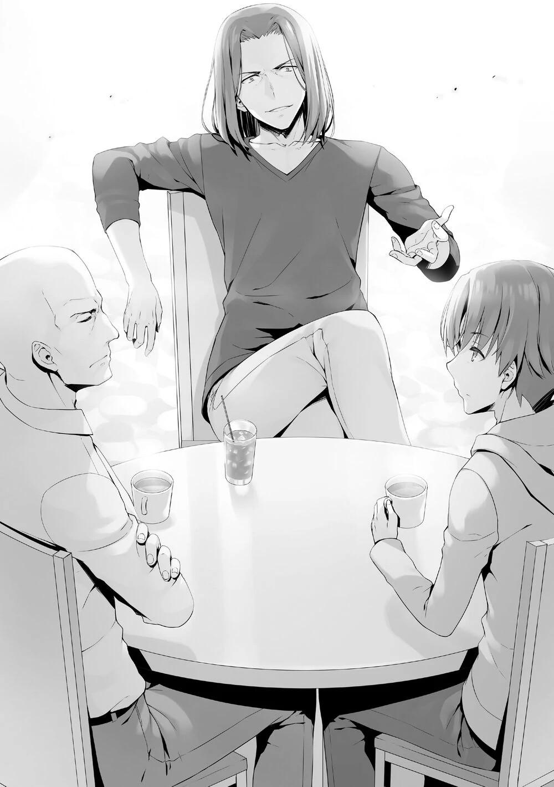
—La recompensa por conseguir del 1º al 3º puesto es suficiente para acercarse a la clase A, pero las reglas nos parecen un poco problemáticas. Así que quería prepararme con anticipación.
—¿Por eso nos llamaste a Ayanokouji y a mí aquí?
—Exactamente.
No importa cuál sea la estrategia, no creo que Katsuragi acepte fácilmente.
Aunque creo que al menos Katsuragi no considera favorablemente a Sakayanagi, si se enemista con ella, estaría golpeando a su propia clase. Quizá hubiera funcionado al principio de la lucha por el liderazgo, pero ahora sólo tendría un impacto negativo.
—Aun así, Ichinose realmente aceptó formar equipo con esa mujer. ¿La engatusaron bien, o fue porque es tan incompetente que pensó que eso era todo lo que podía hacer? ¿Verdad?
—No lo sé. Y si Sakayanagi escuchara esa pregunta, te preguntaría lo mismo. No a mucha gente le gustaría estar en tu equipo. Después de todo, eres un delincuente.
En lugar de traicionar a Sakayanagi, Katsuragi la defendió con su respuesta.
—En ese caso, todos aquí son esa clase de delincuentes.
Los tres no habíamos formado un grupo con nadie todavía, y estábamos trabajando solos. ¿Pero por qué trató de incitar a Katsuragi? Era obvio que Katsuragi no traicionaría a Sakayanagi fácilmente, por mucho que intentara incitarle. O... ¿era para confirmar que no traicionaría a Sakayanagi?
—Bien por ti, Katsuragi. Odiosamente justo como siempre. No está mal.
—Halagarme no funcionará, Ryuuen.
Ryuuen finalmente decidió ir al grano, y enderezó su postura.
—Lo más importante de este examen especial es no perder ningún punto del 2º año. No quiero que los de 1º y 3º año se llenen los bolsillos con mi dinero.
Para eso, necesitamos al menos formar una alianza, ¿no? Si sólo confías en tu propia clase, te faltará poder de combate.
En el momento en que el tiempo de formación de grupos estaba llegando a su fin, Ryuuen estaba proponiendo que trabajáramos juntos.
—Si los pequeñines de la clase B se añadieran a este grupo, entonces estaría mejor luchando solo, pero si puedo atraer alguna potencia de fuego de otros lugares, entonces sería una historia diferente.
Miró a Katsuragi con una sonrisa malvada.
—De ninguna manera, ¿me estás pidiendo que trabaje contigo?
—No sólo tú. También a Ayanokouji, que está despistado por allí escuchando nuestra conversación.
Entonces dirigió su atención hacia mí.
—... ¿Yo también?
—¿Por qué te llamaría aquí si no es así?
Pensé que esto era tan improbable, ¡pero en serio me está pidiendo ayuda!
—Me niego. Aunque la clase A también recibiría las recompensas, no quiero estar en un equipo con alguien como tú.
—Qué decisión tan precipitada. Tienes que escucharme hasta el final.
—Eso no es necesario. Pero... ¿Por qué llamaste a Ayanokouji? Quiero saber eso primero.
—¿Por qué lo preguntas?
—Fue sorprendente que obtuviera una puntuación perfecta en matemáticas en el examen especial de finales de abril. Estoy de acuerdo en que tiene una gran habilidad en lo académico. Pero, ¿realmente puedes decir que es la persona adecuada para elegir si quieres ganar?
Aunque Katsuragi rechazó inmediatamente la propuesta de colaborar, expresó sus dudas sobre la estrategia de Ryuuen.
Por lo visto, no podía aceptarla, porque esa estrategia se había formulado pensando en mí.
—¿Crees que he ideado una estrategia mediocre?
—Así es. Si metes a Ayanokouji, se reducirá la recompensa de puntos de clase a un tercio para cada uno. Ya que vas a invitarme a mí de la clase A de todos modos, ¿no sería mejor invitar a Kitou al grupo? Además, si necesitamos tres clases, Kanzaki de la clase C sigue solo, y debería tener prioridad sobre Ayanokouji.
Katsuragi actuó como asesor, recomendando candidatos adecuados.
—Alguien que no lo conozca no lo entendería, pero he tomado la decisión correcta. ¿Verdad, Ayanokouji?
—No sé de qué estás hablando.
Hice eco de Katsuragi, y me encogí de hombros como diciendo que no sabía por qué me habían llamado.
—Deja de actuar tan mal. Tú eres el hombre que me golpeó y me hizo callar.
Ryuuen lo dijo sin tener en cuenta mis preferencias al respecto. Aunque podría considerarse una broma, en esta situación, Katsuragi no parecía pensar así.
—¿Callarte?... ¿Es eso cierto?
Se volteó hacia Ryuuen y hacia mí para confirmar si era la verdad.
—Ah, me patearon el culo. Gracias a eso, casi decido dejar la escuela.
Al oír esto, Katsuragi empezó a atar cabos. Si lo relacionaba con el hecho de que Ryuuen abandonara el centro de atención en un momento dado, le sería fácil imaginarlo.
—Vamos, admítelo, Ayanokouji. Aunque sigas ocultándoselo a Katsuragi de esa manera, seguiré hablando, ¿sí?
Diciendo todas estas cosas innecesarias, es casi como si me estuviera amenazando.
—Aunque lo admita, ¿crees que te ayudaré?
—Bueno, como con Katsuragi, no será tan sencillo.
Katsuragi, que nos estaba escuchando, suspiró.
—No, no puedo aceptar esto todavía. No puedo creer que Ayanokouji te haya ganado. Volviendo a lo que dije antes, si tienes tres clases trabajando juntas, incluso si llegas al primer lugar, sólo obtendrás un promedio de 100
puntos. La brecha entre ustedes y la clase A será imposible de cerrar.
Katsuragi cuestionó fuertemente la importancia de la existencia de este grupo.
—Sí, sí, me olvidé completamente de eso. Como asesor, estás ciertamente cualificado.
Ryuuen esbozó una sonrisa al decir eso y volvió a dirigir su atención a Katsuragi.
Incluso en esta situación, Ryuuen mantuvo su actitud frívola.
—Ya veo, proponiendo unir fuerzas con tres clases de forma ineficaz, y diciendo completas tonterías como que Ayanokouji te ganó, pareciera que no tenías intención de negociar seriamente desde el principio.
Katsuragi, que seguía pensando que Ryuuen estaba bromeando, se preparó para abandonar su asiento.
—¿Una negociación seria? Sabías que eso era imposible desde el principio, ¿no? Pero aun así viniste. ¿Te han pedido que espíes para la clase A?
Katsuragi aceptó una reunión que podría haber rechazado. Pero, efectivamente, debía haber una razón detrás.
—Eres un hombre muerto, y estás buscando una oportunidad para volver a la vida. ¿Estoy en lo cierto?
Totsuka Yahiko, un gran admirador de Katsuragi, fue expulsado de la escuela por culpa de Sakayanagi. Y ahora, Ryuuen intentaba averiguar si Katsuragi había perdonado a Sakayanagi por ello.
—Sea o no cierto, no tiene nada que ver contigo.
—Ya que estás aquí, escúchame hasta el final.
—No importa lo que digas, no hay ninguna posibilidad de que trabaje contigo. Es cierto que tengo una relación semi-antagónica con Sakayanagi. Sin embargo, no quiero molestar a mis compañeros. No quiero trabajar contigo.
Al escuchar las palabras de Katsuragi, Ryuuen volvió a aplaudir alegremente.
Parece que estaba esperando que Katsuragi dijera estas palabras todo el tiempo.
—¿No quieres causar problemas a los demás? Desde el examen de la isla deshabitada del año pasado, ustedes de la clase A me han estado transfiriendo dinero diligentemente cada mes debido a ese contrato que hicieron conmigo, ¿lo olvidaron?
Katsuragi, todavía de pie, cambió su atención a Ryuuen una vez más.
—Fue un contrato justo, conseguimos 200 puntos de tu clase, y a cambio la clase A paga el préstamo. Todas mis acciones fueron sólo para llevar a la Clase-A por un camino mejor.
—Claro, si sólo te fijas en los números. Sin embargo, ¿qué pasa con el impacto psicológico que sufre tu clase cada mes? ¿Por qué todos ustedes tienen que compartir sus puntos privados con nosotros durante tanto tiempo?
Los humanos son criaturas sorprendentemente codiciosas. Aunque hubieran aceptado pagar por adelantado, seguirían sintiéndose insatisfechos con su compra. Mes tras mes, Ryuuen seguía exprimiendo 20.000 puntos de cada estudiante de la clase A. Aunque ahora hubiera una persona menos, la cantidad total de puntos privados extraídos de toda su clase seguía siendo de 780.000.
Es decir, 9,36 millones de puntos al año. Eso habría estado bien si el destinatario fuera una especie de aliado, pero rendir tributo continuamente al hombre que suponía la mayor amenaza para su posición era algo que no les haría mucha gracia. Y finalmente, el contrato no fue firmado por Sakayanagi, su actual líder, sino por Katsuragi, que ya se había retirado a las sombras.
—No se siente bien, ¿verdad, Katsuragi? Perder y no poder vengarse.
—Y... ¿Y qué?
Katsuragi se enfadó de nuevo, y parecía que estaba a punto de sujetar a Ryuuen. Como había encontrado lo que quería en esos ojos, Ryuuen dijo:
—Ven a la clase B, Katsuragi.
Una invitación tan sumamente atrevida por parte de Ryuuen. Katsuragi olvidó por un segundo su enfado al contemplar la repentina propuesta de Ryuuen.
—¿Estás loco? ¿Me estás pidiendo que vaya a la clase B?
—Por supuesto, pagaremos los puntos que no tengas.
—Incluso si tienes los puntos necesarios, ¿por qué debería ir a la Clase B?
¿Crees que renunciaría a mi lugar en la Clase A?
—Pronto derrotaré a Sakayanagi, y entonces toda la Clase A caerá. En otras palabras, permanecer en la Clase A no tiene ningún valor, ¿verdad?
Sin Sakayanagi, su líder, sería difícil para la Clase A seguir luchando en el frente.
—¿Cuánto tienes disponible?
—... Alrededor de 1,8 millones de puntos.
—¡Qué, has estado ahorrando! Aunque estés podrido, sigues en la clase A,
¿eh?
Es cierto, todavía estaba lejos de los 20 millones de puntos necesarios. Incluso con las remesas mensuales de la escuela y el dinero recaudado de la Clase A, sólo sumaba 800.000 puntos que llenaban la cartera de Ryuuen cada mes. Sería realmente extraño que tuviera incluso 10 millones de puntos disponibles en este momento. Sabiendo que sería rechazado, sacó un papel y lo puso sobre la mesa.
—Ya has visto esto, ¿no? Es el contrato que firmé contigo el año pasado.
—... Sí.
—Después de negociar con Sakayanagi, renuncio a esto por 5 millones de puntos.
Aunque era bastante alto, si simplemente se calculaba la cantidad que se le pagaría hasta la graduación, era alrededor de 10 millones de puntos. Además, se eliminaría su carga psicológica de regalar constantemente sus puntos a Ryuuen. Se mirara como se mirara, era un mal negocio para Ryuuen.
Por supuesto, si vendiera el contrato para un reembolso inmediato, aunque sea la mitad del valor original, Sakayanagi podría predecir lo que Ryuuen haría con el dinero. En el caso de este examen, sería para hacer el mejor equipo, o para coleccionar cartas más fuertes. Sin embargo, Sakayanagi aceptó una propuesta tan favorable a pesar de conocer los riesgos. Si yo fuera Sakayanagi, también habría aceptado la propuesta de Ryuuen.
—¿Le dijiste que los puntos se usarían para sustraerme?
—¿No me digas que crees que Sakayanagi rechazaría la propuesta si le dijera eso?
—... No, es Sakayanagi, lo aceptaría.
Katsuragi no creía que Sakayanagi fuera a rechazar una propuesta que no tenía más que beneficios para ellos.
—No volverás a tener una oportunidad como ésta, Katsuragi.
Utilizaría el dinero de la anulación del contrato que unía a Katsuragi, para robarlo.
En otras palabras, pagaría una enorme suma de 20 millones de puntos a Katsuragi. Y le permitiría luchar abiertamente contra Sakayanagi.
—¿Por qué... irías tan lejos por alguien como yo?
—Eh, Katsuragi, tienes una opinión sorprendentemente baja de ti mismo.
Aunque, para ser sincero, no te va a salir barato.
Al final, lo único que quería Ryuuen era vencer a la clase A. Incluso si Sakayanagi era derrotada y expulsada, no era bueno que Katsuragi siguiera allí.
Si Katsuragi, que valoraba la defensa, volvía a su posición de líder, la Clase A se convertiría inevitablemente en una sólida fortaleza.
Sin embargo, si Katsuragi se fuera primero, y Sakayanagi fuera expulsada después, la Clase A se derrumbaría.
Por eso Ryuuen estaba dispuesto a pagar lo que fuera necesario. Además de eso, Katsuragi también tenía una gran capacidad individual. Según la OAA, Katsuragi sería el mejor estudiante de la Clase B.
—Los 5 millones por anular el contrato más tu saldo actual. Los puntos restantes han sido recaudados de la clase. Los he forzado a la pobreza para darte la bienvenida a nuestra clase.
Sólo entre mayo y finales de julio, 39 personas pueden acumular casi 6,5
millones de puntos privados. El resto serían unos 200.000 puntos privados por alumno. Por supuesto, los fondos de la Clase B se agotarían por poco tiempo, pero si pudieran conseguir un estudiante de primera, valdría la pena. Ryuuen sacó otro contrato que había preparado de antemano. En él, estaba escrito el uso de los 20 millones de puntos proporcionados, así como los arreglos para el traslado de Katsuragi a la Clase B.
—Vamos, fírmalo. El uso de 20 millones de puntos para cambiar de clase requiere varias condiciones. No se puede obligar a una persona a cambiar de clase. Al final, la persona debe estar de acuerdo, y luego usar sus fondos para transferirse a cualquier clase de su elección.
El contrato era para evitar que Katsuragi tomara esa enorme suma de dinero y la utilizara para otros fines. Además, incluso si Katsuragi realmente utilizara esta cantidad de dinero para lo que quisiera, sería sospechoso de fraude por parte de la escuela.
En otras palabras, el propósito de este contrato no era evitar que Katsuragi hiciera algo deshonesto. En cambio, era un contrato para evitar que cambiara de opinión más adelante.
—Parece que vas en serio.
—Todo ha funcionado, ¿verdad, Katsuragi? Has estado solo hasta ahora, lo que hace más fácil invitarte a nuestra clase.
Si Katsuragi se hubiera agrupado con alguien, esto no habría pasado.
—Este es tu destino. Acéptalo.
Tras permanecer un rato en silencio, Katsuragi se sentó de nuevo en su silla, como si lo hubiera pensado bien. Katsuragi había enterrado en su corazón su deseo de venganza contra Sakayanagi.
Ryuuen se aprovechó brillantemente de esto, y lo atrajo con éxito a sus filas. Así, Katsuragi pasó a estar bajo su bandera. Una cosa es segura, esto será de gran beneficio para la clase de Ryuuen. La brecha con la clase A se había reducido realmente. Katsuragi firmó lentamente el contrato.
—Aunque realmente no me importa que me hayas traído a tus filas, ¿qué es lo que buscas exactamente? ¿No te importará que diga lo que pienso?
—Como quieras. Tus opiniones obstinadas pueden ser útiles a veces.
Eso fue lo que dijo Ryuuen tras recibir el contrato firmado. Era la primera vez en la historia de esta escuela que un individuo se cambiaba de clase. Sin embargo, en lugar de subir a la clase A, bajó a la clase B. Se podría decir que fue una coincidencia que estas dos circunstancias se superpusieran. La primera era que sólo fue posible porque Ryuuen gobierna su clase como un dictador, y podía conseguir sus puntos con una sola orden. La segunda fue que había una persona que estaba aislada en la clase A, y estaba descontenta y vengativa con su líder. Para ellos, si hay que preocuparse por algo, sería por el hecho de que pelearan por su vida en el examen de la isla deshabitada. Ya que, el número de estudiantes que podían permitirse el lujo de pagar la penalización eran limitados.
—Hey, Ayanokouji. ¿Qué estás haciendo?
—¿Eh?
Me preguntó Ryuuen con expresión de desconcierto, mientras echaba agua en la quinta parte restante del café.
—Nada. Sólo me preguntaba a qué sabría si de repente diluyera el café tres o cuatro veces más de lo normal.
Después de responder sin rodeos a la pregunta, tanto Ryuuen como Katsuragi parecían aún más desconcertados que antes.
—...Eres muy extraño, Ayanokouji.
Katsuragi dijo eso con una mirada de asco en su rostro.
—Entonces, ¿qué vas a hacer con Ayanokouji? Si incluyes a un estudiante de la clase D en el grupo, las recompensas que obtendrás se dividirán en dos tercios.
—Nadie dijo nada de que se uniera al grupo.
—Entonces, ¿qué necesitamos de él?
—Pues la tarjeta Prueba que recibió.
Ryuuen mencionó la tarjeta que me dieron.
—Véndemela.
Pensé que me pediría que cooperara con él, pero de eso se trataba.
—Acabas de comprar Katsuragi, así que estoy seguro de que tu situación financiera no es muy buena. ¿Puedes preparar suficiente dinero?
—Podré conseguir 500.000 puntos más o menos. Eso debería ser suficiente.
Efectivamente, esta era la única oportunidad que tenía para vender la tarjeta Prueba. Aunque no puedo decir que sea un buen negocio, al menos puedo conseguir algo de dinero para Kei.
—Tengo una condición. Haz que un alumno de tu clase que tenga la tarjeta Reducción a la mitad intercambie su tarjeta con uno de nuestros alumnos que tenga la tarjeta Viaje gratis. Si aceptas eso, te venderé la tarjeta Prueba.
Si no podía formar un grupo grande de 6, y si a Kei le tocaba la pena de expulsión con un grupo de 3 alumnos, aún podía limitar los puntos que tendría que pagar para salvarse a 1 millón usando la tarjeta Reducción a la mitad. Poder mantenerla definitivamente a salvo resultaba muy importante.
—Kuku, supongo que está decidido entonces. La tarjeta Reducción a la mitad, ¿eh? Resulta que Katsuragi la tiene, ¿no?
—No tendré mucho dinero de todos modos. No tendría sentido retener la tarjeta Reducción a la mitad.
Así que a Katsuragi se le había asignado la tarjeta Reducción a la mitad. Si Ryuuen tiene la tarjeta Prueba y consigue el primer puesto, puede conseguir 450
Puntos de Clase de golpe. Con eso los Puntos de Clase B también rompería la barrera de los 1000 puntos.
PARTE 2
Pronto llegó el 16 de julio, fecha límite para la formación de los grupos pequeños.
Mientras hacía mi rutina matutina, recibí una llamada telefónica de Ishizaki.
—Hola, Ayanokouji. Buenos días.
—Es muy raro que me llames.
—Hoy es el último día para formar grupos pequeños, ¿verdad? Tengo que hablarte de algo importante.
—¿Es sobre Nishino? La última vez que lo comprobé, no había formado un grupo.
Sin embargo, no había revisado la OAA esta mañana. ¿Cambió la situación?
—Al final, no pudo encontrar a nadie de su clase con quien formar equipo, así que le pidió a Ichinose que la ayudara. Ahora, Tsube de la clase C la ayudará.
Ah, Hitomi Tsube de la clase 2-C. Ella era una excelente estudiante con B+ en ambas habilidades académicas y físicas.
—Eso es genial.
—Sí. Eso significa que casi todos nosotros hemos formado un grupo de 2 o más personas. Excepto...
Había un estudiante en la clase B que aún no había formado un grupo.
—Ibuki, ¿verdad?
—Sí. Ibuki está sola. ¿Hay alguien que quiera agruparse con ella?
—Es arriesgado hacer el examen especial sola. Entiendo cómo te sientes.
Por la forma en que Ishizaki hablaba, me di cuenta de que había intentado persuadirla muchas veces, pero había fracasado.
—Dame algo de tiempo. Creo que tengo una idea.
—¿En serio? Perdona que te eche esto encima tan temprano.
Le dije a Ishizaki que lo llamaría más tarde y colgué. Entonces decidí intentar contactar con alguien que pudiera agruparse con Ibuki. Afortunadamente, esa persona todavía no había salido del dormitorio, así que decidí encontrarme con ella en el vestíbulo.
En el ascensor que seguía al mío estaba Horikita, la persona con la que esperaba encontrarme. Horikita era también una de las pocas estudiantes que, incluso ahora, no tenía grupo.
—¿Qué vas a hacer con tu grupo?
—Es demasiado tarde para sacar ese tema. De todas formas, esta vez no me voy a agrupar con nadie. Si tienes en cuenta que el número máximo de personas en un grupo es de 6, no es mala idea ir solo.
—Sé que lo haces para poder actuar según lo exija la situación. Pero, ¿y si te enfermas y te eliminan? Si no puedes pagar la increíble penalización, te expulsarán.
Sé que no hace falta que me esfuerce en recordárselo, pero.
—Soy consciente de que tendré que asumir esa cantidad de riesgo. ¿No es por eso que no estás en un grupo tampoco?
—Pero, mis riesgos y los tuyos son diferentes.
—¿Cuál es la diferencia?
—Tuviste un problema de salud durante el examen de la isla deshabitada el año pasado.
—No puedo creer que saques a relucir algo que ocurrió hace un año.
Cualquiera puede enfermar.
—Sí. Sin embargo, también te tomaste un descanso en el invierno debido a una fiebre. Eso hace que sean dos veces en un año.
—Resulta que has pasado el año sin pedir una baja. ¿Crees que eso significa que no te enfermarás esta vez?
—En cuanto a cuidarme, estoy más seguro que tú.
Ante el hecho de que tenía una asistencia perfecta, tuvo que aceptarlo.
—Ya veo. Es cierto que no soy tan buena como tú para cuidarme. Lo admito. Pero aunque sea así, hacer ver que es algo por lo que hay que preocuparse...
Horikita me miró a los ojos. Su tono había empezado a caldearse antes, así que se calmó.
—Es suficiente con que lo sepas. No tenía intención de oponerme a ti.
Uno debe cuidar a fondo su salud. Si ella era muy consciente de eso, entonces estaba bien.
—Pero aun así, es peligroso ir sola.
—Sí.
—En nuestra clase, sólo tú, Koenji y yo no hemos formado un grupo todavía, nosotros tres. El resto de nuestros compañeros han formado un grupo pequeño de al menos dos personas. Es más seguro formar un grupo de dos, si es posible.
—Tú y Koenji son los únicos que quedan en la clase. Eso significa que ya no se puede formar un grupo.
—Eso es sólo en nuestra clase.
—¿Queda alguna chica que no haya formado grupo?
—Ah, hay una persona que se me ocurre.
—¿De quién hablas?
—Ibuki de la clase 2-B. ¿No has comprobado la OAA?
—Bueno, la última vez que lo comprobé me di cuenta de que estaba sola.
—Ishizaki está preocupado porque Ibuki no tiene a nadie con quien agruparse. ¿Qué tal si te agrupas con ella para el examen especial, Horikita?
—¿Ibuki y yo?
—Si son dos chicas, pueden agruparse con cualquier otro grupo pequeño después. ¿Por qué no los escuchamos?
—Es cierto, tener algún tipo de seguro sería mejor... De acuerdo, la escucharé.
Tal vez no podía ignorar esto, y por eso, prometió reunirse con Ibuki. Me puse en contacto con Ishizaki y le pedí que se reuniera conmigo durante la pausa del almuerzo.
PARTE 3
Durante la hora del almuerzo, llevé a Horikita a donde se suponía que me encontraría con Ishizaki.
—¡Eh, Ayanokouji! ¡Por aquí!
Ishizaki estaba prácticamente saltando al llegar, y cuando me vio de lejos me hizo un gesto con la mano. A su lado estaba Ibuki, que me miraba con los brazos cruzados en señal de disgusto.
—¿Está de acuerdo con esto?
—Por la expresión de su cara, no estoy seguro.
Se ve que está de mal humor después de escuchar los planes de formar un grupo. Supongo que Ishizaki la trajo aquí sin explicarle la situación con mucho detalle.
—¡Date prisa y ven!
Ishizaki exudaba el entusiasmo de un conejo.
—Parece que son amigos íntimos.
Horikita se sintió ligeramente afectada por la actitud de Ishizaki.
—Es un buen tipo.
—A pesar de ello, yo no me acercaría demasiado a él.
Era similar a Sudou en cuanto a entusiasmo, pero Ishizaki era diferente a su manera.
—¿Qué está pasando? ¿Por qué están Ayanokouji y Horikita aquí?
Ah, así que no se lo dijeron de antemano. Horikita y yo nos miramos. No era inteligente dejar que Ishizaki hablara aquí.
—En realidad, hay algo que queremos discutir, así que le pedí a Ishizaki que te llamara, Ibuki.
No tenía otra opción, así que empecé a explicarme en el acto.
—¿Y?
—¿Escuché que en el próximo examen especial, vas a competir sola?
—Esa es mi elección.
Respondió secamente, como si no hubiera lugar a discusión.
—Ya te he dicho varias veces que es mejor agruparse.
—No lo necesito.
—Bueno, eso lo dices tú, pero el hecho es que no hay nadie que quiera hacer equipo contigo.
Ishizaki tenía que decir algo. ¿Intentaba ayudarla o interponerse en su camino?
Me giré hacia él y permanecí en silencio.
—¿Eh? ¿Qué pasa, Ayanokouji?
Pero... Ishizaki no entendió mis intenciones, y me interrogó en su lugar.
—No es nada. Por cierto, Horikita aquí está igual que Ibuki, aún no se ha aliado con nadie.
—¿Y?
—En el próximo examen, si no forman un grupo, estarán en desventaja.
Aunque no sean tres personas, si al menos las dos forman un grupo, incluso en el peor de los casos, si una de ustedes es eliminada, podrán continuar.
Ahora debería entender lo que quería decir.
—Y no queda mucho tiempo antes de la fecha límite.
—¿No me digas que quieres que me agrupe con Horikita?
—Bueno, eso es cierto.
—¿Ja? ¿Quién eres tú para decir eso por mí?
—Aparte de tu habilidad física... No eres muy buena en nada más.
—Oye, tú también, no digas lo que quieras.
Ibuki se acercó impetuosamente. Luego miró fijamente a Ishizaki, que estaba de pie detrás de ella con una mirada distraída.
—Tú también quieres que me agrupe con Horikita para ayudarles, ¿no?
—No sabía que sería Horikita, pero ¿no sería genial que formaran un grupo?
—Ya odio mucho a este tipo, pero mi odio hacia Horikita es todavía mayor.
"Este tipo", creo que se refiere a mí. Eso fue educado. Usando su dedo para señalar directamente a la persona frente a ella.
—Ayanokouji-kun, parece que no le gustas mucho.
—Ni siquiera me había dado cuenta. Aunque parece que te odia todavía más que a mí.
—Es un honor.
Ibuki parecía molesta por el hecho de que Horikita y yo nos susurráramos, y no se molestó en ocultar su disgusto.
—No sé si Horikita te lo pidió o la razón que sea, pero de ninguna manera voy a formar equipo con esa chica.
Daba la impresión de que realmente le guarda rencor a Horikita.
Se negaba obstinadamente a escuchar lo que tenía que decir.
—Ah, pero no recuerdo haber dicho que quería estar en un grupo contigo.
Observando la actitud de Ibuki, Horikita intentó provocarla.
—¿Eh? ¿Qué quieres decir?
—Parece que has confundido las cosas. Tú te has quedado sola porque nadie quiere estar contigo, y yo no me he agrupado con nadie porque quería luchar sola. Aunque ambas somos lobas solitarias, nuestras situaciones no son las mismas.
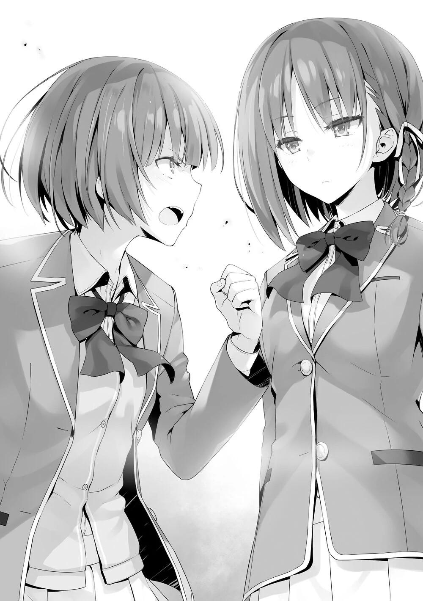
Respondió Horikita, casi asombrada. Sin embargo, eso encendió un fuego en Ibuki, y dijo:
—Yo también estoy sola porque quiero. De todos modos, dices que quieres ir sola, eso es perfecto. Es un reto, Horikita.
Cambió su mirada de mí a Horikita.
—¿Puedo preguntarte algo? ¿Por qué quieres luchar contra mí? Es cierto que competimos en el examen de la isla deshabitada y durante el festival deportivo, pero eso no fue nada especial, ¿verdad?
—Eres la única que piensa eso.
Por lo que sé, Ibuki venció a Horikita en su combate en la isla deshabitada, pero Horikita ganó en la carrera de 100 metros en el festival deportivo.
Una victoria, una derrota. Aunque es difícil decir que estaba en su mejor momento. Horikita tenía mucha fiebre durante el examen de la isla deshabitada, así que eso fue una gran desventaja para ella, mientras que durante el festival deportivo Ibuki estaba tan obsesionada con Horikita que perdió el ritmo en el festival deportivo. En otras palabras, no había manera de determinar quién era mejor.
Incluso en la azotea, después de vencer a Ryuuen y a Ibuki, ella volvió a desafiarme más tarde. En resumen, es el tipo de persona que no puede aceptar nada hasta saber con seguridad quién es el más fuerte.
Esta vez, quería competir contra Horikita en el examen de la isla deshabitada a través de la supervivencia. Si lo piensas así, no había forma de que Ibuki y Horikita pudieran trabajar juntas.
—Parece que esto fue una pérdida de tiempo.
—Espera. ¿Aceptas? ¿O no?
—Voy a ir sola, pero no voy a elegir trabajar sola durante todo el tiempo.
Cuando empiecen los exámenes especiales, me uniré a otro grupo si es necesario.
Si hubiera sido un enfrentamiento uno a uno se podría decidir el ganador, pero ahora no sería una lucha justa.
—¡Patética!
—Lo patético no es una razón para cambiar la forma de hacer el examen.
Haciendo saber a Ibuki que estaba desperdiciando su energía, Horikita la rechazó.
—Si insistes en luchar sola, aunque forme un grupo, intenta no perder. Si ganas, entonces te reconoceré un poco.
—...No es mejor.
Parece que las negociaciones se han roto ya que era imposible que Horikita e Ibuki formaran equipo. Sin embargo, provocarla hasta el final definitivamente habría fortalecido la decisión de Ibuki de luchar sola. Me disculpé discretamente con Ishizaki, y luego volví al aula con Horikita.
—Sabías desde el principio que Ibuki no sería capaz de aceptarlo, ¿verdad?
Eres demasiado amable.
—Quería provocarla para que hiciera algo imprudente con el fin de descalificarla.
Horikita no estaba siendo honesta consigo misma, pero este tipo de respuesta se sentía muy propia de ella.
LA CALMA ANTES DE LA TORMENTA
El final del primer semestre había llegado mucho antes de lo que había previsto.
Teníamos que pasar a nuestro siguiente objetivo lo antes posible.
Hacía un año que dejamos la escuela y nos dirigimos al puerto, donde embarcamos en un gran buque de pasajeros hacia alguna isla desierta desconocida. Esta vez no se dio ni un momento de respiro, y mañana por la mañana se anunciaría el comienzo de los exámenes especiales. Los alumnos, a los que se les dijo que se reunieran en el aula para una breve explicación, se dirigieron a sus clases, a la espera de que apareciera su profesor titular.
Mientras tanto, había una breve lista de control en la pantalla con recordatorios como: "¿Hay algo que hayas olvidado?".
Se permitía llevar una muda de ropa interior hasta para una semana, lo que era necesario para mantener la higiene. Los teléfonos eran obligatorios, pero seguramente serían confiscados al comienzo del examen. Incluso si te permitieran llevar uno, no habrá señal en la isla, así que sólo será un equipaje extra. Probablemente estuvieran allí para pagar tu sanción o para comprar artículos en el barco.
Mientras esperaba el sonido de la campana que indicaba la salida, Keisei, que parecía estar comprobando una vez más que no había olvidado nada, se acercó a mi asiento con una expresión sombría en el rostro.
—Sinceramente, sobrevivir en una isla deshabitada no es algo muy bueno.
Bien podrías pedirme que atrape una nube.
—No es de extrañar, dado que está tan lejos de la norma.
—Pero es más difícil para las chicas, así que no puedo quejarme.
A diferencia de los chicos, hay algunos predicamentos exclusivos de las chicas, por lo que este tipo de examen es aún más difícil para ellas.
Por supuesto, la escuela ha hecho todo lo posible a fin de tenerlo en cuenta, pero eso no hace más fácil la parte difícil del examen.
—Aunque estamos compitiendo en diferentes grupos, todavía quiero hacer lo que pueda para ayudar.
Aunque es un examen especial con el que no se siente cómodo, Keisei está decidido a hacer todo lo posible para proteger a sus compañeros.
—Sí. Debería haber alguna forma de ayudarnos, así que les echaré una mano cuando llegue el momento.
Prometí ayudarles en todo lo que pudiera.
—Pero, ¿te parece bien ir solo? Si te enfermas, se acabó. Si por casualidad recibes la penalización, tendrás que pagar 6 millones de puntos...
Todo se acabará en un instante.
—Mi récord de asistencia perfecta, al menos hasta ahora, es una de las pocas cosas de las que estoy orgulloso.
—Estás empezando a sonar un poco sarcástico últimamente, ¿sabes?
Keisei, que se estaba riendo, volvió a su asiento. Poco después, sonó la campana para anunciar una nueva batalla, y los 39 miembros de la clase 2-D
tomaron asiento.
Al entrar en el aula, la expresión natural de Chabashira-sensei se puso seria, y el ambiente se volvió pesado.
—Hoy es el comienzo de las vacaciones de verano, pero parece que lo están pasando mal. Bueno, supongo que no se puede evitar.
Chabashira-sensei activó la pantalla y su tableta.
—Entonces empezaremos con la revisión final. Si no se sienten bien ahora, tienen que informar de ello.
Confirmación de las pertenencias personales y del estado físico. Después de eso, el horario y los artículos necesarios se mostraron de nuevo.
Afortunadamente, no hay estudiantes enfermos en la clase 2-D, así que todo
transcurrió sin problemas. Koenji fue obediente, lo que era de esperar de un estudiante que eligió luchar solo en lugar de en grupo.
—Sin problemas, eso es genial.
Chabashira-sensei apagó el monitor unos minutos después, tras confirmar todo lo necesario antes de salir al examen. Luego, para llamar la atención de todos, golpeó suavemente su mano una vez en el atril.
—No es la primera vez que hacen un examen especial. Hace más de un año que luchan en esta escuela y han superado todo tipo de dificultades. Sin embargo, este examen especial no será fácil de aprobar.
Era un consejo de Chabashira-sensei, o se podría decir que era una especie de advertencia. El consejo de la profesora para nuestra clase 2-D es que nunca debemos confiarnos.
—Es inevitable que este examen sea más difícil que cualquier otro al que se hayan enfrentado antes.
Chabashira-sensei miró atentamente a los alumnos, como si tratara de imprimir el rostro de cada uno de ellos en su mente.
—Sólo tengo un deseo para todos ustedes. Si pueden, no dejen que desaparezca ni uno solo de sus compañeros, y vuelvan a esta clase una vez más.
Chabashira-sensei esperaba que este examen no fuera un billete de ida para nosotros.
—Nos reuniremos en el patio en 10 minutos para pasar lista. Recuerden ir al baño primero, si lo necesitan.
Como no teníamos mucho tiempo, los estudiantes salieron a toda prisa. Cuando Akito y el grupo se reunieron alrededor de mi asiento, cerca de la entrada, me levanté con mi equipaje. Casi al mismo tiempo, Koenji se levantó y habló con uno de los estudiantes en el pasillo.
—¿Puedo hablar contigo un minuto? Horikita-girl.
Fue un comportamiento raro que atrajo no sólo la mía, sino también la atención de los estudiantes que permanecían en el aula.
—Es raro que vengas a hablar conmigo por tu propia voluntad.
Parece que Horikita sentía lo mismo.
—Hay algo de lo que me gustaría hablar con respecto al examen especial que está a punto de comenzar.
—Vaya, por fin tienes ganas de ayudarnos, ¿verdad?
—Digamos que tienes la mitad de razón.
Horikita puso cara de sospecha al escuchar las inesperadas palabras de Koenji.
Sabía muy bien que Koenji no era del tipo que ayuda a los demás tan fácilmente.
—¿Cuál es tu objetivo? ¿Puedes decirme la otra mitad de lo que quieres decir?
—Los puntos de clase para los tres primeros grupos. Tienes un DESEO
EXTREMO por ellos, ¿verdad?
—Por supuesto. Dependiendo de cuántos puntos podamos conseguir, el orden de las clases podría cambiar en gran medida.
—Entonces déjame hacer una sugerencia, ¿de acuerdo? Si obtengo un buen resultado en el examen de la isla deshabitada, quiero que me prometan la LIBERTAD total.
La clase se quedó en silencio por un momento, debido a la inconcebible declaración de Koenji. Aunque tenía una condición, expresó su intención de participar seriamente en el examen especial.
—Prometerte plena libertad... Es una propuesta inesperada. Permitiéndote continuar hacer lo que te plazca, como hacías antes, ¿verdad?
—¡Exactamente! No sólo hay que permitirme eso, sino que además hay que esforzarse por eliminar todo obstáculo en mi camino como un caballo de tiro,
¿sabes?
Así que está diciendo que, por ejemplo, como en la votación de la clase del año pasado, si en el futuro se realizara un examen especial para expulsar a los estudiantes que no son necesarios en la clase, ella tendría que proteger a Koenji incondicionalmente.
—Eso no es algo que pueda aceptar fácilmente. Todos los demás en la clase seguramente sienten lo mismo.
Si estás en esta clase, ayudar es la mínima obligación… No sería fácil obtener permiso para simplemente mirar como un espectador.
—Considéralo como un anticipo antes de la graduación.
Haría una contribución a la clase para el próximo examen especial, y a partir de ahí haría lo que quisiera, este era el tipo de trato que quería.
—Parece que tú también sientes que la crisis se cierne sobre tu cabeza.
Tus compañeros no van a perdonar para siempre tu despreocupación y tus payasadas. Si se vuelve a celebrar un examen especial como la votación de la clase, te convertirán en su chivo expiatorio.
Incluso para el raro Koenji, evitar una crisis sería difícil dependiendo del contenido del examen.
—No hay necesidad de propuestas tan drásticas. ¿No puedes ser como los demás?
Naturalmente, Horikita se apartó y rechazó la propuesta de Koenji. Pero aunque lo rechazara ahora, Koenji no nos habría ayudado en los futuros exámenes especiales de todos modos. Si lo hace, sólo sería cuando estuviera acorralado.
Si ese fuera el caso ahora, conseguir que lo diera todo sólo en este examen era ciertamente una opción, pero...
—Lo siento Koenji-kun, le doy demasiado valor a tu talento como para dejar que lo hagas "sólo bien" en este examen y seas un espectador más adelante. No me parece bien.
Después de tener en cuenta varios factores, Horikita llegó a esta decisión.
—Ya veo. En otras palabras, las negociaciones se rompieron, ¿verdad?
—--No exactamente. Si puedo añadirle algunas condiciones, sería una propuesta aceptable.
Aunque podría haberlo rechazado, Horikita parecía tener otras ideas.
—Una respuesta vaga como obtener un buen resultado no servirá. La escuela ha preparado una recompensa para el grupo que quede en primer lugar en este examen. Si consigues el primer puesto tú solo, eso podría ser razón suficiente para que consideremos esto un anticipo hasta la graduación.
Si Koenji, que no estaba en un grupo con alguien, ganaba solo, recibiría 300
puntos de clase. Probablemente era suficiente para pagar la contribución total que se esperaba que hiciera antes de la graduación. No obstante, conseguir el primer puesto entre más de 100 grupos no sería fácil, ni siquiera para Koenji.
—Ya veo, ya veo. Ciertamente, parece que estarás satisfecha si consigo el 1er lugar yo solo, ¿verdad?
Koenji se rió fuertemente ante este buen trato.
—No hay problema, ¡consideremos esto como un trato hecho!
—No, eso no es suficiente.
Koenji hizo un gesto como si fuera a aceptar esta ridícula propuesta, pero Horikita añadió inmediatamente que aún no era suficiente.
—Todavía no he terminado de decirte mis condiciones. Tendré que trabajar contigo por tu gran discurso, pero si al final no conseguimos el primer puesto, también será un problema para nosotros.
—¿En otras palabras?
—Si no obtienes el primer lugar, entonces tendrás que ayudar a la clase en el futuro, como en el próximo examen especial, y obtener resultados. Tienes que hacerme esta promesa.
En este momento, podía oír claramente la respiración de Keisei a mi lado, mientras observaba todo el espectáculo que se estaba desarrollando. Se podría
decir que esta es una hermosa condición añadida. Si por casualidad Koenji llegaba en primer lugar, estaría bien. Incluso si no quedaba en primer lugar, tendría que contribuir en el siguiente examen especial como condición adicional.
Pasara lo que pasara, la clase D no tenía nada que perder.
Ahora le tocaba a Koenji decidir si aceptaba la condición adicional...
—Veo que has dado una orden CONFIADA, Horikita-girl.
—Si estás de acuerdo con las condiciones mencionadas, aceptaré tu propuesta.
—Entonces es un trato. Horikita-girl, por favor, no olvides las condiciones que he mencionado.
Aunque hubiera una condición adicional, Koenji expresó que no la rechazaría.
—¿Realmente planeas ganar el primer lugar tú solo?
—Después de todo, no hay nada que no pueda hacer.
A pesar de que Horikita tenía una condición tan descabellada, Koenji la aceptó con confianza, lo que la sorprendió.
—Entonces, ya que hemos terminado de hablar. Me voy a despedir.
Koenji pareció satisfecho con el acuerdo alcanzado en la negociación y salió del aula. Nadie habló con Koenji, y sólo lo observaron marcharse.
—No tengo ni idea de lo serio que se pondrá Koenji esta vez...
—Bueno, eso es cierto.
—Pero esta es una rara oportunidad. Conseguí que al final nos prometiera su futuro compromiso.
Aunque sinceramente no creía que pudiera confiar en él, esto era un hecho sin precedentes. Para poder vivir una vida escolar sin preocupaciones, Koenji necesitaba el correspondiente respaldo. Si seguía haciendo lo que le daba la gana como antes, caería de la prioridad de los estudiantes que debían ser protegidos. Aunque no dijera nada esta vez, se vería obligado a tomar
contramedidas en algún momento. Sin embargo, si Horikita, la líder de la Clase D, reconociera su plan, sería una historia diferente.
—Si realmente pudiera conseguir un puesto en los primeros lugares, sería genial, podríamos superar a las otras clases así —dijo Horikita, dirigiendo su atención hacia mí.
—Nosotros quedamos primeros y Kouenji queda segundo o tercero. Si logramos eso, nuestra clase ganará una gran ventaja, y podremos redimirnos después de quedarnos atrás hasta el momento.
Si hiciéramos unos simples cálculos, si la clase 2-D ganara 400, o 500 puntos de clase, el total de puntos de clase que tenemos llegaría a 700-800 en total, y eso sería suficiente para llevarnos a la clase B de un plumazo.
Y además, Koenji tendría que dejar su huella en el próximo examen especial también...
—Bueno, hay una parte que me incomoda. Nunca puedo anticipar lo que Kouenji va a hacer.
Ya sea la capacidad académica o física, si se habla de si está cumpliendo con su verdadero potencial o no, probablemente no lo esté haciendo. Lo único cierto es que tiene un talento extraordinario.
—Eso es cierto, pero ocupar fácilmente el primer puesto es una cuestión completamente diferente.
Los feroces competidores y representantes de las otras clases, Sakayanagi, Ichinose y Ryuuen, también aspiraban a ese mismo objetivo.
Por supuesto, eso no era todo. Por lo que he visto hasta ahora, está el grupo de los de primer año, formado por Housen y Amasawa. Luego está la élite del tercer año: Nagumo, Kiriyama y Kiryuuin. Todos ellos aspiran al primer puesto. Aunque no lo he dicho en voz alta hasta ahora, voy a este examen con el objetivo de conseguir un puesto alto para mí.
¿Quién va a conseguir su trono en la cima de la colina dentro de dos semanas?
¿Y quién va a dejar la escuela?
Nuestro largo verano estaba a punto de comenzar.
PARTE 1
—Ya estamos a finales de julio. Desde luego, cada vez hace más calor,
¿no? —murmuró Tsukishiro mientras miraba los numerosos y grandes autobuses que entraban en la escuela.
—Sí, tiene razón.
Un estudiante de primer año respondió sin ninguna emoción detrás de esas palabras. Tsukishiro no lo miró y siguió hablando.
—Por favor, ¿ya terminaste tu análisis? Prolongarlo más no te ayudará.
—¿Está diciendo que debería expulsar a Ayanokouji Kiyotaka?
—¿Es eso demasiado para ti?
—Está confirmado que no es un oponente fácil de vencer. No, es algo que hemos sabido desde el principio.
—Cooperaré todo lo que pueda. Dicho esto, no puedo dar más apoyo que este.
Al oír esto, el estudiante recordó cómo Tsukishiro le presionaba para que siguiera adelante con este plan.
—¿Quiere decir que se ha visto obligado a ser poco razonable?
—Sí. He sido bastante irrazonable al presionar para que se aumente el presupuesto para este examen especial. Y lo que es más importante, también me he visto obligado a silenciar a las autoridades escolares sobre las estrictas reglas que puse para el examen.
—¿Así que será difícil continuar como presidente interino?
—Probablemente. Las acusaciones contra el presidente Sakayanagi ya deberían haberse aclarado. Puedo ver que mi papel aquí termina pronto. Por
eso he preparado unos espléndidos fuegos artificiales para el final. Quiero que expulses a Ayanokouji Kiyotaka por cualquier medio necesario, ¿está claro?
—Sí. No dudaré más.
—Es bueno escuchar eso. En ese caso, eres libre de enloquecer durante este... examen especial. Una vez que todo esté resuelto, también volverás a tu vida anterior. Ambos volveremos al "lugar" en el que se supone que debemos estar.
La mano izquierda de la chica se apretó con fuerza al escuchar esto, como si rebosara de poder natural. Tsukishiro sonrió suavemente al ver eso desde su vista lateral.
—Espero grandes cosas de ti- Nanase Tsubasa-san.
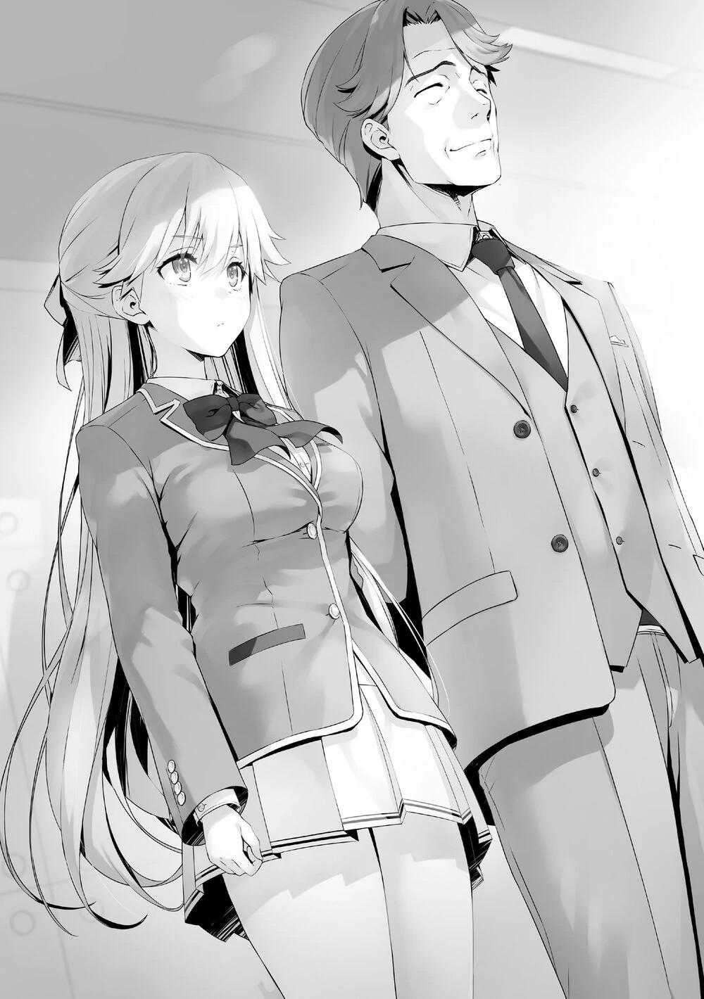
PALABRAS DEL AUTOR
Queridos lectores, en primer lugar, quiero pedir disculpas por el retraso de la publicación. Debido a las circunstancias actuales, la gente no puede salir mucho, y eso ha hecho que la guardería de mi hija esté cerrada. Además, el estado de salud de mi mujer no es bueno y hace poco nació nuestro segundo hijo. Todas estas cosas coincidieron, así que di prioridad a mantener a mi familia antes que a escribir.
Gracias al esfuerzo colectivo de todos, todo empezó a calmarse, y así el tiempo que dediqué a escribir aumentó gradualmente.
Entonces me di cuenta, una vez más, de que por estar en medio de este notable periodo de tiempo, no podía olvidar a las muchas personas que esperan mi trabajo como fuente de entretenimiento. Definitivamente, encontraré la manera de llenar el hueco que ha dejado el retraso en la publicación del segundo volumen. Por ahora, por favor, esperen un poco.
Así pues, soy Kinugasa Shougo. ¿Siguen todos llenos de energía? Ahora mismo estoy destrozado.
Debido a las cosas que han sucedido, estoy cansado, y he acumulado una gran cantidad de insatisfacción.
En el pasado, cuando tenía tiempo de sobra, mi corazón se frustraba con mi trabajo con la pluma, pero esta vez, he experimentado lo contrario. Grité desde el fondo de mi corazón: "¡Por favor, déjenme escribir!". Una vez más, me doy cuenta de que el hecho de poder trabajar cuando no tenía tiempo debe ser realmente apreciado.
Aunque el mundo es un caos en este momento, también hay algunas pequeñas bendiciones. Por ejemplo, como los días sin salir continúan, muchos restaurantes han empezado a vender cajas de bento. Cuando el negocio vuelva a la normalidad, me gustaría visitar algunos restaurantes que preparen buena comida.
Como nota al margen, el segundo volumen del segundo año que está a la venta ahora es un preludio, y el tercer volumen es una continuación del mismo.
Básicamente escribo un examen especial por volumen, pero no es el caso esta vez.
Los grupos de cada año luchan seriamente por conseguir la victoria, sólo eso haría el libro mucho más largo. Este volumen, más que ningún otro, da la sensación de que hay "más por venir", y en ese sentido, quiero hacer llegar el siguiente volumen lo antes posible.
Me gustaría publicar dos más este año. ¿Podré hacerlo o no?
Por favor, de vez en cuando estén atentos a este tipo de información.
No esperen mucho de mí, ¿sí? ☆
HISTORIAS CORTAS
SHIINA HIYORI HISTORIA CORTA
UNA EXCUSA
Albert-kun y yo estábamos esperando tranquilamente a la vuelta de la esquina.
Podíamos oír las voces del enérgico Ishizaki-kun y del tranquilo Ayanokouji-kun desde una ligera distancia.
Para crear el grupo pequeño para el examen especial que estaba programado para celebrarse en una isla deshabitada, nuestra primera elección como estudiante a invitar no fue Sakayanagi-san, Ichinose-san o incluso Horikita-san.
Tanto Ishizaki-kun como yo compartimos este sentimiento.
La idea de Ishizaki-kun de llamar a Ayanokouji-kun e invitarlo antes de que alguien pudiera hacerlo era correcta.
Al poco tiempo, aparecimos ante Ayanokouji-kun, que mostró una mirada de sorpresa al ver a Albert-kun.
—Buenos días, Ayanokouji-kun.
—Es una mezcla bastante inusual de miembros la que tienes ahí.
—Tal vez sea así.
Los tres no solemos andar juntos como grupo, así que Ayanokouji tenía todo el derecho a pensar que era extraño.
—Este no es el lugar adecuado, ¡vamos a movernos!
—¿Movernos? ¿A dónde?
—Hmm, veamos... ¡Realmente no he pensado en eso!
Era un plan apresurado, así que no era de extrañar que Ishizaki-kun no hubiera planeado nada después de esto.
Podría haberle dicho algo fácilmente, pero decidí no aconsejarle nada.
—Tengo un muy mal presentimiento sobre esto así que, ¿puedo irme ahora?
Seguramente sintió el peligro que tenía delante, así que preguntó si podía volver.
—¿Qué pasa con eso, no eres libre ahora mismo? No te dejaremos ir.
Nuestras respiraciones sincronizadas, Albert-kun y yo fuimos detrás de Ayanokouji-kun.
—No me dejarán ir... ¿qué?
—¡Lo siento Ayanokouji-kun! ¡Pero no podemos dejar que te vayas!
Albert sujetó su flanco con fuerza.
Y yo aseguré su otro brazo para evitar que escapara.
—¿Qué...?
No esperaba que usáramos la fuerza, así que no es de extrañar que se mostrara tan confuso.
Pero la verdad es que, aunque lo invitáramos con medios contundentes, ya predije que iba a ser inútil.
Lo más seguro es que se una a uno de los grupos formados sólo por alumnos de la clase D, o que fuera en solitario.
En cualquiera de los dos casos, una persona que podría ser la clave de su victoria no podría unirse a ninguna otra clase tan fácilmente.
Pero aun así, opté por alentar el plan de Ishizaki-kun y ayudarle con él.
—Estamos atrayendo demasiada atención aquí, así que sigamos adelante Ishizaki-kun.
Si quieres saber por qué, sólo quería...
Sí, sólo quería... encontrarme con Ayanokouji-kun.
Decidí cooperar ya que quería una excusa.
Puse un poco más de fuerza en mi abrazo.
Estaba anticipando el tiempo que pasaríamos juntos, aunque fuera un segundo más-.
AMASAWA ICHIKA HISTORIA CORTA
LO QUE SE REFLEJA EN SUS OJOS (DE ELLA)
Ese día llevaba mi ropa favorita mientras tarareaba una canción.
—¿Pensará que soy guapa?
He estado vigilando a Karuizawa Kei de la clase 2-D durante casi dos semanas.
Ha estado yendo al café, al karaoke, a todo el centro comercial de Keyaki en realidad.
Sus compañeras de juego eran las chicas de su clase, así que ese tiempo fue una pérdida para mí.
Gracias a que superé esta dificultad y aguanté hasta el final, por fin ha llegado este día.
Karuizawa volvía hoy directamente a la residencia de 2º año, algo inusual.
Como si fuera una intuición, me apresuré a salir al vestíbulo del primer piso y la observé mientras entraba en su habitación.
Después de esperar un poco, tomé el ascensor y llegué al piso donde estaba su habitación.
Y mientras esperaba a que saliera, me quedé esperando cerca de las escaleras de emergencia mientras contenía la respiración.
Una hora después de terminar las clases, apareció en el pasillo con su uniforme escolar.
Está lista para su cita secreta.
Mi corazón bailaba al confirmar que se dirigía al piso de Ayanokouji-senpai.
Rápidamente salí del dormitorio de 2º año y volví a mi habitación.
—Hmm, ¡perfecto!
Se hizo en un orden realmente molesto, ¡pero ahora puedo cambiarme a una ropa linda!
Sería un desperdicio si no soy lo suficientemente linda.
—¡Ah, sí, sí! No puedo olvidar esto.
Me metí en el bolsillo una pequeña caja romántica que compré antes en la tienda.
Después de terminar de cambiarme de ropa, salí rápidamente del dormitorio de primer año.
Tenía muchas ganas de ir directamente a la residencia de 2º año, pero primero me dirigí al centro comercial Keyaki.
Luego eché rápidamente los ingredientes de la comida en el carrito de compras.
No fui particular con los ingredientes que elegí.
Cogí verduras, productos cárnicos frescos, y en general cosas que se echan a perder con facilidad y fui a pagar.
Entonces, me dirigí de nuevo hacia el dormitorio de 2º año.
Por suerte, fue en ese momento cuando Nomura Shuuji también regresó, así que lo seguí muy de cerca y pasé la cerradura automática.
Utilicé las escaleras de emergencia y me dirigí a la habitación 401 donde estaban Ayanokouji-senpai y Karuizawa.
Mi corazón latía rápidamente y traté de calmarme hasta llegar a la puerta de su habitación.
Supuse que me verían a través de la mirilla de la puerta, así que escondí la bolsa con los ingredientes frescos en un rincón inaccesible.
Bien. ¡Todos los preparativos están hechos!
Llamé al timbre de la puerta y comencé la visita sorpresa.
Después de un prolongado silencio, sentí a Senpai a través de la puerta.
—Se~npai.
Le llamé con voz dulce. Debe estar observándome en este momento.
Su vista debía estar anclada en la visión que mi linda apariencia reflejaba en esa pequeña lente.
Pero eso no era suficiente.
Tenía que hacer que me reconociera aún más.
Por eso, tengo que hacer que me invite a la habitación usando cualquier medio.
Está bien. Puedo predecir todas las formas en que intentará rechazarme.
Dos flechas, tres flechas. No importa cuántos disparos, él perderá los medios para defenderse.
Para acercarse a un oponente fuerte, es necesario perforar sus debilidades.
Atravesaré a conciencia sus pocos puntos débiles.
Cuando vi que la puerta se abría lentamente, esbocé una gran sonrisa.
—¡Soy yo!
Me pregunto con qué cara me recibirá... Lo estoy deseando.
HORIKITA SUZUNE HISTORIA CORTA EL QUE ESTÁ A MI LADO
—¿Deseas unirte al consejo estudiantil?
Cuando le dije que quería entrar en el consejo, el presidente Nagumo me miró sorprendido.
—Me pregunto, ¿qué demonios te pasó para que ocurra esto?
Sinceramente, diré que en cierto modo no quiero decir que sí.
—Entonces, ¿eso significa que no me aceptarás?
—No es eso. Sólo adopto la postura de no rechazar a nadie que venga a mí. Si hay puestos libres o es posible entrar, dejaré entrar a cualquiera.
Tampoco me interesan sus motivos. Ya sea por la OAA, por las futuras perspectivas de trabajo o por el sentido de la justicia, todo depende de ti. Pero, tú eres diferente, Horikita Suzune. Tengo que insistir en una condición para ti.
Como hermana de Horikita Manabu, es necesario que cumpla algún tipo de tarea.
—¿Cuál es esa condición?
Me preparo para recibirla y le pregunto.
—Dime la razón por la que, en este momento, quieres unirte al consejo estudiantil.
No fue algo que hubiera imaginado, pero igualmente no puedo negarme.
Aunque invente alguna mentira estúpida, seguramente no se sorprenderá.
Dicho esto, tampoco puedo mencionar que está relacionado con Ayanokouji-kun.
—Tuve una discordia con mi hermano. Y me inscribí en esta escuela para hacer las paces. Pero desde que entré, mi relación con mi hermano nunca cambió. Él nunca habría aceptado a alguien como yo, que en realidad nunca
mostró algún indicio de crecimiento. Pasé un año entero sin poder tener una charla adecuada con él hasta los últimos momentos.
Respondí, sintiendo que mi corazón latía más rápido.
Y él, que escuchaba de cerca, tampoco dijo nada.
Si todo acaba sin que pueda entrar en el consejo, seguramente él se sentirá decepcionado.
Quiero evitar eso a toda costa.
¿Decepcionado? ¿Yo? ¿Quería evitar decepcionarlo?
Mi corazón se agitó por este sentimiento del que no me había dado cuenta.
¿Cómo me estaba viendo en este momento?
Eso me interesaba un poco.
El hecho de que no sea un estudiante normal es algo que sabía incluso antes de que obtuviera esa puntuación perfecta en matemáticas.
El presidente Nagumo, que estaba hablando frente a mí y fue reconocido por mi hermano, es ciertamente un estudiante asombroso, no hay duda de eso... pero si se le compara con Ayanokouji-kun, esas impresiones extrañamente cambian todo.
Sin embargo, no hay duda de que inconscientemente lo valoro mucho.
Aunque una parte de mí quería conocer sus verdaderas habilidades, me di cuenta de que había otra que quería algo más.
Es decir, el deseo de que me reconozca.
¿Quizás una de las razones por las que vine a entrar en el consejo con una actitud positiva fue por eso?
... Esa no era mi intención.
Hice un gesto para alejar estos extraños pensamientos que tenía. Tenía que concentrarme en las cosas que tenía que hacer primero.
Tengo que entrar en el consejo estudiantil y confirmar los movimientos del presidente Nagumo.
Esa es una tarea crucial.
Tomé las riendas de los sentimientos que comenzaron a desviarse, y alejé estos pensamientos vacíos que tenía.
—No hay otros miembros del consejo estudiantil de 2º grado aparte de Honami en este momento, por lo que hemos sido molestados. Bienvenida al Consejo Estudiantil. Haré que trabajes duro como miembro del consejo desde hoy, Suzune.
Cogí la mano izquierda que me tendía.
—Por supuesto.
Nunca será una relación amistosa.
Pero, sin duda, hay cosas que puedo aprender de él, quien estuvo al lado de mi hermano.
Tomaré esa experiencia y una vez más creceré.
Al hacerlo, Ayanokouji-kun seguramente me reconocerá.
Para ese momento... definitivamente estaremos a las puertas de la Clase A.
Esa fue una premonición de la que no pude deshacerme.
TSUBAKI SAKURAKO HISTORIA CORTA
LO QUE SE PUEDE VER DESDE ATRÁS
Si me preguntaran sobre lo que se me da mejor, diría sin dudarlo que es mi perspicacia e intuición.
En el camino de vuelta a los dormitorios desde el centro comercial Keyaki.
Estaba viendo la espalda de Ayanokouji-senpai desaparecer dentro de una tienda.
Lo había estado siguiendo silenciosamente hasta ahora, pero él no había mostrado ninguna señal de haberme notado.
Pero, definitivamente se ha fijado en mí.
Su actitud habitual, su comportamiento, es el de un estudiante de preparatoria normal.
Su aspecto es el de un estudiante normal que puedes encontrar en cualquier sitio.
Me mantuve a una distancia adecuada de él, y agarré una paleta que vi cerca de mí antes de llamarlo.
Pero aun así, no había necesidad de que asumiera esa posibilidad, supongo.
No me prestó ninguna atención y se limitó a meter lo necesario en su cesta de compras.
Al poco tiempo, le llamé justo antes de que pagara.
—¿Disculpa~~?
Si decidía verle salir, no quedaría ninguna oportunidad por hoy.
—Tú eres Tsubaki, ¿verdad? ¿Necesitas algo de mí?
Incluso cuando dirigí su atención hacia mí, no parecía sorprendido en absoluto.
No sacó a relucir el hecho de que también lo observara en la cafetería.
—Hay algo de lo que quiero hablar contigo, ¿podrías esperar fuera un momento?
Comprar al menos una paleta era lo menos que podía hacer para mostrar cortesía hacia la tienda y no sólo mirar el escaparate.
...¿supongo? Tal vez era el trabajo del empleado de la tienda.
—Gracias por esperarme.
Quité el papel del envoltorio de la paleta mientras empezaba a caminar. A decir verdad, no se me da bien mantener conversaciones. No se me da especialmente mal estar con gente del sexo opuesto. Sólo se me da mal hablar.
—¿De qué querías hablar?
Me preguntó la razón por la que había contactado con él.
—Hay algo que debía decirte si me encuentro contigo ahora Ayanokouji-senpai.
Por ahora, tenía que ganar suficiente tiempo para que Utomiya-kun llegara.
—¿Utomiya-kun?
Como si hubiera leído lo que estaba pensando, preguntó con precisión.
—Supongo que tenía razón.
Como se esperaba de él... ¿es esa la forma correcta de decirlo?
—Dijo que vendría aquí, de inmediato.
No puedo indagar en su profunda psique todavía.
Hay tiempo más que suficiente, no hay necesidad de apresurarse. Despacio pero seguro.
Y entonces...


VISÍTANOS EN NUESTROS
DIFERENTES SITIOS
http://gladheimtranslations.blogspot.mx/
https://twitter.com/GladheimT
https://mastodon.social/@GladheimT
Si alguien desea hacer una donación
https://ko-fi.com/gladheimtranslation
https://www.buymeacoffee.com/gladheimtls
https://patreon.com/GladheimT